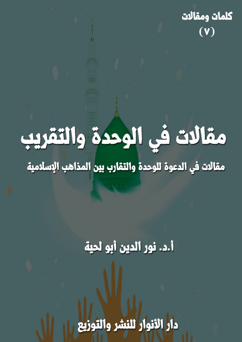

الكتاب: مقالات في الوحدة والتقريب
الوصف: مقالات في الدعوة للوحدة والتقارب بين المذاهب الإسلامية
السلسلة: كلمات ومقالات
المؤلف: أ. د. نور الدين أبو لحية
الناشر: دار الأنوار للنشر والتوزيع
الطبعة: الثانية، 1443 هـ
عدد الصفحات: 293 <<
ISBN: 978-620-4-72224-5
لمطالعة الكتاب من تطبيق مؤلفاتي المجاني وهو أحسن وأيسر: هنا

يحتوي هذا الكتاب على مجموعة مقالات نشرت سابقا في مجلات مختلفة، وهي تدور جميعا حول الدعوة للوحدة والتقريب بين المذاهب الإسلامية، أو ما يرتبط بها من مواضيع.
وقد اهتممنا خصوصا بهذا الجانب، وفي الكثير من الكتب، باعتباره من الجوانب التي دعا إليها القرآن الكريم، واعتبرها ركنا من أركان الدعوة والإصلاح؛ فالداعية الحقيقي هو صاحب البصيرة الذي يحرص على توحيد المسلمين، وإشاعة التآلف بينهم، وهدم كل ما قد يؤدي إلى النزاع بينهم.
ولكن ذلك لا يعني التعامل العاطفي مع قضايا الخلاف بين المسلمين، لأن ذلك قد يسكن الخلاف ولا يزيله، وقد ينصر ظالما على حساب مظلوم، وقد أمرنا الله تعالى في حال وقوع الخلاف بين المسلمين أن ننصر المظلوم، لا الظالم، كما قال تعالى: ﴿وَإِنْ طَائِفَتَانِ مِنَ الْمُؤْمِنِينَ اقْتَتَلُوا فَأَصْلِحُوا بَيْنَهُمَا فَإِنْ بَغَتْ إِحْدَاهُمَا عَلَى الْأُخْرَى فَقَاتِلُوا الَّتِي تَبْغِي حَتَّى تَفِيءَ إِلَى أَمْرِ اللَّهِ فَإِنْ فَاءَتْ فَأَصْلِحُوا بَيْنَهُمَا بِالْعَدْلِ وَأَقْسِطُوا إِنَّ اللَّهَ يُحِبُّ الْمُقْسِطِينَ﴾ [الحجرات: 9]
ولذلك رفضنا في هذا الكتاب وغيره كل من يدعو إلى عدم البحث في قضايا الخلاف، أو البحث فيها بطريقة عاطفية، لأن ذلك لا يتناسب مع ما أمرنا الله تعالى به من الرجوع إلى القرآن الكريم، والتحاكم إليه، كما قال تعالى: ﴿يَا أَيُّهَا الَّذِينَ آمَنُوا أَطِيعُوا اللَّهَ وَأَطِيعُوا الرَّسُولَ وَأُولِي الْأَمْرِ مِنْكُمْ فَإِنْ تَنَازَعْتُمْ فِي شَيْءٍ فَرُدُّوهُ إِلَى اللَّهِ وَالرَّسُولِ إِنْ كُنْتُمْ تُؤْمِنُونَ بِاللَّهِ وَالْيَوْمِ الْآخِرِ ذَلِكَ خَيْرٌ وَأَحْسَنُ تَأْوِيلًا﴾ [النساء: 59]
مقالات في الوحدة والتقريب (8)
يحتوي هذا الكتاب على مجموعة مقالات نشرت سابقا في مجلات مختلفة، وهي تدور جميعا حول الدعوة للوحدة والتقريب بين المذاهب الإسلامية، أو ما يرتبط بها من مواضيع.
وقد اهتممنا خصوصا بهذا الجانب، وفي الكثير من الكتب، باعتباره من الجوانب التي دعا إليها القرآن الكريم، واعتبرها ركنا من أركان الدعوة والإصلاح؛ فالداعية الحقيقي هو صاحب البصيرة الذي يحرص على توحيد المسلمين، وإشاعة التآلف بينهم، وهدم كل ما قد يؤدي إلى النزاع بينهم.
ولكن ذلك لا يعني التعامل العاطفي مع قضايا الخلاف بين المسلمين، لأن ذلك قد يسكن الخلاف ولا يزيله، وقد ينصر ظالما على حساب مظلوم، وقد أمرنا الله تعالى في حال وقوع الخلاف بين المسلمين أن ننصر المظلوم، لا الظالم، كما قال تعالى: ﴿وَإِنْ طَائِفَتَانِ مِنَ الْمُؤْمِنِينَ اقْتَتَلُوا فَأَصْلِحُوا بَيْنَهُمَا فَإِنْ بَغَتْ إِحْدَاهُمَا عَلَى الْأُخْرَى فَقَاتِلُوا الَّتِي تَبْغِي حَتَّى تَفِيءَ إِلَى أَمْرِ اللَّهِ فَإِنْ فَاءَتْ فَأَصْلِحُوا بَيْنَهُمَا بِالْعَدْلِ وَأَقْسِطُوا إِنَّ اللَّهَ يُحِبُّ الْمُقْسِطِينَ﴾ [الحجرات: 9]
ولذلك رفضنا في هذا الكتاب وغيره كل من يدعو إلى عدم البحث في قضايا الخلاف، أو البحث فيها بطريقة عاطفية، لأن ذلك لا يتناسب مع ما أمرنا الله تعالى به من الرجوع إلى القرآن الكريم، والتحاكم إليه، كما قال تعالى: ﴿يَا أَيُّهَا الَّذِينَ آمَنُوا أَطِيعُوا اللَّهَ وَأَطِيعُوا الرَّسُولَ وَأُولِي الْأَمْرِ مِنْكُمْ فَإِنْ تَنَازَعْتُمْ فِي شَيْءٍ فَرُدُّوهُ إِلَى اللَّهِ وَالرَّسُولِ إِنْ كُنْتُمْ تُؤْمِنُونَ بِاللَّهِ وَالْيَوْمِ الْآخِرِ ذَلِكَ خَيْرٌ وَأَحْسَنُ تَأْوِيلًا﴾ [النساء: 59]
وهذه عناوين وملخصات مختصرة للمقالات الواردة في الكتاب:
مقالات في الوحدة والتقريب (8)
1. المشتركات ودورها في التقريب بين المذاهب الإسلامية: ويهدف إلى بيان دور المشتركات، أو القضايا والمسائل المتفق عليها بين المسلمين في العقائد والفقه والسلوك والمواقف وغيرها في التقريب بينهم، ويبين كيف حاول الطائفيون استثمار المسائل الخلافية الفرعية على حساب تلك المشتركات الكثيرة، وهو يدعو من خلال ذلك إلى رعاية تلك المشتركات، والدعوة إليها في كل الوسائل لتحبط ما يهدف إليه الطائفيون من مؤامرات لتصديع الوحدة الإسلامية.
2. ظاهرة التصنيف والإقصاء وآثارها السلبية على وحدة الأمة من خلال التاريخ والواقع: ويهدف إلى دراسة ظاهرة [التصنيف والإقصاء] ومظاهرها وآثارها على الوحدة الإسلامية عبر الأمثلة والنماذج التاريخية والواقعية، وذلك بغية التعرف على أسباب ما وصل إليه الواقع الإسلامي من تفكك وصراع وتفرق.. وقد تناول هذه الظاهرة من خلال مظاهرها المرتبطة بالأعراق والقوميات، أو بالآراء والمذاهب.. كما تناول آثارها، والتي تشمل: الوحدة الدينية، والوحدة الاجتماعية، والوحدة السياسية.
3. مظاهر الحملة العدائية على إيران من خلال مواقف أعلام الحركة الإسلامية المعاصرة: وهو يتناول ما قوبلت به الجمهورية الإسلامية الإيرانية بعد انتصار ثورتها من أصناف الأذى من الإسلاميين الذين كان الأصل فيهم مناصرتها والوقوف معها، وقد ذكرنا في المقال ثلاثة مظاهر كبرى للعداء، أولها الكتمان والجحود: ونعني به كتمان فضائل الجمهورية الإسلامية الإيرانية وجحود أدوارها المختلفة في الحضارة والمقاومة.. وثانيها التشويه والتحريف: ونعني به تشويه كل ما له علاقة بإيران ابتداء من النظام الإسلامي، وانتهاء بالولاء لأهل البيت، باعتبار أن كل المنجزات الإيرانية هي ثمرة لذلك الولاء المقدس.. وثالثها المواجهة والإرهاب: ونعني به ما تمارسه هذه الحركات من تحريض على
مقالات في الوحدة والتقريب (9)
الحرب على إيران، وتحريض على إثارة الفتنة فيها.
4. التصوف والتشيع، مشتركات وفوارق: وقد تناولنا فيه أولا الخلاف الكبير بين الباحثين من المدارس المختلفة فيما يطلق عليه العلاقة بين التصوف والتشيع، وهل التصوف يناقض التشيع ويختلف معه اختلافا جوهريا، أم أنه امتداد له، وأثر من آثاره، ونسخة من نسخه، أم أن هناك قواسم مشتركة بينهما، كما أن هناك نقاط اختلاف؟
وقد ذكرنا أنه تشكل نتيجة الإجابة عن هذا التساؤل ثلاثة اتجاهات، الأول، يرى الصلة الشديدة بين التشيع والتصوف، وأن كليهما أثر في الآخر، وأخذ منه، بل يرى أن التصوف ليس سوى ثمرة من ثمار التشيع.. والثاني، يرى الاختلاف الشديد بين الصوفية والشيعة، وأنه لا وجود لأي صلة بينهما، ويمثله بعض الصوفية، وبعض الشيعة.. والثالث، يرى أن هناك نواح كثيرة يتفق فيها الصوفية مع الشيعة، كما أن هناك نواح أخرى لا تقل عنها يختلفون معهم فيها، وأنه لذلك لا ينبغي الحكم على الصلة المطلقة بين التصوف والتشيع، بل ينظر في كل مسألة على حدة، ليرى هل يتفق فيها الشيعة مع الصوفية، أم يختلفون.
ومن خلال رؤية الاتجاه الثالث ذكرنا المشتركات والفوارق بين الصوفية والشيعة في المجالين الكبيرين للتصوف: العرفان العملي، والعرفان النظري.
5. الآثار الدينية وأدوارها العلمية والتربوية من خلال التاريخ والواقع: وقد حاولنا فيه أن نبين ـ من خلال التاريخ والواقع ـ الأدوار التي يمكن للآثار الدينية أن تؤديها لو أحسن استخدامها، وقد رأينا أنه يمكن تصنيفها إلى دورين كبيرين:
أولهما ـ الدور العلمي والمعرفي، بتوضيح الحقائق المجهولة، وكشفها، والدعوة للتحقيق فيها، فالآثار من أكبر السجلات الحافظة لحقائق التاريخ.
مقالات في الوحدة والتقريب (10)
ثانيهما ـ الدور التربوي، ويشمل الحديث عن دور الآثار في التربية بأنواعها المختلفة: الروحية والأخلاقية والاجتماعية وغيرها، والتي قد تصل إلى بث وعي سياسي في الأمة يخرجها من تبعيتها، ويحقق لها سيادتها الكاملة.
وقد حاولنا أن ندرس هذين الدورين من خلال ما حصل في التاريخ الإسلامي من اهتمام بالآثار، ورعاية لها، وتأسيس مراكز حضارية كبرى من أجلها، كما ندرس ذلك من خلال الواقع، وخاصة ما حصل في الفترة الأخيرة من إحياء النهضة الحسينية، واستثمار المراقد المقدسة لذلك.
6. المدارس الإسلامية ومواقفها من المزارات الدينية: وهو يحاول الرد على ما نراه في الواقع من مواقف سلبية من المزارات الدينية، والتي تعتمد على ما أثاره محمد بن عبد الوهاب من شبهات مستخدما تراث ابن تيمية، وموقفه المتشدد من قبر رسول الله صلى الله عليه وآله وسلم والأضرحة والمشاهد المختلفة التي تنتشر في العالم الإسلامي، والذي خالف به جميع معاصريه من الفقهاء العلماء، وذلك عبر ذكر مواقف الفقهاء وتصريحاتهم المرتبطة بمشروعية المزارات الدينية.. وعبر ذكر البراهين الدالة على مشروعية بناء المزارات الدينية وزيارتها.
7. العرض القيمي لتاريخ العترة الطاهرة وأسسه: وقد دعونا فيه إلى الطرح الصحيح لتاريخ العترة الطاهرة، ذلك أنه لا يصح اعتبار تاريخهم كسائر التواريخ التي يهتم فيها المؤرخون بتسجيل الأحداث التي حصلت وسردها، وقد يحللون أسبابها ودوافعها وغاياتها، ويكتفون بذلك.. ذلك أن تاريخهم مثل تاريخ الأنبياء معبر عن القيم التي جاءوا بها، والهدي الذي كلفوا بتبليغه وبيانه، وبناء على هذا؛ فإن التسجيل الصحيح لتاريخ العترة الطاهرة يعتمد على الرؤية القيمية القرآنية، لا على مجرد السرد التاريخي الذي يعتمد المناهج
مقالات في الوحدة والتقريب (11)
العامة في كتابة التاريخ.
ومن خلال اطلاعنا على الواقع ذكرنا أنه ينبغي مراعاة ستة نواح في عرض تاريخ العترة الطاهرة، وهي: أولا ـ بيان عبوديتهم لله والتحذير من الغلاة في حقهم.. ثانيا ـ بيان شدة ارتباطهم برسول الله صلى الله عليه وآله وسلم.. ثالثا ـ بيان شدة ارتباطهم بالقرآن الكريم.. رابعا ـ بيان شدة ارتباطهم بالشريعة الإسلامية.. خامسا ـ الاهتمام بإبراز جانب القدوة في حياتهم.. سادسا ـ الاهتمام بإبراز الجانب الرسالي من حياتهم.
8. الإمام الحسن.. والمظلومية الأولى والثانية: وقد رددنا فيه على بعض المظلوميات التي أساءت للإمام الحسن الذي لا يختلف عن أخيه الإمام الحسين في فضائله ومناقبه وأخلاقه وروحانيته؛ فهو مثله من كل الوجوه.
9. النهضة الحسينية والقيم الأخلاقية: وقد ذكرنا فيه أمهات الأخلاق التي دعا إليها الإمام الحسين بسلوكه وحركته، وبيان أهمية ذلك، ودوره في حفظ أصالة الدين.
10. الامام الباقر وجهوده في مواجهة الانحرافات العقدية: ويتناول الحديث عن دور الإمام الباقر في مواجهة الانحرافات العقدية التي حصلت في عصره، وما قبله، والتي كان لها امتدادها في التراث والثقافة الإسلامية، ومن أهمها فرقة المجسمة والمشبهة، وهي التي تبنتها الدولة الأموية عبر محدثيها وفقهائها، والذين أصبحوا يسمون فيما بعد [أهل الحديث]، ومثلهم الخوارج، الذين خرجوا عن الإمام علي، ووضعوا تصورات عقائدية خاصة بهم، ومثلهم المعتزلة، وهي المدرسة التي جمعت بين موقفها السياسي المحايد للسلطة الأموية، مع بعض المواقف العقدية التي انحرفت عن العقيدة الإسلامية الأصيلة، ومثلهم المنحرفين الغلاة من الشيعة الذين أساءوا للولاء لأهل البيت، وأعطوا صورة مشوهة عنهم.
مقالات في الوحدة والتقريب (12)
المشتركات ودورها في التقريب بين المذاهب الإسلامية
عند التأمل في أسباب ما يحصل من خلاف شديد بين المذاهب الإسلامية، والمجتمعات التي تمثلها، والعلماء والدعاة الذي يتصدرون جانب التعبير عنها، أو التوجيه لها، نجده يتمثل في التركيز على نقاط الخلاف، وإحيائها، وإعطائها أكثر من حقها، في نفس الوقت الذي تهمل فيه ـ عمدا أو غفلة ـ الكثير من تلك المشتركات التي يمكنها أن توحد الأمة، وتعيد لها ألفتها وتقاربها، وتعيد لها معها حياتها وقوتها.
والسبب الأكبر في إهمال المشتركات والتركيز على مسائل الخلاف، هو طلب كل صاحب مذهب التميز عن غيره، لتبقى له طائفته ومذهبته وعصبته.. أو لخشيته من تأثير الآخر فيه، أو تأثره به.. وذلك كله يحول بينه وبين تحقيق أنانيته وعصبيته المتسترة وراء مذهبه.
هذه هي المنابع النفسية والاجتماعية التي تكمن وراء ذلك التشدد في قضايا الخلاف، في نفس الوقت الذي تهمل فيه قضايا الوفاق حتى لو كانت من أصول أصول الدين.
وهذا خلاف المنهج القرآني الذي يدعو إلى رعاية جوانب الوفاق في الخطاب مع الآخر باعتبارها الفاتحة الطيبة، أو المسوغ الذي يفتح المجال بعد ذلك للحوار الهادئ في قضايا الخلاف.. كما قال تعالى وهو يعلمنا منهج التعامل مع أهل الكتاب: ﴿قُلْ يَاأَهْلَ الْكِتَابِ تَعَالَوْا إِلَى كَلِمَةٍ سَوَاءٍ بَيْنَنَا وَبَيْنَكُمْ أَلَّا نَعْبُدَ إِلَّا اللَّهَ وَلَا نُشْرِكَ بِهِ شَيْئًا وَلَا يَتَّخِذَ بَعْضُنَا بَعْضًا أَرْبَابًا مِنْ دُونِ اللَّهِ فَإِنْ تَوَلَّوْا فَقُولُوا اشْهَدُوا بِأَنَّا مُسْلِمُونَ﴾ [آل عمران: 64]
فمع كون مساحة الخلاف بين الإسلام واليهودية والمسيحية كبير جدا، ولكن مع
مقالات في الوحدة والتقريب (13)
ذلك ذكر لنا القرآن الكريم أن جوانب مهمة وأساسية تجمعنا معهم، ويمكننا من خلالها أن نتحاور ونتقارب ونتعايش.
بل إن القرآن الكريم اختار في خطابه للبشرية الكثير من المشتركات التي تجمع بين الأديان، فلذلك ذكر قصص أنبياء بني إسرائيل باعتبارهم موثوقين ومعروفين لدى اليهود والنصارى، مع أن هناك أنبياء كثيرين غيرهم، ولكن القرآن ركز عليهم، بل أثنى عليهم، ليكون في ذلك تأليفا لقلوبهم، ودعوة لهم للتعرف على الإسلام.
بناء على هذا نحاول في هذا المقال البحث عن المشتركات بين هذه المذاهب، وكيفية إحيائها، والدعوة إليها، باعتبارها صمام أمان ووحدة هذه الأمة، والتي هي المقدمة الأساسية لنهضتها وحضارتها.
وسنرى من خلاله كثرة تلك المشتركات وتشعبها، وشمولها للدين بجميع جوانبه، ونرى معها قلة نقاط الخلاف، وكيف استثمر فيها أصحاب العقول الطائفية ليحولوا منها أصولا تنخر كيان الأمة، وتنحرف بدورها في تحقيق رسالتها للبشرية.
وقد رأينا تصنيفها بحسب المجالات التي تتعلق بها إلى خمسة أقسام، هي:
المشتركات العقدية: ونريد بها ما اتفق عليه المسلمون من مسائل العقيدة وقضاياها.
المشتركات الفقهية: ونريد بها ما اتفق عليه المسلمون من مسائل الفقه وقضاياه.
المشتركات السلوكية: ونريد بها ما اتفق عليه المسلمون من قضايا السلوك والأخلاق.
المشتركات في المصادر: ونريد بها اتفاق المسلمين على مركزية القرآن الكريم، والكثير من السنة المطهرة، وكونها مصادر الدين في جميع أحكامه.
المشتركات في المواقف: ونريد بها اشتراك المسلمين في الكثيرمن القضايا المصيرية
مقالات في الوحدة والتقريب (14)
بمختلف جوانبها.
وقد خصصنا كل قسم منها بمطلب خاص.
عند مسح أو استقراء مواضع الاتفاق في العقيدة بين جميع المذاهب الإسلامية الكبرى من الأشاعرة والماتريدية والمعتزلة والإمامية والزيدية والإباضية وغيرهم نجد كما كبيرا من مواضع الاتفاق لا يكاد يحصى، بل إن مواضع الخلاف بينهم تكاد تنحصر في مواضع فرعية بسيطة، قد لا يعرفها إلا المختصون من الباحثين.
فهم يتفقون جميعا في معظم المسائل المرتبطة بالإيمان بالله وملائكته وكتبه ورسله واليوم الآخر، وهم يتفقون في أكثر مسائل القضاء والقدر والحكمة والتعليل، وإن كانوا يختلفون في بعض الفروع، التي ليس لها من الأهمية ما لأصول الدين الكبرى التي نصت عليها الأدلة القطعية.
وكمثال على المشتركات في باب الإلهيات، وهو أهم أبواب العقائد، أننا ـ عند البحث في التراث العقدي للمذاهب المختلفة ـ نجدهم جميعا متفقين على أكثر المسائل المرتبطة بها، وخاصة بصورتها البسيطة الواضحة، فليس بين المسلمين تلك الخلافات التي نجدها بين الأرثوذكس والكاثوليك، أو غيرهم من الطوائف.
فالطوائف الإسلامية متفقة جميعا على أن الله (واحد لا شريك له، فرد لا مثيل له، صمد لا ضد له، منفرد لا ندّ له، وأنه واحد قديم لا أول له، أزلى لا بداية له، مستمر الوجود لا آخر له، أبدي لا نهاية له، قيوم لا انقطاع له، دائم لا انصرام له، لم يزل ولا يزال موصوفا بنعوت الجلال، لا يقضى عليه بالانقضاء والانفصال، بتصرم الآباد وانقراض الآجال، بل هو الأول والآخر، والظاهر والباطن، وهو بكل شي ء عليم.. وأنه ليس بجسم مصور، ولا
مقالات في الوحدة والتقريب (15)
جوهر محدود مقدر.. وأنه ليس كمثله شي ء ولا هو مثل شي ء، وأنه لا يحده المقدار، ولا تحويه الأقطار، ولا تحيط به الجهات، ولا تكتنفه الأرضون ولا السموات) (1)
إلى آخر ما وضع في متون العقائد وشروحها في كتب المدارس العقدية المختلفة، أما مسائل الخلاف بينها، فلا يعدو قضايا فرعية جدا، قد لا يعرفها إلا المختصون، من أمثال علاقة الذات بالصفات، ونحو ذلك، وهي مما قد لا يخطر على بال أكثر الناس.
لكن الطائفيين على مدار التاريخ الإسلامي غفلوا عن كل هذه الحقائق، والتي نطقت بها أسماء الله الحسنى، ودل عليها القرآن الكريم، وقبل ذلك دل عليها العقل، فراحوا يهونون من شأنها، ويحولون العقائد في الله عن مسارها الصحيح، فقسموا التوحيد الذي هو أصل أصول الدين إلى ثلاثة أقسام: (توحيد الألوهية وتوحيد الربوبية وتوحيد الأسماء والصفات)
ثم راحوا إلى [توحيد الألوهية] يعرضونه بالمفهوم الذي نظر له ابن تيمية، وركز عليه خصوصا محمد بن عبد الوهاب، وتبنته بعد ذلك كل التنظيمات الإرهابية ليجعلوا منه الأداة الكبرى التي يحكمون بها على أكثر المسلمين بالشرك ومقتضياته.
فمفهوم الشرك المرتبط بهذا النوع من التوحيد ـ عندهم ـ يختلف عن مفهومه عند جميع المدارس والفرق الإسلامية، ذلك أنه لا يعني فقط جعل الند مع الله تعالى، وإنما يضيفون إليه الكثير من السلوكات التي يمارسها المسلمون سلفهم وخلفهم بنية تعظيم من أمر الله بتعظيمه من الصالحين والأولياء ونحو ذلك، فيعتبرون تلك السلوكات التعظيمية شركا جليا بالله تعالى.
ولهذا يدخل في الشرك الجلي عندهم التوسل بالأولياء، أو الاستغاثة بهم، أو النذر
__________
(1) إحياء علوم الدين، أبو حامد محمد بن محمد الغزالي الطوسي (المتوفى: 505 هـ)، دار المعرفة – بيروت، 1/ 155.
مقالات في الوحدة والتقريب (16)
لهم، أو القسم بهم، أو طلب الشفاعة منهم، أو زيارة أضرحتهم، أو البناء على قبورهم.. وغير ذلك، مما يسمونه (نواقض التوحيد)
فكل من فعل هذا عندهم مشرك، وإن صلى وصام وحج وعمل بكل ما طلبته الشريعة من تكاليف، يقول محمد بن عبد الوهاب في رسالة له في (معنى لا إله إلا الله): (إن الكفار الذين قاتلهم رسول الله صلى الله عليه وآله وسلم كانوا يتصدقون ويحجون ويعتمرون ويتعبدون ويتركون أشياء من المحرمات خوفا من الله عز وجل، ولكنهم لم يشهدوا لله بتوحيد الألوهية، وذلك أن المشركين كانوا يدعون الصالحين مثل الملائكة وعيسى وعزير وغيرهم من الأولياء، فكفروا بهذا مع اقرارهم بأن الله هو الخالق الرازق المدبر، واذا عرفت هذا عرفت معنى (لا اله الا الله)، وعرفت أن من دعا نبيا أو ملكا أو ندبه او استغاث به، فقد خرج من الإسلام) (1)
وهم لأجل هذا يعتبرون جميع المسلمين في جميع البلاد الاسلامية كفارا ومشركين، كما يقول محمد حامد الفقي ـ وهو علم من كبار أعلام السلفية في مصر ـ: (كما جرى لأهل مصر وغيرهم؛ فإن أعظم آلهتهم أحمد البدوي، وهو لا يعرف له أصل ولا فضل ولا علم ولا عبادة. ومع هذا فصار أعظم آلهتهم.. وكان أهل العراق ومن حولهم كأهل عمان يعتقدون في عبد القادر الجيلاني، كما يعتقد أهل مصر في البدوي. وعبد القادر من متأخري الحنابلة.. كما جرى من الرافضة مع أهل البيت.. وهكذا حال أهل الشرك مع من فتنوا به، وأعظم من هذا عبادة أهل الشام لابن عربي، وهو إمام أهل الوحدة الذين هم أكفر أهل الأرض وأكثر من يعتقد فيه هؤلاء لا فضل له ولا دين كأناس بمصر وغيره، وجرى في نجد قبل هذه الدعوة مثل هذا.. وفي الحجاز واليمن وغيرها من عبادة الطواغيت
__________
(1) نقلا عن: عقيدة محمد بن عبد الوهاب السلفية وأثرها في العالم الإسلامي، صالح بن عبد الله العبود.
مقالات في الوحدة والتقريب (17)
والأشجار والأحجار والقبور ما عمت به البلوى، كعبادتهم للجن وطلبهم للشفاعة منهم) (1)
وهكذا راحوا إلى ما يطلقون عليه [توحيد الربوبية] والذي يعني كل ما ورد من معاني الأسماء الحسنى في القرآن الكريم كرزق الله لعباده، ورحمته بهم، وإحسانه إليهم، ونحو ذلك.. وككون الله تعالى هو الخالق البارئ المصور.. وهكذا..
ومع كون القرآن الكريم أعطى هذا النوع من المعرفة بالله الحظ الأعلى، بل جعله الباب الوحيد لمعرفة الله تعالى، وهو ما اتفق عليه المسلمون جميعا إلا أن هؤلاء الطائفيين يحتقرون هذا النوع من المعرفة، لكونه محل اتفاق بين الأمة جميعا، ولأنهم يتصورون أن المشركين يشاركونهم فيه.. ولهذا فإن التوحيد الكامل عندهم هو إما توحيد الألوهية ـ كما رأينا ـ أو توحيد الأسماء والصفات.. والذي لا يقصدون منه إلا التجسيم والتشبيه.
بل إن هؤلاء الطائفيين لم يكتفوا بعزل تلك المشتركات التي اتفقت عليهم الأمة، والتي تشكل صمام أمنهم ووحدتهم، بل راحوا إلى قضايا فقهية فرعية خلافية يقحمونها في أبواب العقائد، لتنشغل الأمة عن مشتركاتها العقائدية، بخلافاتها الفرعية.
وكمثال على ذلك إقحامهم لمسألة [المسح على الخفين]ـ وهي مسألة فرعية فقهية وقع فيها الخلاف بين المدارس الفقهية الإسلامية ـ في أبواب العقائد، فحولوها من الفقه إلى العقيدة، بل إنهم جعلوها معيارا يتميز به السني عن المبتدع، في نفس الوقت الذي راحوا يعتبرون فيه المسح على القدمين بدعة ضلالة حتى لو ورد للدلالة عليه القرآن الكريم.
فقد أوردت المصادر العقدية لأولئك الطائفيين ما يسمونه [عقيدة المسح على
__________
(1) فتح المجيد شرح كتاب التوحيد، عبد الرحمن بن حسن بن محمد بن عبد الوهاب بن سليمان التميمي، المحقق: محمد حامد الفقي، مطبعة السنة المحمدية، القاهرة، مصر، الطبعة: السابعة، 1377 هـ/1957 م، ص 220.
مقالات في الوحدة والتقريب (18)
الخفين] كعقيدة من العقائد الكبرى التي يميزون بها السني من المبتدع، فقد أورد هذه العقيدة الغريبة أبو عثمان الصابوني (توفي 449 هـ) في (عقيدة أهل الحديث)، وقوام السنة الأصفهاني (توفي 534 هـ) في كتابه (الحجة في بيان المحجة)، والبربهاري في شرح السنة (1)، وابن خفيف في عقيدته (2)، وأبو عمرو الداني في الرسالة الوافية (3).. وغيرهم كثير.
وقد رووا في ذلك عن سفيان الثوري – مخاطباً من سأله عن معتقده ـ: (يا شعيب بن حرب، لا ينفعك ما كتبت لك حتى ترى المسح على الخفين دون خلعهما أعدل عندك من غسل قدميك) (4)، ورووا عنه قوله: (من لم يسمح على الخفين فاتهموه على دينكم) (5)
وقد ذكروا من أسباب إيراد هذه المسألة الفرعية في كتب العقائد مخالفة الروافض والخوارج الذين لا يجيزون المسح على الخفين، كما قال الإمام محمد بن نصر المروزي (توفي 294 هـ): (وقد أنكر طوائف من أهل الأهواء والبدع من الخوارج والروافض المسحَ على الخفين) (6)
فهكذا نرى كيف أهينت كل عقائد الدين الكبرى، وكيف اعتبروها غير نافعة لمن لم
__________
(1) شرح السنة للبربهاري، ت: محمد بن سعيد القحطاني، ط 1، 1408 هـ، دار ابن القيم، الدمام، أو شرح السنة للبربهاري، ت: خالد الردادي، ط 1، 1414 هـ، مكتبة الغرباء، المدينة، ص 30.
(2) انظر الفتوى الحموية الكبرى لابن تيمية، ت: حمد التويجري، ط 1، 1419 هـ، دار الصميعي، الرياض ص 443.
(3) انظر الرسالة الوافية لمذهب أهل السنة في الاعتقادات وأصول الديانات، عثمان بن سعيد بن عثمان بن عمر أبو عمرو الداني، المحقق: دغش بن شبيب العجمي، دار الإمام أحمد – الكويت، الطبعة: الأولى 1421 هـ ـ 2000 م، ص 145.
(4) شرح أصول اعتقاد أهل السنة والجماعة، لأبي القاسم اللالكائي، ت: أحمد سعد حمدان، ط دار طيبة، الرياض، 1/ 154.
(5) حلية الأولياء وطبقات الأصفياء، لأبي نعيم الأصبهاني، دار الكتب العلمية، بيروت، 7/ 32.
(6) مقالات الإسلاميين واختلاف المصلين، أبو الحسن الأشعري، عنى بتصحيحه: هلموت ريتر، دار فرانز شتايز، بمدينة فيسبادن (ألمانيا)، الطبعة: الثالثة، 1400 هـ ـ 1980 م، 2/ 161.
مقالات في الوحدة والتقريب (19)
يعتقد بهذه المسألة الفرعية التي لم تدل عليها الأدلة القطعية، وإنما دل عليها فقط حب التميز، والانتصار للطائفة.
ولم يكتفوا بهذا، بل إنهم أقحموا التاريخ، والخلافات التاريخية في قضايا العقائد، حتى أنهم وضعوا تعظيم معاوية وتقديسه وحرمة نقده ضمن مسائل العقائد، كما قال ابن بطة في (الإبانة الصغرى): (تترحم على أبي عبد الرحمن معاوية بن أبي سفيان أخي أم حبيبة زوج النبي صلى الله عليه وآله وسلم خال المؤمنين أجمعين وكاتب الوحي وتذكر فضائله) (1)
ولهذا ـ أيضا ـ نراهم يجيزون نقد عمار والطعن فيه وتأويل ما ورد في فضله من نصوص، بينما يعتبرون الكلام في معاوية طامة كبرى، وزندقة عظمى، وبدعة ليس لصاحبها قرار سوى في النار.. لأن سلفهم هو الذي قرر ذلك، ولا راد لقراره، فقد رووا عن سلفهم عبد الله بن المبارك قوله: (معاوية عندنا محنة، فمن رأيناه ينظر إلى معاوية شَزْراً؛ اتهمناه على القوم، أعني على أصحاب محمد صلى الله عليه وآله وسلم) (2)، ورووا عن الربيع بن نافع قوله: (معاوية بن أبي سفيان ستر أصحاب رسول الله صلى الله عليه وآله وسلم فإذا كشف الرجل الستر اجترئ على ما وراءه) (3)
مثلما رأينا اتفاق مدارس الأمة في أكثر مسائل العقائد وأهمها، فإنهم كذلك متفقون
__________
(1) الإبانة الصغرى (الشرح والإبانة على أصول أهل السنة والديانة)، عبيد الله بن محمد بن بطة العكبري، المحقق: رضا بن نعسان معطي، مكتبة العلوم والحكم، 1423 – 2002، ص: 299.
(2) تاريخ دمشق، أبو القاسم علي بن الحسن بن هبة الله المعروف بابن عساكر، المحقق: عمرو بن غرامة العمروي، الناشر: دار الفكر للطباعة والنشر والتوزيع، 1415 هـ ـ 1995 م، 59/ 209.
(3) تاريخ بغداد، أبو بكر أحمد بن علي بن ثابت بن أحمد بن مهدي الخطيب البغدادي، المحقق: الدكتور بشار عواد معروف، دار الغرب الإسلامي – بيروت، الطبعة: الأولى، 1422 هـ ـ 2002 م، 1/ 209.
مقالات في الوحدة والتقريب (20)
في أكثر المسائل العملية التي يطلق عليها [الفقه]، سواء في أبواب العبادات أو المعاملات، باعتبار أن أصول هذه الأبواب مذكورة في القرآن الكريم بصيغة قطعية، لتحفظ وحدة الأمة في هذا الجانب، بل إننا عندما نرجع للمصدر الثاني الذي هو السنة المطهرة، نجدهم كذلك يتفقون في أكثر الفروع الفقهية، والخلافات بينهم لا تعدوا بعض الصور والقضايا البسيطة.
ففي أبواب العبادات تتفق الأمة جميعا على وجوب الصلاة والصيام والزكاة والحج، وتتفق على فضل الذكر وتلاوة القرآن الكريم والصلاة على رسول الله صلى الله عليه وآله وسلم.. بل إنها تتفق حتى في تفاصيل الفروع، فكلها تتفق على أن في الصلاة ركوعا وسجودا وقراءة، والخلافات بينها في هذا الباب لا تعدو بعض التطبيقات البسيطة كالقبض والسدل، أو تحريك الأصابع عند التشهد وعدم تحريكه، وغير ذلك من الفروع البسيطة التي قد لا يلتفت لها.
بل إنهم فوق ذلك كله يتفقون على مقاصد هذه العبادات، فهم يتفقون على أهمية الخشوع، وحضور القلب، وأنه الهدف الأعلى من الصلاة، كما قال تعالى: ﴿وَأَقِمِ الصَّلاَةَ لِذِكْرِي﴾ [سورة طه:14]، وقال: ﴿وَأَقِمِ الصَّلاَةَ إِنَّ الصَّلاَةَ تَنْهَى عَنِ الْفَحْشَاء وَالْمُنكَرِ وَلَذِكْرُ اللَّهِ أَكْبَرُ وَاللَّهُ يَعْلَمُ مَا تَصْنَعُون﴾ [سورة العنكبوت:45]
وهم يتفقون على الكثير من فروع الزكاة، سواء في أصنافها، أو في مخارجها، أو في مقاصدها، لأن القرآن الكريم تولى بيان كل ذلك، ولم يبق إلا خلافات فرعية في كيفية تنفيذها.
وهكذا نراهم في الحج يحرمون بهيئة واحدة، ويطوفون بالبيت، ويقفون بعرفات، فلا يميز السني من الشيعي، ولا الإباضي من الزيدي، فكلهم بمظهر واحد، ويؤدون مناسك واحدة، وفي وقت واحد.
مقالات في الوحدة والتقريب (21)
وهكذا عندما تجمعهم قراءة القرآن الكريم، أو الأذكار التي يتفقون في أكثر صيغها ومعانيها، ويرددونها جميعا بنفس الطريقة.
وهكذا في كثير من مسائل المعاملات، سواء ما تعلق منها بالزواج، أو المعاملات المالية، أو غيرها، فكلمهم متفقون على معظم أركان الزواج، وعلى حرمة الربا والغش والغبن والاحتكار، وغيرها من السلوكات التي لا تتناسب مع خلق المسلم.
هذه مجرد نماذج عن مساحة المشتركات بين طوائف الأمة جميعا في مسائل الفقه، كما هي موجودة في التراث الفقهي لكل المدارس الإسلامية.
أما المفردات التي تميزت بها كل مدرسة عن غيرها، فهي موجودة بينهم جميعا، فكل مدرسة اختصت بمفردات اختلفت بها مع سائر المذاهب، وقد أشار إلى ذلك الشريف المرتضى بقوله ـ ردا على من لم يعتبر المدرسة الإمامية في الخلاف الفقهي ـ بقوله: (على أنه لا أحد من فقهاء الأمصار إلا وهو ذاهب إلى مذاهب تفرد بها مخالفوه كلهم على خلافها، فكيف جازت الشناعة على الشيعة بالمذاهب التي تفردوا بها، ولم يشنع على كل فقيه كأبي حنيفة والشافعي ومالك ومن تأخر عن زمانهم بالمذاهب التي تفردوا بها، وكل الفقهاء على خلافه فيها، وما الفرق بينما انفردت به الشيعة من المذاهب التي لا موافق لهم فيها، وبين ما انفرد به أبوحنيفة أو الشافعي من المذاهب التي لا موافق له فيها؟) (1)
ومثلما رأينا اهتمام الطائفيين بفروع الخلاف في العقائد، نراهم كذلك يغضون أبصارهم على كل المشتركات الفقهية، ليتاجروا في أي خلاف فرعي بسيط، ليجعلوه أصلا يقومون على أساسه بتفريق الأمة وتشتيتها.
وكمثال على ذلك إدخال مسألة فرعية مثل (ترك الجهر بالبسملة في الصلاة الجهرية)
__________
(1) الانتصار، الشريف المرتضى، مؤسسة النشر الإسلامي، 1415، (3/ 1)
مقالات في الوحدة والتقريب (22)
في عقائد أهل السنة خلافا للشيعة، ولمن تبعهم في ذلك من أهل السنة، وقد حصلت بسبب ذلك الفتن الكثيرة في التاريخ الإسلامية.
وقد عبر عن هذه العقيدة ابن بطة بقوله ـ في كتابه المخصص للعقائد الإسلامية ـ: (من السنة ألا تجهر ببسم الله الرحمن الرحيم) (1)
وقد ذكر ابن الأثير في أحداث سنة 447 هـ، بعض الفتن التي حصلت بسبب ذلك، فقال: (في هذه السنة وقعت الفتنة بين الفقهاء الشافعية والحنابلة ببغداد، ومقدم الحنابلة أبو يعلى بن الفراء، وابن التميمي، وتبعهم من العامة الجم الغفير، وأنكروا الجهر ببسم الله الرحمن الرحيم، ومنعوا من الترجيع في الأذان، والقنوت في الفجر، ووصلوا إلى ديوان الخليفة، ولم ينفصل حال، وأتى الحنابلة إلى مسجد بباب الشعير، فنهوا إمامه عن الجهر بالبسملة، فأخرج مصحفا وقال: أزيلوها من المصحف حتى لا أتلوها) (2)
بل إنهم اعتبروا من السنة ترك السنة إذا صارت شعارا للمبتدعة ـ كما يرونهم، وخاصة الشيعة منهم ـ يقول ابن تيمية: (إنه إذا كان في فعل مستحب مفسدة راجحة لم يصر مستحباً، ومن هنا ذهب من ذهب من الفقهاء إلى ترك بعض المستحبات إذا صارت شعاراً لهم، فإنه لم يترك واجباً بذلك، لكن قال في إظهار ذلك مشابهة لهم، فلا يتميَّز السني من الرافضي، ومصلحة التمييز عنهم لأجل هجرانهم ومخالفتهم أعظم من مصلحة هذا المستحب، وهذا الذي ذهب إليه يُحتاج إليه في بعض المواضع إذا كان في الاختلاط والاشتباه مفسدة راجحة على مصلحة فعل ذلك المستحب، لكن هذا أمر عارض لا يقتضي
__________
(1) الإنابة الصغرى ص 288.
(2) الكامل في التاريخ (8/ 129)
مقالات في الوحدة والتقريب (23)
أن يُجعل المشروع ليس بمشروع دائماً) (1)
نريد بالمشتركات السلوكية المسائل والقضايا المعبر عنها بالحكمة العملية، أو العرفان العملي أو التصوف أو الأخلاق أو غيرها من الأسماء التي تبنتها المدارس الإسلامية المختلفة، والتي تتفق جميعا على نوعين من السلوك، هما السلوك التحققي والسلوك التخلقي.
وكلاهما مما تكاد المدارس الإسلامية جميعا تتفق عليه، بل إن تفاقهم في هذا الجانب أكبر بكثير من اتفاقهم فيما سبق من أبواب.
وكمثال على ذلك فإن أكثر المسائل التي طرحها أبو حامد الغزالي في كتابه [إحياء علوم الدين]، وهو الموسوعة التي شملت مواقف المدرسة السنية بفروعها المختلفة من قضايا الأخلاق والسلوك التحققي، نجدها جميعا عند سائر المدارس الإسلامية.
فكتاب [المحجة البيضاء] للفيض الكاشاني، وغيره من كتبه، و[جامع السعادات] للمولى (محمد مهدي بن أبي ذر النراقي)، وغيرها من كتب السلوك والأخلاق تتفق في أكثر ما طرحه الغزالي في الإحياء، بل تتبنى منهجه وطريقته في عرض قضايا السلوك والأخلاق.
والخلافات البسيطة التي نبه الكاشاني عليها، ولاحظها على الغزالي في الإحياء، نفسها لاحظها عليه كبار علماء المدرسة السنية، وهم يتفقون مع الشيعة حولها.
وهكذا نجدهم يتفقون في السلوك التحققي، وحاجة السالك إلى كثرة الذكر ولزوم الأوراد، وممارسة الرياضات الروحية، وإن كانوا يختلفون في التفاصيل، وهو خلاف
__________
(1) منهاج السنة النبوية في نقض كلام الشيعة القدرية، أبو العباس بن تيمية الحراني الحنبلي الدمشقي، المحقق: محمد رشاد سالم، جامعة الإمام محمد بن سعود الإسلامية، الطبعة: الأولى، 1406 هـ ـ 1986 م، 4/ 149، 150، 154 باختصار.
مقالات في الوحدة والتقريب (24)
موجود في المدرسة الواحدة.
فالمدرسة السنية تضم طرقا صوفية كثيرة، ولكل منها منهجه العملي الخاص المرتبط بالسلوك التحققي، وكيفية السير في المنازل والمقامات العرفانية.
لكن الجهة الوحيدة التي تبدع كل هؤلاء بسنتهم وشيعتهم وطرقهم هي أولئك السلفيون الطائفيون الذين ابتدعوا سلوكا جديدا مخالفا للسلوك الإسلامي سواء في مجاله التخلقي أو التحققي.
وكمثال على ذلك، فإن هؤلاء يقضون على كل الأخلاق الإسلامية، بل يهدمونها جميعا تحت دعوى [الولاء والبراء]، فهم يرون أن الأخلاق الإسلامية لا يصح أن يتعامل بهم إلا مع من هم معهم، أما من عداهم، فالسنة عندهم هي معاملتهم بقسوة وشدة، أفرادا كانوا أو شعوبا.
وعلى هذا الأساس صنفوا الناس والمجتمعات على أساس عقائدهم.. فمن كان معهم في عقائدهم فروعها وأصولها تعاملوا معه وفق ما تمليه الأخلاق الإسلامية في جانبها الاجتماعي، ومن لم يكن معهم في تلك العقائد، تعاملوا معه بغلظتهم وشدتهم وكبريائهم، لا يستثنون من ذلك المسلمين وغير المسلمين.
وقد صنفوا في ذلك الكتب الكثيرة التي تشرح كيفية التعامل مع المخالف، من الشدة والعنف والهجر وتقطيب الجبين ونحو ذلك.. وقد كثرت مؤلفاتهم في هذا الباب وتفاصيله (1) حتى أصبح جزءا أساسيا من حياتهم.. فلا يمكن للسلفي أن يبقى سلفيا،
__________
(1) من الكتب المؤلفة حولها، وحول كيفية التعامل مع المخالفين على أساسها: تحفة الإخوان للشيخ حمود التويجري، سبيل النجاة، للشيخ حمد بن عتيق، الولاء والبراء، للشيخ محمد سعيد القحطاني، الموالاة والمعاداة للشيخ محمد الجلعود، الولاء والبراء للشيخ عبد الرحمن عبد الخالق، وخمستها مطبوعة.
مقالات في الوحدة والتقريب (25)
وهو يحتفظ بسلفيته لنفسه، بل لابد أن يبرز بها أمام الملأ، فمن تبعه عليها فهو أخوه، له ما له، وعليه ما عليه، ومن خالفه، فهو عدوه اللدود، وعليه أن يظهر له كل صنوف العداوة، ابتداء من التحذير منه.
يقول ابن تيمية عند بيانه لوجوب النصح لصالح الإسلام والمسلمين: (ومثل أئمة البدع من أهل المقالات المخالفة للكتاب والسنة، أو العبادات المخالفة للكتاب والسنة، فإن بيان حالهم وتحذير الأمة منهم واجب باتفاق المسلمين حتى قيل لأحمد بن حنبل: الرجل يصوم ويصلي ويعتكف أحب إليك أو يتكلم في أهل البدع؟ فقال: إذا قام وصلى واعتكف فإنما هو لنفسه، وإذا تكلم في أهل البدع فإنما هو للمسلمين، هذا أفضل، فبيَّن أن نفع هذا عام للمسلمين في دينهم من جنس الجهاد في سبيل الله ودينه ومنهاجه وشرعته، ودفع بغي هؤلاء وعدوانهم على ذلك واجب على الكفاية باتفاق المسلمين، ولولا من يقيمه الله لدفع ضرر هؤلاء لفسد الدين، وكان فساده أعظم من فساد استيلاء العدو من أهل الحرب، فإن هؤلاء إذا استولوا لم يفسدوا القلوب وما فيها من الدين إلا تبعًا، وأما أولئك فهم يفسدون القلوب ابتداءً) (1)
وبناء على هذا أصبحت غيبة المخالف عندهم سنة مستحبة، بل واجبا شرعيا، لأنه لا يتم أمر السنة ـ كما يفهمها السلفية ـ إلا به.. بل لا تكفي الغيبة وحدها، بل السلفي الحقيقي هو الذي يضيف إليها النميمة والتجسس والتحسس وكل ما ورد في الشرع النهي عنه.. لأن النهي ـ بتصورهم ـ خاص بالمؤمنين.. والمؤمنون عندهم هم فقط من يؤمنون بأن الله قاعد على عرشه، وله يدان وعينان وساق.. ومن عداهم ليسوا سوى جهمية ومعطلة
__________
(1) مجموع الفتاوى، أبو العباس بن تيمية، المحقق: عبد الرحمن بن محمد بن قاسم، مجمع الملك فهد لطباعة المصحف الشريف، المدينة النبوية، المملكة العربية السعودية، 1416 هـ/1995 م، 28/ 231 232.
مقالات في الوحدة والتقريب (26)
وكفرة.
والسلفية لا يكتفون بذلك فقط.. بل يضيفون إليه استعمال كل صنوف الأذى للمخالف ابتداء من الأذى النفسي، وانتهاء بالأذى الجسدي.
يقول الشيخ بكر بن عبد الله أبو زيد، الذي يعتبر في نظر الكثير من كبار معتدليهم، في مقدمة كتابه: [هجر المبتدع] الذي خصصه لخلق من الأخلاق التي يفرضها الولاء والبراء السلفي: (كثرت في ديار الإسلام الأخلاط، وداهمت الأعاجم العرب، وكثر فيهم أهل الفرق، يحملون معهم جراثيم المرض العقدي والسلوكي.. يجمعهم غايتان: الأولى: كسر حاجز (الولاء والبراء) بين المسلم والكافر، وبين السني والبدعي، وهو ما يسمى في التركيب المولَّد باسم: (الحاجز النفسي)، فيكسر تحت شعارات مضللة: (التسامح) (تأليف القلوب) (نبذ: الشذوذ والتطرف والتعصب)، (الإنسانية)، ونحوها من الألفاظ ذات البريق، والتي حقيقتها (مؤامرات تخريبية) تجتمع لغاية القضاء على المسلم المتميز وعلى الإسلام.. الثانية: فُشو (الأمية الدينية) حتى ينفرط العقد وتتمزق الأمة، ويسقط المسلم بلا ثمن في أيديهم وتحت لواء حزبياتهم، إلى غير ذلك مما يعايشه المسلمون في قالب: (أزمة فكرية غثائية حادة) أفقدتهم التوازن في حياتهم، وزلزلت السند الاجتماعي للمسلم (وحدة العقيدة)، كلٌّ بقدر ما علَّ من هذه الأسباب ونهل، فصار الدخل، وثار الدخن وضعفت البصيرة، ووجد أهل الأهواء والبدع مجالًا فسيحًا لنثر بدعهم ونشرها) (1)
وبعد أن ذكر كل هذا، ذكر الحل الذي وضعه أسلافه لهذه النازلة الخاطرة، فقال: (وهذه العقوبات الشرعية التي كان يتعامل بها السلف مع أهل البدع والأهواء، متنوعة ومتعددة في مجالات: الرواية، والشهادة، والصلاة خلفهم وعليهم، وعدم توليتهم مناصب
__________
(1) هجر المبتدع، بكر أبو زيد، دار ابن الجوزي، ص 3.
مقالات في الوحدة والتقريب (27)
العدالة كالإمامة والقضاء، والتحذير منهم ومن بدعهم وتعزيرهم بالهجر، إلى آخر ما تراه مرويًا في كتب السنة والاعتقاد، مما حررت مجموعه في (أصول الإسلام لدرء البدع عن الأحكام) (1)
ثم بين غايته من رسالته، وهي إحياء سنة الهجر، فقال: (وما في هذه الرسالة هو في خصوص (الزجر بالهجر للمبتدع ديانة) لأهميته في: التميز، والردع، وعموم المطالبة به، ولأنه أصبح في الغالب من السنن المهجورة) (2)
ثم بين في خلال الكتاب كيف يتم الهجر، أو مظاهره، أو ـ مفرداته كما عبر الشيخ السلفي المعتدل جدا ـ وهي: (1 ـ عدم مجالسته.. 2 ـ الابتعاد عن مجاورته.. 3 ـ ترك توقيره 5. ترك مكالمته.. 4 ـ ترك السلام عليه.. 5 ـ ترك التسمية له.. 6 ـ عدم بسط الوجه له مع عدم هجر السلام والكلام.. 7 ـ عدم سماع كلامه وقراءته.. 8 ـ عدم مشاورته.. وهكذا من الصفات التي يتأدى بها الزجر بالهجر، وتحصل مقاصد الشرع) (3)
وما ذكره هذا السلفي المعتدل هو نفس ما ذكره كل سلفه الأول في كتب عقائدهم التي اختلطت فيها الفروع بالأصول، كما اختلط المقدس بالمدنس، فمما ذكره إمامهم الكبير أبو إسماعيل الصابوني (توفي 449 هـ) عن خصائص أهل السنة المتمسكين بهدي السلف قوله: (واتفقوا مع ذلك على القول بقهر أهل البدع وإذلالهم وإخزائهم وإبعادهم وإقصائهم، والتباعد منهم ومن مصاحبتهم ومعاشرتهم والتقرب إلى الله عز وجل
__________
(1) المرجع السابق، ص 4.
(2) المرجع السابق، ص 5.
(3) المرجع السابق، ص 13.
مقالات في الوحدة والتقريب (28)
بمجانبتهم ومهاجرتهم) (1)
هكذا يتعامل الطائفيون مع المخالفين لهم.. وعلى هذا تنص مصادرهم ومراجعهم وسلوكاتهم.. وهذا يكفي للتعرف على نمط المجتمع الذي يسيطر عليه فكرهم، وهو يكفي للدلالة على موضع العلة الذي ينخر وحدة الأمة، ويفرق صفها.
نقصد بهذا النوع من المشتركات المصادر التي تتلقى منها مدارس الأمة المختلفة عقائدها وقيمها وأحكام دينها.. وهي باتفاقهم جميعا تشمل القرآن الكريم والسنة المطهرة.
وبما أن القرآن الكريم قطعي الثبوت، ومتفق عليه بين الأمة جميعا، وهو يحوي كل قضايا الدين بصورتها الإجمالية أو التفصيلية، فإن مساحة كبيرة من المشتركات توحد الأمة الإسلامية بسبب اتفاقها عليه.
بالإضافة إلى أنه يوفر مساحة كبيرة للحوار، باعتباره المرجع عند التنازع، كما قال تعالى: ﴿فَإِن تَنَازَعْتُمْ فِي شَيْءٍ فَرُدُّوهُ إِلَى اللّهِ وَالرَّسُولِ إِن كُنتُمْ تُؤْمِنُونَ بِاللّهِ وَالْيَوْمِ الآخِرِ ذَلِكَ خَيْرٌ وَأَحْسَنُ تَأْوِيلا﴾ [سورة النساء:59]
ولهذا نجد علماء الكلام والفقه والسلوك وغيرهم يستندون للقرآن الكريم في تقرير كل القضايا التي يطرحونها، أو في الجدل الذي يجري بينهم وبين غيرهم من المذاهب والمدارس، إلا الطائفيين الذي راحوا يتهمون الأمة كذبا وزورا باختلافهم في كتابها، وأن منهم من يقول بتحريفه، وكل ذلك ليتهربوا من مرجعيته، ودوره في توحيد صف الأمة، ولإثارة الشحناء والفرقة بين المسلمين.
__________
(1) عقيدة السلف وأصحاب الحديث، لأبي إسماعيل الصابوني، ت: ناصر الجديع، ط 1، 1415 هـ دار العاصمة، الرياض: 100، 112.
مقالات في الوحدة والتقريب (29)
وهكذا نجد اتفاق الأمة في الكثير من السنة المطهرة، فأكثر الأحاديث الموجودة في المدرسة السنية نجدها في المدرسة الشيعية، ولا خلاف بينهما إلا في رواة الحديث، حيث نرى رواته من الصحابة عند السنة، ورواته من أئمة أهل البيت وتلاميذهم عند الشيعة، وليس لذلك كبير أهمية.
بل إننا نجد المصادر الشيعية غنية بالروايات السنية، فبحار الأنوار الذي يعتبر أكبر موسوعة حديثية شيعية غني بأحاديث أهل السنة، ومن مصادرها المختلفة.
ومثل ذلك كتب التفسير كمجمع البيان للطبرسي الغني بالروايات والأحاديث الواردة في كتب السنة مع كونه من مصادر التفسير الشيعية (1)،وهكذا نجد المراجع الفقهية الكبرى في المدرسة الشيعية غنية بذكر الروايات السنية من مصادرها المختلفة، مع التحقيق العلمي المرتبط بها (2).
بل إننا نرى الشيعة في حجاجهم مع المخالفين لهم يوردون لهم من مصادرهم الحديثية المعتمدة، وهذا دليل على اعترافهم بأن في تلك المصادر ما يمكن قبوله، وأن الضعف أو الوضع لم يصبها جميعا.
وهكذا نجد موقف المدرسة السنية من أختها الشيعية، حيث نجد كثيرا من أعلام
__________
(1) من الأمثلة على ما رواه من صحيحي البخاري ومسلم هذه الصفحات: 2: 306، 474، و3: 254، و4: 91، 371، 442، و5: 118، و6: 142، 283، 285، 296، 344، 365، و7: 139، 296، 312، 360، و8: 108، 119، 128، 145، 166، 263، 334، 362، 380، 420، 445، و9: 181، 201، 222، 289، 406، 446، 457، 463، و10: 15، 39، 59، 145، 307، 406، 475.)
(2) من الأمثلة على ذلك: الطوسي، الخلاف 1: 381، و3: 102، و5: 488؛ والمؤتلف من المختلف 1: 493؛ والمحقق الحلي، المعتبر 1: 95، 158، 160، 187، 221، 330، 332، و2: 36، 43، 95، 100، 482؛ والعلامة الحلي، تذكرة الفقهاء 2: 390، و4: 385؛ ومنتهى المطلب 1: 159، 240، 305، و2: 118، 219، 343، 362، و3: 238، 327، 331، 346، و4: 118، 122، 186، 219، 240، 248، 268، 282. وغيرها كثير.
مقالات في الوحدة والتقريب (30)
الشيعة رواة ثقاة معتبرين عند كبار المحدثين بما فيهم البخاري ومسلم وغيرهما من أصحاب السنن والسنن والمسانيد.
وقد ذكر الخطيب البغدادي (ت 463 ه) عن محمد بن أحمد بن يعقوب، عن محمد بن نعيم الضبي، قال: سمعت أبا عبد الله محمد بن يعقوب، وسئل عن الفضل ابن محمد الشعراني، فقال: صدوق في الرواية، إلا أنه كان من المغالين في التشيّع، قيل له: فقد حدثت عنه في الصحيح؟ فقال: لأن كتاب استاذي ملآن من حديث الشيعة، يعني مسلم بن الحجاج (1).
وذكر ابن الأثير (ت 606 ه) أن عبيدالله بن موسى العبسي الفقيه كان شيعيا، وكان في نفس الوقت من مشايخ البخاري في صحيحه، وكان عدد شيوخه يربو على العشرين رجلا، وكذلك مسلم والترمذي (2).
لكن كل ذلك لم يكف الطائفيين ليتركوا شهوة الخلاف وتفريق صف الأمة، فراحوا إلى تلك الأحاديث الضعيفة التي توجد في بعض كتب الشيعة، والتي لا يقر بهم علماء الدراية عندهم يشهرونها، وكأنها هي التراث الحديثي الشيعي، غافلين عن أمثالها من الروايات الموجودة في مصادرهم، لكنهم لما طبعوا عليه من المكاييل المزدوجة، يفرضون على غيرهم أقوال علمائهم في التصحيح والتضعيف والقبول والرفض، ولا يقبلون من الآخر ذلك.. وهذا كله من الكبرياء التي أنشأتها الطائفية فيهم.
__________
(1) الكفاية في علم الرواية، أبو بكر الخطيب البغدادي، أبو عبدالله السورقي، إبراهيم حمدي المدني، المكتبة العلمية ـ المدينة المنورة.: 131.
(2) سير أعلام النبلاء، شمس الدين أبو عبد الله محمد بن أحمد الذهبي، دار الحديث ـ القاهرة، الطبعة: 1427 هـ ـ 2006 م: 9/ 555.
مقالات في الوحدة والتقريب (31)
ونقصد منها ما يرتبط بالمواقف من التاريخ أو الواقع ونحو ذلك.. فالمدارس الإسلامية جميعا متفقة على الكثير من القضايا الواقعية، كالقضية الفلسطينية، وعلى ضرورة وحدة الأمة، وعلى مواجهة كل مشاريع الاستكبار التي تريد أن تقضي عليها.
وهي متفقة كذلك على كثير من الانحرافات التي وقعت في التاريخ الإسلامي، وعلى سيطرة الفئة الباغية على مقاليد الأمة، وتحريفها لمسارها، كما نصت على ذلك الأحاديث الكثيرة الواردة في كتب المدارس الإسلامية جميعا.
لكن كل هذه المساحة من المشتركات لم ترض الطائفيين الذين راحوا يستغلون بعض الخلافات الفرعية في آحاد الصحابة ومواقفهم بعد وفاة رسول الله صلى الله عليه وآله وسلم ليخرجوهم من الدين، ويكفروهم بسبب ذلك.
بل إنهم لم يكتفوا بذلك، بل راحوا ـ مثلما فعل سلفهم معاوية حين حمل قميص عثمان ليثير الفتنة، وينقلب على الإمام الحق، ويؤسس للملك العضوض ـ يفعلون حين حملوا ما يسمون قضية الصحابة، ليتهموا مخالفيهم بأنهم لا يوقرون الصحابة، ولا يحترمون، ولا يقدرون منزلتهم.
مع أن كبار أعلام الشيعة في القديم والحديث أصدروا البيانات الكثيرة التي توضح موقفهم من المسألة، وأن لهم مصادرهم القرآنية والحديثية فيها، وهي أن حرمة الصحابة لا تعني عصمتهم، وأن نقدهم أو نقد بعض مواقفهم لا يعني سبهم، ولا الطعن فيهم.
وقد قال بعضهم معبرا عن ذلك: (الشيعة يوالون أصحاب محمد صلى الله عليه وآله وسلم الذين أبلوا البلاء الحسن في نصرة الدين وجاهدوا بأنفسهم وأموالهم. واتهام الشيعة بسب الصحابة وتكفيرهم أجمع هو اتهام بالباطل، ورجم بالغيب وخضوع للعصبية، وتسليم للنزعة
مقالات في الوحدة والتقريب (32)
الطائفية، وجري وراء الأوهام والأباطيل) (1)
وقال آخر: (إن فكرة اتهام الشيعة بسب الصحابة وتكفيرهم كونتها السياسة الغاشمة، وتعاهد تركيزها مرتزقة باعوا ضمائرهم بثمن بخس، وتمرغوا على أعتاب الظلمة يتقربون إليهم بذم الشيعة) (2).
وقال آخر ـ وهو شرف الدين الموسوي صاحب المراجعات، ردا على جار الله الذي ذكر أن كتب الشيعة تكفر عامة الصحابة ـ: (نعوذ بالله السميع العليم من الشيطان الرجيم، ومن كل معتد أثيم، ونبرأ إليه تعالى من تكفير المؤمنين، والسلف الصالح من المسلمين، لعل الرجل رأى في كتب الشيعة سننا لم يفقهها، وحديثا متشابها لم يعرف مرماه، فاضطره الجهل إلى هذا الإرجاف) (3).
بل إن من أكبر الأدلة على موقف الشيعة من الصحابة هو ذلك الدعاء الرقيق الذي يرددونه كل حين استنانا بسنة إمامهم السجاد زين العابدين، والذي يقول فيه: (اللّهمّ وأصحاب محمد (صلى الله عليه وآله) خاصّة الذين أحسنوا الصحبة، والذين أبلوا البلاء الحسن في نصره، وكانفوه، وأسرعوا إلى وفادته، وسابقوا إلى دعوته، واستجابوا له حيث أسمعهم حجّة رسالاته، وفارقوا الأزواج والأولاد في إظهار كلمته، وقاتلوا الآباء والأبناء في تثبيت نبوّته...) إلى آخر الدعاء (4).
وقد عقب الشيخ محمد جواد مغنية على هذا الدعاء بقوله: (هذه المناجاة جاءت في
__________
(1) نظرية عدالة الصحابة، أحمد حسين يعقوب، مركز الأبحاث العقائدية، 59.
(2) الامام الصادق والمذاهب الأربعة، العلامة اسد حيدر، مؤسسة دار الكتاب الإسلامي، الطبعة: الاولى 2004، 614.
(3) اجوبة مسائل جار الله، السيد عبد الحسين شرف الدين الموسوي، انتشارات مكتبة الفقية، 10.
(4) الصحيفة السجادية، الدعاء الرابع.
مقالات في الوحدة والتقريب (33)
الصحيفة السجادية التي تعظمها الشيعة وتقدس كل حرف منها، وهي رد مفحم لمن قال: إن الشيعة ينالون من مقام الصحابة) (1).
وقال يرد على افتراءات الطائفيين حولهم: (دأب بعض المأجورين والجاهلين على إثارة الفتن والنعرات بين المسلمين لتشتيت وحدتهم وتفريق كلمتهم، دأبوا على ذلك عن طريق الدس والافتراء على الشيعة الإمامية، وذلك بأن نسبوا إليهم النيل من مقام الصحابة، وتأليه علي، والقول بتحريف القرآن الذي يهتز له العرش... وما إلى ذلك من الكذب والبهتان) (2)
وهكذا قال المرجع الديني الكبير العلامة السبحاني عندما سئل عن دعاء صنمي قريش الذي يهتم به الطائفيون، وينشرونه ليفرقوا صف الأمة: (أنا شيعي، وقد ناهزت من العمر ثلاثة وسبعين عاماً، وألفت ما يفوق المائة كتاب، فلم أجد تلك الكلمة في كتاب، وإنما سمعتها من شيخ سعودي كان ينسبها إلى الشيعة) (3)
ويقول محمد علي الطباطبائي: (الإمامية لا يكفرون الصحابة قاطبة ومن نسب إليهم أنهم يقولون بذلك فهو كاذب وما ادعاه حديث خرافة... وهو كذب محض وإدعاء بغير دليل كسائر الإفتراءات التي سطروها في كتبهم وألصقوها بالشيعة، وليس منبع ذلك إلا العصبية الممقوته والضغائن الخبيثة في صدور من صنف في عقائد الفرق الإسلامية كما أن كتبة العصر من أهل السنة يرجعون في معرفة الشيعة وعقائدهم إلى كتب الغربيين الذين لهم الأغراض الكثيرة والإشتباهات الغريبة في كتبهم مع أن في نقل عقائد كل فرقة ومذهب
__________
(1) التفسير الكاشف، الشيخ محمد جواد مغنية، مؤسسة دار الكتاب الإسلامي، الطبعة: الرابعة 2007 م، 3/ 515.
(2) المصدر السابق، 4/ 412
(3) رسائل ومقالات، جعفر السبحاني، مؤسسة الامام الصادق، ص 412.
مقالات في الوحدة والتقريب (34)
وإثبات آرائهم لا بد من الرجوع إلى الكتب المعتمدة عندهم وإلى المصادر المعتبرة لديهم لا الرجوع إلى الأعداء وخصماء الإسلام وكتب الإمامية اليوم منتشرة في الأقطار والبلاد ولا بد لكل باحث منقب والذي يمشي وراء الحقائق وفي ضوء الدليل من الرجوع إليها والنقل منها وإلا لا قيمة لنقلياته أصلاً (1).
هذه بعض النماذج عن كلمات مراجع الشيعة وعلماءهم الكبار، وهي تدل على عظم المساحة المشتركة بين المسلمين بمدارسهم المختلفة، وأن سبب كل هذا التناحر هو ما يشيعه الطائفيون الذين لا يهمهم شيء كما تهمهم فرقة الأمة وتصدعها.
بل إن الشيعة، ومن مقتضيات مذهبهم، ومقتضيات استنانهم بسنن أئمتهم، يقتدون في تعاملهم مع قضايا الأمة بمثل ما كان يتعامل الإمام علي ـ كما تنص على ذلك جميع مصادر الشيعة ـ فهو لم يخرق صف الوحدة الإسلامية، ولم يستجب لأولئك المحرضين الذين استغلوا الوضع القائم بعد وفاة رسول الله صلى الله عليه وآله وسلم، ليحدثوا من خلاله فتنة في الأمة لم يطيقوا إحداثها في حياته، وقد ورد في المصادر المعتبرة للفريقين أن أبا سفيان جاء إلى الإمام علي، وهو يصيح: (إني لأرى عجاجة لا يطفئها إلا الدم، يا آل عبد مناف فيم أبو بكر من أموركم؟ أين المستضعفان؟ أين الأذلان علي والعباس؟ ما بال هذا الأمر في أقل حي من قريش؟) ثم قال لعلي: (ابسط يدك أبايعك، فوالله لئن شئت لأملأنها عليه خيلا ورجلا فزجره علي وقال: (والله إنك ما أردت بهذا إلا الفتنة وإنك والله طالما بغيت للإسلام شرا لا حاجة لنا في نصيحتك) (2)
__________
(1) الانوار النعمانية، السيد نعمة الله الجزائري، دار القارئ ـ دار الكوفة الطبعة: الاولى 2008، 2/ 244 (الحاشية)
(2) الكامل في التاريخ، أبو الحسن علي بن أبي الكرم، عز الدين ابن الأثير، تحقيق: عمر عبد السلام تدمري، دار الكتاب العربي، بيروت – لبنان، الطبعة: الأولى، 1417 هـ / 1997 م، ج 2، ص 10.
مقالات في الوحدة والتقريب (35)
بل نراه ينص على ذلك بصراحة في بعض خطبه في نهج البلاغة، ففيها: (والله لأسلمن ما سلمت أمور المسلمين ولم يكن فيها جور إلا علي خاصة التماسا لأجر ذلك وفضله وزهدا فيما تنافستموه من زخرفه وزبرجه) (1)
ولم يكتف الإمام علي ـ بحسب ما تنص عليه المصادر الشيعية المعتبرة ـ بالبيعة التي تحفظ وحدة الأمة فقط، بل ضم إليها العمل الإيجابي لخدمة الأمة في جميع المجالات، وقد قال معبرا عن ذلك: (فما راعني إلا انثيال الناس على فلان يبايعونه، فأمسكت يدي حتى رأيت راجعة الناس قد رجعت عن الإسلام، يدعون إلى محق دين محمد، فخشيت إن لم أنصر الإسلام وأهله، أن أرى فيه ثلما أو هدما، تكون المصيبة به علي أعظم من فوت ولايتكم) (2)
وكان الإمام علي يتعامل في ذلك الوضع بكل ما تقتضيه النصيحة من أعمال، فكان مع الخلفاء ومع الأمة، يحضر المسجد، ويشارك في صلاة الجماعة، ويستشار، فيعطي رأيه، ويساعد الخلفاء في مواقف كثيرة.
بل ورد في الروايات الكثيرة أنه استشير في أكثر من تسعين مسألة من المسائل العسكرية والاقتصادية والسياسية والدينية من طرف الخلفاء من بعده، وخاصة الخليفة الثاني، فأشار فيها الإمام علي، وقبل الخليفة رأيه، ونفذه (3).
بل إن الإمام علي كان من السعاة إلى درء الفتنة التي حصلت بين الخليفة الثالث والمعارضين له، حيث أصبح وسيطاً بين الطرفين لإخماد الفتنة، ونصح المعارضين بعدم قطع
__________
(1) نهج البلاغة، دار المعرفة للطباعة والنشر ـ بيروت لبنان: خطبة رقم 73.
(2) نهج البلاغة: كتاب رقم 62.
(3) انظر التفاصيل المرتبطة بذلك في: علي والخلفاء، نجم الدين العسكري، النجف الاشرف: مطبعة الآداب، 1380 هـ.
مقالات في الوحدة والتقريب (36)
الماء عنه في وقت الحصار، فلم يستجيبوا له، فبعث إليه ثلاث قرب مملوءة بالماء (1).
وبعث عثمان إليه فأتاه، فتعلّق به المعارضون ومنعوه، فحلّ عمامة سوداء على رأسه ورماها داخل البيت ليعلمه وقال: (اللهمّ لا أرضى قتله، والله لا أرضى قتله)، وأرسل الحسن والحسين للدفاع عن عثمان، فمنعوا المعارضين من الدخول إلى منزله، وقد أصابت الحسن عدّة جراحات في الدفاع عنه (2).
هكذا ظل الإمام علي إلى آخر لحظة من حياته حريصا على الأمة، وصلاحها ووحدتها، وقد قال في وصيته بعد أن قتله الشقي ابن ملجم: (يا بني عبد المطلب، لا ألفينكم تخوضون دماء المسلمين خوضا تقولون: قتل أمير المؤمنين، ألا لا تقتلن بي إلا قاتلي، انظروا إذا أنا مت من ضربته هذه، فاضربوه ضربة بضربة ولا تمثلوا بالرجل) (3)
وهكذا كان الإمام الثاني الإمام الحسن الذي آثر أن يقبل بالصلح المجحف في سبيل وحدة المسلمين واجتماع كلمتهم مع علمه بتغيير الطلقاء وتحريفهم لقيم الدين، ولكن حفظ الوحدة عنده كان أهم من كل شيء.
وهكذا فعل أخوه الإمام الحسين الذي لم يتحرك بتلك الحركة السلمية إلا بعد أن رأى أن الأمة تنحرف انحرافا كبيرا، فسار بأهل بيته وبقلة من أصحابه ليحيي في الأمة ما مات منها، وقد قال في وصيته قبل خروجه من المدينة معبرا عن هدف تلك الحركة العظيمة التي لا نزال نعيش آثارها المباركة: (إني لم أخرج أشرا ولا بطرا ولا مفسدا ولا ظالما، وإنما
__________
(1) تاريخ الخميس في أحوال أنفس النفيس، حسين بن محمد بن الحسن الدِّيار بَكْري، دار صادر – بيروت، 2: 262.
(2) الطبقات الكبرى، أبو عبد الله محمد بن سعد المعروف بابن سعد، تحقيق: محمد عبد القادر عطا، دار الكتب العلمية – بيروت، الطبعة: الأولى، 1410 هـ ـ 1990 م، 3: 68.
(3) وفيات الأعيان وأنباء أبناء الزمان، أبو العباس شمس الدين أحمد بن محمد ابن خلكان البرمكي الإربلي، المحقق: إحسان عباس، دار صادر – بيروت، 2: 70.
مقالات في الوحدة والتقريب (37)
خرجت لطلب الإصلاح في أمة جدي رسول الله صلى الله عليه وآله وسلم، أريد أن آمر بالمعروف وأنهى عن المنكر وأسير بسيرة جدي وأبي علي بن أبي طالب) (1)
وهذه كلمة عظيمة لها دلالتها المهمة في الوحدة الإسلامية، فهو لم يخرج لأجل طائفة، ولا ليؤسس مذهبا، وإنما خرج ليعيد لهذه الأمة القيم النبيلة التي تلاعب بها الطلقاء وأبناء الطلقاء.
بعد هذا العرض الموجز حول المشتركات بين المذاهب الإسلامية، وكيفية توظيفها في تحقيق وحدة الأمة الإسلامية، نخرج بالتوصيات التالية، والتي نرى أهمية تنفيذها في مواجهة المد الطائفي الذي يستثمر في القضايا الخلافية الفرعية:
1 ـ رعاية المشتركات في الخطاب الإسلامي، وخاصة ما يتوجه إلى العامة منه، وخاصة ما ينتشر على مستوى واسع كالقنوات الفضائية، ونحوها.
2 ـ القيام بالحوارات العلمية الهادئة بين المدارس الإسلامية على أساس القضايا المشتركة، وعلى أساس القاعدة المعروفة [نعمل فيما اتفقنا عليه، ويعذر بعضنا بعضا فيما اختلفنا فيه]
3 ـ رعاية كل طائفة لمقدسات الطائفة الأخرى، من دون أن يحول ذلك بينها وبين البحث والتحقيق العلمي الهادئ والمؤدب.
4 ـ ندعو إلى مواجهة الجهات الطائفية ووسائلها المختلفة، بصناعة الإعلام البديل، وتعويض القيادات الاجتماعية الطائفية بقيادات تحمل فكرا وحدويا يراعي الأمة، قبل أن يراعي الطائفة.
__________
(1) بحار الأنوار، الجامعة لدرر أخبار الأئمة الأطهار، العلامة محمد باقر المجلسي، احياء الكتب الإسلامية، 44: 329.
مقالات في الوحدة والتقريب (38)
5 ـ الاستفادة من كبار العلماء الذين ساهموا في رعاية المشتركات من أمثال الشيخ محمود شلتوت والغزالي والقمي وشرف الدين الموسوي ومغنية وغيرهم، لإحياء جيل مثل جيلهم، يعيد للأمة وحدتها، ويقف في وجه كل النعرات الطائفية.
1. الإبانة الصغرى (الشرح والإبانة على أصول أهل السنة والديانة)، عبيد الله بن محمد بن بطة العكبري، المحقق: رضا بن نعسان معطي، مكتبة العلوم والحكم، 1423 – 2002.
2. أجوبة مسائل جار الله، السيد عبد الحسين شرف الدين الموسوي، انتشارات مكتبة الفقيه.
3. إحياء علوم الدين، أبو حامد محمد بن محمد الغزالي الطوسي، دار المعرفة – بيروت.
4. الامام الصادق والمذاهب الأربعة، العلامة اسد حيدر، مؤسسة دار الكتاب الإسلامي، الطبعة: الأولى، 2004.
5. الانتصار، الشريف المرتضى، مؤسسة النشر الإسلامي، 1415.
6. الانوار النعمانية، السيد نعمة الله الجزائري، دار القارئ ـ دار الكوفة الطبعة: الاولى 2008.
7. بحار الأنوار، الجامعة لدرر أخبار الأئمة الأطهار، العلامة محمد باقر المجلسي، احياء الكتب الإسلامية.
8. تاريخ الخميس في أحوال أنفس النفيس، حسين بن محمد بن الحسن الدِّيار بَكْري، دار صادر – بيروت.
9. تاريخ بغداد، أبو بكر أحمد بن علي بن ثابت بن أحمد بن مهدي الخطيب البغدادي، المحقق: الدكتور بشار عواد معروف، دار الغرب الإسلامي – بيروت، الطبعة: الأولى، 1422 هـ ـ 2002 م.
10. تاريخ دمشق، أبو القاسم علي بن الحسن بن هبة الله المعروف بابن عساكر، المحقق: عمرو بن غرامة العمروي، الناشر: دار الفكر للطباعة والنشر والتوزيع، 1415 ه.
11. التفسير الكاشف، الشيخ محمد جواد مغنية، مؤسسة دار الكتاب الإسلامي، الطبعة: الرابعة 2007 م.
12. حلية الأولياء وطبقات الأصفياء، لأبي نعيم الأصبهاني، دار الكتب العلمية، بيروت.
13. الرسالة الوافية لمذهب أهل السنة في الاعتقادات وأصول الديانات، عثمان بن سعيد بن عثمان بن عمر أبو عمرو الداني، المحقق: دغش بن شبيب العجمي، دار الإمام أحمد – الكويت، الطبعة: الأولى 1421 هـ ـ 2000 م.
14. رسائل ومقالات، جعفر السبحاني، مؤسسة الامام الصادق.
15. سير أعلام النبلاء، شمس الدين أبو عبد الله محمد بن أحمد الذهبي، دار الحديث ـ القاهرة، الطبعة: 1427 هـ ـ 2006 م.
16. شرح السنة، البربهاري، تحقيق: محمد بن سعيد القحطاني، دار ابن القيم، الدمام، ط 1، 1408 هـ.
17. الطبقات الكبرى، أبو عبد الله محمد بن سعد المعروف بابن سعد، تحقيق: محمد عبد القادر عطا، دار الكتب العلمية – بيروت، الطبعة: الأولى، 1410 هـ ـ 1990 م.
18. عقيدة السلف وأصحاب الحديث، أبو إسماعيل الصابوني، تحقيق: ناصر الجديع، دار العاصمة، الرياض، ط 1، 1415 هـ.
مقالات في الوحدة والتقريب (39)
19. علي والخلفاء، نجم الدين العسكري، النجف الاشرف: مطبعة الآداب، 1380 هـ.
20. فتح المجيد شرح كتاب التوحيد، عبد الرحمن بن حسن بن محمد بن عبد الوهاب، المحقق: محمد حامد الفقي، مطبعة السنة المحمدية، القاهرة، مصر، الطبعة: السابعة، 1377 هـ/1957 م.
21. الكامل في التاريخ، أبو الحسن علي بن أبي الكرم، عز الدين ابن الأثير، تحقيق: عمر عبد السلام تدمري، دار الكتاب العربي، بيروت – لبنان، الطبعة: الأولى، 1417 هـ / 1997 م.
22. الكفاية في علم الرواية، أبو بكر الخطيب البغدادي، أبو عبدالله السورقي، إبراهيم حمدي المدني، المكتبة العلمية ـ المدينة المنورة.
23. مجموع الفتاوى، أبو العباس بن تيمية، المحقق: عبد الرحمن بن محمد بن قاسم، مجمع الملك فهد لطباعة المصحف الشريف، المدينة النبوية، المملكة العربية السعودية، 1416 هـ/1995 م.
24. مقالات الإسلاميين واختلاف المصلين، أبو الحسن الأشعري، عنى بتصحيحه: هلموت ريتر، دار فرانز شتايز، بمدينة فيسبادن (ألمانيا)، الطبعة: الثالثة، 1400 هـ ـ 1980 م.
25. منهاج السنة النبوية في نقض كلام الشيعة القدرية، أبو العباس بن تيمية، المحقق: محمد رشاد سالم، جامعة الإمام محمد بن سعود الإسلامية، الطبعة: الأولى، 1406 هـ ـ 1986 م.
26. نهج البلاغة، دار المعرفة للطباعة والنشر ـ بيروت لبنان.
27. هجر المبتدع، بكر أبو زيد، دار ابن الجوزي.
28. وفيات الأعيان وأنباء أبناء الزمان، أبو العباس شمس الدين أحمد بن محمد ابن خلكان البرمكي الإربلي، المحقق: إحسان عباس، دار صادر – بيروت.
مقالات في الوحدة والتقريب (40)
ظاهرة التصنيف والإقصاء وآثارها السلبية على وحدة الأمة من خلال التاريخ والواقع
من أخطر الظواهر التي أصابت جسد الأمة الإسلامية عبر فترات طويلة من تاريخها، ما يمكن تسميته بظاهرة [التصنيف والإقصاء]، وهي ظاهرة مركبة من انحرافين كبيرين، لهما جذورهما النفسية والاجتماعية التي نص عليها القرآن الكريم، وحذر منها رسول الله صلى الله عليه وآله وسلم:
أما أولهما، فهو التصنيف (1)، والذي يعني غض الطرف عن جميع القضايا التي تشترك فيها الأمة، وتسليطه في نفس الوقت على قضايا الخلاف سواء كانت من الأصول أو الفروع، لتصبح الأمة على أساسها، ليست أمة واحدة ـ كما أخبر القرآن الكريم ـ ولا جسدا واحدا ـ كما أخبر رسول الله صلى الله عليه وآله وسلم ـ وإنما تصبح مجموعة كبيرة من الكيانات المتفرقة الممزقة المقسمة المنفصلة بعضها عن بعض..
وينطلق التصنيف من انشغال الفرد ـ أو المجموعة التي ينتمي إليها ـ بإبراز مميزاته التي تفصله عن غيره من جسد الأمة، والاعتناء بها، ومحاولة تضخيمها، ثم تقسيم الأمة إلى طوائف وأحزاب وجماعات وفرق على أساسها.. وكأن الفرد والمجموعة التي ينتمي إليها هي الإسلام، وغيرهما ليس له حظ منه إلا بحسب قربه من ذلك الفرد أو تلك
__________
(1) وهو من المصطلحات المستعملة في أكثر العلوم، لأنها جميعا تعتمد التصنيف، ويعني في الاصطلاح: العملية الذهنية التي يتم من خلالها التعرف على أن للمفاهيم العقلية أو صور الأشياء تشابهاً أو توافقاً، حيث تنظم واحدتها بالأخرى وفق هذا التشابه أو التوافق. ويعني كذلك سلسلة أو نظام من الأقسام أو الأصناف، مرتبة وفق مبدأ مفهوم أو غرض أو اهتمام، أو أي مجموعة منها معاً، ويطلق المصطلح على ترتيب أسماء الأقسام تصنيفها سواء كانت مادية أو مجردة.
مقالات في الوحدة والتقريب (41)
المجموعة.
وأما الثاني، فهو الإقصاء (1)، أو استبعاد الغير وتهميشه وإلغاؤه، كمقدمة للاعتداء عليه، وهو نتيجة خطيرة من نتائج التصنيف.. ذلك أن التصنيف وحده قد يكون تصنيفا علميا لا ضرر فيه، لكنه إن ضم الإقصاء والإلغاء تحول إلى معول لهدم وحدة الأمة، وكسر كيانها.
وقد أشار القرآن الكريم إلى هذه الظاهرة بشقيها [التصنيف والإقصاء] في قصة آدم عليه السلام، ورفض إبليس السجود له، فإبليس قبل أن يلغي آدم عليه السلام، ويحتقره، ويتكبر عليه، ويرفض السجود له ـ كما أمر الله تعالى ـ كان قد أجرى عملية تصنيفية للمكونات التي يتكون منها كيانه، والمكونات التي يتكون منها كيان آدم عليه السلام، ثم رأى أن كيانه الناري أشرف من كيان آدم عليه السلام الطيني.. وهذا التصنيف جره إلى الكبر والغرور ومعصية الله تعالى بإقصاء آدم عليه السلام واحتقاره.. وقد غفل أنه بذلك يعصي الله سبحانه وتعالى، لأن الله تعالى يعلم مكونات آدم عليه السلام، ومع ذلك أمره بالسجود له.
ونفس الشيء فعله أقوام الأنبياء حين قاموا بإقصاء أنبيائهم واحتقارهم وإلغائهم ورفض التسليم لهم.. لأنهم قاموا بعملية تصنيفية وضعت أنبياءهم في مرتبة أقل من المرتبة
__________
(1) وهو من المصطلحات المتداولة في علم النفس والاجتماع والسياسة وغيرها، ويطلق عليه كذلك: الاستبعاد والتهميش، وغيرها من المصطلحات المشابهة، ومن تعاريفه في علم النفس: (أسلوب عقابي من الدرجة الثانية ويشمل إلغاء أو سحب التعزيز الإيجابي لفترة وجيزة بعد قيام الشخص بالسلوك المستهدف المراد خفضه) فالطفل قد يحرم من مشاهدة برنامج تلفزيوني مفضل إذا اعتدى على طفل آخر يشاهد التلفاز. وقد يرغم على مغادرة المكان كاملا والجلوس في مكان آخر لا يتوفر فيه تعزيز. انظر: الدليل الموحد لمصطلحات الإعاقة والتربية الخاصة والتأهيل (2001). المشرف العلمي أ. د. جمال الخطيب، نشر مجلس وزراء العمل والشؤون الاجتماعية بدول مجلس التعاون لدول الخليج العربي. المنامة، مملكة البحرين.
مقالات في الوحدة والتقريب (42)
التي كان الأقوام يتصورونها لرسل الله..
وبناء على هذا، وعلى خطورة التصنيف والإقصاء، ورد في القرآن الكريم التأكيد على أن اسم هذه الأمة هو الإسلام لا غيره.. وأنه لا يصح للمسلم أن يرغب عن الإسلام الذي سماه الله به، ذلك أن أول ما يبدأ به التصنيف هو اختيار أسماء بديلة عن الاسم الذي اختاره الله تعالى، قال تعالى: ﴿مِلَّةَ أَبِيكُمْ إِبْرَاهِيمَ هُوَ سَمَّاكُمُ الْمُسْلِمِينَ مِنْ قَبْلُ﴾ [الحج: 78]
لكن الأمة الإسلامية ـ وفي مسيرتها التاريخية ـ وقعت في انحرافات كبيرة في هذا الجانب جعلتها تضع معايير جديدة للتصنيف غير المعيار الذي وضعه الله تعالى، وهو معيار التقوى، ولذلك دب الخلاف بينها، وحصل الصراع، الذي ملأ حياة المسلمين بالفتن.
وسنحاول في هذا المقال ـ باختصار ـ إبراز بعض مظاهر التصنيف والإقصاء التي كان لها أثرها السلبي الخطير على وحدة الأمة، ذلك أن معرفة الداء وتشخيصه وتحديد أسبابه وعلله هو المقدمة الأساسية للعلاج والتصحيح والمراجعة.
وقد قسمنا المقال ـ بحسب ما يشير إليه العنوان ـ إلى محورين:
تناولنا في المحور الأول: مظاهر التصنيف والإقصاء في الواقع والتاريخ الإسلامي، وقد اقتصرنا فيه على ذكر نوعين خطيرين هما:
1 ـ التصنيف والإقصاء المرتبط بالأعراق والقوميات.
2 ـ التصنيف والإقصاء المرتبط بالآراء والمذاهب.
وتناولنا في المحور الثاني: آثار التصنيف والإقصاء على الوحدة الإسلامية، واقتصرنا فيه على ذكر ثلاثة آثار هي:
1 ـ آثار التصنيف والإقصاء على الوحدة الدينية.
2 ـ آثار التصنيف والإقصاء على الوحدة الاجتماعية.
مقالات في الوحدة والتقريب (43)
3 ـ آثار التصنيف والإقصاء على الوحدة السياسية.
أولا ـ مظاهر التصنيف والإقصاء في الواقع والتاريخ الإسلامي
من خلال التأمل في أسباب الفتن وأنواع الصراع التي حصلت بين مكونات الأمة في تاريخها الطويل نجد ثلاثة أنواع كبرى من التصنيفات جرت معها الكثير من ألوان الإقصاء، نكتفي هنا بذكر بعض الأمثلة عنها من التاريخ والواقع.
1 ـ التصنيف والإقصاء المرتبط بالأعراق والقوميات
وهو من الظواهر التي حصلت في التاريخ الإسلامي منذ القرون الأولى حيث ظهرت الشعوبية والقومية، وظهر الصراع بين القبائل بمختلف أنواعها، وتحت أسماء مختلفة، وكان له دوره السلبي في تصدع الوحدة الإسلامية، كما كان له دوره السلبي كذلك في الكثير من الحروب والصراعات والفتن التي نشبت بينها، والتي أطمعت فيها أعداءها.
وكل ذلك حصل بسبب الغفلة عن مقتضيات قوله تعالى: ﴿يَا أَيُّهَا النَّاسُ إِنَّا خَلَقْنَاكُمْ مِنْ ذَكَرٍ وَأُنْثَى وَجَعَلْنَاكُمْ شُعُوبًا وَقَبَائِلَ لِتَعَارَفُوا إِنَّ أَكْرَمَكُمْ عِنْدَ اللَّهِ أَتْقَاكُمْ إِنَّ اللَّهَ عَلِيمٌ خَبِيرٌ﴾ [الحجرات: 13]
ومثله الغفلة عن تلك التعاليم النبوية التي تعتبر البشرية جميعا كيانا واحدا، وأنه لا تفاضل بينهم في الخلقة، وإنما التفاضل بينهم على حسب ما كسبت أيديهم، ففي الحديث أن رسول الله صلى الله عليه وآله وسلم خاطب رحمه وقرابته قائلاً: (يا معشر قريش اشتروا أنفسكم لا أغني عنكم من الله شيئا، يا بني عبد مناف لا أغني عنكم من الله شيئا، يا عباس بن عبد المطلب لا أغني عنك من الله شيئاً، ويا صفية بنت عبد المطلب لا أغني عنك من الله شيئاً، ويا فاطمة بنت محمد سليني من مالي ما شئت لا أغني عنك من الله شيئاً) (1)
__________
(1) الجامع المسند الصحيح المختصر من أمور رسول الله صلى الله عليه وآله وسلم وسننه وأيامه (صحيح البخاري)، محمد بن إسماعيل أبو عبدالله البخاري الجعفي، محمد زهير بن ناصر الناصر، دار طوق النجاة، الطبعة: الأولى، 1422 هـ. كتاب الشروط، باب هل يدخل النساء والولد في الأقارب، ح 2602، الصحيح المختصر بنقل العدل عن العدل إلى رسول الله صلى الله عليه وآله وسلم (صحيح مسلم)، مسلم بن الحجاج أبو الحسن القشيري النيسابوري، المحقق: محمد فؤاد عبد الباقي، دار إحياء التراث العربي – بيروت كتاب الإيمان، باب في قوله تعالى: ﴿وأنذر عشيرتك الأقربين﴾، ح (206)
مقالات في الوحدة والتقريب (44)
وليت الأمر توقف عند الساسة أو عند عامة الناس، بل إنه سرى حتى للفقهاء أنفسهم، ففي الفترات التي ضعفت فيها الأمة، وغفلت عن تحكيم كتاب ربها وسنة نبيها صلى الله عليه وآله وسلم، وركنت إلى التقليد ظهرت الكثير من المقولات التي تشجع التصنيف العرقي، وتفتت المجتمع إلى كيانات عرقية لا علاقة لها بالدين ولا بالتقوى.
ومن الأمثلة على ذلك أن بعضهم نقل مذهب الغزالي في النسب، ورد عليه بقوله: (قال الإمام الغزالي: وشرف النسب من ثلاث جهات: جهة النبوة وجهة العلم وجهة الصلاح المشهور، ولا عبرة بالانتساب لعظماء الدنيا والظلمة المستولين على الرقاب، وإن تفاخر الناس بهم)، قال الرافعي: ولا يساعدهما عليه كلام النقلة في العظماء، فيعتبر الانتساب إليهم.. وكيف لا يعتبر وأقل مراتب الإمرة ونحوها أن تكون كالحرفة؟ وذو الحرفة الدنيئة لا يكافئ النفيسة) (1)
وقد نشأ عن فتح هذا الباب العصبية المحرمة بين العرب وغيرهم، بل بين العرب أنفسهم، بل نجد هذه العصبية قد انتقلت لكتب الفقه نفسها، ففي كتاب منها يقول صاحبه: (سائر العرب بعضهم أكفاء لبعض، وبنوا باهلة ليسوا بأكفاء لعامة العرب؛ لأنهم يعرفون بالخساسة قيل: إنهم يستخرجون النقي من عظام الميتة ويأكلونه قال الشاعر: إذا قيل للكلب يا باهلي عوى الكلب من لؤم هذا النسب) (2)
__________
(1) الغرر البهية في شرح البهجة الوردية، زكريا بن محمد بن أحمد بن زكريا الأنصاري، المطبعة الميمنية:4/ 124.
(2) الجوهرة النيرة، أبو بكر بن علي بن محمد الحدادي العبادي الزَّبِيدِيّ اليمني الحنفي، المطبعة الخيرية، الطبعة: الأولى، 1322 هـ.:2/ 11،وانظر: فتح القدير، كمال الدين محمد بن عبد الواحد السيواسي المعروف بابن الهمام، دار الفكر:3/ 298.
مقالات في الوحدة والتقريب (45)
ويعلل فقيه آخر ذلك بأنهم يطبخون العظام ويأخذون الدسومات منها ويأكلون بقية الطعام مرة ثانية (1)، ويورد آخر حديثا في ذلك، ويستدل بقول شاعر، فبعد أن ذكر عدم كفاءتهم لسائر العرب قال: (لأنهم معروفون بالخساسة والدناءة ويدل عليه قول الشاعر: إذا ولدت حليلة باهلي غلاما زاد في عدد اللئام.. وروي أن رجلا قال لرسول الله صلى الله عليه وآله وسلم: أتتكافأ دماؤنا؟ قال: نعم ولو قتلت باهليا لقتلتك به) (2)
فهؤلاء الفقهاء ـ مع احترامنا لهم ـ تركوا الأدلة الصريحة الصحيحة لقول شاعر، ويمكنهم لو ساروا على منواله أن يهجوا القبائل جميعا، بل الخلق جميعا.
وفي فتوى أخرى ينقلها ابن حجر الهيثمي بقوله: (وقع في الدرس السؤال عما لو جاءت امرأة مجهولة النسب إلى الحاكم وطلبت منه أن يزوجها من ذي الحرفة الدنيئة ونحوها، فهل يجيبها أم لا؟ والجواب عنه: أن الظاهر الثاني للاحتياط لأمر النكاح، فلعلها تنسب إلى ذي حرفة شريفة، وبفرض ذلك فتزويجها من ذي الحرفة الدنيئة باطل، والنكاح يحتاط له) (3)
وقد عبر السبكي عن علة هذه الفتاوى بقوله عندما سئل عمن يأكل من كسب يده، هل هو أشرف ممن يأكل من الصدقة، وهل أحدهما كفء للآخر؟ فأجاب بقوله: (الذي
__________
(1) البحر الرائق شرح كنز الدقائق، زين الدين بن إبراهيم بن محمد، المعروف بابن نجيم المصري، دار الكتاب الإسلامي، الطبعة: الثانية:3/ 141.
(2) تبيين الحقائق شرح كنز الدقائق، عثمان بن علي بن محجن البارعي، فخر الدين الزيلعي الحنفي، المطبعة الكبرى الأميرية ـ بولاق، القاهرة، الطبعة: الأولى، 1313 هـ: 2/ 129.
(3) تحفة المحتاج في شرح المنهاج، أحمد بن محمد بن علي بن حجر الهيتمي، المكتبة التجارية الكبرى بمصر لصاحبها مصطفى محمد:7/ 278.
مقالات في الوحدة والتقريب (46)
يظهر أنه يعتبر في ذلك عرف أهل بلد الزوجة المطردة إذ الأفضلية في ذلك أمر شرعي، والفقهاء في هذا الباب ينظرون للعرف أكثر من نظرهم للفضائل الشرعية) (1)
وبناء على موقفهم هذا صنفوا الصناعات بحسب شرفها ودناءتها، واعتبروا في تحديد ذلك العرف، وهو ما أول به الحنفية ظاهر قول أبي حنيفة، قال في فتح القدير: (قيل: هذا اختلاف عصر وزمان في زمن أبي حنيفة لا تعد الدناءة في الحرفة منقصة فلا تعتبر، وفي زمنهما تعد فتعتبر، والحق اعتبار ذلك سواء كان هو المبني أولا، فإن الموجب هو استنقاص أهل العرف فيدور معه، وعلى هذا ينبغي أن يكون الحائك كفئا للعطار بالإسكندرية لما هناك من حسن اعتبارها وعدم عدها نقصا ألبتة، اللهم إلا أن يقترن به خساسة غيرها) (2)
وقال الشافعية: (في الحرف لا يكافئ الكناس والحجام وقيم الحمام والحارس والراعي ونحوهم بنت الخياط والخياط لا يكافئ بنت البزاز والتاجر ولا يكافئ المحترف بنت القاضي والعالم) (3) وقال الروياني: ويراعى فيها عادة البلد فإن الزراعة في بعض البلاد أولى من التجارة وفي بعضها بالعكس (4).
ومن تلك الأعراف التي كان يفتى على أساسها ما ذكره في البحر الرائق بقوله: (وينبغي أن يكون صاحب الوظائف في الأوقاف كفؤا لبنت التاجر في مصر إلا أن تكون وظيفة دنيئة عرفا كسواق وفراش ووقاد وبواب وتكون الوظائف من الحرف؛ لأنها صارت طريقا للاكتساب في مصر كالصنائع، وينبغي أن من له وظيفة تدريس أو نظر يكون كفؤا
__________
(1) انظر: الفتاوى الفقهية الكبرى، شهاب الدين أحمد بن محمد بن حجر الهيثمي، المكتبة الإسلامية: 4/ 94.
(2) فتح القدير:3/ 301.
(3) أسنى المطالب في أحاديث مختلفة المراتب، محمد بن محمد درويش، أبو عبد الرحمن الحوت الشافعي، المحقق: مصطفى عبد القادر عطا، دار الكتب العلمية – بيروت، الطبعة: الأولى، 1418 هـ ـ 1997 م:3/ 137.
(4) شرح البهجة:4/ 125.
مقالات في الوحدة والتقريب (47)
لبنت الأمير بمصر وفي القنية الحائك لا يكون كفؤا لبنت الدهقان وإن كان معسرا، وقيل هو كفء) (1)
وبناء على هذا صنفوا الصناعات إلى شريفة ودنيئة، أما الصنائع الدنيئة، فقد عرفوها بأنها (ما دلت ملابسته على انحطاط المروءة)، ومثلوا لها بالحائك، والحجام، والحارس، والكساح، والدباغ، والقيم، والحمامي، والزبال (2).
أما الصناعات الشريفة، فقد علل الفقهاء القائلون بالكفاءة في الحرفة علو الحرفة وشرفها تارة بالنظافة، وتارة بطيب الرائحة، وتارة بزيادة الكسب كالتجارة، واعتبروا أطيب الكسب ما أكل من الجهاد، وأدناه ما أكل من الصدقات (3). لكن الغزالي خالف ذلك بأن الأكل من الصدقات لمن يشغله التكسب عن الاشتغال بالعلم الشرعي أفضل.
هذا ما ورد في تراثنا الفقهي، والذي تعتمده الكثير من البيئات المحافظة، أما في واقعنا الحالي الذي نعيشه، فإنا نرى الكثير من الجهات تستثمر في الاختلافات العرقية بين المسلمين لتشكل منها كيانات تشتت الأمة، وتعكر صفو وحدتها.
بل إن التغريبيين استطاعوا أن يخترقوا هذه الكيانات، ويوسوسوا لها بأن الإسلام دين قومي خاص بالعرب، وأن عليهم أن يثوروا على تعاليمه، وأن يبحثوا في تراثهم القديم الضارب في أحقاب التاريخ، ليحيوا ثقافتهم وقيمهم الخاصة بهم، بعيدا عن القيم والتعاليم الإسلامية.
2 ـ التصنيف والإقصاء المرتبط بالآراء والمذاهب
__________
(1) البحر الرائق: 3/ 142.
(2) البحر الرائق:3/ 143.
(3) أسنى المطالب:3/ 137.
مقالات في الوحدة والتقريب (48)
وقد نشأ هذا النوع من التصنيف والإقصاء نتيجة المبالغة الشديدة لأتباع أصحاب المذاهب الفقهية والعقدية في التعصب لأئمتهم، واعتبارهم على الحق المجرد، واعتبار غيرهم على الباطل المجرد، حتى أنهم اعتبروا الانتساب إليهم مقدما على الانتساب للإسلام نفسه.
ومن الأمثلة على ذلك تلك المواقف المتشددة من المخالفين للمذهب وإن كانوا من كبار العلماء، ومنها موقف الفقيه أصبغ بن خليل القرطبي (توفي:272 هـ)، الذي وقف موقفا متشددا من أهل الحديث، لدرجة أنه كان يقول: (لأن يكون في تابوتي رأس خنزير، أحب إليّ من أن يكون مسند ابن أبي شيبة)، وفي رواية أنه قال: (لأن يكون في كتبي رأس خنزير أحب إليّ من أن يكون فيها مصنف أبي بكر بن أبي شيبة) (1) مع كون ابن أبي شيبة (توفي 235 هـ) كان من كبار الحفاظ والمحدثين.
وهكذا كان موقف بعض الحنفية من كبار علماء الشافعية، حتى أن الحافظ شمس الدين الذهبي (توفي:748 هـ) علق على تضعيف يحيى بن معين للشافعي، وإخراجه من الثقاة بكون (ابن معين كان من الحنفية الغلاة في مذهبه، وإن كان محدثا) (2)
ومثله أبو عثمان بن الحداد الإفريقي (توفي: 302 هـ)، الذي تحول من المذهب المالكي إلى المذهب الشافعي، ولم يكتف بذلك التحول، بل راح يذم الأصول والمصادر التي يعتمد عليها المالكية، حتى أنه كان يسمي كتاب المدونة بالمدودة (3).
__________
(1) لسان الميزان، ابن حجر العسقلاني، بيروت، مؤسسة الأعلمي، ط 3، 1986، ج 1 ص: 458.
(2) الرواة الثقات المتكلم فيهم بما لا يوجب ردا، الحافظ الذهبي، حققه محمد الموصلي، بيروت، دار البشائر، ط 4، 1992، ص: 29، 30
(3) العبر في خبر من غبر، محمد بن أحمد بن عثمان الذهبي أبو عبد الله شمس الدين، حققه صلاح الدين المنجد، الذهبي، الكويت، مطبعة حكومة الكويت، ط 2، 1984، ج 2 ص: 128.
مقالات في الوحدة والتقريب (49)
وقد وصل الإقصاء بين مذاهب المسلمين في هذا الجانب إلى درجة السخرية من مذاهب بعضهم بعضا، والتهكم عليها، وقد ذكر المؤرخون في هذا أن السلطان محمود بن سبكتكين (توفي: قرن:5 هـ) جمع الفقهاء بمدينة مرو، وأمرهم بالبحث في المذهبين الحنفي والشافعي، ليختاروا له أصحهما وأقواهما، وكان في إمكان الفقهاء أن يذكروا له أن الحق موزع بين المذاهب، وأنه لا يمكن اعتبار مذهب من المذاهب على الحق المجرد، وغيره على الباطل المجرد، لكنهم للأسف لم يفعلوا، وإنما راحوا إلى الرخص التي بني عليها المذهب الحنفي، وهي فروع بسيطة، ليبطلوه على أساسها، فقد روي أن الفقيه الشافعي أبا بكر القفال صلى بوضوء مُسبغ، وسترة، وطهارة، وقبلة، وباقي الأركان التي لا يُجوّز الشافعي الصلاة دونها.. ثم صلى صلاة (على ما يُجوّزه أبو حنيفة، فلبس جلد كلب مدبوغ قد لُطخ رُبعه بنجاسة، وتوضأ بنبيذ، فاجتمع عليه الذباب، وكان وضوءا مُنكسا، ثم كبّر بالفاريسية، وقرأ بالفاريسية: دو بركك سبز. ونقر ولم يطمئن، ولا رفع من الركوع، وتشهّد وأخرج الريح بلا سلام)، فقال له السلطان: (إن لم تكن هذه الصلاة يُجيزها الإمام قتلتك)، فأنكرت الحنفية تلك الصلاة، فأمر القفال بإحضار كتبهم فوجدوا الأمر كما قال القفال، وتحوّل السلطان محمود إلى المذهب الشافعي (1).
بل إن الأمر وصل إلى درجة وضع الأحاديث التي تمدح أصحاب المذهب، وتقدح في المخالفين له، وقد أورد علماء الحديث من الأمثلة على هذا أن بعض الحنفية وضع هذا الحديث: (سيأتي بعدي رجل يُقال له النعمان بن ثابت يُكنى أبا حنيفة، ليحيين دين الله
__________
(1) سير أعلام النبلاء، محمد بن أحمد بن عثمان الذهبي أبو عبد الله شمس الدين، حققه بشار عواد، بيروت، مؤسسة الرسالة، ج 17 ص: 486، وانظر: المنخول من تعليقات الأصول، أبو حامد الغزالي، حققه محمد حسن هيتو، بيروت، دار الفكر، 1405 ص: 501.
مقالات في الوحدة والتقريب (50)
وسنتي على يديه) في نفس الوقت الذي وضع حديثا في ذم المذهب المخالف والمنافس له، وهو مذهب الشافعي، وهو (يكون في أمتي رجل يُقال له محمد بن إدريس أضر على أمتي من إبليس، ويكون في أمتي رجل يُقال له: أبو حنيفة، هو سراج أمتي) (1)
ومثلما حصل التعصب بين المذاهب الفقهية حصل مثله بسبب الآراء العقدية، حتى وصل الأمر إلى التكفير، وما جر إليه بعده من صراعات وفتن، ومن الأمثلة على ذلك أن الواعظ أبا بكر البكري المغربي، وعظ بجامع المنصور ببغداد سنة 475 هجرية، وتهجم على الحنابلة وأهل الحديث، ثم ذكر قوله تعالى: ﴿وَاتَّبَعُوا مَا تَتْلُو الشَّيَاطِينُ عَلَى مُلْكِ سُلَيْمَانَ وَمَا كَفَرَ سُلَيْمَانُ وَلَكِنَّ الشَّيَاطِينَ كَفَرُوا﴾ [البقرة: 102]، ثم قال: (ما كفر أحمد بن حنبل، وإنما أصحابه كفروا) (2)
ومن الأمثلة الواقعية على هذا تلك الكتب التي ألفها بعض المعاصرين يكفرون فيها كبار العلماء كالنووي وابن حجر والشاطبي وغيرهم.. بل ويكفرون من توقف في تكفيرهم.
ومثل هذا نجده كثيرا في مواقع الانترنت التي تنشر الفرقة في الأمة، وتثير الصراعات بينها، وقد كتب بعضهم مقالا مطولا في الرد على ثناء الفوزان على الشاطبي واعتباره من كبار علماء الأمة، قال فيه: (صدقت فلست أنت من يسأل عن الشاطبي ولا
__________
(1) السنة قبل التدوين، محمد عجاج الخطيب مصر مكتبة وهبة، ط 1، 1963 ه، ص: 210، وقد ذكر الذهبي أن أبا سعيد أبان بن جعفر البصري (توفي: قرن:4 هـ) وضع في تأييد مذهب أبي حنيفة أكثر من 300 حديث، ما حدّث بها أبو حنيفة قط، وعندما ذهب إليه الحافظ ابن حبان ليَحدّثه وأخرج له تلك الأحاديث غضب منه، فنهاه وقال له اتق الله، ثم خرج من عنده، انظر: ميزان الاعتدال، محمد بن أحمد بن عثمان الذهبي أبو عبد الله شمس الدين، حققه علي معوض، ط 1 بيروت دار الكتب العلمية، 1995، ج 1 ص: 131، 132.
(2) ذيل تاريخ بغداد، ابن النجار، بيروت، دار الكتاب العربي، ج 2 ص:185.
مقالات في الوحدة والتقريب (51)
مثلك من يحكم عليه وعلى كتبه لأنك جاهل بعقيدة السلف ومنهجهم في التعامل مع المبتدعة والزنادقة، فكم لك من تمييع مع أمثال الشاطبي ومع من هم أشد كفرا وزندقة منه، وما اعتراضك على كلام السلف في أبي جيفة [يقصد أبا حنيفة] عنا ببعيد) (1)
وكتب آخر في مدونته المعنونة بـ[مدونة الموحدين الغرباء] مقالا مطولا في تكفير أبي حنيفة وأتباعه، عنونه بـ[أبي حنيفة الجهمي الذي أجمع السلف على تكفيره] (2)
ونجد في نفس الموقع مقالا بعنوان: [الذّهبي عاذري جلد مذهبي إعلالي صوفي مشرك موازناتي لامز للصّحابة جهمي في بعض الصّفات مفوّض]، ومقالا آخر بعنوان [بيان حال الجهمي بن تيميه]، وآخر بعنوان [من كفريات ابن حجر صاحب كتاب فتح الباري]
وهكذا لم يتركوا عالما من علماء المسلمين، ولا مذهبا من مذاهبهم إلا قدحوا فيه، وأقصوه، وكفروا المتبعين له.
ثانيا ـ آثار التصنيف والإقصاء على وحدة الأمة
لم تكتف آثار التصنيف والإقصاء بالجوانب الفكرية المحضة، وإنما شملت كل جوانب الحياة الإسلامية، فملأتها بكل ألوان الفتنة والصراع، وسنضرب هنا بعض الأمثلة من التاريخ والواقع على تلك الآثار التي شملت الوحدة الإسلامية في جوانبها الثلاث المهمة: الجانب الديني، والسياسي، والاجتماعي.
__________
(1) مقال: الشاطبي بين حكم السلف على أمثاله وبين ثناء الفوزان، موقع: أبي عبد الرحمن الشلالي المسيلي، مدونة سلفية تعنى ببيان منهج السلف الحق والرد على أهل البدع والضلالات. على الرابط التالي:
http://chellali 28.blogspot.com/2015/08/blog ـ post.html
(2) على الرابط: http://almuwahidun.blogspot.com/2016/03/blog ـ post_6.html.
مقالات في الوحدة والتقريب (52)
1 ـ آثار التصنيف والإقصاء على الوحدة الدينية
عند المقارنة بين الصدر الأول للإسلام ومدى الحرية التي كان يعيشها الفقيه والمجتهد والمحدث والمفسر وغيرهم من أئمة الإسلام قبل تبني المسلمين للنظريات التصنيفية المختلفة نجد مساحة كبيرة من الحرية الفكرية للذين توفرت لديهم أهلية الاجتهاد.
فقد كان يتتلمذ بعضهم على بعض، ويرد بعضهم على بعض بكل أدب وهدوء، ويحترم جميعهم خلاف الآخر له، ورده عليه.. ولم تكن تلك الخلافات الفرعية تثير بينهم أي فتنة أو ضغينة أو حقد أو شعور بالانفصال.. ولم تكن تؤثر أبدا في إحساسهم بالأمة الواحدة.
وقد ذكر المؤرخون ـ تأييدا لهذا ـ الكثير من الروايات عن أئمة المذاهب وغيرهم، ومنها أن الشافعي صلى الصبح في مسجد أبي حنيفة، وكان الشافعي يرى القنوت في صلاة الصبح، ويرى الجهر بالبسملة، لكنه لم يقنت ولم يجهر ببسم الله تأدباً مع أبي حنيفة واحتراما لأصحابه (1)..
وذكر القرطبي أن ذلك كان شأن أئمة المذاهب الفقهية، فقال: (كان أبو حنيفة وأصحابه والشافعي وغيرهم يصلون خلف أئمة أهل المدينة من المالكية وإن كانوا لا يقرؤون البسملة لا سراً ولا جهراً.. وصلى أبو يوسف خلف الرشيد وقد احتجم وأفتاه مالك بأنه لا يتوضأ فصلَّى خلفه أبو يوسف ولم يُعد، رغم أنه يرى أن خروج الدم بحجامة
__________
(1) الجواهر المضية في طبقات الحنفية، عبد القادر بن محمد بن نصر الله القرشي، أبو محمد، محيي الدين الحنفي، مير محمد كتب خانه ـ كراتشي (1/ 433)
مقالات في الوحدة والتقريب (53)
أو غيرها ينقض الوضوء) (1)
وهكذا كانت الخلافات الفرعية لا تؤثر على علاقاتهم الاجتماعية، قال يونس الصدفي متحدثا عن الشافعي: (ما رأيت أعقل من الشافعي، ناظرته يوماً في مسألة ثم افترقنا ولقيته فأخذ بيدي ثم قال: يا أبا موسى ألا يستقيم أن نكون إخواناً وإن لم نتفق في مسألة) (2)
ولهذا كان من القواعد التي اتفقوا عليها [عدم الإنكار في مسائل الخلاف إذا كان للاجتهاد فيها مساغ]، وقد روي عن أحمد في ذلك قوله: (لا ينبغي للفقيه أن يحمل الناس على مذهب ولا يشدد عليهم) (3)
وقال النووي: (ليس للمفتي ولا للقاضي أن يعترض على من خالفه إذا لم يخالف نصاً أو إجماعاً أو قياساً جلياً) (4)
وسُئل القاسم بن محمد عن القراءة خلف الإمام فيما لم يجهر به فقال: (إن قرأت فلك في رجال من أصحاب محمد رسول الله صلى الله عليه وآله وسلم أسوة، وإذا لم تقرأ فلك في رجال من أصحاب رسول الله صلى الله عليه وآله وسلم أسوة) (5).
__________
(1) الجامع لأحكام القرآن = تفسير القرطبي، أبو عبد الله محمد بن أحمد بن أبي بكر بن فرح الأنصاري الخزرجي شمس الدين القرطبي، تحقيق: أحمد البردوني وإبراهيم أطفيش، دار الكتب المصرية – القاهرة. (23/ 375)
(2) سير أعلام النبلاء (10/ 16 ـ 17)
(3) الآداب الشرعية والمنح المرعية، محمد بن مفلح بن محمد بن مفرج، أبو عبد الله، شمس الدين المقدسي الرامينى ثم الصالحي الحنبلي، عالم الكتب، (1/ 186)
(4) المنهاج شرح صحيح مسلم بن الحجاج، أبو زكريا محيي الدين يحيى بن شرف النووي، دار إحياء التراث العربي – بيروت، (2/ 24)
(5) التمهيد لما في الموطأ من المعاني والأسانيد، أبو عمر يوسف بن عبد الله بن محمد بن عبد البر بن عاصم النمري القرطبي، تحقيق: مصطفى بن أحمد العلوي، محمد عبد الكبير البكري، وزارة عموم الأوقاف والشؤون الإسلامية – المغرب، 1387 هـ، (11/ 54)
مقالات في الوحدة والتقريب (54)
وقد ذكر أنس أن هذا كان شأن الصحابة لا يتدخل أحدهم في اختيار أخيه في الشؤون التعبدية، فقال: (إنا معشر أصحاب رسول الله صلى الله عليه وآله وسلم كنا نسافر، فمنا الصائم ومنا المفطر، ومنا المتم ومنا المقصر، فلم يعب الصائم على المفطر، ولا المفطر على الصائم، ولا المقصر على المتم، ولا المتم على المقصر) (1)
لكن الأمر اختلف تماما بعد شيوع ظاهرة التصنيف والإقصاء، وما تولد عنها من تعصب وتشدد وتطرف وإلغاء للآخر، حيث أصبح للفروع المختلف فيها دور كبير في إشاعة الفرقة بين المسلمين، حتى أصبح كل مذهب من المذاهب وكأنه دين مستقل عن الآخر، حتى أن الفتاوى صارت تصدر بحرمة صلاة بعضهم خلف بعض، وحرمة زواج بعضهم من بعض..
وقد جاء في كتب المتأخرين ما يدل على هذا، ففي [البحر الرائق شرح كنز الدقائق] ما نصه: (وفي الخلاصة والبزازية من كتاب النكاح عن الإمام أبي بكر محمد بن الفضل من قال أنا مؤمن إن شاء الله فهو كافر لا تجوز المناكحة معه، قال الشيخ أبو حفص في فوائده: لا ينبغي للحنفي أن يزوج بنته من رجل شافعي المذهب، وهكذا قال بعض مشايخنا، ولكن يتزوج بنتهم ـ زاد في البزازية ـ تنزيلا لهم منزلة أهل الكتاب اهـ. وذهب طائفة إلى تكفير من شك منهم في إيمانه بقوله أنا مؤمن إن شاء الله على وجه الشك لا مطلقا، وهو الحق لأنه لا مسلم يشك في إيمانه) (2)
__________
(1) السنن الكبرى، أحمد بن الحسين بن علي بن موسى الخُسْرَوْجِردي الخراساني، أبو بكر البيهقي، المحقق: محمد عبد القادر عطا، دار الكتب العلمية، بيروت – لبنات، الطبعة: الثالثة، 1424 هـ ـ 2003 م. (3/رقم 4652)
(2) البحر الرائق شرح كنز الدقائق (2/ 49)
مقالات في الوحدة والتقريب (55)
وقد ذكر بعضهم أنه حصل بين الشافعية والحنفية في نهاية القرن الثالث عشر الهجري خلاف شديد، حتى أن أحد شيوخ الشافعية بطرابلس الشام ذهب إلى المفتي، وقال له: (اقسم المساجد بيننا وبين الحنفية، لأن فلانا من فقهائهم يعتبرنا كأهل الذمة، بما أذاعه في هذه الأيام من اختلاف الأحناف في: هل يجوز للحنفي أن يتزوج شافعية!؟. فقال بعضهم: لا يصح لأنها تشك في إيمانها، لأن الشافعية يُجيزون أن يقول المسلم: أنا مؤمن إن شاء الله) (1)
ولم يقف الأمر عند هذا الحد، بل إن فتنا كثيرة كانت تقع بين المسلمين بين الفينة والأخرى بسبب خلافات فرعية بسيطة ورد الخلاف فيها عن السلف أنفسهم، ومن الأمثلة على ذلك تلك الفتن التي وقعت بسبب [مسألة الجهر بالبسملة في الصلاة]، فقد تبنى الشافعية فيها الجهر، بينما تبنى خلاف ذلك الحنابلة.. وكان يمكن لكلا الفريقين أن يحترم بعضهما خلاف بعض مثلما فعل أئمة المذاهب التي ينتمون إليها، لكنهم لم يفعلوا..
ومن الأمثلة على ذلك ما ذكره ابن الأثير في أحداث سنة 447 هـ، قال: (في هذه السنة وقعت الفتنة بين الفقهاء الشافعية والحنابلة ببغداد، ومقدم الحنابلة أبو يعلى بن الفراء، وابن التميمي، وتبعهم من العامة الجم الغفير، وأنكروا الجهر ببسم الله الرحمن الرحيم، ومنعوا من الترجيع في الأذان، والقنوت في الفجر، ووصلوا إلى ديوان الخليفة، ولم ينفصل حال، وأتى الحنابلة إلى مسجد بباب الشعير، فنهوا إمامه عن الجهر بالبسملة، فأخرج مصحفا وقال: أزيلوها من المصحف حتى لا أتلوها) (2)
__________
(1) تاريخ الفقه الإسلامي، عمر سليمان الأشقر، الجزائر، قصر الكتاب، 1990، ص: 166 ـ 167.
(2) الكامل في التاريخ، أبو الحسن علي بن أبي الكرم، عز الدين ابن الأثير، تحقيق: عمر عبد السلام تدمري، دار الكتاب العربي، بيروت – لبنان، الطبعة: الأولى، 1417 هـ / 1997 م، (8/ 129).
مقالات في الوحدة والتقريب (56)
ومنها ما ذكره ابن كثير في أحداث سنة 323 هجرية ـ فقد ذكر أن جماعة من الحنابلة ببغداد اعترضوا على من يجهر بالبسملة في الصلاة، مما جعل الشرطة تتدخل ضدهم، فأمرت بأن لا يُصلي حنبلي بالناس إلا إذا جهر بالبسملة في صلاتي الصبح والعشاء، لكن الحنابلة لم يرتدعوا، واستمروا في عنفهم تجاه الشافعية، ولم يُوقفوا ذلك إلا بعدما أصدر الخليفة الراضي بالله توقيعا عنيفا زجرهم فيه، وهددهم بالقتل والتنكيل، والتشريد وحرق البيوت) (1)
ولم يتوقف الأمر عند العامة، بل شمل الخاصة أيضا من الفقهاء والقضاة وغيرهم، وقد ذكر محمد بن علي الشوكاني (1250 هـ) بعض القضاة المتعصبين للمذاهب وإقصاءهم للمخالفين لهم، فقال: (وقد امتحن الله تلك الديار –أي المصرية والشامية بقضاة من المالكية يتجرؤون على سفك الدماء، بما لا يحل به أدنى تعزير، فأراقوا دماء جماعة من أهل العلم جهالة وضلالة وجرأة على الله، ومخالفة لشريعة رسول الله، وتلاعبا بدينه، بمجرد نُصوص فقهية، واستنباطات فروعية ليس عليها أثارة من علم، فإنا لله وإنا إليه راجعون) (2)
وقد أدى ذلك كله إلى مصادرة الحريات الفكرية التي جاء بها الإسلام، ودعا إليها، والتي تجعل المؤمن يدور مع الحق حيثما دار، ويسير مع الدليل حيث سار به، حيث شاع في المجتمعات الإسلامية حرمة الخروج من المذهب، ولو في أبسط الفروع، وكل من خرج
__________
(1) البداية والنهاية، أبو الفداء إسماعيل بن عمر بن كثير القرشي البصري ثم الدمشقي، المحقق: علي شيري، دار إحياء التراث العربي، الطبعة: الأولى 1408، هـ ـ 1988 م، ج 11 ص: 182.
(2) البدر الطالع بمحاسن من بعد القرن السابع، محمد بن علي بن محمد بن عبد الله الشوكاني اليمني، دار المعرفة – بيروت، ج 1 ص: 21.
مقالات في الوحدة والتقريب (57)
يلقى إقصاء كبيرا.
ومن الأمثلة على ذلك، ما حصل للفقيه منصور بن محمد السمعاني المروزي (توفي: 489 هـ) الذي أداه اجتهاده إلى تبني فروع المذهب الشافعي، بعد أن كان حنفيا، فحصل بسببه فتنة كبيرة، حيث هاجت الفتنة بين الشافعية والحنفية، ودخلوا في قتال شديد، وعمّت الفتنة المنطقة كلها، حتى اضطر إلى الخروج من مدينة مرو، والانتقال إلى مدينة طوس، ثم إلى نيسابور، ثم عاد إلى مرو بعد سكون الفتنة (1).
هذا بعض ما حصل في التاريخ الإسلامي، أما الواقع الإسلامي، فهو يموج بالكثير من الفتن الظاهرة والخفية بسبب أمثال تلك الخلافات الفرعية البسيطة، وليتها اقتصرت على الغرف المغلقة، بل إنها راحت إلى وسائل الإعلام ومواقع الانترنت تنشر غسيل الخلاف، لتوقد من خلاله نيران الفتنة.
وقد كتب بعض العلماء كتابا قيما في الرد على هذه الظاهرة سماه [رفقا أهل السنة بأهل السنة]، حاول أن يدرس فيه هذه الظاهرة، ويوجه النصائح الشرعية حولها، ومما جاء فيه من أوصاف تشخص واقع بعض الجماعات الإسلامية قوله: (حصل في هذا الزمان انشغال بعض أهل السنة ببعض تجريحا وتحذيرا، وترتب على ذلك التفرق والاختلاف والتهاجر، وكان اللائق بل المتعين التواد والتراحم بينهم، ووقوفهم صفا واحدا في وجه أهل البدع والأهواء المخالفين لأهل السنة والجماعة) (2)
ثم ذكر أن سبب ذلك يعود لأمرين، أولهما (أن من أهل السنة في هذا العصر من
__________
(1) طبقات الفقهاء، أبو إسحاق الشيرازي، حققه خليل الميس، بيروت دار القلم، دت، ج 1 ص: 240.
(2) رفقا أهل السنة بأهل السنة، عبد المحسن بن حمد بن العباد البدر، مطبعة سفير، الرياض، المملكة العربية السعودية، الطبعة: الأولى، 1424 هـ/2003 م (ص: 44)
مقالات في الوحدة والتقريب (58)
يكون ديدنه وشغله الشاغل تتبع الأخطاء والبحث عنها، سواء كانت في المؤلفات أو الأشرطة، ثم التحذير ممن حصل منه شيء من هذه الأخطاء، ومن هذه الأخطاء التي يجرح بها الشخص ويحذر منه بسببها تعاونه مثلا مع إحدى الجمعيات بإلقاء المحاضرات أو المشاركة في الندوات، وهذه الجمعية قد كان الشيخ عبد العزيز بن باز والشيخ محمد بن عثيمين رحمهما الله يلقيان عليها المحاضرات عن طريق الهاتف، ويعاب عليها دخولها في أمر قد أفتاها به هذان العالمان الجليلان، واتهام المرء رأيه أولى من اتهامه رأي غيره، ولا سيما إذا كان رأيا أفتى به كبار العلماء، وكان بعض أصحاب النبي صلى الله عليه وآله وسلم بعدما جرى في صلح الحديبية يقول: يا أيها الناس! اتهموا الرأي في الدين. ومن المجروحين من يكون نفعه عظيما، سواء عن طريق الدروس أو التأليف أو الخطب، ويحذر منه لكونه لا يعرف عنه الكلام في فلان أو الجماعة الفلانية مثلا، بل لقد وصل التجريح والتحذير إلى البقية الباقية في بعض الدول العربية، ممن نفعهم عميم وجهودهم عظيمة في إظهار السنة ونشرها والدعوة إليها، ولا شك أن التحذير من مثل هؤلاء فيه قطع الطريق بين طلبة العلم ومن يمكنهم الاستفادة منهم علما وخلقا) (1)
وأما الأمر الثاني، فهو ـ كما يذكر المؤلف ـ (أن من أهل السنة من إذا رأى أخطاء لأحد من أهل السنة كتب في الرد عليه، ثم إن المردود عليه يقابل الرد برد، ثم يشتغل كل منهما بقراءة ما للآخر من كتابات قديمة أو حديثة والسماع لما كان له من أشرطة كذلك؛ لالتقاط الأخطاء وتصيد المثالب، وقد يكون بعضها من قبيل سبق اللسان، يتولى ذلك بنفسه، أو يقوم له غيره به، ثم يسعى كل منهما إلى الاستكثار من المؤيدين له المدينين للآخر، ثم يجتهد المؤيدون لكل واحد منهما بالإشادة بقول من يؤيده وذم غيره، وإلزام من يلقاه بأن
__________
(1) المرجع السابق، ص 45.
مقالات في الوحدة والتقريب (59)
يكون له موقف ممن لا يؤيده، فإن لم يفعل بدعه تبعا لتبديع الطرف الآخر، وأتبع ذلك بهجره، وعمل هؤلاء المؤيدين لأحد الطرفين الذامين للطرف الآخر من أعظم الأسباب في إظهار الفتنة ونشرها على نطاق واسع، ويزداد الأمر سوءا إذا قام كل من الطرفين والمؤيدين لهما بنشر ما يذم به الآخر في شبكة المعلومات (الانترنت)، ثم ينشغل الشباب من أهل السنة في مختلف البلاد بل في القارات بمتابعة الاطلاع على ما ينشر بالمواقع التي تنشر لهؤلاء وهؤلاء من القيل والقال الذي لا يأتي بخير، وإنما يأتي بالضرر والتفرق، مما جعل هؤلاء وهؤلاء المؤيدين لكل من الطرفين يشبهون المترددين على لوحات الإعلانات للوقوف على ما يجد نشره فيها، ويشبهون أيضا المفتونين بالأندية الرياضية الذين يشجع كل منهم فريقا، فيحصل بينهم الخصام والوحشة والتنازع نتيجة لذلك) (1)
هذا تشخيص دقيق للواقع الدعوي في الكثير من البلاد الإسلامية، وهو ما سبب شرخا كبيرا في المجتمع، بل إنه وصل ببعض المجتمعات إلى إيثار الانحلال، بل حتى الإلحاد، بدل الدين الذي لم يستطيعوا أن ينسجموا مع من يزعمون أنهم يمثلونه، بينما هم يشوهونه بصراعهم ومواقفهم المتشددة.
2 ـ آثار التصنيف والإقصاء على الوحدة الاجتماعية
نتيجة لذلك التضخيم المبالغ فيه للمسائل الفرعية البسيطة، فقد حصل تفكك في الوحدة الاجتماعية بين المسلمين أدت إلى أنواع كثيرة من الفتنة والصراع.
ومن الأمثلة التاريخية على ذلك ما ذكره ياقوت الحموي (توفي: 626 هـ) عن مدينة أصفهان في زمانه، وكيف عمها الخراب بسبب كثرة الفتن والتعصب بين الشافعية والحنفية وغيرهما، فقال: (وقد فشا الخراب في هذا الوقت وقبله في نواحيها لكثرة الفتن والتعصّب
__________
(1) المرجع السابق، ص 46.
مقالات في الوحدة والتقريب (60)
بين الشافعية والحنفية والحروب المتصلة بين الحزبين، فكلما ظهرت طائفة نهبت محلّة الأخرى وأحرقتها وخرّبتها، لا يأخذهم في ذلك إلّ ولا ذمة، ومع ذلك فقلّ أن تدوم بها دولة سلطان) (1)
ومثل ذلك حكى عن مدينة الري، فقال يصفها ويصف ما حل بها بسبب فتن التصنيف والإقصاء: (وكانت مدينة عظيمة خرب أكثرها، واتفق أنّني اجتزت في خرابها في سنة 617 وأنا منهزم من التتر فرأيت حيطان خرابها قائمة ومنابرها باقية وتزاويق الحيطان بحالها لقرب عهدها بالخراب إلّا أنّها خاوية على عروشها، فسألت رجلا من عقلائها عن السبب في ذلك فقال: أمّا السبب فضعيف ولكن الله إذا أراد أمرا بلغه، كان أهل المدينة ثلاث طوائف: شافعية وهم الأقل، وحنفية وهم الأكثر، وشيعة وهم السواد الأعظم، لأن أهل البلد كان نصفهم شيعة وأما أهل الرستاق فليس فيهم إلّا شيعة وقليل من الحنفيين ولم يكن فيهم من الشافعيّة أحد، فوقعت العصبيّة بين السنّة والشيعة فتضافر عليهم الحنفية والشافعيّة وتطاولت بينهم الحروب حتى لم يتركوا من الشيعة من يعرف، فلمّا أفنوهم وقعت العصبيّة بين الحنفية والشافعيّة ووقعت بينهم حروب كان الظفر في جميعها للشافعيّة هذا مع قلّة عدد الشافعيّة إلّا أن الله نصرهم عليهم، وكان أهل الرستاق، وهم حنفية، يجيئون إلى البلد بالسلاح الشاك ويساعدون أهل نحلتهم فلم يغنهم ذلك شيئا حتى أفنوهم، فهذه المحالّ الخراب التي ترى هي محالّ الشيعة والحنفية، وبقيت هذه المحلة المعروفة بالشافعية وهي أصغر محالّ الرّيّ ولم يبق من الشيعة والحنفية إلّا من يخفي مذهبه، ووجدت دورهم كلها مبنية تحت الأرض ودروبهم التي يسلك بها إلى دورهم على غاية
__________
(1) معجم البلدان، شهاب الدين أبو عبد الله ياقوت بن عبد الله الرومي الحموي، دار صادر، بيروت، الطبعة: الثانية، 1995 م، (1/ 209)
مقالات في الوحدة والتقريب (61)
الظلمة وصعوبة المسلك، فعلوا ذلك لكثرة ما يطرقهم من العساكر بالغارات ولولا ذلك لما بقي فيها أحد) (1)
هذان مثالان عن دور التصنيف والإقصاء في المجتمعات الإسلامية في القرون السالفة، أما في هذا العصر، فحدث ولا حرج، فالجماعات الإسلامية تنشق كل يوم بعضها على بعض، ويظهر كل حين فرع جديد من فروعها، وهو ما يسبب صراعا داخليا كبيرا بينها ينشق بسببه المجتمع إلى طوائف وجماعات يصارع بعضها بعضا، وينشغل بعضها ببعض.
بالإضافة إلى ذلك، فهي تقف موقفا سلبيا من كل من خالفها، أو لم يؤيدها، بغض النظر عن كونه عالما أو عاميا، أو مدنيا أو عسكريا، وهو ما جعلها تنشغل بالردود على المخالفين، وكيل كل أنواع التهم لهم، حتى أنها نسيت مواجهة الحداثة والليبرالية وغيرها، وانشغلت بتشويه العلماء، والأكل من لحومهم المسمومة.
وكل ذلك كان له تأثيره السلبي على الواقع الاجتماعي، لأن الدين هو أهم الأسس التي تقوم عليها الوحدة الاجتماعية، فإذا ما احتقر الممثلون له من العلماء والأئمة وغيرهم، فإن ذلك سيؤثر تأثيرا سلبيا على تماسك المجتمع ووحدته.
3 ـ آثار التصنيف والإقصاء على الوحدة السياسية
لم تتوقف آثار التصنيف والإقصاء على الدين والمجتمع فقط، بل شملت السياسة أيضا، فقد كان للتصنيفات العرقية والمذهبية والحزبية آثارها الكثيرة في صدع الوحدة السياسية للأمة، وتحويلها إلى دويلات يصارع بعضها بعضا، ويفتك بعضها ببعض.
ومن الأمثلة التاريخية على ذلك الصراع بين القوميات المختلفة لأجل أغراض سياسية، وهو ما تسبب في ضعف الدولة الإسلامية وسيطرة الصليبيين عليها لفترة طويلة،
__________
(1) معجم البلدان (3/ 117)
مقالات في الوحدة والتقريب (62)
لم تخرج منها إلا فترة وجيزة لتقع بعدها في الاستعمار.
وكنموذج على ذلك نسوق هنا بتصرف بعض ما ذكره المؤرخ المغربي الكبير عبد الواحد بن علي التميمي المراكشي (المتوفى: 647 هـ) في كتابه [المعجب في تلخيص أخبار المغرب من لدن فتح الأندلس إلى آخر عصر الموحدين] عند حديثه عن الصراع الذي كان يجري بين المرابطين والموحدين، وكيف كان ينظر فيه الفريقان المسلمان بعضهما إلى بعض، فقال: (ولما كانت سنة 517 جهز ـ أي ابن تومرت ـ جيشًا عظيمًا من المصامدة جلهم من أهل تينمل، مع من انضاف إليهم من أهل سوس، وقال لهم: اقصدوا هؤلاء المارقين المبدلين الذين تسموا بالمرابطين، فادعوهم إلى إماتة المنكر، وإحياء المعروف، وإزالة البدع، والإقرار بالإمام المهدي المعصوم؛ فإن أجابوكم فهم إخوانكم، لهم ما لكم وعليهم ما عليكم، وإن لم يفعلوا فقاتلوهم، فقد أباحت لكم السنة قتالهم. وأمَّر على الجيش عبد المؤمن بن علي، وقال: أنتم المؤمنون وهذا أميركم. فاستحق عبد المؤمن من يومئذ اسم إمرة المؤمنين. وخرجوا قاصدين مدينة مراكش، فلقيهم المرابطون قريبًا منها بموضع يدعى البحيرة، بجيش ضخم من سراة لمتونة، أميرهم الزبير بن علي بن يوسف بن تاشفين، فلما تراءى الجمعان أرسل إليهم المصامدة يدعونهم إلى ما أمرهم به ابن تومرت، فردوا عليهم أسوأ رد، وكتب عبد المؤمن إلى أمير المسلمين علي بن يوسف بما عهد إليه محمد بن تومرت؛ فرد عليه أمير المسلمين يحذره عاقبة مفارقة الجماعة، ويذكره الله في سفك الدماء وإثارة الفتنة. فلم يردع ذلك عبد المؤمن، بل زاده طمعًا في المرابطين، وحقق عنده ضعفهم. فالتقت الفئتان، فانهزم المصامدة، وقتل منهم خلق كثير، ونجا عبد المؤمن في نفر من أصحابه. فلما جاء الخبر لابن تومرت قال: أليس قد نجا عبد المؤمن؟ قالوا: بلى. قال: لم
مقالات في الوحدة والتقريب (63)
يُفقد أحد) (1)
ومن الأحداث التي ذكرها عقب هذا ما عبر عنه بقوله: (لما رجع القوم إلى ابن تومرت، جعل يهون عليهم أمر الهزيمة، ويقرر عندهم أن قتلاءهم شهداء؛ لأنهم ذابون عن دين الله، مظهرون للسنة؛ فزادهم ذلك بصيرة في أمرهم، وحرصًا على لقاء عدوهم. ومن حينئذٍ جعل المصامدة يشنون الغارات على نواحي مراكش، ويقطعون عنها مواد المعايش وموصول المرافق، ويقتلون ويسبون، ولا يبقون على أحد ممن قدروا عليه) (2)
هذا نموذج من التاريخ، أما النماذج الواقعية، فهي كثيرة جدا، ونراها كل يوم، ونسمع بها في جميع القنوات، حيث نرى بعض الجماعات التي تخلت عن الدعوة للإسلام النقي الصافي الممتلئ بالمحبة والسلام، وراحت تركز على الدعوة لقلب الأنظمة والحكومات، وملأت حياة المسلمين بالشقاء والتخلف وكل أنواع التيه.
بل إنها أعطت صورة سيئة للإسلام وفرت على كل المستغربين والمستشرقين والمبشرين وكل المغرضين جهدا كبيرا كانوا يبذلونه لتشويهه، ولم يطيقوا، حتى جاءت هذه الجماعات، وفعلت أضعاف ما فعلوه، وعرضته على العالم أجمع.
والمتأمل في المنظومة الفكرية لهذه الجماعات يجد أنها لا تحن لشيء كما تحن لوقوع الدول التي تنتمي إليها في أزمات اقتصادية أو سياسية أو غيرها، لأنها الفرصة التي تضعف فيها الحكومات، وهي فرصتها لتفرض أفكارها على المجتمع عبر الدعوة للثورة والانقلابات ونحوها.
__________
(1) المعجب في تلخيص أخبار المغرب، عبد الواحد بن علي التميمي المراكشي، تحقيق: الدكتور صلاح الدين الهواري، المكتبة العصرية، صيدا ـ بيروت، الطبعة: الأولى، 1426 هـ ـ 2006 م، (ص: 144)
(2) المرجع السابق، (ص: 144)
مقالات في الوحدة والتقريب (64)
وقد غفلت هذه الجماعات عن أن الوصول إلى المناصب السياسية ليس سوى نتيجة للصدق والإخلاص، وأن المؤمن لا يصح أن يسعى لأي منصب سياسي، بل إن النبي صلى الله عليه وآله وسلم ينهى أن تسلم هذه المناصب للحريص عليها، ففي الحديث قال رسول الله صلى الله عليه وآله وسلم: (إنا لا نولي هذا من سأله، ولا من حرص عليه) (1)
بعد هذه الجولة المختصرة في محاولة التعرف على مظاهر التصنيف والإقصاء، وآثارها السلبية على الوحدة الإسلامية في نواحيها المختلفة نخرج بالنتائج التالية:
1 ـ من أكبر الأسباب التي صدعت وحدة المسلمين، وشتت شملهم ما يمكن أن يطلق عليه ظاهرة [التصنيف والإقصاء]، لأنها رغبت عن الاسم الجامع للمسلمين، وهو الإسلام، إلى أسماء أخرى بديلة نخرت في علاقاتها، وأثرت في وحدتها.
2 ـ مع احترام الإسلام لجميع القوميات والأعراق المختلفة، إلا أن التصنيف والإقصاء أعرض عن التعاليم الإسلامية، ليتيح المجال للجاهلية العرقية للظهور من جديد، ويستثمر فيها الاستعمار والتغريب لصدع وحدة الأمة.
3 ـ مع كون المذاهب الفقهية تمثل اجتهادات علماء الأمة في محاولة تطبيق أحكام الشريعة على القضايا المختلفة، إلا أن التعصب المذهبي حول من هذه المذاهب إلى وسائل لتفريق صف الأمة وصدع وحدتها.
4 ـ كان لكل أنواع التصنيف والإقصاء التي مورست في الواقع والتاريخ الإسلامي آثارها السلبية في وحدة الأمة الدينية والاجتماعية والسياسية، مما أطمع فيها أعداءها،
__________
(1) صحيح البخاري كتاب الأحكام، باب ما يكره من الحرص على الإمارة، ح (6730)، صحيح مسلم كتاب الإمارة، باب النهي عن طلب الإمارة والحرص عليها، ح (1733)
مقالات في الوحدة والتقريب (65)
وحولها إلى كيانات متصارعة من أجل قضايا فرعية هامشية.
6 ـ الحل الوحيد لإزالة كل الآثار التي أحدثها التصنيف والإقصاء على وحدة الأمة هو العودة إلى كتاب الله وسنة رسول الله صلى الله عليه وآله وسلم، واعتبارهما الحكم الذي يرجع إليه عند التنازع، وترك كل ما يؤثر في الوحدة الإسلامية التي هي الأصل، وغيرها فرع.
القرآن الكريم
1. الآداب الشرعية والمنح المرعية، محمد بن مفلح بن محمد بن مفرج، أبو عبد الله، شمس الدين المقدسي الرامينى ثم الصالحي الحنبلي، عالم الكتب.
2. أسنى المطالب في أحاديث مختلفة المراتب، محمد بن محمد درويش، أبو عبد الرحمن الحوت الشافعي، المحقق: مصطفى عبد القادر عطا، دار الكتب العلمية – بيروت، الطبعة: الأولى، 1418 هـ،1997 م.
3. البحر الرائق شرح كنز الدقائق، زين الدين بن إبراهيم بن محمد، المعروف بابن نجيم المصري، دار الكتاب الإسلامي، الطبعة: الثانية.
4. البداية والنهاية، أبو الفداء إسماعيل بن عمر بن كثير القرشي البصري ثم الدمشقي، المحقق: علي شيري، دار إحياء التراث العربي، الطبعة: الأولى 1408، هـ ـ 1988 م.
5. البدر الطالع بمحاسن من بعد القرن السابع، محمد بن علي بن محمد بن عبد الله الشوكاني اليمني، دار المعرفة – بيروت.
6. بعض ما علمني الإخوان المسلمون، عمر التلمساني، دار التوزيع والنشر الإسلامية، القاهرة.
7. بيان تلبيس الأشعرية ونقض بدعهم الكفرية، إبراهيم بن رجا الشّمّريّ، دط، دت.
8. تاريخ الفقه الإسلامي، عمر سليمان الأشقر، الجزائر، قصر الكتاب، 1990.
9. تاريخ المغرب في القرن العشرين، روم لاندو، ترجمة نقولا زيادة، دار الثقافة، بيروت،1963.
10. تبيين الحقائق شرح كنز الدقائق، عثمان بن علي بن محجن البارعي، فخر الدين الزيلعي الحنفي، المطبعة الكبرى الأميرية، بولاق، القاهرة، الطبعة: الأولى، 1313 هـ.
11. تحفة المحتاج في شرح المنهاج، أحمد بن محمد بن علي بن حجر الهيتمي، المكتبة التجارية الكبرى بمصر لصاحبها مصطفى محمد.
12. التمهيد لما في الموطأ من المعاني والأسانيد، أبو عمر يوسف بن عبد الله بن محمد بن عبد البر بن عاصم النمري القرطبي، تحقيق: مصطفى بن أحمد العلوي، محمد عبد الكبير البكري، وزارة عموم الأوقاف والشؤون الإسلامية – المغرب، 1387 هـ.
13. الجامع المسند الصحيح المختصر من أمور رسول الله صلى الله عليه وآله وسلم وسننه وأيامه (صحيح البخاري)، محمد بن إسماعيل أبو
مقالات في الوحدة والتقريب (66)
عبدالله البخاري الجعفي، محمد زهير بن ناصر الناصر، دار طوق النجاة، الطبعة: الأولى، 1422 هـ.
14. الجامع لأحكام القرآن = تفسير القرطبي، أبو عبد الله محمد بن أحمد بن أبي بكر بن فرح الأنصاري الخزرجي شمس الدين القرطبي، تحقيق: أحمد البردوني وإبراهيم أطفيش، دار الكتب المصرية – القاهرة.
15. الجواهر المضية في طبقات الحنفية، عبد القادر بن محمد بن نصر الله القرشي، أبو محمد، محيي الدين الحنفي، مير محمد كتب خانه – كراتشي.
16. الجوهرة النيرة، أبو بكر بن علي بن محمد الحدادي العبادي الزَّبِيدِيّ اليمني الحنفي، المطبعة الخيرية، الطبعة: الأولى، 1322 هـ.
17. الحركات الاستقلالية في المغرب العربي، علال الفاسي، القاهرة، الطبعة الأولى، 1368 هـ=1948.
18. ذيل تاريخ بغداد، ابن النجار، بيروت، دار الكتاب العربي.
19. رفقا أهل السنة بأهل السنة، عبد المحسن بن حمد بن العباد البدر، مطبعة سفير، الرياض، المملكة العربية السعودية، الطبعة: الأولى، 1424 هـ/2003 م.
20. الرواة الثقات المتكلم فيهم بما لا يوجب ردا، محمد بن أحمد بن عثمان الذهبي أبو عبد الله شمس الدين، حققه محمد الموصلي، بيروت، دار البشائر، ط 4، 1992.
21. الرواة الثقات المتكلم فيهم بما لا يوجب ردا، محمد بن أحمد بن عثمان الذهبي أبو عبد الله شمس الدين، حققه محمد الموصلي، بيروت، دار البشائر، ط 4، 1992.
22. السنة قبل التدوين، محمد عجاج الخطيب مصر مكتبة وهبة، ط 1، 1963 ه.
23. السنن الكبرى، أحمد بن الحسين بن علي بن موسى الخُسْرَوْجِردي الخراساني، أبو بكر البيهقي، المحقق: محمد عبد القادر عطا، دار الكتب العلمية، بيروت – لبنات، الطبعة: الثالثة، 1424 هـ ـ 2003 م.
24. سير أعلام النبلاء، محمد بن أحمد بن عثمان الذهبي أبو عبد الله شمس الدين، حققه بشار عواد، بيروت، مؤسسة الرسالة.
25. الصحيح المختصر بنقل العدل عن العدل إلى رسول الله صلى الله عليه وآله وسلم (صحيح مسلم)، مسلم بن الحجاج أبو الحسن القشيري النيسابوري، المحقق: محمد فؤاد عبد الباقي، دار إحياء التراث العربي – بيروت.
26. طبقات الفقهاء، أبو إسحاق الشيرازي، حققه خليل الميس، بيروت دار القلم، دت.
27. العبر في خبر من غبر، محمد بن أحمد بن عثمان الذهبي أبو عبد الله شمس الدين، حققه صلاح الدين المنجد، الذهبي، الكويت، مطبعة حكومة الكويت، ط 2، 1984.
28. الغرر البهية في شرح البهجة الوردية، زكريا بن محمد بن أحمد بن زكريا الأنصاري، المطبعة الميمنية.
29. فتاوى الرملي، شهاب الدين أحمد بن حمزة الأنصاري الرملي الشافعي، المكتبة الإسلامية.
30. الفتاوى الفقهية الكبرى، شهاب الدين أحمد بن محمد بن حجر الهيثمي، المكتبة الإسلامية.
مقالات في الوحدة والتقريب (67)
31. فتح الباري شرح صحيح البخاري، أحمد بن علي بن حجر أبو الفضل العسقلاني الشافعي، دار المعرفة، بيروت، 1379.
32. فتح القدير، كمال الدين محمد بن عبد الواحد السيواسي المعروف بابن الهمام، دار الفكر.
33. الكامل في التاريخ، أبو الحسن علي بن أبي الكرم، عز الدين ابن الأثير، تحقيق: عمر عبد السلام تدمري، دار الكتاب العربي، بيروت – لبنان، الطبعة: الأولى، 1417 هـ / 1997 م.
34. لسان الميزان، ابن حجر العسقلاني، بيروت، مؤسسة الأعلمي، ط 3، 1986.
35. المعجب في تلخيص أخبار المغرب، عبد الواحد بن علي التميمي المراكشي، تحقيق: الدكتور صلاح الدين الهواري، المكتبة العصرية، صيدا ـ بيروت، الطبعة: الأولى، 1426 هـ ـ 2006 م.
36. معجم البلدان، شهاب الدين أبو عبد الله ياقوت بن عبد الله الرومي الحموي، دار صادر، بيروت، الطبعة: الثانية، 1995 م.
37. المغرب والاستعمار [حصيلة السيطرة الفرنسية]، ألبير عياش، ترجمة عبد القادر الشاوي ونور الدين سعودي، دار الخطابي، المغرب – 1985.
38. المنخول من تعليقات الأصول، أبو حامد الغزالي، حققه محمد حسن هيتو، بيروت، دار الفكر.
39. المنهاج شرح صحيح مسلم بن الحجاج، أبو زكريا محيي الدين يحيى بن شرف النووي، دار إحياء التراث العربي – بيروت، الطبعة: الثانية، 1392.
40. ميزان الاعتدال، محمد بن أحمد بن عثمان الذهبي أبو عبد الله شمس الدين، حققه علي معوض، ط 1 بيروت دار الكتب العلمية، 1995.
مقالات في الوحدة والتقريب (68)
مظاهر الحملة العدائية على إيران من خلال مواقف أعلام الحركة الإسلامية المعاصرة
ليس من المبالغة القول بأنه لم توجد ـ على مدار التاريخ جميعا ـ حملة عنيفة وشديدة وقاسية، مثل الحملة التي ووجهت بها الجمهورية الإسلامية الإيرانية منذ نشوئها وإلى الآن، فقد اشترك في هذه الحملة الشرق والغرب، والمسلمون وغير المسلمين، حتى صار العالم كله، وكأنه لا هم له إلا التحريض على إيران، واعتبار أن كل ما يحصل من مآس ومشاكل في العالم بسببها، وبسببها وحدها.
ولم تقتصر هذه الحرب الشرسة الظالمة على تلك المواقف السلبية وغير المبررة فقط، بل شملت الحروب العسكرية والمقاطعة الاقتصادية والثقافية، والقرارات الظالمة التي تصدر كل حين في حقها.
ولعل كل ذلك قد يكون مقبولا من أمريكا وإسرائيل التي خسرت نفوذها وطموحاتها في المنطقة بسبب تحمل إيران وحدها مسؤولية مواجهة المشروعات الصهيونية والأمريكية، وتوفيرها الغطاء الكافي لكل قوى المقاومة الرافضة للاستكبار العالمي بكل أركانه ومقوماته.
ولعل ذلك أيضا قد يكون مقبولا من طرف أكثر الأنظمة العربية، باعتبارها أدوات طيعة في يد قوى الاستكبار العالمي، وليس لها أي حظ من الاستقلال والسيادة.
ولكن الذي لا يقبل، ولا يمكن تبريره هو موقف الحركات الإسلامية من النظام الإسلامي الإيراني، ذلك أن إيران في حقيقتها تمثل ذلك النظام التي تطمح إليه تلك الحركات، وسعت منذ أجيال طويلة لتأسيسه، ولكنها لا تفلح كل مرة.
مقالات في الوحدة والتقريب (69)
فما الذي يجعلها تنفر من هذا النظام الذي يمثل روح ما تدعو إليه؟:
فالحاكمية التي تنادي بها هذه الحركات هي نفسها (ولاية الفقيه) التي تطبقها إيران خير تطبيق، والتي استطاعت أن تجمع فيها بين الحاكمية والجمهورية، وبين سلطة الشريعة وسلطة الشعب، فالشريعة تحكم، والشعب يختار.
والحرية والديمقراطية التي ينادون بها لا تتوفر بصورتها المثالية إلا في إيران، فهي أكثر دول العالم انتخابات حتى سلطة الولي الفقيه لم تنطلق إلا بموافقة شعبية، ولا يصل أي شخص إلى أي منصب سياسي إلا عبر الانتخابات.
وكفاءة الحاكم ونزاهته لا تتوفر بصورتها المثالية إلا في إيران، ومقارنة بسيطة بين القدرات العلمية، والنزاهة الأخلاقية للمسؤولين الإيرانيين في مختلف المستويات مع نظرائهم من العالم العربي والغربي تدل على ذلك.
و (الإعلام الإسلامي) الذي ينظرون له هو نفسه ما تمارسه إيران عبر منتجاتها السينمائية والثقافية التي لا يوجد مثيل لها في العالم أجمع، وهي التي استطاعت أن ترسل هذا المنتج مجانا إلى كل حر في العالم لينهل منه بلغته الخاصة.
و (القوة الإسلامية) التي يحلمون بها هي ما وصلت إليه إيران بسواعد أبنائها المخلصين الذين استطاعوا أن يتحدوا الحصار، ويؤسسوا منظومة دفاعية في منتهى القوة، جعلت العدو يفكر ألف مرة قبل أن يرسل أي تهديد، وفوق ذلك لم تكتف إيران بقوتها الذاتية، بل راحت تدعم كل قوى المقاومة ضد كل قوى الاستكبار.
و (التقدم التكنولوجي) الذي ينقبون في التاريخ عن بعض أمجاده ليفتخروا بها هو الآن ماثل أمامهم في إيران، وفي جميع مجالات المعرفة والتقنية.
وهكذا نجد جميع طموحاتهم وأحلامهم متجسدة على أحسن ما يكون فيما يقوم
مقالات في الوحدة والتقريب (70)
الآن في الجمهورية الإسلامية الإيرانية.. وهذا ما يثير الاستغراب حول مواقفهم العدائية نحوها، والتي تجعلنا نعزو ذلك إلى أسباب نفسية محضة لا علاقة لها بأي منطق.
ذلك أنهم فوجئوا بشيخ كبير كالإمام الخميني يستطيع وفي لمح البصر أن يخطف الأضواء نحوه، وأن يؤسس في فترة وجيزة ما عجزت عنه أجيالهم الطويلة، وذلك ما أثار في نفوسهم كوامن الحقد، فراحوا ينسون عداءهم لأمريكا وإسرائيل ويصبونها على إيران، بل يتحالفون مع جميع قوى الاستكبار العالمي لمواجهة إيران.
وعند دراسة ما مارسوه من أصناف العداء على الجمهورية الإسلامية منذ أول نشوئها، يمكننا أن نجد ثلاثة مظاهر كبرى للعداء هي:
أولا ـ الكتمان والجحود: ونعني به كتمان فضائل الجمهورية الإسلامية الإيرانية وجحود أدوارها المختلفة في الحضارة والمقاومة.
ثانيا ـ التشويه والتحريف: ونعني به تشويه كل ما له علاقة بإيران ابتداء من النظام الإسلامي، وانتهاء بالولاء لأهل البيت ع، باعتبار أن كل المنجزات الإيرانية هي ثمرة لذلك الولاء المقدس (1).
ثالثا ـ المواجهة والإرهاب: ونعني به ما تمارسه هذه الحركات من تحريض على الحرب على إيران، وتحريض على إثارة الفتنة فيها.
وقد حاولنا في هذه الدراسة باختصار أن نثبت ما قام به أعلام الحركات الإسلامية
__________
(1) للإمام الخميني مقولات كثيرة تثبت هذا، منها قوله: (سيد الشهداء هو سر بقاء الإسلام)، وقوله: (ولولا نهضة سيد الشهداء (عليه السلام) لما استطعنا تحقيق النصر في ثورتنا هذه)، وقوله: (محرم وصفر هما اللذان حفظا الإسلام)، وقوله: (كل ما عندنا هو من محرم وصفر) (انظر مقالا بعنوان: عاشوراء الحسين في فكر الإمام الخميني (قدس سره) بتاريخ: 13 فبراير 2012 موقع: دار الولاية للثقافة والإعلام على الرابط التالي: (http://alwelayah.net/?p=23801)
مقالات في الوحدة والتقريب (71)
المعاصرة من أدوار مشبوهة تخص هذه الجوانب الثلاثة.
للأسف الشديد نجد الكثير من أعلام الحركات الإسلامية الذين أتيحت لهم فرص مخاطبة العالم وجماهير المسلمين عبر القنوات الفضائية المختلفة أو عبر وسائل أخرى كثيرة، يسقطون في فخ الكتمان الذي وقع فيه اليهود من قبلهم، والذين وصفهم الله تعالى بقوله: ﴿الَّذِينَ آتَيْنَاهُمُ الْكِتَابَ يَعْرِفُونَهُ كَمَا يَعْرِفُونَ أَبْنَاءَهُمْ وَإِنَّ فَرِيقًا مِنْهُمْ لَيَكْتُمُونَ الْحَقَّ وَهُمْ يَعْلَمُونَ﴾ [البقرة: 146]
وهؤلاء كذلك، فهم يجدون في المصادر التي يعتمدون عليها من النصوص المقدسة ما يثبت لإيران ـ وللفرس خصوصا – كثيرا من المكارم والأمجاد والدين والتأثير الطيب في حركة التاريخ، إلا أنهم يغضون أبصارهم عن كل ذلك، ويكتمونه، ويرمون كل من ينطق بالحقيقة بأنه عميل وخائن ورافضي ومجوسي وصفوي، وكل ما تشاء له أهواؤهم من أوصاف، وكل ذلك من أجل بعض متاع الدنيا القليل، وهو نفس ما وقع فيه أهل الكتاب من قبل، قال تعالى: ﴿وَإِذْ أَخَذَ اللَّهُ مِيثَاقَ الَّذِينَ أُوتُوا الْكِتَابَ لَتُبَيِّنُنَّهُ لِلنَّاسِ وَلَا تَكْتُمُونَهُ فَنَبَذُوهُ وَرَاءَ ظُهُورِهِمْ وَاشْتَرَوْا بِهِ ثَمَنًا قَلِيلًا فَبِئْسَ مَا يَشْتَرُونَ﴾ [آل عمران: 187]
وسنذكر هنا باختصار أربعة نماذج للكتمان والجحود والكيل بالمكاييل المزدوجة الذي يمارسه هؤلاء الذين يطلقون على أنفسهم لقب (الإسلاميين) مع أن صاحب هذا اللقب في الأصل ينطلق من الإسلام ومصادره قبل أي شيء آخر.
1 ـ كتمان ما ورد في النصوص حول إيران
من الغرابة بمكان أن نجد أعلاما كبارا، وبعضهم محدثون، يتفقون على كتمان كل ما ورد في كتب الحديث من المصادر السنية حول الفرس وإيمانهم وعلمهم ودورهم العظيم
مقالات في الوحدة والتقريب (72)
في حركة التاريخ الإسلامي، وينادون صباح مساء على القنوات الإعلامية المختلفة: (الإمبراطورية الفارسية) و(الفرس المجوس) و(الخطرالفارسي) و(جاء دور المجوس)، وغيرها، وهي من الكثرة بحيث لا تحتاج أي توثيق، وكأن رسول الله صلى الله عليه وآله وسلم الذي شهد للفرس بالإيمان، بل بقمة الإيمان كان مخطئا في شهادته.
فقد وردت الكثير من الأحاديث في فضل فارس وعمق إيمانها ودورها في الإسلام، نقتصر منها على حديث ورد بروايات متعددة، وأهميته تكمن في كون رسول الله صلى الله عليه وآله وسلم يبين فيه مصداق آيتين كريمتين تخبران عن واقع سيحدث في المستقبل، ورسول الله صلى الله عليه وآله وسلم كما ورد في القرآن الكريم موكل ببيان مصاديق ما ينزل عليه، كما قال تعالى: ﴿وَأَنْزَلْنَا إِلَيْكَ الذِّكْرَ لِتُبَيِّنَ لِلنَّاسِ مَا نُزِّلَ إِلَيْهِمْ وَلَعَلَّهُمْ يَتَفَكَّرُونَ﴾ [النحل: 44]
أما الآية الأولى، فقوله ﴿وَإِنْ تَتَوَلَّوْا يَسْتَبْدِلْ قَوْمًا غَيْرَكُمْ ثُمَّ لَا يَكُونُوا أَمْثَالَكُمْ﴾ [محمد: 38]، وقد ورد في تفسيرها في مصادر السنة من كتب الحديث والتفسير أن المراد منها قوم سلمان الفارسي رض، فقد روى أبو هريرة قال: تلا رسول الله صلى الله عليه وآله وسلم هذه الآية: ﴿وَإِنْ تَتَوَلَّوْا يَسْتَبْدِلْ قَوْمًا غَيْرَكُمْ ثُمَّ لَا يَكُونُوا أَمْثَالَكُمْ﴾ [محمد: 38] قالوا: ومن يستبدل بنا؟ قال: فضرب رسول الله صلى الله عليه وآله وسلم على منكب سلمان ـ أي سلمان الفارسي ثم قال: (هذا وقومه) (1)
والآية واضحة في تهديد الله سبحانه وتعالى للعرب الذين نزل القرآن الكريم بين ظهرانيهم أنهم في حال توليهم وتخليهم عن الدور المناط بهم، أنه سيتولى ذلك قوم آخرون، وأنهم سيؤدون الأمانة بصدق وإخلاص، وأنهم لن يكون أمثال القوم الأولين الذين
__________
(1) الجامع الصحيح سنن الترمذي، محمد بن عيسى الترمذي السلمي، مراجعة: أحمد محمد شاكر وآخرون، دار إحياء التراث العربي، بيروت: كتاب تفسير القرآن عن رسول الله صلى الله عليه وآله وسلم باب ومن سورة محمد صلى الله عليه وآله وسلم ح (3260) قال الشيخ الألباني: صحيح.
مقالات في الوحدة والتقريب (73)
شوهوا الرسالة.. وقد وضح رسول الله صلى الله عليه وآله وسلم في الحديث أن هؤلاء البدائل هم سلمان وقومه.
وللأسف فإن هؤلاء يغضون الطرف عن هذه الحقيقة العظيمة التي تسجل أحداثا تاريخية في غاية الأهمية في نفس الوقت الذي نجدهم يقبلون أحاديث ضعيفة في فضل فلان وفلان، مع أنها لا تكتسي من الأهمية ما يكتسي الموضوع الخطير الذي يخبر فيه رسول الله صلى الله عليه وآله وسلم عن حال أمته من بعده (1).
أما الآية الثانية، فقوله تعالى: ﴿وَآخَرِينَ مِنْهُمْ لَمَّا يَلْحَقُوا بِهِمْ وَهُوَ الْعَزِيزُ الْحَكِيمُ﴾ [الجمعة: 3]، فقد أخبر رسول الله صلى الله عليه وآله وسلم أن مصداق هذه الآية منطبق على فارس، قال ابن كثير، وهو حافط ومفسر من أكثر المدارس الحديثية تشددا مدرسة ابن تيمية: (وقوله: ﴿وَآخَرِينَ مِنْهُمْ لَمَّا يَلْحَقُوا بِهِمْ وَهُوَ الْعَزِيزُ الْحَكِيمُ﴾ [الجمعة: 3] قال الإمام أبو عبد الله البخاري حدثنا عبد العزيز بن عبد الله، حدثنا سليمان بن بلال، عن ثور، عن أبي الغيث، عن أبي هريرة، قال: كنا جلوسا عند النبي صلى الله عليه وآله وسلم فأنزلت عليه سورة الجمعة: ﴿وَآخَرِينَ مِنْهُمْ لَمَّا يَلْحَقُوا بِهِمْ وَهُوَ الْعَزِيزُ الْحَكِيمُ﴾ [الجمعة: 3] قالوا: من هم يا رسول الله؟ فلم يراجعهم حتى سئل ثلاثا، وفينا سلمان الفارسي، فوضع رسول الله صلى الله عليه وآله وسلم يده على سلمان ثم قال: (لو كان الإيمان عند الثريا لناله رجال ـ أو: رجل ـ من هؤلاء)، ورواه مسلم، والترمذي، والنسائي، وابن أبي حاتم، وابن جرير، من طرق عن ثور بن زيد الديلي عن سالم أبي الغيث، عن أبي هريرة، به) (2)
__________
(1) وكمثال على ذلك مبالغتهم في بيان أن الصاحب الذي كان مع رسول الله ـ صلى الله عليه وآله وسلم ـ في الغار هو أبو بكر، ويجعلونه مصداقا لقوله تعالى: ﴿إِلَّا تَنْصُرُوهُ فَقَدْ نَصَرَهُ اللَّهُ إِذْ أَخْرَجَهُ الَّذِينَ كَفَرُوا ثَانِيَ اثْنَيْنِ إِذْ هُمَا فِي الْغَارِ إِذْ يَقُولُ لِصَاحِبِهِ لَا تَحْزَنْ إِنَّ اللَّهَ مَعَنَا﴾ [التوبة: 40] مع أنه لا أهمية كبيرة لهذا الأمر حتى لو ثبت.
(2) تفسير القرآن العظيم، أبو الفداء إسماعيل بن عمر بن كثير، المحقق: سامي بن محمد سلامة، دار طيبة للنشر والتوزيع، الطبعة: الثانية 1420 هـ ـ 1999 م (8/ 116).
مقالات في الوحدة والتقريب (74)
فهذا الحديث المتفق على صحته جمع فيه صلى الله عليه وآله وسلم بين دور الفرس في حركة التاريخ والشهادة لهم بالإيمان، بل بقمة الإيمان، والتاريخ يدل على ذلك، فكبار العارفين المحققين كانوا من تلك المنطقة، بينما نجد المجسمة والمشبهة ظهرت في البلاد العربية، ولا تزال الدولة لها.
بعد هذه الصراحة والصحة التي تنطق بها هذه الأحاديث وكونها على المنهج الذي يعتمدونه نجدهم كل حين ينادون بضرورة قيام العرب بشن قادسية جديدة على الفرس المجوس متناسين كل القيم التي ينادون بها، والتي تنص على أنه لا فضل لعربي على عجمي إلا بالتقوى، ومتناسين ما ورد في النصوص التي تحذر من نجد، والتي هي مركز الدعوة الوهابية التي تأثرت بها الحركات الإسلامية، بل اعتبرتها حركة تجديدية، مع أن الأحاديث الكثيرة وردت في بيان أنها أصل الفتنة ومركزها (1).
وهؤلاء للأسف كما اتفقوا على كتمان ما ورد في حق إيران من فضل، اتفقوا كذلك على ما ورد في التحذير من نجد واعتبارها قرن الشيطان، فلذلك نراهم يحقرون ما عظمه رسول الله صلى الله عليه وآله وسلم، ويحقرون ما عظمه، وكل ذلك بسبب الكبر والحسد والذي غيب عنهم كل منطق علمي أو حجة عقلية أو نقلية.
2 ـ جحود الدور التاريخي لإيران في الحضارة الإسلامية
عند مطالعة ما يكتبه الكثير من أعلام الحركة الإسلامية، أو يصرحون به في وسائل الإعلام نجد حقدا شديدا على إيران لا يتوقف عند تاريخها الحالي، بل يمتد إلى أعماق
__________
(1) حيث ورد في نجد قوله ـ صلى الله عليه وآله وسلم ـ: (هناك الزلازل والفتن وبها يطلع قرن الشيطان)) (الجامع الصحيح المختصر، محمد بن إسماعيل البخاري الجعفي، مراجعة: د. مصطفى ديب البغا، دار ابن كثير، اليمامة، بيروت: 1987 م ـ 1407 هـ. كتاب الاستسقاء باب ما قيل في الزلازل والآيات ح (990)
مقالات في الوحدة والتقريب (75)
التاريخ، فيصورون أن إسلامها الذي شهد له رسول الله صلى الله عليه وآله وسلم بالحسن والصدق، لم يكن إلا تقية، وأنهم كانوا يحضرون كل حين للانقضاض على الأمة الإسلامية لإعادة إحياء الامبراطورية الفارسية الكسروية، ومن الأمثلة على ذلك ما ورد في مقال نشرته مجلة البيان، وهي مجلة ذات صلة شديدة بالحركة السرورية (1)، وهي حركة تمزج بين الاتجاه السلفي والإخوان المسلمين، يقول كاتب المقال تحت عنوان: (الدور الإيراني في أزمة البحرين) (لا يمكن الحديث عن الدور الإيراني في أزمة البحرين الراهنة بمعزل عن العامل التاريخي؛ فما نلمسه اليوم من إشكالات في العلاقات البحرينية – الإيرانية، بل في مجمل العلاقة بين إيران وكل دول الخليج العربي؛ ليس إلا نتيجة لـ (عقدة تاريخية متأصلة) مدعومة بنزعة قومية شوفينية تعانيها إيران، وتلعب من ثم دوراً رئيساً في الاستراتيجية الإيرانية تجاه المنطقة عموماً، والبحرين خصوصاً.) (2)
ثم بين أساس هذه العقدة، فقال: (يقوم هذا العامل التاريخي أساساً على (أوهام) إحياء الإمبراطورية الفارسية القديمة، حيث كانت إيران، ولعدة قرون متعاقبة أو منقطعة، أحد طرفي (النظام العالمي القديم) القائم على وجود قوتين متنافستين: الإمبراطورية الأخمينية في مواجهة الإغريق.. ثم الإمبراطورية البارثية في مواجهة روما.. ثم الإمبراطورية الساسانية في مواجهة الإمبراطورية البيزنطية)
وجاء في مقال آخر بنفس المجلة: (يعدّ العامل التاريخي من العوامل المهمة في سياسة
__________
(1) السلفية السرورية أو التيار السروري أو السرورية والسروريين هو تنظيم وتيار أسس وأنشأ في كيان دولة قائمة. ويعتبر اليوم من أوسع التيارات الفكرية والسياسية في العالم الإسلامي، مؤسسه الشيخ محمد سرور زين العابدين سوري من حوران كان من الإخوان المسلمين.
(2) الدور الإيراني في أزمة البحرين،. ناصر الشيخ عبدالله الفضالة، مجلة البيان، العدد: 307، ربيع الأول 1434 هـ، فبراير 2013 م، ص 53.
مقالات في الوحدة والتقريب (76)
إيران الخارجية؛ فهو يتلازم مع المرتكز الجغرافي في رسم وصياغة سياساتها تجاه المنطقة العربية، وتستخدم القيادة الإيرانية هذا المرتكز في تفسير طبيعة فهمها للماضي والاستفادة منه في تعبئة الجيل الحاضر وطنياً وفكرياً، وتحديد وصياغة وجهات نظرها نحو المستقبل. وتاريخ الدولة الإيرانية التي برزت قبل 12 قرناً من ظهور الإسلام، فرضت خلاله سيطرتها على مناطق شاسعة شرقاً وغرباً؛ لذا أصبح العامل التاريخي بالنسبة للدولة الإيرانية عاملاً مهماً في رسم سياستها عبر التاريخ، وأساساً وقاعدة منهجية في سياسة التوسع الخارجي. وقد اعتمدت إيران في ظل الأنظمة المتعاقبة، وفي ظل النظام الراهن؛ على مبدأ التعامل الفوقي مع العرب، منطلقة من العامل التاريخي الذي كانت لإيران فيه، في عهد الإمبراطورية الفارسية، سلطة على بعض الدول العربية بحكم كونها إمبراطورية كانت تتسم بروح التوسع والهيمنة والسيطرة العسكرية) (1)
وقد نسي هؤلاء أننا لو عزلنا التراث الإيراني من خزائن التراث الإسلامي، فلن يبقى في هذا التراث إلا النزر القليل: فأكثر كتب الحديث والفقه والتفسير التي يعتمدون عليها أصحابها إيرانيون.
وكتب التصوف والعرفان معظمها أنتج في إيران، وأبو حامد الغزالي الذي كان الأب الروحي لمعظم الطرق الصوفية في العالم الإسلامي ولا يزال من أشهر الشخصيات الصوفية إيراني من مشهد.
ومثل ذلك ما كتب في العلوم العقلية والرياضيات والفلك والعلوم المختلفة كلها من إيران.
__________
(1) مرتكزات المشروع الإيراني في المنطقة العربية، صباح الموسوي الأحوازي k مجلة البيان العدد 307 ربيع الأول 1434 هـ، فبراير 2013 م، ص 77.
مقالات في الوحدة والتقريب (77)
ولكن هؤلاء للأسف يجحدون كل هذا، ويصورون إيران بصورة المنافقة المحتالة التي ما دخلت الدين إلا لتخربه.
3 ـ جحود دور إيران في المقاومة
من البديهيات التي يقر بها كل باحث محقق أن إيران هي قطب رحى المقاومة والممانعة في واقعنا التاريخي المعاصر، ولولا ما قامت به الثورة الإسلامية من أول تأسيسها إلى الآن حول القضية الفلسطينية وغيرها من القضايا الإسلامية لكنا الآن نعيش في واقع مختلف تماما.
ذلك أن العرب خصوصا والمسلمين عموما كانوا في غفلة من أمرهم تجاه ما يخطط لهم في الدوائر الغربية، وكانوا يتصورون أن القضية الفلسطينية مجرد قضية استعمارية عادية لأرض من الأراضي يمكن حلها، أو التنازل على بعض الأرض من أجل حلها، حتى جاء الإمام الخميني وأطلق مشروعه المقاوم الكبير الذي يحمل شعار الموت لإسرائيل وقوى الاستكبار العالمي، وانطلق من أن إسرائيل ليست مجرد استعمار، بل هي غدة سرطانية وضعتها قوى الاستكبار من أجل الإجهاز على العالم الإسلامي.
وبما أن الوسيلة التي تعتمدها قوى الاستكبار من أجل الحفاظ على نفوذها هو تفتيت الأمة الإسلامية، فقد ركزت الثورة الإسلامية على قيام الوحدة الإسلامية، ودعت إليها، لأنه لا يمكن مقاومة الاستكبار من دونها، يقول الإمام الخميني: (لقد اكدت دائماً على وحدة المسلمين في العالم لمواجهة الاعداء بما فيهم إسرائيل)، ويقول: (لو اجتمع المسلمون والقى كل واحد منهم دلواً من الماء على إسرائيل لجرفها السيل، ولكن مع ذلك نرى انهم عاجزون امامه) (1)
__________
(1) هذه المقولات منقولة من كتاب: القدس في فكر الإمام الخميني، مركز الإمام الخميني الثقافي، شبكة المعارف الإسلامية، تشرين الأول 2007 م ـ 1428 هـ، ص 26.
مقالات في الوحدة والتقريب (78)
وقد كان ليوم القدس العالمي الذي دعا إلى إحيائه دورا كبيرا في إحياء القضية الفلسطينية وجميع قضايا المستضعفين، يقول معبرا عن ذلك: (إن يوم القدس، يوم يجب ان تلتفت فيه كل الشعوب المسلمة الى بعضها، وان يجهدوا في احياء هذا اليوم فلو انطلقت الضجة من كل الشعوب الاسلامية في الجمعة الاخيرة من شهر رمضان المبارك الذي هو يوم القدس لو نهضت كل الشعوب وقامت بنفس هذا التظاهرات ونفس هذه المسيرات، فإن هذا الامر سيكون مقدمة ان شاء الله للوقوف بوجه هؤلاء المفسدين والقضاء عليهم في جميع ارجاء بلاد الاسلام) (1)
ولم يكن هذا مجرد مقولات أو شعارات، بل تحقق كواقع عملي من أول اليوم الذي أغلقت فيه السفارة الإسرائيلية، وفتحت فيه السفارة الفلسطينية، كعلامة على انتهاء التبعية للاستكبار، وابتداء عصر مناصرة المستضعفين.
ومنذ ذلك اليوم، تغير واقع القضية الفلسطينية تماما، حيث دعمت إيران قوى المقاومة القائمة، وأسست بتوجيهات الإمام الخميني قوى مقاومة جديد، لا زال الله يمدها بعونه إلى أن تحولت إلى قوى إقليمية محترمة يحسب لها الاستكبار العالمي ألف حساب.
لكن هذه المقولات وما تبعها من الأعمال قوبلت برفض شديد من طرف أكثر أولئك الإسلاميين الذين كانوا في كل حين يتباكون على فلسطين، فلما جاء السند القوي الذي يمكنهم أن يعتمدوا عليه، ويضعوا أيديهم في يديه، راحوا يحاربونه، ويطعنونه في ظهره، ويستبدلون عداءهم لإسرائيل بعداءهم له.. ويوشك لو بقوا على هذا المسار أن يتحالفوا معه علنا كما يتحالف بعضهم معه سرا.
__________
(1) المرجع السابق، ص 42.
مقالات في الوحدة والتقريب (79)
قال بعضهم معلقا على نص أورده للخميني يقول فيه: (وأئمتنا وشيعتهم كانوا على مدى الاحقاب يقاومون سلطات الجور في كل مكان ولا يهادنونها، وبسبب من ذلك فقد نالهم من الخسف والاذى الكثير) (1)، علق هذا الكاتب على مقولة الإمام الخميني بقوله: (إن كل ما فعله الشيعة الوقوف في وجه حكام المسلمين ودعاة السنة في كل مكان، مرة بالعلانية، ومرة بالإفساد من الداخل، وإلا فأين دور الشيعة في محاربة الكفر والشرك والضلال في أقطار الأرض. كل ما يريده الشيعة الحكم، والحكم لمن؟ لأنفسهم فحسب.. الشيعة يحاربون الملكية ووراثة الحكم في الوقت الذي يضعون عقيدة لا دين إلا بها، وهي أن الحكم للأئمة ولأتباع الأئمة من الشيعة، هم ينادون بإبطال الملكية، ثم يتحولون إلى طلاب حكم يلزمون أتباعهم يتوارثه دون سواهم.. الشيعة يزعمون أنهم سيحاربون اليهود ويستردون فلسطين، ونحن نعلم أنهم سيتاجرون بفلسطين كما تاجر غيرهم بها، وحتى لو كانوا صادقين، فإنهم يرون الطريق إلى القدس لا يمكن الوصول إليها إلا من خلال السيطرة على مكة والمدينة) (2)
ولا يكتفي علم آخر من أعلام الحركة الإسلامية، وهو د. أكرم حجازي ـ وهو يجمع بين التوجه الوهابي والتوجه الحركي، بالإضافة إلى تعاطف شديد مع القاعدة ـ أن يتكتم على الدور المقاوم لإيران، بل يحاول أن يستدل بعدم ضرب أمريكا لها على تحالفها معها، فقال: (.. لهذا فإن قطاعات السنة الغاضبة من إيران أظهرت قدرا كبيرا من الشك والريبة وهي تشعر أن الولايات المتحدة غضت الطرف فعليا عن التسلح الإيراني وهي تعلم به،
__________
(1) الحكومة الإسلامية، الإمام روح الله الموسوي الخميني قده، الطبعة الأولى، مطبعة النجف، العراق، سنة 1970. (ص 146)
(2) موقف الخميني من الشيعة والتشيع، محمود سعد ناصح، المطبعة الفنية، القاهرة، 1982 م، (ص: 15)
مقالات في الوحدة والتقريب (80)
لكنها لم تفعل الشيء ذاته فيما يتعلق بالعراق لما سمحت بالمقابل بتدمير مفاعله النووي سنة 1981، ودعمت جواسيسها في تدمير بعض مجمعات التصنيع العسكري فيه منتصف الثمانينات من القرن العشرين ثم ورطته باحتلال الكويت وأخضعته لحصار انتهى ليس بإسقاط النظام بل بتدمير البلد برمته. ومن باب التساؤل: لمّا يكون الأمريكيون يعترفون بأنهم كانوا على علم بخطورة التسلح الإيراني فلماذا لم يهاجموا إيران كما هاجموا العراق؟ ولماذا تنجو إيران وتوجهاتها وترساناتها وتكنولوجيتها من أية تهديدات أمريكية أو إسرائيلية حقيقية فيما لم ينج السلاح العراقي ولا حتى العراق ولا سنته من التدمير والقتل والتشريد مثلما لم تنج أفغانستان من السحق؟ أليس من المفارقات أن يكون السنة في العراق وأفغانستان هدفا مباشرا فيما يكون الشيعة حلفاء؟) (1)
ثم يجيب على هذه التساؤلات بقوله: (إذا كان من البديهيات القول أن المراهنة على العلم وامتلاك التقنية تتطلب استقرارا طويل المدى وابتعادا عن الحروب والتوتر غير المبرر، فالأولى من ذلك التسليم بأن إيران ليست موضوعيا بوارد أية مواجهة لا مع الولايات المتحدة ولا مع إسرائيل ولا مع الغرب الذي ينأى بنفسه حتى عن تهديد إيران بعقوبات اقتصادية ودبلوماسية. وعليه ففي أي سياق يمكن توصيف المشروع الإيراني بأنه مشروع مقاومة وتحرير؟ وفي أي سياق من العقل يمكن المراهنة على أن إيران يمكن أن تغامر بما لديها من قوة ونفوذ بمصالحها وإنجازاتها من أجل العرب والفلسطينيين؟ وفي أي سياق يمكن تفسير العلاقات الأمريكية الإيرانية وهي تبدو حتى قبل هجمات 11 سبتمبر والعراق على وفاق تام تجاه ما ما يتراءى للكثيرين كما لو أنه العدو المشترك للجانبين؟) (2)
__________
(1) أمة في خطر، د. أكرم حجازي، دط، دت، ص 9.
(2) المرجع السابق، ص 10.
مقالات في الوحدة والتقريب (81)
4 ـ جحود دور إيران في صناعة العزة الإسلامية
ميزة إيران الكبرى، والتي تفوق كل المزايا هي تلك العزة والكرامة التي لم تضاهها أي عزة أو كرامة للمسلمين على مدى أجيال طويلة، إن لم نقل قرونا طويلة، إن لم نقل على مدار التاريخ جميعا، فقد استطاع الإيرانيون أن يقاوموا الحرب المفروضة عليهم، والمقاطعات الاقتصادية الجائرة، والتعسف السياسي، والتهديد المتواصل، والتحريض الذي لا يألوا جهدا في النفخ على جميع أبواق الفتنة، ومع ذلك ظلوا متمسكين بمبادئهم طوال هذه المدة.
ولم يكتفوا بذلك، بل دخلوا كل ميادين العلم والتكنولوجيا بقوة، وراحوا يقطعون في فترة قصيرة ما تحقق لغيرهم في فترات طويلة جدا، وفي ظل ظروف أيسر من الظروف التي تمر بها إيران.
ولهذا تألب الغرب عليهم، ومعهم أذنابهم من العرب، فافتعلوا شماعة التسلح النووي، وقصدهم الحقيقي هو الحيلولة دون وصول إيران لمنجزات علمية تقوض بها سلطة الاستكبار، وتتحداه.
ومع وضوح هذا وعدم حاجته إلى أدلة، إلا أن الإسلاميين الذين لا زالوا يتفاخرون بأمجاد الحضارة الإسلامية، ويدعون إلى إحيائها، يغضون الطرف عن كل هذا، بل يعتبرون عجز أمريكا عن القيام بأي عمل عسكري ضد إيران تحالفا خفيا بين الطرفين، ولم يفكروا أبدا في تلك المقاطعات الاقتصادية الجائرة.. ولم يفكروا في أن السبب الحقيقي هو عجز المستكبرين عن توجيه أي ضربة لإيران، لأنها ستكلفهم غاليا.
لم يكتف الإسلاميون للأسف بذلك التعتيم للنصوص والواقع والأحداث، بل
مقالات في الوحدة والتقريب (82)
راحوا يشوهون الحقائق، ويحرفونها، ليتحقق فيهم قوله تعالى: ﴿وَهُمْ يَنْهَوْنَ عَنْهُ وَيَنْأَوْنَ عَنْهُ وَإِنْ يُهْلِكُونَ إِلَّا أَنْفُسَهُمْ وَمَا يَشْعُرُونَ﴾ [الأنعام: 26]، وللبرهنة على هذا نذكر دليلين واضحين تماما لكل من يتابع القنوات الفضائية المناوئة لإيران، وما أكثرها، وهي تستضيف كل حين أعلاما كبارا من أبناء الحركات الإسلامية، وهم ينفثون من خلالها كل سمومهم ليحرضوا الشعوب والحكام والغرب والشرق ليحارب إيران باعتبارها الشيطان والثعلب وغير ذلك.
1 ـ تشويه صورة النظام الإسلامي في إيران
مع أن النظام الإسلامي في إيران يتبنى فكرة الحاكمية لله، والتي تتبناها جميع حركات الإسلام السياسي، وهو يضيف إليها آليات تنفيذية كثيرة تجعل منه أكبر نظام في التاريخ يجمع بين السلطة الإلهية والشعبية إلا أن ذلك كله لم يرفع تلك الحجب التي تحول بين الإسلاميين والنظر إليه بموضوعية، فصاروا كما عبر الشاعر عن ذلك بقوله:
وعين الرضا عن كل عيب كليلة... ولكن عين السخط تبدي المساويا
والمشكلة عندهم ليست في ولاية الفقيه بحد ذاتها، لأنه لا يمكن تطبيق الشريعة من غير أن يكون الفقيه هو المرجع الذي ترجع إليه جميع إدارات الدولة، ولكن المشكلة هي كون الفقيه شيعيا، فالصورة النمطية عندهم للتشيع والتي تشكلت نتيجة ولائهم المطلق لبني أمية (1) ومن تبعهم من الأنظمة الاستبدادية الجائرة هي أن الشيعة مؤامرة على
__________
(1) حتى أن يوسف القرضاوي ألف كتابا يدافع فيه عن بني أمية، ويبين أنهم نموذج مثالي للإسلام، وهكذا فعل منير الغضبان وقد كان رقيبا للإخوان المسلمين في سوريا، فقد كتب كتابا حول معاوية يثني عليه سماه (معاوية بن أبي سفيان صحابي كبير وملك مجاهد)، قال في مقدمته: (ما أعتقد أن شخصية في تاريخنا الإسلامي ومن الرعيل الأول من الصحابة الذين تربوا على يدي رسول الله صلى الله عليه وآله وسلم وعاشوا وحي السماء قد نالها من التشويه والدس والافتراء ما نال معاوية بن أبي سفيان. لقد أصبح كثير من المعلومات ثابتة في أذهان الناس لا تقبل الشك ولا تقبل الجدل، لا تتناسب أبداً والمستوى اللائق بصحابة رسول الله ـ صلى الله عليه وآله وسلم ـ، وصورة معاوية في أذهان الناس أنه طالب سلطة وسياسي بارع ونهاز للفرص لا يرعوي عن شيء في سبيل الوصول إلى الحكم. صارع من أجل السلطة وسعى إلى قتل عشرات الألوف من الناس لكي يصل إلى الخلافة، وهذا الصورة تتنافى مع حس المسلم وفطرته، لكنه لا يجد لها بديلاً، فكتب التاريخ تذكر ذلك، وعندما جاء المؤرخون المحدثون وكتبوا عن معاوية، زادوا الطين بلة، وكرسوا هذه المفاهيم في أذهان الناس وزادوهم قناعة بها، فكان لا بد من الكتابة عن معاوية بن أبي سفيان) (معاوية بن أبي سفيان صحابي كبير وملك مجاهد، منير محمد الغضبان، دار القلم، دمشق، الطبعة الأولى، 1400 هـ ـ 1980 م، ص 5)
هذا هدفه من الكتاب، وقد حاول أن يبرر فيه كل جرائم معاوية، وكل جرائم يزيد من بعده، وهو ما يعطي جرعات كافية للإرهابيين ليستنوا بسنة أخطر إرهابيين في التاريخ معاوية ويزيد. وهكذا نراهم يدافعون عن الخلافة العثمانية مع جرائمها الكثيرة، ولهذا سرعان ما مدوا أيديهم لأردوغان في أن يتمكن في يوم من الأيام من إحياء الخلافة من جديد.
مقالات في الوحدة والتقريب (83)
الإسلام، وأنها تأسست لحرب الإسلام، لا لإعادته إلى صفائه وأصالته وجماله.
وقد كتب علم كبير من أعلام الإخوان المسلمين هو سعيد حوى، الذي شغل مناصب حساسة في هذه الحركة (1)، ولا تزال كتبه إنجيلا لها، كتابا كاملا سماه (الخميني: شذوذ في العقائد، شذوذ في المواقف)، ذكر فيه أن النظام الإيراني الإسلامي ليس سوى مؤامرة للقضاء على الصحوة الإسلامية السنية، يقول في ذلك: (وقد تحقق أعداء الإسلام من خطورة هذه الصحوة الإسلامية الرشيدة على مصالحهم، وأنها القاضية الماحقة لغاياتهم التي خططوا لها زماناً، فأعادوا لعبتهم القديمة الجديدة، وتشاور كهنة المجوس وأحبار اليهود يريدون الكيد للإسلام وأهله، وبان لهم بأن تشويه هذه الصحوة الواعية وحرفها عن مقاصدها النبيلة الكريمة أفضل وسيلة وأنجح طريق لضربها وإخراجها من مضمونها
__________
(1) تولى سعيد حوى مسؤولية قيادة جماعة الإخوان في في الفترة من سنة (1400 هـ = 1979 م) إلى سنة (1403 هـ = 1982 م)، ثم ترك ذلك إلى المشاركة في قيادة التنظيم العالمي لقيادة جماعة الإخوان من سنة (1403 هـ = 1982 م) إلى سنة (1405 هـ = 1984 م)، ثم عاد إلى المشاركة في قيادة الإخوان في سورية من سنة (1406 هـ = 1985 م) حتى سنة (1408 هـ = 1987 م)، حيث أجبرته ظروفه الصحية على اعتزال العمل القيادي، بسبب إصابته بشلل جزئي، وللأسف فقد كتب كتابه ذلك في فترة توليه قيادة الإخوان المسلمين في سورية، وقد ذكر في مذكراته أنه أصيب بالشلل بعد كتابه عن الخميني بفترة وجيزة.
مقالات في الوحدة والتقريب (84)
الإسلامي السليم تحريفاً لغاياتها وتدميراً لأسسها، فسلطوا عليها من المتظاهرين بالإسلام قوماً، علّهم يحققون لهم ما خططوا له وبيتوا من سوء ليغتالوا الوليد في مهده وأول نشأته ونمائه.. وهكذا كان الأمر؛ جاءت الخمينية المارقة تحذو حذو اسلافها من حركات الغلو والزندقة التي جمعت بين الشعوبية في الرأي والفساد في العقيدة، تتاجر بمشاهر جماهير المثقفين المتعلقين بالإسلام تاريخاً وعقيدة وتراثاً، فتتظاهر بالإسلام قولاً وتبطن جملة الشذوذ العقدي والحركي الذي كان سمة مشتركة وتراثاً جامعاً للهالكين من اسلافها من الأبامسلمية والبابكية والصفوية، فيعيدوا إلى واقع المسلمين كل نزعات الشر والدمار التي جسدتها تلك الحركات المشبوهة الساقطة في شرك الكفر والزندقة والعصيان، وتعيد إلى الأذهان كل مخططات البرامج الباطنية القائمة على التدليس والتلبيس، فتدعي نصرة الإسلام وهي حرب عليه ـ عقيدة ومنهجا وسلوكا ـ وتتظاهر بالغيرة على وحدة الصف الإسلامي وهي تدق صباح مساء إسفيناً بعد إسفين في أركان الأمة الواحدة، متوسلة إلى ذلك بنظرة مذهبية شاذة، وتزعم نصرة المستضعفين في الأرض وهي تجند الأطفال والصغار وتدفعهم قسراً وإلجاءً إلى محرقة الموت الزؤام، ثم هي لا تكتفي بكل هذا الشر الأسود بل تقيم فلسفتها جملة وتفصيلاً على قراءة منحرفة قوامها التلفيق والتدليس لكل تاريخ المسلمين، فتأتي على رموزه وأكابر مؤسسيه هدماً وتشويهاً وتمويهاً، وتجدد الدعوة بإصرار إلى كل الصفحات السلبية السوداء الماضية في التاريخ، والتي ظن المخلصون أنها بادت فليس من مصلحة المسلمين ولا في صالح الإسلام إعادة قراءتها من جديد، فلقد قاسى الجميع من شرها ما لا يحصره كتاب) (1)
وهكذا نراه يرمي الإمام الخميني وحركته العظيمة التي غيرت مسار العالم، وأعادت
__________
(1) الخميني: شذوذ في العقائد، شذوذ في المواقف، سعيد حوى، دار عمار للنشر والتوزيع، الأردن، 1987، ص 5.
مقالات في الوحدة والتقريب (85)
الأمل لقيام دولة العدل الإلهية، بكل العظائم، بل بكل ما يمكن أن يتصوره العقل من جرائم، يقول معبرا عن ذلك: (خلطت الخمينية في منهجها الحركي الفاسد المدمر كل توجهات الحركات السرية الباطنية ومناهجها القائمة على التلقين السري والاعتصام بالتقية والاستمداد من المجوسية لتتحول – في الغاية والنهاية – كاخواتها في التاريخ، إلى مدرسة ممتازة للغدر والخيانة، وإلى منهجية شريرة ذات شعب ثلاث: إفساد للعقيدة، وطمس لمعالم الإسلام، وتشويه لمقاصده النبيلة، ورغبة في السيطرة والهيمنة، قد غُلفت بشعارات خادعة) (1)
2 ـ تشويه صورة التوجه الديني في إيران
الصورة النمطية التي يرسمها الإسلاميون للتشيع هي صورة ناس يحملون سكاكين حادة يهشمون بها رؤوسهم، والدماء على أجسادهم وثيابهم، وهم إن تحدثوا عن التوجه الديني في إيران يضعون هذه الصورة، ويختصرون التشيع بتراثه الضخم فيها، ثم يضيفون إليها الزعم بأن الشيعة يقولون بتحريف القرآن، ويتكلمون في عرض أزواج النبي صلى الله عليه وآله وسلم، ولم يكلفوا أنفسهم ليزوروا إيران، أو ليتفرجوا على قنواتها الفضائية، أو ليدخلوا مواقعها الإلكترونية ليروا بأعينهم تكذيب ما يشيعونه من أباطيل.
ولكنهم لا يفعلون ذلك، لأن الحقد والكبر هما المحرك لتلك المواقف وإلا فإنهم لو زاروا أي موقع للفتوى فسيجدون السيد القائد السيد علي الخامنئي يتولى بنفسه مواجهة التطبير أو الأعمال المسيئة للشعائر الحسينية، ففي بيان له حول الموضوع، قال: (يؤسفني أن أقول أنّ أموراً جرت خلال الأعوام القليلة الماضية وأعتقد أنّ أيادي تقف وراءها أثارت
__________
(1) المرجع السابق، ص 6.
مقالات في الوحدة والتقريب (86)
الشبهات لدى كلّ من رآها) (1)
ثم بين أنه (منذ القدم كان متعارفاً أن يربط الناس أيام العزاء أجسادهم بالأقفال ثمّ تحدَّث العلماء عن ذلك فزالت تلك العادة، واليوم ظهرت هذه العادة مجدّداً، ما هذا العمل الخاطئ الذي يقوم به البعض، والتطبير أيضاً من جملة هذه الأمور، ويعتبر عملاً غير مشروع)
وهكذا بالنسبة للقرآن الكريم، فالمصاحف الموجودة في إيران هي نفسها المصاحف الموجودة في جميع بلاد العالم الإسلامي، وإيران من أكبر دول العالم الإسلامي اهتماما بالقرآن الكريم، بحفظه ودراسته وترتيله وتفسيره، والعمل به في جميع مناحي الحياة، ذلك أنها تعتقد أن القرآن الكريم هو الثقل الأكبر، فلا يجوز الاكتفاء بالعترة دونه.
وهكذا بالنسبة للإساءة للنبي صلى الله عليه وآله وسلم وعرضه، ذلك أن من معتقدات الشيعة الأساسية عصمة عرض النبي صلى الله عليه وآله وسلم بل عصمة عرض جميع الأنبياء عليهم الصلاة والسلام.
وهكذا بالنسبة للشماعة التي يتاجر بها الإسلاميون، وهي مسألة الموقف من الصحابة، فأبحاث الشيعة فيها أبحاث علمية، والحقائق العلمية لا تعني طعنا أو سبا، ومع ذلك فقد حرم السيد القائد – حرصا على الوحدة الإسلامية – التعرض لمقدسات أهل السنة (2).. مع العلم أنهم هم يتعرضون لمقدسات الشيعة من الصحابة، فيكفرون الكثير
__________
(1) انظر: خبرا بعنوان (السيد علي الخامنئي يحرم التطبير ويعتبره عملا غير مشروع)، سجاد عبد الأمير، موقع عراق القانون، أخبار 07/ 11/2013، على الرابط التالي:
(http://www.qanon 302.net/news/2013/11/07/1964)
(2) وقد أكد الإمام الخامنئي في مرات عديدة أن الشخص الشيعي الذي يسئ لمقدسات أهل السنة عميل للعدو حتى وإن كان جاهلا، انظر: السيد الخامنئي يحرم النيل من رموز اخواننا السنة، شبكة إشارة الإخبارية، المدينة المنورة ـ متابعات بتاريخ: 28/ 9 / 2010 م ـ 11:19 ص، على الرابط التالي:
(http://www.esharh.net/?act=artc
&id=4554)
مقالات في الوحدة والتقريب (87)
من الصحابة، وخصوصا من حمى الإسلام وواجه جميع مشاريع المشركين (أبي طالب عليه السلام)، الذي يرى أهل السنة كفره، وكونه في جهنم، وهكذا، ومع ذلك لم يطالبهم الإيرانيون باحترام مشاعرهم في هذا الجانب.
3 ـ بث الأكاذيب حول دور إيران فيما يجري في المنطقة
تعودت الحركات الإسلامية في تبرير عجزها أو خطئها في التقدير أو فشلها في تحقيق المشاريع التي تطمح لها على أن تتعلق بمبررات كثيرة، تستخدم لها كل أصناف الكذب والدجل والخداع، فهي عندما فشلت في سورية اعتبرت إيران هي السبب، ووجهت كل أسلحتها ضدها.
وهكذا صارت ترمي إيران بكل ما يقع في المنطقة من كوارث، فهي تشيع بأن إيرن هي التي أعانت أمريكا على احتلال العراق ناسية أن الطائرات الأمريكية التي كانت تضرب العراق كانت تنطلق من الدول العربية لا من إيران، وهكذا في كل مصيبة أصابت العالم الإسلامي.
وكنموذج لذلك مقال كتبه محمد الراشد تحت عنوان (إيران الدولة والشيعة الطائفة: رؤية استراتيجية للتعامل مع المشروع الإيراني) حاول أن يبين فيه زورا وبهتانا أن كل ما يحصل في المنطقة من مآس سببها إيران حتى باكستان، فتحت عنوان فرعي (محور تطويق النووي الباكستاني) حاول أن يبين فيه بأن إيران تتعاون مع أمريكا لأجل تطويق باكستان، يقول في ذلك: (لقد استطاعت إيران أن توجد محيطا آخر بالتعاون مع الولايات المتحدة والحكومة الأفغانية وتحالف الشمال والشيعة في أفغانستان والتعاون الاقتصادي مع الهند والصين وذلك لإقلاق باكستان النووية وتصعيد التوتر الطائفي في باكستان لإضعافه
مقالات في الوحدة والتقريب (88)
وإقلاق مشروعه في أفغانستان وعلى الحدود الإيرانية وانشغاله بالداخل ومدافعته مع الهند وتوتير علاقته بالصين بسبب التعاون الاستراتيجي مع الولايات المتحدة ومؤخرا دعم قوى طالبان لإقلاق الأمريكان والناتو فى أفغانستان) (1)
السياسة الأخيرة التي يمارسها الإسلاميون للأسف في مواجهة النظام الإسلامي في إيران هو التحريض عليه، وذلك عبر أمرين:
الأول: التحريض على إثارة الفتن الداخلية فيه.
الثاني: التحريض على قيام العمليات الإرهابية فيه.
وسنتحدث عن كلا الأمرين في هذا المطلب.
1 ـ التحريض على إثارة الفتنة في إيران
من خلال متابعة القنوات الكثيرة التي لا هم لها إلا إيران والتحريض عليها، والتي تستضيف أعلاما وأكاديميين أكثرهم ممن له علاقة بالحركة الإسلامية، نلاحظ التركيز على الدعوة لقيام فتن داخلية في إيران تحت مسميات متعددة أهمها إثارة الفتن العرقية والمذهبية.
ذلك أنهم يعرفون أنه لولا التماسك الاجتماعي للشعب الإيراني، واحتضانه للنظام، لما استطاع أن يبقى قائما وبقوة متصاعدة طول هذه المدة، فراحوا يبحثون عن الأعراق السكانية لإيران، ليثيروا فيها العصبية القومية، مع أنهم يصيحون كل حين بأنه لا عصبية في الإسلام، ولكنهم ينسون هذا ويتحولون إلى عصبيين وقوميين لمواجهة هذا المد الذي يريد أن يقضي على أحلامهم في إعادة إحياء الخلافة الأموية والعباسية والعثمانية.
__________
(1) المشروع الإيراني في المنطقة العربية الإسلامية، تأليف مجموعة من الكتاب، دار عمار للنشر والتوزيع، عمان، الأردن، الطبعة الأولى، 2013 م، ص 347.
مقالات في الوحدة والتقريب (89)
وكمثال على ذلك مقال طويل لمنظر من منظري الحركة الإسلامية الحديثة هو عزام التميمي، وهو يظهر كثيرا على وسائل الإعلام، وخصوصا في قناة المحور والجزيرة وغيرها، وقد أذاعت الجزيرة هذا المقال كمحاضرة مباشرة في قناتها الفضائية، فقد ذكر في ختام مقاله التوصيات التي يراها مناسبة لمواجهة المشروع الإيراني، ومن ضمن تلك التوصيات: (تبني ودعم الأقليات المقهورة، وتوصيل صوتها ومعاناتها للعالم باستخدام الانفتاح الخليجي على العالم، وخاصة قضايا مثل الأحواز والبلوش، وقضايا سنة العراق وحتى شيعته، وتبني كامل للقضية السورية، وسنة لبنان، وعدم الغفلة عن القضية المركزية وهي قضية فلسطين، إضافة إلى قضية سيناء حتى لا تتحول إلى عمق إيراني) (1)
وفي مقابل هذه الإثارة للفتن التي يدعو إلى تحقيقها في إيران يدعو إلى بناء تماسك اجتماعي في الدول العربية قائم على أساس القبيلة، وكأنه يريد أن يحيي الجاهلية من جديد، يقول في ذلك: (لا يستطيع الخليج صناعة أيديولوجيا، لكنه يستطيع أن يعيد الاعتبار للنظام القبلي العربي الحامي، على أصوله العربية القديمة، بحيث يسهل عليه صناعة حاضنات القبيلة التي يسهل عليها التحالف والتفاعل والتساند، وبالتالي صناعة توازن إستراتيجي ضمن الحاضنة المجتمعية في منطقة الخليج العربي، وهذا يستلزم إعادة توازن العلاقة بين الحاكم والمحكوم على أساس الدولة الراعية، والنظام العشائري سيكفل إعادة التوازن المَرضي الآن بين الحاكم كمَوّفر للسلع والخدمات والمحكومين من القبائل الموالية كمستهلك ومستخدم) (2)
ولتنفيذ هذه التوصيات دعا التميمي إلى تأسيس إعلام قوي وبلغات متعددة
__________
(1) المرجع السابق، ص 323.
(2) المرجع السابق، ص 324.
مقالات في الوحدة والتقريب (90)
للتحذير من إيران في الخارج، ولتخريبها من الداخل، وقد انطلق في دعوته لهذا المشروع بعتاب للإعلام العربي الذي لم يرق في رأيه لمستوى المسؤولية المناطة به، يقول في ذلك: (والسؤال الذي لا مفر من طرحه هنا هو: ماذا لدينا نحن أهل السنة من وسائل إعلام نتوجه من خلالها إلى الشعب الإيراني لمقابلة ما يبثه نظامهم على مدار الساعة مستهدفاً إيانا بمختلف اللغات؟) (1)
ثم أجاب على هذا التساؤل بقوله: (من المؤسف أن أفضل ما تفتقت عنه عبقرية بعض ربعنا هو قناة أفلام أمريكية مدبلجة أو مترجمة إلى اللغة الفارسية وكأن الحل من وجهة نظر هؤلاء هو أمركة الشعب الإيراني وإغراؤه بقناة تسلية فارغة من كل مضمون هادف. وفيما عدا ذلك، لا يوجد لدى العرب المتوجسين من المشروع الإيراني وسائل إعلامية مؤهلة لتوجيه رسائل سياسية أو تحليل سياسي إلى الشعوب الإيرانية رغم أهمية الوصول إلى شارعهم غير المنسجم بمجمله مع النظام الإيراني) (2)
ثم انتقد الإعلام الإسلامي الذي ينتقد إيران باستخدام العامل المذهبي، باعتباره قاصرا عن أداء دوره، فقال: (معظم القنوات السنية التي تتكلم عن المشروع الإيراني تخاطب شريحة ضيقة من المشاهدين تنسجم في توجهها العقدي مع توجه القائمين على القناة والمحددين لسياساتها التحريرية. لا أرى أن هذه القنوات قادرة على توسيع شريحة المتلقين لبثها طالما استمرت في انتهاج نفس الأسلوب المتبع حاليا. وعلينا أن نتذكر أن ما نبثه يصبح عديم الفائدة بل ًومضيعة للمال والجهد إذا لم يجذب قطاعا ًمقدرا من المشاهدين
__________
(1) المرجع السابق، ص 294.
(2) المرجع السابق، ص 294.
مقالات في الوحدة والتقريب (91)
المستهدفين بالبث) (1)
والاقتراح الذي يضعه بديلا لذلك مجال العمل الإعلامي، والتلفزيوني منه بشكل خاص هو إيصال الرسالة الإعلامية التحريضية إلى أكبر شريحة ممكنة من الناس، ويضرب مثالا على ذلك، بالقناة التي يشرف عليها قناة (الحوار)، فيقول: (واسمحوا لي أن أضرب لكم مثالاً من الندوة التي نظمتها وبثتها قناة الحوار عن المشكلة المزمنة والمعاناة الدائمة لعرب الاحواز، والتي دعي إلى المشاركة فيها مجموعة من العرب الاحوازيين وبعض الخبراء والمحللين. وقد جاء تنظيم هذه الندوة بعد أن زار قناة الحوار عدد من العرب الأحوازيين وشكوا من إهمال وسائل الإعلام العربية والإسلامية لقضيتهم) (2)
وهو في الأخير يدعو إلى (إنشاء قناة سياسية محترفة ومهنية ناطقة باللغة الفارسية ليس ًهدفها القيام بمهام تبشيرية أو محاولة تفنيد ما يعتقده الشيعة، فلا أرى ذلك ناجعا، وإنما المطلوب هو مخاطبة الشعوب الناطقة بالفارسية من خلال نقاشات وحوارات هدفها تعرية النظام الإيراني وكشف ازدواجيته ونفاقه السياسي، بل وميكافيليته، على الملأ) (3)
وهو يحلم من وراء كل ذلك لقيام ربيع إيراني يضاهي الربيع العربي الذي ساهم الإسلاميون في بدايته، ولم يستطيعوا الوصول بعد إلى نهايته، ويعبر عن ذلك بقوله: (الشعب الإيراني مظلوم ومضطهد، بل ومحروم، إذ تهدر أمواله وتبدد ثرواته الطبيعية حول العالم في مشاريع مختلفة هدفها تحقيق هيمنة المشروع الإيراني التوسعي على حساب رخاء وراحة وسمعة المواطنين. لعل قناة تلفزيونية فارسية بمواصفات عالية الجودة من المصداقية
__________
(1) المرجع السابق، ص 295.
(2) المرجع السابق، ص 297.
(3) المرجع السابق، ص 298.
مقالات في الوحدة والتقريب (92)
والمهنية تساهم في إيصال المعلومة الصحيحة والتحليل العلمي الدقيق إلى كافة هؤلاء الناس، وبذلك يكون لها دور معتبر في ولادة حراك محلي يؤدي إلى ربيع إيراني يؤذن بتغيير نحو الأفضل لصالح الشعوب الإيرانية والشعوب العربية على حد سواء) (1)
2 ـ التحريض على المواجهة المسلحة مع إيران
لقد وصل الحقد المغلف بالدين حده الأقصى في مواقف الكثير من الإسلاميين الذين يدعون، وبصراحة إلى إعلان النفير العام للمواجهة المسلحة مع إيران، ولولا ما قيض الله لإيران من حصانة ومنظومة أمنية ودفاعية قوية، لتمكن هؤلاء من إقامة حرب إبادة لكل فرد أو مؤسسة إيرانية، ذلك أن لديهم فتاوى جاهزة لضرب كل ما هو إيراني.
وهذا لا يحتاج إلى أدلة كثيرة، فمتابعة القنوات المخصصة للتحريض على إيران كافية لأن تبرهن وحدها على مدى الحقد الذي يكنه هؤلاء لإيران، ولكنا مع ذلك سنذكر نموذجا لـ (عزام التميمي) باعتباره من رواد الحركة الإسلامية، وباعتباره كذلك صاحب قناة لها متابعوها الكثيرون في الدول العربية، وخصوصا من الإسلاميين، ذلك أنها تكاد تكون منذ فترة طويلة اللسان الناطق باسم الإخوان المسلمين.
وهو ينطلق كأكثر المحللين من خطر إيران على المنطقة، وكونها صاحبة أهداف توسعية امبراطورية، فيقول: (تعمل إيران بسياسة التطويق الجيوسياسي على الجزيرة العربية عبر حفر خنادق النار وإقامة الحصار بأداة التبشير الشيعي والاتفاقيات، ومن ثم فرض الوجود والأمر الواقع، وعرض سريع للمشكلات السياسية والعسكرية حول الخليج فسنرى أن إيران تطوق الجزيرة العربية من الجهات الأربع، وهذا يستدعي سرعة الحراك لكسر الطوق الإيراني المفروض على الجزيرة العربية من النواحي الأربع قبل فوات
__________
(1) المرجع السابق، ص 299.
مقالات في الوحدة والتقريب (93)
الأوان) (1)
وهو كنظيره الإخواني (عبد الله النفيسي) يدعو إلى قيام (تحالف خليجي لمواجهة المد الإيراني)، ولعل ما يحدث الآن من ضرب لليمن والبحرين هو تنفيذ مبدئي لوصايا هؤلاء الإسلاميين، يقول عزام تميمي في مشروعه لمواجهة إيران: (إن تأخير حال الاتحاد العملي لدول مجلس التعاون سيفعل عامل التفتيت الزمني ويعطي الفرصة الكاملة للدور الوظيفي للمَصدات المحلية لتكمل بناءها على التصدعات الفردية في نسيج دول الخليج فرادى، ولذا فإن الإسراع في تنفيذ الاتحاد الخليجي بمؤسساته الأربع الدبلوماسية، والاقتصادية، والعسكرية، والأمنية، سيؤمن نوعا من حركة المناعة التي ستسهم في تأمين التوازن في المنطقة) (2)
وهو يتأسف بحسرة كما يتأسف سائر الإسلاميين على افتقاد العرب للعقيدة العسكرية التي توجد لدى الإيرانيين، فليس لديهم تلك المشاعر المقدسة تجاه الحسين ع أو أهل البيت ع أو عقيدة الخلاص، ولذلك هو يدعو إلى إعادة النظر في إقامة هذه الروح العسكرية، يقول في مشروعه لمواجهة المد الإيراني: (هناك خلل عسكري آخر يحتاج إلى إعادة النظر وهو العقيدة العسكرية والروح القتالية، فإيران لدى جنودها عقيدة عسكرية وروح قتالية عالية، تؤمنها لهم المذهبية والخطاب المهدوي الخلاصي، بمقابل القوات الخليجية المترهلة جسديا والضعيفة في عقيدتها القتالية.. فالخليج بحاجة لسد هذا الفراغ إلى إصلاح القدرات العسكرية التي ترتكز على الإنسان لا الآلة العسكرية، ووقف ترهل الجيش والاستعاضة عن ذلك باستئجار الحامي الأجنبي الذي هو في الحقيقة أساس
__________
(1) المرجع السابق، ص 323.
(2) المرجع السابق، ص 323.
مقالات في الوحدة والتقريب (94)
المشكلة والداء) (1)
من النتائج التي يمكن استخلاصها من خلال هذا المقال ما يلي:
1 ـ لقد فرط الإسلاميون في فرصة تواجد نظام إسلامي يحمل نفس طموحاتهم وهمومهم، وكان في إمكانهم لو استفادوا منه أن يتخلصوا من الفشل الذي يقابلهم حيثما حلوا.
2 ـ استعمل الإسلاميون كل ما لديهم من طاقات لمواجهة النظام الإسلامي الإيراني، حيث تخلوا عن كل مشاريعهم لأجل مواجهته، بل مدوا أيديهم لأعدائهم السابقين من العلمانيين والليبراليين، وغيرهم من الشرق والغرب لمواجهته.
3 ـ قام الإسلاميون بجحود وكتمان كل فضائل إيران في النصوص المقدسة، وفي التاريخ، وفي الواقع، بل اجتهدوا في أن يحولوا كل حسناتها إلى سيئات.
4 ـ مارس الإسلاميون بما لديهم من وسائل الإعلام وغيرها كل أساليب التحريض والفتنة لأجل زعزعة الداخل الإيراني.
5 ـ دعا الكثير من أعلام الحركة الإسلامية إلى المواجهة المسلحة مع إيران إما بالتحالف مع القوى الغربية، وإما بإعلان النفير العام.
6 ـ مع كل هذه المواجهات والحرب المعلنة، لم تقف إيران بنظامها الحكيم أي موقف سلبي من أي حركة من الحركات الإسلامية، فلا هي كفرتها، ولا هي أعلنت النفير ضدها، ولا هي أقامت المؤسسات لمواجهتها، وهذا من أمارات الحكومة العادلة التي تأسى فيها قادة الثورة الإسلامية بإمامهم علي عليه السلام، الذي امتلأ رحمة وسلاما وعدلا للعالم كله،
__________
(1) المرجع السابق، ص 324.
مقالات في الوحدة والتقريب (95)
في الوقت الذي يتأسى فيه الكثير من أعلام الحركة الإسلامية بمعاوية ويزيد وهارون وغيرهم من المستبدين الذين يمجدونهم.
القرآن الكريم
1. عاشوراء الحسين في فكر الإمام الخميني بتاريخ: 13 فبراير 2012 موقع: دار الولاية للثقافة والإعلام على الرابط التالي: (http://alwelayah.net/?p=23801)
2. الجامع الصحيح سنن الترمذي، محمد بن عيسى الترمذي السلمي، مراجعة: أحمد محمد شاكر وآخرون، دار إحياء التراث العربي، بيروت.
3. تفسير القرآن العظيم، أبو الفداء إسماعيل بن عمر بن كثير، المحقق: سامي بن محمد سلامة، دار طيبة للنشر والتوزيع، الطبعة: الثانية 1420 هـ ـ 1999 م.
4. الجامع الصحيح المختصر، محمد بن إسماعيل البخاري الجعفي، مراجعة: د. مصطفى ديب البغا، دار ابن كثير، اليمامة، بيروت: 1987 م ـ 1407 هـ
5. الدور الإيراني في أزمة البحرين،. ناصر الشيخ عبد الله الفضالة، مجلة البيان، العدد: 307، ربيع الأول 1434 هـ، فبراير 2013 م.
6. مرتكزات المشروع الإيراني في المنطقة العربية، صباح الموسوي الأحوازي، مجلة البيان العدد 307 ربيع الأول 1434 هـ، فبراير 2013 م.
7. القدس في فكر الإمام الخميني، مركز الإمام الخميني الثقافي، شبكة المعارف الإسلامية، تشرين الأول 2007 م ـ 1428 هـ.
8. الحكومة الإسلامية، الإمام روح الله الموسوي الخميني، الطبعة الأولى، مطبعة النجف، العراق، سنة 1970.
9. موقف الخميني من الشيعة والتشيع، محمود سعد ناصح، المطبعة الفنية، القاهرة، 1982 م.
10. أمة في خطر، د. أكرم حجازي، دط، دت، ص 9.
11. معاوية بن أبي سفيان صحابي كبير وملك مجاهد، منير محمد الغضبان، دار القلم، دمشق، الطبعة الأولى، 1400 هـ ـ 1980 م.
12. الخميني: شذوذ في العقائد، شذوذ في المواقف، سعيد حوى، دار عمار للنشر والتوزيع، الأردن، 1987.
13. المشروع الإيراني في المنطقة العربية الإسلامية، تأليف مجموعة من الكتاب، دار عمار للنشر والتوزيع، عمان، الأردن، الطبعة الأولى، 2013 م.
مقالات في الوحدة والتقريب (96)
من القضايا التي لقيت خلافا كبيرا بين الباحثين من المدارس المختلفة ما يطلق عليه العلاقة بين التصوف والتشيع، وهل التصوف يناقض التشيع ويختلف معه اختلافا جوهريا، أم أنه امتداد له، وأثر من آثاره، ونسخة من نسخه، أم أن هناك قواسم مشتركة بينهما، كما أن هناك نقاط اختلاف؟
وقد تشكل نتيجة الإجابة عن هذا التساؤل ثلاثة اتجاهات:
أما الاتجاه الأول، فيرى الصلة الشديدة بين التشيع والتصوف، وأن كليهما أثر في الآخر، وأخذ منه، بل يرى أن التصوف ليس سوى ثمرة من ثمار التشيع، ويمثل هذا الاتجاه كل المدارس السلفية القديمة والحديثة، والتي تتخذ موقفا سلبيا من التصوف والتشيع، وتحكم بالكفر على كليهما، وهي تتصور أنه بمجرد إثبات هذه الصلة تكون قد قضت على التصوف، كما قد قضت قبله على التشيع.
ومن الأدلة التي استدلوا بها على إثبات هذه الصلة وجود تيار صوفي في الشيعة، يعتبر التصوف ثمرة من ثمار التشيع، من أمثال حيدر الآملي والفيض الكاشاني وصدر المتألهين وغيرهم.
أما الاتجاه الثاني، فيرى الاختلاف الشديد بين الصوفية والشيعة، وأنه لا وجود لأي صلة بينهما، ويمثله بعض الصوفية، وبعض الشيعة.
أما الصوفية الذين يمثلونه عادة، فهم الذين لهم بعض الميول السلفية، والتي يخشون بموجبها أن يصنفوا ضمن الشيعة، أو أن يخرجوا من دائرة من يسمون [أهل السنة والجماعة]، ولذلك راحوا يقلدون السلفية في تعاملهم مع الشيعة، وينكرون عليهم،
مقالات في الوحدة والتقريب (97)
ويحطون من شأنهم، من أمثال ابن حجر الهيثمي المكي (ت 974 هـ) الذي ألف كتابه [الصواعق المحرقة في الرد على أهل البدع والزندقة]، وتعامل فيه مع الشيعة بمثل ما تعاملت به معهم المدارس السلفية.
وأما الشيعة الذين يمثلونه، فهم الذين ينكرون اختلاط النبع الصافي للأئمة بأي روافد أخرى قد تؤثر سلبا في صفائه وطهارته، ويستدلون لذلك بما ورد عن أئمة أهل البيت أنفسهم من التحذير من التصوف والفلسفة ونحوها، من مثل قول الامام الصادق عندما سئل عن الصوفية: (إنهم أعداؤنا، فمن مال إليهم فهو منهم ويحشر معهم، وسيكون أقوام، يدّعون حبنا ويميلون إليهم ويتشبهون بهم، ويلقبون أنفسهم بلقبهم، ويقولون أقوالهم، ألا فمن مال إليهم فليس منا، وإنّا منه براء، ومن أنكرهم ورد عليهم، كان كمن جاهد الكفار بين يدي رسول الله صلى الله عليه وآله) (1)
ومن مثل ما روي عن الامام العسكري أنه قال لأبي هشام الجعفري: (يا أبا هشام سيأتي زمان على الناس.. علماؤهم شرار خلق الله على وجه الأرض، لأنهم يميلون إلى الفلسفة والتصوف، وأيّم والله: أنهم من أهل العدوان والتحرف، يبالغون في حب مخالفينا، ويضلون شيعتنا وموالينا، فإن نالوا منصبا لم يشبعوا، وإن خذلوا عبدوا الله على الرياء، ألا إنهم قُطّاع طريق المؤمنين والدعاة إلى نحلة الملحدين، فمن أدركهم فليحذرهم وليضمن دينه وإيمانه منهم) (2)
أما الاتجاه الثالث، فيرى أن هناك نواح كثيرة يتفق فيها الصوفية مع الشيعة، كما أن هناك نواح أخرى لا تقل عنها يختلفون معهم فيها، وأنه لذلك لا ينبغي الحكم على الصلة
__________
(1) سفينة البحار للمحدث القمي ج 2 ص 57.
(2) سفينة البحار للمحدث القمي ج 2 ص 58.
مقالات في الوحدة والتقريب (98)
المطلقة بين التصوف والتشيع، بل ينظر في كل مسألة على حدة، ليرى هل يتفق فيها الشيعة مع الصوفية، أم يختلفون.
ويمثل هذا الاتجاه الكثير من الصوفية والشيعة وغيرهم، ومن نماذجهم في الشيعة الشيخ الفيض الكاشاني الذي يمثل كتابه [المحجة البيضاء في تهذيب الإحياء] مدرسة من مدارس التعامل الشيعي مع المخالفين من المدارس الإسلامية الأخرى.
بناء على هذا نحاول هنا ومن خلال رؤية الاتجاه الثالث أن نرى المشتركات والفوارق بين الصوفية والشيعة في المجالين الكبيرين للتصوف: العرفان العملي، والعرفان النظري.
أولا ـ المشتركات والفوارق في العرفان العملي
يراد بالعرفان العملي ـ كما يطلق عليه الشيعة ـ أو التصوف السلوكي ـ كما يطلق عليه الصوفية ـ الأساليب والوسائل التي يستعملها المريد للتحقق بالمعرفة الإلهية، والتخلق بمقتضياتها، أو كما عرفه ابن عربي بأنه (تهذيب الأخلاق والأعمال والمعارف، وذلك اشتغال بعمارة الظاهر والباطن) (1) وعرفه كمال الدين القاشاني بأنه (عبارة عن الترقي في مقامات القرب إلى حضرات الرب تعالى شأنه، فعلاً وحالاً، وذلك: بأن يتحد باطن الإنسان وظاهره فيما هو بصدده مما يتكلفه من فنون المجاهدات، وما يقاسيه من مشاق المكابدات، بحيث لا يجد في نفسه حرجاً من ذلك) (2)
ويتفق الشيعة مع الصوفية في هذا الركن من أركان التصوف على ضرورة المجاهدات والرياضات التحققية والتخلقية، ويتفقون على الحاجة إلى كثرة الذكر والدعاء
__________
(1) محيى الدين بن عربى، المتشابه الى المحكم من الآيات القرآنية والأحاديث النبوية، ص 25.
(2) الشيخ كمال الدين القاشاني، لطائف الاعلام في إشارات أهل الإلهام، ص 330.
مقالات في الوحدة والتقريب (99)
والتوسل بكل أنواع البر لتحصيل التحقق والتخلق، ذلك أن الشريعة جميعا مجال رحب لتحقيق هذا النوع من العرفان، ولهذا نجد أن المواضيع الأخلاقية التي يتحدث عنها الصوفية هي نفسها التي يتحدث عنها عرفاء الشيعة، بل نجد الكتب المقررة نفسها، فإحياء علوم الدين بصيغته الشيعية [المحجة البيضاء]، و[منازل السائرين] للهروي من المصادر الكبرى للعرفان العملي عند الشيعة والصوفية.
ويختلف الصوفية عن الشيعة في مسألتين مهمتين:
أولها مصادر التلقي، فالصوفية يرون أنه يمكن لأي شيخ من المشايخ أن يضع ما يشاء من الأذكار والأوراد والأدعية لأهل طريقته.. ولهذا نجد لكل طريقة أورادها الخاصة بها، ونجد لكل شيخ أدعيته وأحزابه ومناجياته، والتي يلتزمها عادة أهل الطريقة التي تنتسب إليه.
أما الشيعة، فيرون أن ذلك خاص بأئمة أهل البيت، ولهذا نراهم يكتفون بما ورد عنهم من أدعية ومناجيات وأذكار ونحوها، وذلك لكون العصمة محصورة فيهم، دون من عداهم من مشايخ الصوفية.
ومن الأمثلة على ذلك ما يقوم به رجال الطريقة النقشبندية أو بعض فروعها من عبادات وأذكار وآداب يستقبلون بها شهر رجب، ومنها هذا الدعاء الذي يروونه عن مشايخهم: (يا ربي، إنني نويت أن أتقدم نحو بحر وحدانيتك إلى مقام الفناء فيك، فلا تردني يا ربي يا الله خائباً حتى توصلني إلى ذاك المقام. يا رب العزة والعظمة والجبروت يا ربي يا الله حيث هذا الشهر هو شهرك، جئتك ضيفاً وناوياً أن أعمل عملاً بدون عوضٍ أو أن يكون فيه طلباً للفضيلة، قاصداً إياكَ، إلهي أنت مقصودي ورضاك مطلوبي. يا ربي كل
مقالات في الوحدة والتقريب (100)
عمري قد أمضيته في المعاصي والشرك الخفي وإنني أُقر بأنني لم آتِ إلى بابك بعمل مقبولٍ عندك. أنت الله الذي لا يأتي أحدٌ إلى بابك بعمله، بل بفضلك وجودك وكرمك وإحسانكَ) إلى آخر الدعاء.
أما الشيعة، فيروون عن أئمتهم أدعية ومناجيات أخرى، من أمثال تلك الأدعية والأذكار هذا الذكر الذي ذكر الشيخ القمي ـ بناء على بعض الروايات ـ أنّ من لم يقدر على الصوم في رجب يذكره ـ كبديل له ـ في كل يوم مائة مرة لينال أجر الصيام فيه، وهو (سبحان الاله الجليل سبحان من لاينبغي التسبيح إلا له سبحان الاعز الاكرم سبحان من لبس العز وهو له أهل) (1)
ومنها أن يدعو في كل يوم من رجب بهذا الدعاء الذي روي أن الإمام زين العابدين دعا به في الحجر في غرة رجب: (يا من يملك حوائج السائلين ويعلم ضمير الصامتين لكل مسألة منك سمع حاضر وجواب عتيد، اللهم ومواعيدك الصادقة وأياديك الفاضلة ورحمتك الواسعة، فأسألك أن تصلي على محمد وآل محمد وأن تقضي حوائجي للدنيا والآخرة إنك على كل شي قدير) (2)
وغيرها من الأدعية والمناجيات الكثيرة، والتي نرى أنها تستقي مباشرة من النبع القرآني، وتمثل القيم الإسلامية الأصيلة أحسن تمثيل خلافا للكثير من المناجيات الصوفية الممتلئة أحيانا بالألفاظ الغريبة، التي لا نرى أي صلة بينها وبين المعاني القرآنية الواضحة.
ومن أمثلة ذلك ما ورد في بعض أوراد الطريقة الشاذلية من هذه الألفاظ الغريبة: (سقفاطيس، سقاطيم آمون قاف آدم حم هأ آمين كد كد كردد ده بها بهيا بهيا بهيهات
__________
(1) زاد المعاد: 8.
(2) زاد المعاد: 8.
مقالات في الوحدة والتقريب (101)
لمقفنجل يا أرض خذيهم) (1)
ومنها ما يسمى بدعاء السر المتداول لدى أتباع الطريقة القادرية، والذي ورد فيه: (يالله يالله يالله يارب المشرق والمغرب، رب اليمين والشمال، ورب السموات السبع والأرضين السبع، ومافيها وما بينهما، أسألك بحرمة الدراري السبعة: أولها درى يوم الأحد الشمس وأسمه: يالله يافرد وملكه يارقيائيل عليه السلام، ودري يوم الأثنين القمر واسمه: يالله ياجبار وملكه ياجبرائيل عليه السلام، ودرى يوم الثلاثاء المريخ واسمه: يالله ياشكور وملكه ياسمسمائيل عليه السلام، ودرى يوم الأربعاء الكاتب واسمه: يالله ياتواب وملكه ياميكائيل عليه السلام، ودرى يوم الخميس المشتري واسمه: يالله ياظهير، وملكه ياصرفيائيل عليه السلام، ودرى يوم الجمعة الزهرة واسمه: يالله ياخبير، وملكه ياعنيائيل عليه السلام، ودرى يوم السبت زحل واسمه: يالله يازكى، وملكه ياكسفيائيل عليه السلام) (2)
حيث يرى الشيعة ضرورة التزام المجاهدات السلوكية بما ورد في أحكام الشريعة، لأنهم لا يجيزون أي بدعة في الدين، ولا يرون تقسيم البدع إلى حسنة وسيئة كما يراه الصوفية، ولهذا فإنهم ينكرون على المجاهدات التي لم تنضبط بضوابط الشريعة.
ومن الأمثلة على ذلك ما ذكره الشيخ الفيض الكاشاني من الانتقادات على ما أورده
__________
(1) نقلاً عن أبي الحسن الشاذلي لعبد الحليم محمود (ص 210).
(2) دعاء السر الشريف للإمام الجيلاني، للشيخ مخلف العلي القادري الحسيني، دار النور العلية للعلوم النورانية، على هذا الرابط:
http://alkadriaalalia.com/play ـ 5198. html
مقالات في الوحدة والتقريب (102)
أبو حامد الغزالي في كتاب التوكل من بعض ممارسات الصوفية ومجاهداتهم للتحقق بمقام التوكل، فقد أوردها كما ذكرها الغزالي، ثم علق عليها بقوله: (أقول: إن صحت تلك الوقائع فهي مخصوصة بطوائف بلغوا من الرياضة حدا لا يبلغ إليه من ألف ألف إلا واحد أو اثنان ثم بعد يبقى النظر في أنه هل هو محمود أم لا ولا يجوز تكليف عامة الناس بذلك من غير إذن من الشرع ولا إذن بل ورد الأمر بخلافه) (1)
وهكذا قال فيما ذكره الغزالي في [بيان توكّل المعيل والفرق بينه وبين المنفرد]، وأنه اشترط في صحّة توكّل المنفرد أن يطيب نفسا بالموت إن لم يأته رزقه علما بأنّ رزقه الموت والجوع، ثم علق عليه بقوله: (أقول: لا يخفى فساد هذا القول فإنّ توطين النفس على الموت اختيارا منهيّ عنه شرعا فإنّه تعزير بالنّفس وتعرّض للهلاك قال الله تعالى: ﴿وَلَا تُلْقُوا بِأَيْدِيكُمْ إِلَى التَّهْلُكَةِ﴾ [البقرة: 195]) (2)
ثم علق عليه في محل آخر بقوله: (أقول: بل التوكل ليس إلا الاعتماد على الله تعالى ومباشرة الأسباب جلية كانت أو خفية من دون اعتماد عليها كما عرفت) (3)
ثانيا ـ المشتركات والفوارق في العرفان النظري
يتفق الشيعة مع الصوفية في الرؤية التنزيهية لله، وأنه ليس بجسم ولا محدود، وأنه لا طاقة للعقول بمعرفته، ولا تحديده، ويتفقون معهم في الكثير من الأذواق والمشارب الروحية التي يذكرونها في ذلك، وهم يوردون في هذه النواحي ما ورد عن أئمة أهل البيت من المعارف الإلهية الممتلئة بالتنزيه والتعظيم.
__________
(1) المحجة البيضاء فى تهذيب الاحياء، ج 7، ص: 422.
(2) المحجة البيضاء فى تهذيب الاحياء، ج 7، ص: 423.
(3) المحجة البيضاء فى تهذيب الاحياء، ج 7، ص: 423.
مقالات في الوحدة والتقريب (103)
ولكنهم يختلفون معهم في الكثير من نتائج الكشف والإلهام التي يعتمدونها، ذلك أن الصوفية يكادون ـ من حيث لا يشعرون ـ يقولون بعصمة الكشف، بينما يرى الشيعة أن العصمة مخصوصة بالأنبياء وأئمة أهل البيت، وأنه لا يجوز لأحد أن ينافسهم فيها.
ولهذا نراهم لا ينقلون في كتبهم العرفانية الكثير مما يورده الصوفية من أنواع الكشف والإلهام، والتي لا دليل عليها لا من القرآن ولا من السنة المطهرة، ولا من أقوال أئمة أهل البيت الذين يقرون أن كل علومهم من علوم جدهم صلى الله عليه وآله وسلم.
ونرى أن الحق في هذا هو ما ذكره الشيعة، ذلك أن الكثير من الصوفية، وخصوصا المتأخرين منهم، ابتداء من مدرسة ابن عربي، بالغوا كثيرا في إعطاء الكشف والإلهام مجالا أكبر من مجاله.
وقد أشار ابن خلدون إلى هذه الوجهة التي توجهها الصوفية ـ بتأثير كبير من ابن عربي ـ فقال: (وربّما قصد بعض المصنّفين ذلك في كشف الموجودات وترتيب حقائقه على طريق أهل المظاهر فأتى بالأغمض فالأغمض بالنّسبة إلى أهل النّظر والاصطلاحات والعلوم كما فعل الفرغانيّ شارح قصيدة ابن الفارض في الدّيباجة الّتي كتبها في صدر ذلك الشّرح، فإنّه ذكر في صدور الوجود عن الفاعل وترتيبه أنّ الوجود كلّه صادر عن صفة الوحدانيّة الّتي هي مظهر الأحديّة وهما معا صادران عن الذّات الكريمة الّتي هي عين الوحدة لا غير. ويسمّون هذا الصّدور بالتّجلّي. وأوّل مراتب التّجليّات عندهم تجلّي الذّات على نفسه وهو يتضمّن الكمال بإفاضة الإيجاد والظّهور.. وهذا الكمال في الإيجاد المتنزّل في الوجود وتفصيل الحقائق وهو عندهم عالم المعاني والحضرة الكماليّة والحقيقة المحمّديّة وفيها حقائق الصّفات واللّوح والقلم وحقائق الأنبياء والرّسل أجمعين والكمّل من أهل الملّة المحمّديّة. وهذا كلّه تفصيل الحقيقة المحمّديّة. ويصدر عن هذه الحقائق حقائق أخرى
مقالات في الوحدة والتقريب (104)
في الحضرة الهبائيّة وهي مرتبة المثال ثمّ عنها العرش ثمّ الكرسيّ ثمّ الأفلاك، ثمّ عالم العناصر، ثمّ عالم التّركيب. هذا في عالم الرّتق فإذا تجلّت فهي في عالم الفتق. ويسمّى هذا المذهب مذهب أهل التّجلّي والمظاهر والحضرات وهو كلام لا يقتدر أهل النّظر إلى تحصيل مقتضاه لغموضه وانغلاقه وبعد ما بين كلام صاحب المشاهدة والوجدان وصاحب الدّليل) (1)
ومن الأمثلة على ذلك ما ذكره ابن عربي عن جهنم، التي راح يصفها بدقة بأوصاف لم ترد في النصوص المقدسة، فقال: (وأوجدها الله [أي جهنم] بطالع الثور، ولذلك كان خلقها، في الصورة، صورة الجاموس سواء.. ولما خلقها الله تعالى، كان زحل في الثور، وكانت الشمس والأحمر في القوس، وكان سائر الدراري في الجدي) (2)
ويتحدث عن المأدبة المعدة لأهل الجنة، والمندبة المعدة لأهل النار، فيقول: (في ذلك الوقت يجتمع أهل النار في مندبة. فأهل الجنة في المآدب. وأهل النار في المنادب. وطعامهم في تلك المأدبة زيادة كبد النون. وأرض الميدان درمكة بيضاء، مثل القرصة. ويخرج من الثور الطحال لأهل النار. فيأكل أهل الجنة من زيادة كبد النون. وهو حيوان بحرى مائي. فهو عنصر الحياة المناسبة للجنة. والكبد بيت الدم. وهو بيت الحياة. والحياة حارة رطبة. وبخار ذلك الدم هو النفس، المعبر عنه بالروح الحيواني، الذي به حياة البدن) (3)
وبعض هذه العقائد التي ذكرها لم ترد لا في الكتاب ولا في السنة ولا عن أئمة أهل البيت.. وإنما هي نتائج كشف مجردة، والكشف ليس معصوما.. ولذلك كان التراث
__________
(1) مقدمة ابن خلدون (1/ 617)
(2) الفتوحات المكية، ج 4، ص: 370.
(3) الفتوحات المكية، ج 4، ص: 479.
مقالات في الوحدة والتقريب (105)
الصوفي مملوءا بالخرافة والشعوذة والدجل، وهو مما لا يرضاه لا الشيعة، ولا الأئمة الذين يرجعون إليهم.
مقالات في الوحدة والتقريب (106)
الآثار الدينية وأدوارها العلمية والتربوية من خلال التاريخ والواقع
من الممارسات المتفق عليها في جميع الأديان وجود آثار يعظمونها، ويزورنها، ويتبركون بها، وقد يقومون ببعض الطقوس نحوها؛ فمن الشعائر اليهودية المهمة، والتي لا يزال متدينو اليهود يحافظون عليها زيارة مكان تابوت العهد، وحائط المبكى، وغيرها من المزارات الموجودة في القدس المحتلة، بالإضافة إلى مزاراتهم الأخرى في كل البلاد التي سكنوا فيها.
وهكذا نرى المسيحيين يزورون بيت لحم موضع ولادة المسيح عليه السلام، ويقصدون كنيسة القيامة والقديس بطرس وغيرها من الكنائس، بالإضافة إلى مراقد من يعتبرونهم قديسين، والموجودة في كل بقاع العالم.
وهذا هو حال الهندوس الذي لا يزالون يقيمون شعائرهم في نهر الكنج، ويعتقدون أن له خصوصية دون سائر الأماكن، لهذا يعظمونه، ويزورونه، كما يزورون معابد المخصصة لشيفا وبراهما وقشنو، والتي تسمى عندهم أقانيم الثالوث المقدس.
وهكذا يفعل أصحاب الديانة البوذية الذين يقومون برحلات جماعية إلى الأماكن التي يعتقدون أن لها علاقة خاصة ببوذا من أمثال [لومبيني] مسقط رأس بوذا في النيبال، و[بود غايا] حيث جاءه الوحي تحت شجرة تين، و[سارناث] في الهند، حيث علم للمرة الأولى، و[كوسينارا] حيث مرقده.
وهكذا يفعل أتباع الديانة الشنتوية، حيث يسيرون سنويا إلى ضريح آيسى الكبرى باليابان، حيث يتجمع أكثر من مائة ضريح مثل الضريح الداخلي نايكو المخصص
مقالات في الوحدة والتقريب (107)
لإماتيراسو، والضريح الخارجى غيكو.
ومثل ذلك المسلمون الذين وردت النصوص المقدسة في دينهم على وجوب الحج، وما يرتبط به من زيارات للأماكن المقدسة كالكعبة، والصفا والمروة، وجبل عرفات، وقبر رسول الله صلى الله عليه وآله وسلم وقبور الأنبياء والأئمة، وقبور من يعتقدون فيهم الولاية والصلاح، والتي لا تخلو منها بلدة من البلاد الإسلامية.
وهذه الظاهرة المتفق عليها بين الأديان جميعا، تدعونا إلى التساؤل عن سرها، ولم اتفقت الأديان جميعا عليها، وهل لها دور في الحياة؟ وهل لها دور يرتبط بقيم الدين وأهدافه؟
والإجابة على هذه الأسئلة تعطي مشروعية جديدة للآثار الدينية المنتشرة في بلاد المسلمين، وترد على تلك الشبهات المثارة حولها، والتي تحاول تهديمها وصرف الناس عنها بحجة كونها قبورية وشركا، فهي ترد على تلك الشبهة لا من منطلق النصوص المقدسة وأقوال الفقهاء، والتي اتفق عليها أكثر علماء المسلمين، وإنما ترد عليها من باب المصالح الشرعية التي أمر الشرع بمراعاتها عند كل الأعمال.
وقد حاولنا الإجابة عليها من خلال استقراء الأدوار التي قامت بها تلك الآثار في التاريخ والواقع إلى صنفين:
أولهما ـ الدور العلمي والمعرفي، بتوضيح الحقائق المجهولة، وكشفها، والدعوة للتحقيق فيها، فالآثار من أكبر السجلات الحافظة لحقائق التاريخ.
ثانيهما ـ الدور التربوي، ويشمل الحديث عن دور الآثار في التربية بأنواعها المختلفة: الروحية والأخلاقية والاجتماعية وغيرها، والتي قد تصل إلى بث وعي سياسي في الأمة يخرجها من تبعيتها، ويحقق لها سيادتها الكاملة.
مقالات في الوحدة والتقريب (108)
وقد حاولنا أن ندرس هذين الدورين في هذا المقال من خلال ما حصل في التاريخ الإسلامي من اهتمام بالآثار، ورعاية لها، وتأسيس مراكز حضارية كبرى من أجلها، كما ندرس ذلك من خلال الواقع، وخاصة ما حصل في الفترة الأخيرة من إحياء النهضة الحسينية، واستثمار المراقد المقدسة لذلك.
أولا ـ الدور العلمي والمعرفي للآثار
من أهم الأدوار التي تقوم بها تلك الآثار الدينية حفظ التاريخ الديني، ليبقى للأجيال جميعا، وذلك من الأمور المتفق عليها عند جميع المؤرخين، لا في الآثار الدينية وحدها، بل في جميع الآثار.
فلم نكن لنعرف الحضارة المصرية، وما ارتبط بها من تاريخ قديم لولا الأهرامات ومعبد الأقصر، وهرم زوسر المدرج، ووادي الملوك، ومعبد الكرنك، ومعبد أبو سمبل، وتمثال أبو الهول للملكة حتشبسوت، ومثلها الآثار الكثيرة المرتبطة بالحضارة الفاطمية والأيوبية والمملوكية، والمنتشرة في جميع مدن مصر، وخصوصا القاهرة.
وهكذا لم نكن لنعرف حضارة بلاد الرافدين، ولا حضارة الهند، ولا الرومان، ولا المايا، ولا غيرها من الحضارات لولا تلك الآثار التي تدل عليها من مدن ومعابد وقصور ومسارح.
وبناء على الأهمية التي تكتسيها الآثار، ودورها في التعرف على التاريخ، نشأ [علم الآثار]، والذي عرف بأنه (العلم الذي يختص بدراسة البقايا المادية التي خلفها الإنسان، من أمثال المباني والعمائر، والقطع الفنية، والأدوات والفخار والعظام، وغيرها، والتي يشكل البحث فيها رافدًا مهمًا في إغناء معلوماتنا عن المجتمعات القديمة التي تركت
مقالات في الوحدة والتقريب (109)
سجلات مكتوبة) (1)
بل إن علم التاريخ نفسه يعتبر الآثار من أهم مصادره المادية على الحقائق التي يذكرها المؤرخون؛ فكل من كتب في المنهج التاريخي، يذكر عند حديثه عن [جمع البيانات والمعلومات اللازمة] الآثار، ويعتبرها من الأدلة المادية المحسوسة، وقد قال بعضهم يذكر مدى أهمية الآثار في البحث التاريخي: (أهمية الآثار التاريخية لا يمكن أن نعد الآثار شيئا ثانويا؛ فالعديد من الأشخاص خاصة في مجتمعاتنا العربية ينظرون إليها نظرة عادية ولا يولونها الكثير من الأهمية مع أنها تحتل مكانة عظيمة، فهي أولا وقبل كل شيء تعتبر الدليل المادي على وجود الشعب وأحقيته بأرضه التي يقيم عليها، ولولا الآثار العربية الإسلامية والمسيحية في فلسطين لبدأ العرب والمسلمون أنفسهم يشكون في أن فلسطين لهم) (2)
وبناء على هذا نحاول في هذا المبحث التعرف على الأدوار التي تقوم بها الآثار الدينية في خدمة المعارف المرتبطة بالدين، أو ما أطلقنا عليه [الدور العلمي والمعرفي للآثار الدينية]، وقد رأينا أنه يمكن اختصاره في ثلاثة أدوار:
أولها ـ توفير السند التاريخي للدين، حتى لا يأتي من يشكك فيه بحجة عدم وجود آثار تدل عليه.
ثانيها ـ التعريف بأعلام الدين، والذين كانت لهم مكانة خاصة بين أتباع الدين.
ثالثها ـ الاستبصار بالأحداث الدينية التي حصلت، وكانت لها عبرة خاصة لأتباع الأديان.
__________
(1) انظر: معجم الرائد، مسعود جبران دار العلم للملايين، بيروت، لبنان، ط 3، 1978، ص 272، وغنيم خالد، علم الآثار وصيانة الأدوات والمواقع وترميمها، أبيسان للنشر والتوزيع والإعلام، لبنان، ط 2002،1، ص 175.
(2) انظر مقالا بعنوان: الآثار العربية الكنعانية في فلسطين، مؤسسة القدس للثقافة والتراث، بتاريخ 2 ـ 2 ـ 2017.
مقالات في الوحدة والتقريب (110)
وسنتناول هذه الأدوار الثلاثة في المطالب التالية:
1 ـ الآثار ودورها في توفير السند المادي للتاريخ الديني
مثلما رأينا في دور الآثار في التعريف بالتاريخ بمختلف مجالاته؛ فإن للآثار أيضا دورها في التاريخ الديني، بل إننا نجد من يشكك في بعض الأديان بسبب عدم وجود آثار تدل عليها، ذلك أن الأديان مرتبطة ارتباطا وثيقا بالآثار لحرص أتباع الأديان على كل ما يذكرهم بأعلام دينهم.
يقول الشيخ جعفر السبحاني: (اليوم وبعد مضيّ عشرين قرناً ـ تقريباً ـ على ميلاد السيد المسيح عليه السلام تحوّل المسيح وأُمّه العذراء وكتابه الانجيل وكذلك الحواريون، تحوّلوا ـ في عالم الغرب ـ إلى أُسطورة تاريخية، وصار بعض المستشرقين يشكِّكون ـ مبدئياً ـ في وجود رجل اسمه المسيح وأُمّه مريم وكتابه الإنجيل، ويعتبرونه أُسطورة خيالية تشبه أُسطورة (مجنون ليلى)، لماذا؟ لأنّه لا يوجد أيّ أثر حقيقيّ وملموس للمسيح، فمثلًا لا يُدرى ـ بالضبط ـ أين وُلِد؟ وأين داره التي كان يسكنها؟ وأين دفنوه بعد وفاته ـ على زعم النصارى أنّه قتل ـ؟ أمّا كتابه السماوي فقد امتدّت إليه يد التحريف والتغيير والتزوير، وهذه الأناجيل الأربعة لا ترتبط إليه بصلة وليست له، بل هي ل (متّى) و(يوحنّا) و(مرقس) و(لوقا)، ولهذا ترى في خاتمتها قصّة قتله المزعوم ودفنه، ومن الواضح ـ كالشمس في رائعة النهار ـ أنّها كتبت بعد غيابه، وعلى هذا الأساس يعتقد الكثير من الباحثين والمحقّقين أنّ هذه الأناجيل الأربعة إنّما هي من الكتب الأدبيّة التي يعود تاريخها إلى القرن الثاني من الميلاد، فلو كانت الميزات الخاصّة بعيسى محفوظة، لكان ذلك دليلًا على حقيقة وجوده وأصالة حياته وزعامته، وما كان هناك مجال لإثارة الشكوك والاستفهامات
مقالات في الوحدة والتقريب (111)
من قِبَل المستشرقين ذوي الخيالات الواهية) (1)
وفي مقابل هذا يرى أن المسلمين حافظوا على كل ما يرتبط برسول الله صلى الله عليه وآله وسلم، ولهذا كانت لهم كل الوثائق التي لا يمكن لأي مؤرخ صادق أن ينكرها، يقول: (أمّا المسلمون، فهم يواجهون العالَم مرفوعيّ الرأس، ويقولون: يا أيّها الناس لقد بُعثَ رجلٌ من أرض الحجاز، قبل ألف وأربعمائة سنة لقيادة المجتمع البشري، وقد حقّق نجاحاً باهراً في مهمّته، وهذه آثار حياته، محفوظة تماماً في مكة والمدينة، فهذه الدار التي وُلد فيها، وهذا غار حراء حيث هبط إليه الوحي والتنزيل فيها، وهذا هو مسجده الذي كان يُقيم الصلاة فيه، وهذا هو البيت الذي دُفن فيه، وهذه بيوت أولاده وزوجاته وأقربائه، وهذه قبور ذريّته وأوصيائه عليهم السلام) (2)
ثم يعقب على ما فعله السلفيون في حق الآثار، فقال: (والآن، إذا قَضينا على هذه الآثار فقد قضينا على معالم وجوده صلى الله عليه وآله ودلائل أصالته وحقيقته، ومهّدنا السبيلَ لأعداءِ الإسلام ليقولوا ما يريدون. إنّ هدم آثار النبوّة وآثار أهل بيت العصمة والطهارة ليس فقط إساءة إليهم عليهم السلام وهتكاً لحرمتهم، بل هو عداء سافر مع أصالة نبوّة خاتم الأنبياء ومعالم دينه القويم) (3)
ولهذا نجد الحرص الشديد من اليهود، وخصوصا الصهاينة منهم على التنقيب في كل شبر من أرض فلسطين، وخصوصا في القدس، لا لإثبات علاقة اليهودية بها فقط، وإنما لتبرير احتلالهم لها، باعتبارها ـ كما يذكرون ـ أرض الميعاد.
__________
(1) صيانة الآثار، الشيخ جعفر السبحاني، دط، دت، ص: 12.
(2) المرجع السابق، ص: 12.
(3) المرجع السابق، ص: 12.
مقالات في الوحدة والتقريب (112)
وقد ألجأهم عدم قدرتهم على اكتشاف تلك الآثار إلى الحيلة التي عرفوا بها طيلة تاريخهم، ومن الأمثلة على ذلك ما ذكره بعض المحققين عن تزييفهم للآثار؛ فقال: (سعى الآثاريون الإسرائيليون، ومنذ بداية الصراع إلى تشويه التاريخ القديم لهذه المنطقة استناداً إلى مروياتهم التوراتية، حيث استندوا في مشروعهم السياسي بإقامة وطن قومي لليهود في فلسطين إلى حقهم التاريخي المزعوم.. ووصل هذا التشويه إلى حد تزييف بعض قطع الآثار التي تعود إلى حقبة بناء الهيكل الثاني على حد زعمهم) (1)
ثم نقل من صحيفة [هآرتس] بتاريخ 26/ 3/2004 خبراً مفاده أن مسؤولين في سلطة الآثار الإسرائيلية يؤكدون أن المكتشف الأثري [رمانة العاج] الذي يحمل كتابه آثارا قديمة مأخوذة من التوراة، وتم عرضه في متحف [غراند باليه] الفرنسي في باريس مزيف، حيث تبين وجود العديد من المكتشفات الأثرية المزيفة، والتي تعود إلى فترات تاريخية مثل عهد الهيكل الثاني.
وذكر المصدر أن القائمين على ذلك التزييف شبكة إسرائيلية تعمل منذ أكثر من 15 عاماً وتضم في عضويتها متخصصين في علم الآثار، وأن تلك الشبكة وغيرها من الشبكات تتلقى دعما كبيرا من الكيان الصهيوني لإيجاد تاريخ ديني لليهود في المنطقة، ولتبرير احتلالهم لها.
وورد في مقال آخر بعنوان [إسرائيل تسابق الزمن من أجل إثبات يهودية القدس بالآثار]، هذا الخبر: (يواصل علماء الآثار الإسرائيلون، البحث لاكتشافات أهم المواقع الأثرية فى فلسطين، ليؤكدوا للعالم كله أنهم أصحاب هذه الأرض، ومن ضمن الاكتشافات التى روجت فى وسائل الإعلام الغربية، اكتشاف نفق يربط مدينة داود إلى
__________
(1) الآثار والتوراة في فلسطين. ادعاءات وحقائق، محمد حجازي، الأحد 07 فبراير 2010،.
مقالات في الوحدة والتقريب (113)
جبل الهيكل، هذا بالإضافة إلى العثور على حفريات أثرية من القرن الرابع عشر تحت الحائط الغربى.. وليس هذا فقط، بل نقبت بعثة علمية فى الأرض المحتلة، فى قرية بمدينة [نتيفوت] إحدى المدن الفلسطينية القديمة، يرجع تاريخها إلى 1500 عاما أى فى الحقبة البيزنطية، وقالت البعثة العلمية أثناء التنقيب فى هذه القرية، أنهم عثروا على واحدة من الاكتشافات المثيرة للإعجاب، حيث إنهم اكتشفوا حفريات تستخدم لتنتج كميات كبيرة من النبيذ) (1)
وهكذا في نفس الجريدة خبرا عن حرص أقباط مصر على آثارهم، حتى لا يدعي مدع في المستقبل خلو مصر من المسيحيين، فتحت عنوان [ائتلات أقباط مصر يطالب بتدخل بعثة آثار دولية لإنقاذ أديرة وادى النطرون]، وجاء في الخبر: (طالب ائتلاف أقباط مصر بضرورة تدخل بعثة دولية لإنقاذ أديرة وادى النطرون الآثرية التى تضررت جراء السيول التى اجتاحت المنطقة الأسبوع الماضى.. حيث انهارت قبة أثرية تعود للقرن السادس الميلادى بدير السريان بوادى النطرون، بالإضافة إلى حاجة ديرى الأنبا بيشوى والسريان إلى تدخل عاجل لإنقاذ الآثار القبطية هناك) (2)
وهذه الأخبار التي نجد لها نظائر كثيرة تخرج كل يوم، بل هناك من يزيف الآثار حتى يثبت للعالم وللتاريخ صدق الدعاوى التي يدعيها، ترينا مبلغ الجرم الذي قامت به الجماعات المسلحة من تهديم الأضرحة الدينية، واعتبار ذلك دينا، حتى لا يبقى في المنطقة
__________
(1) إسرائيل تسابق الزمن من أجل إثبات يهودية القدس بالآثار، بسنت جميل، جريدة اليوم السابع، السبت، 21 نوفمبر 2015.
(2) [أقباط مصر] تطالب بتدخل بعثة آثار دولية لإنقاذ أديرة وادى النطرون، سارة علام، اليوم السابع، السبت، 14 نوفمبر 2015.
مقالات في الوحدة والتقريب (114)
أي أثر ديني للمسلمين يمكن أن يثبتوا وجودهم وتاريخهم من خلاله.
وعندما نبحث عن مصدر هذا الموقف نجده الشيخ محمد بن عبد الوهاب، وحركته التي راحت تهدم كل الآثار الموجودة في الجزيرة العربية، حتى لا تبقي أي سند مادي للإسلام بحجة محاربة الشرك، وقد وصلت بهم الجرأة إلى تغيير معالم الحرمين الشريفين ليتحولا من مدن مقدسة تعبر عن التاريخ إلى مدن عصرية لا علاقة لها بالتاريخ الديني.
?وقد صرح قبل بضع سنوات الدكتور أحمد زكي يماني، وزير النفط السعودي السابق، أثناء محاضرة بكلية الدراسات الشرقية والإفريقية التابعة لجامعة لندن عن ذلك الدور المشبوه الذي قام به السعوديون تجاه الآثار الدينية نتيجة تعليمات المدرسة السلفية الوهابية؛ فذكر عن نفسه أنه قام بالتنقيب عن منزل النبي صلى الله عليه وآله وسلم محمد وزوجته خديجة في مكة المكرمة، وذكر أنه (جاء بأكثر من 300 عامل، ومعهم كل ما يحتاجونه من معدات إلى الموقع، بالاضافة الى مهندسين وأخصائيين في التنقيب عن الآثار، وقام الفريق بعمل نادر على مدار 24 ساعة، واستطاع بعد مدة كشف المنزل الذي لم يبق منه سوى ارتفاع متر من حيطانه، وبعد أن صوروه بشكل مفصل، قاموا بردمه بالرمل مباشرة، وغادروا الموقع) (1)
وعندما سئل عن سبب ردمه بالرمل بعد هذا العمل الشاق، أجاب بقوله: (لدينا في السعودية تيار يعتبر الاهتمام بهذه المواقع والآثار ضربا من الشرك)
ولم يقتصر الأمر على ذلك الأثر الذي شهد الوزير السعودي على هدمه بعد اكتشافه، وإنما هناك آثار كثيرة جدا، وبالآلاف هدمت، وأقيمت على أطلالها الفنادق والعمارات والطرق ودورات المياه، وغيرها.
ومن الأمثلة القريبة على ذلك أنه في العام الذي احتل فيه عبد العزيز بن سعود
__________
(1) محو الآثار الاسلامية في السعودية بين السياسة والدين، الدكتور سعيد الشهابي.
مقالات في الوحدة والتقريب (115)
وقواته مدينة مكة المكرمة، أي سنة 1924 كان أول اعمالهم إزالة مقبرة (المعلى) التي تضم قبر السيدة خديجة زوجة الرسول صلى الله عليه وآله وسلم وقبر عمه، أبي طالب، وبعد عامين من ذلك الوقت أي سنة 1926، احتل ابن سعود المدينة المنورة، (وقام هو واتباعه بهدم مقبرة البقيع التي تضم قبور عدد كبير من الصحابة وأهل بيت رسول الله صلى الله عليه وآله وسلم ومنهم ابنته فاطمة الزهراء وحفيده الحسن بن علي، كما هدموا المساجد السبعة في المدينة: مسجد الفتح ومسجد سلمان الفارسي ومسجد أبي بكر ومسجد عمر ومسجد فاطمة ومسجد علي ومسجد القبلتين، وحولوا بعضها الى صرافات الكترونية) (1)
بل وصل الأمر إلى غار حراء نفسه، والذي يشن الوهابيون عليه حملة شديدة في التنفير من زيارته، بل وصل بهم الأمر إلى الدعوة إلى تفجيره وإزالته، بل هناك من دعا إلى إخراج قبر رسول الله صلى الله عليه وآله وسلم نفسه من المسجد النبوي، وتحريم الصلاة في المسجد النبوي لوجود قبر رسول الله صلى الله عليه وآله وسلم فيه، بناء على قاعدتهم في حرمة الصلاة في المساجد التي تحوي مقابر.
وفي مقال بعنوان [ما الذي يفعله الوهابيون وآل سعود في آثار المسلمين؟] كتبت [حنان شحاتة] أستاذة القانون تقول: (كانت المواقع التي ارتبطت بحياة النبي محمد صلى الله عليه وآله وسلم في مكانة عالية لدى جميع المسلمين لأكثر من خمسة عشر قرنًا، وقد مر على إدارة تلك المواقع وحكم مناطقها العديد من الأيدي والأسماء، مر عليها الأمويون والعباسيون والعثمانيون، وهي الآن تحت سيطرة العائلة المالكة السعودية.. إلا أن الملايين الذين يزورون المملكة كل عام للحج أو العمرة قد يصعب عليهم فهم ذلك ما تفعله العائلة، فبدلاً من صون وحماية تلك الأماكن والتي تسميها السلطات السعودية [الأمانة المقدسة]، يقول منتقدو السعودية
__________
(1) المرجع السابق.
مقالات في الوحدة والتقريب (116)
إن العائلة ترتكب جرمًا ممنهجًا بتخريب ثقافي للمواقع التراثية هناك) (1)
ثم ذكرت الكاتبة معهد واشنطن القائم على شؤون الخليج، ذكر أن 95 بالمائة من المباني القديمة، والتي ارتبطت بحياة النبي صلى الله عليه وآله وسلم قد تم هدمها في العقدين الماضيين، و(لم تعد صحراء الجزيرة تُضاء بالنجوم، لكن الآن تضيئها سلاسل الفنادق الفاخرة، والمحال التجارية الرأسمالية المبهرجة أمثال ماكدونالدز، ستاربكس، باسكن روبنز والعديد من بوتيكات باريس هيلتون!!)
وذكرت بأسف أن (الحجاج الذين يأتون لمرة واحدة في العمر بعد تدبير وإدخار طويلين لرحلة روحية لا تتكرر غالبًا، إذا أرادوا أن يزوروا بيت السيدة خديجة زوجة النبي صلى الله عليه وآله وسلم، فسيجدون مكان البيت كتلة مكونة من 1400 مرحاض عام)
وهكذا ذكرت أن (الموقع الذي يُعتقد أن النبي صلى الله عليه وآله وسلم قد وُلد فيه، حولته المملكة في الخمسينات من القرن الماضي إلى سوق للماشية، ثم مكتبة لاحقًا، والآن يسير الوهابيون في طريق هدم المكتبة، وبناء امتداد لقصر ملكي ليصبح مقر إقامة للملك، ولتجنب أي غضب من المسلمين قام السعوديون بوضع لافتة في الموقع تقول: (لا يوجد أي دليل على أن النبي محمد صلى الله عليه وآله وسلم قد وُلد هنا، ولذلك لا يجوز تخصيص الصلاة والدعاء أو التبرك في هذا المكان)
وذكرت أن العائلة السعودية دمرت مقابر المسلمين التي يعود تاريخها إلى أكثر من 1000 سنة، حيث سُحقت جبال مكة لإفساح الطريق لمواقف السيارات، وذكرت أن (ملايين المسلمين حول العالم اضطروا لابتلاع ألسنتهم والصمت، فالنظام القمعي الذي يسيطر على الحجاز قد يمنع من أراد من أداء مناسك الحج أو العمرة برفض التأشيرة لمن
__________
(1) ما الذي يفعله الوهابيون وآل سعود في آثار المسلمين؟، حنان شحاتة، أستاذة في القانون. عملت في موقع ميدل إيست مونيتور وتكتب حاليا في ميدل إيست آي، ترجمة وتحرير نون بوست.
مقالات في الوحدة والتقريب (117)
يعلو صوته بمعارضة أفعاله، فالحكومة السعودية لا تتحكم فقط بالأماكن، لكنها تتحكم أيضًا بمن يزور الأماكن، وبحصص الدول المختلفة، وبعدد من يزورون المشاعر المقدسة، والأمر يخضع لأهواء السياسة طوال الوقت)
وذكرت أن السلطات السعودية تعتبر الحرمين ملكية خاصة بها، فلذلك لا تسمح بأي مناقشة أو نقد لأي تصرف تقوم به، ومن ذلك أن تركيا أدانت في عام 2003 هدم قلعة عثمانية قديمة كانت تخضع لوالي مكة المكرمة، ليحل محلها برج عملاق يُسمى برج الساعة، واعتبر وزير الثقافة التركي ذلك التصرف السعودي [عملاً همجيًا]، وقال مصرحا للجهات الإعلامية: (بالنيابة عن الدولة التركية وعن الأمة، من الصعب أن ننظر إلى المملكة العربية السعودية بشكل ودي، هذا ليس فقط عدم احترام للتاريخ، لكنه محاولة متعمدة للقضاء على الثقافة التركية من عالمهم ومن التاريخ)
وفي مقال آخر بعنوان [ماذا أبقى الوهابيون من تراث المسلمين في الحجاز؟] ذكر صاحبه بعض الجرائم التي قام بها السعوديون في حق التراث، ومنها (تدمير آلاف من قبور الصحابة من المهاجرين والأنصار (تصل الى عشرة آلاف) وغيرهم من آل البيت والتابعين والشهداء في مقبرة البقيع بالمدينة المنورة، وإزالة القبب، حتى أنه لا يمكن التعرّف اليوم إلا على بضعة قبور منها، وجاء ذلك بناء على فتوى الشيخ عبد الله بن بلهيد ابإدّعاء عبادة المسلمين لهذه القبور من دون الله. وفعلوا نفس الشيء في مقبرة المعلّى بمكة المكرمة، فدمّر قبر أم المؤمنين خديجة، وقبر أبي طالب، وقبر آمنة بنت وهب أم النبي صلى الله عليه وآله وسلم وغيرها، وترافق مع احتلال المدينة المنورة من قبل آل سعود تهجير لسكانها بحيث لم يبق من بين 70 ـ 80 ألفاً سوى ستة آلاف، بعد خمسة عشر شهراً من الحصار السعودي لها، وقد وصفت المدينة فور سقوطها بأن [الشوارع والأزقّة فارغة والبيوت مهدّمة، وملامح الإعياء بادية ظاهرة وكأن
مقالات في الوحدة والتقريب (118)
الزلزال أصابها]، ووصف أحدهم البقيع فور تدميره أواخر 1925، وبداية 1926 م بقوله: (حين دخلتُ إليه وجدتُ منظره منظر بلدة قد خربت عن آخرها. لم يكن في أنحاء المقبرة كلها ما يمكن أن يشاهد سوى أحجار مبعثرة وأكوام صغيرة من التراب لا حدود لها، وقطع من الخشب.. كان ذلك أشبه بالبقايا المبعثرة لبلدة أصابها الزلزال فخربها كلها.. كان كل شيء عبارة عن طرق وعرة تتخللها مواد الأبنية المهدمة وشواهد القبور المبعثرة. لم يحدث هذا بفعل الزمن وعوارض الطبيعة، بل صنعته يد الإنسان عن عمد وتقصد) (1)
2 ـ الآثار ودورها في التعريف بأعلام الدين
مثلما كان للآثار دورها في التعريف بأعلام السياسة والحرب من أمثال الإسكندر المقدوني وكورش الفارسي ورمسيس الثاني؛ فقد كان للآثار أيضا دورها في التعريف بأعلام الدين من علماء وقديسين وصالحين، ولهذا نجد في كل الأديان مقامات وأضرحة وشواهد خاصة بهؤلاء، ونجد بجانبها كتابات تعرف بهم، وموالد تحيي المناسبات التي تذكر بأعمالهم.
ذلك أن من طباع الإنسان الميل للمحسوس؛ فهو لا يكتفي بالمعرفة النظرية، بقدر ما يتوق إلى شواهد حسية تبرز ذلك المعنى النظري في قالب حسي.
وقد أشار إلى هذا المعنى القرآن الكريم عند ذكره لأهل الكهف؛ قال تعالى: ﴿قَالَ الَّذِينَ غَلَبُوا عَلَى أَمْرِهِمْ لَنَتَّخِذَنَّ عَلَيْهِمْ مَسْجِدًا﴾ [الكهف: 21]، وقد أقره القرآن الكريم، ولم ينكره عليهم، مع أن السكوت عن البيان وقت الحاجة لا يجوز كما ينص الأصوليون.
وقد ذكر المفسرون أن السبب الذي دعا الموحدين إلى ذلك الاقتراح هو حفظ مكانهم ومكانتهم وما حصل لهم حتى تذكرهم الأجيال القادمة، ويكون ذلك آية لها، كما
__________
(1) ماذا ابقى الوهابيون من تراث المسلمين في الحجاز؟.
مقالات في الوحدة والتقريب (119)
كان آية للمعاصرين، يقول ناصر مكارم الشيرازي: (لأجل إِسكات الناس عن قصّتهم كانوا يقولون: لا تتحدثوا عنهم كثيراً، إِنَّ قضيتهم معقدة ومصيرهم محاط بالألغاز، لذلك فإِن: (ربّهم أعلم بهم). أي اتركوهم وشأنهم واتركوا الحديث في قصّتهم، أمّا المؤمنون الحقيقيون الذين عرفوا حقيقة الأمر واعتبروه دليلا حيّاً لإِثبات المعاد بعد الموت، فقد جَهدوا على أن لا تُنسى القصة أبداً لذلك اقترحوا أن يتخذوا قرب مكانهم مسجداً، وبقرينة وجود المسجد فإِنَّ الناس سوف لن ينسوهم أبداً، بالإِضافة إلى ما يتبرك بهِ الناس مِن آثارهم) (1)
ولهذا نجد عند العامة تاريخا مختلفا تماما عن التاريخ السياسي الذي تمتلئ به كتب التاريخ، والممتلئ بالصراع والدماء، والذي يملأ النفوس باليأس والقنوط والأسوة السيئة، على عكس التاريخ المرتبط بأعلام الدين، والذي يحظ على الاقتداء بهم، والتأسي بصلاحهم وتقواهم، ولعل هذا هو السر الذي دعا إبراهيم عليه السلام لأن يدعو الله بقوله: ﴿وَاجْعَلْ لِي لِسَانَ صِدْقٍ فِي الْآخِرِينَ﴾ [الشعراء: 84]، لأن ذكره سيفيد في الاقتداء والسلوك، بخلاف الملوك والسلاطين والمستبدين.
وعندما نخرج إلى الواقع وفي جميع الدول الإسلامية ـ ما عد تلك التي خربت الوهابية عقولها، ودمرت آثارها ـ نرى الكثير من الأعلام الذين لم يحفظ العوام أسماءهم، وتواريخهم، وتفاصيل حياتهم لولا تلك الآثار التي تدل عليهم.
فعوام المصريين ـ مثلا ـ لا يعرفون أسماء أكثر الحكام الذين تداولوا على حكم مصر من أمثال الحافظ لدين الله، والظافر بأمر الله، والفائز بنصر الله، والعاضد لدين الله، وغيرهم
__________
(1) تفسير الأمثل في تفسير كتاب الله المنزل، الشيخ ناصر مكارم الشيرازي، مدرسة الامام علي بن ابي طالب، الطبعة: الأولى، 1426 هـ، (9/ 226)
مقالات في الوحدة والتقريب (120)
من الخلفاء الفاطميين الذين حكموا مصر، وهكذا لا يعرفون صلاح الدين الأيوبى، ولا الملك العادل، ولا نجم الدين أيوب، ولا غيرهم من الملوك الأيوبيين، ولا يعرفون عز الدين أيبك، ولا سيف الدين قطز، ولا الظاهر بيبرس، ولا غيرهم من المماليك.. في نفس الوقت الذي يعرفون الكثير من العلماء والأولياء وخصوصا من أهل البيت، والذين لا يكتفون بمعرفتهم فقط، بل نجدهم يذكرون الكثير من الكرامات المرتبطة بهم، ويعرفون جزءا مهما من تاريخهم، والذي مع كونه قد يكون مختلطا ببعض الأساطير، لكنه يحمل الكثير من الأحداث الصحيحة، والمعاني الصالحة للاقتداء.
ووفقا لبعض الدراسات الاجتماعية المتخصصة فإن عدد الأضرحة والمقامات في مصر، والتي يمثل كل مقام منها وليا من الأولياء، أو عالما من العلماء، يبلغ نحو 6 آلاف ضريح، (وهو عدد يفوق عدد القرى والمدن المصرية، غير أن ما اشتهر من هذه الأضرحة نحو 1000 ضريح، يوجد منها في العاصمة القاهرة وحدها 294 ضريحاً من أشهرها [الحسين ـ السيدة زينب ـ والسيدة نفيسة]، فيما تتوزع البقية على باقي المدن والمحافظات، فعلى سبيل المثال يوجد في مركز فوّة ـ محافظة كفر الشيخ ـ 81 ضريحاً وفي مركز طلخا ـ محافظة الدقهلية ـ 54 وفي مركز دسوق 84 وفي مركز تلا 133 كما يوجد في أسوان ـ أقصى جنوب مصر ـ أحد المشاهد يسمى مشهد السبعة وسبعين ولياً) (1)
ومن الأضرحة المشهورة في مصر، والتي يحج إليها الناس من كل المدن المصرية، بل حتى من غيرها، ويقيمون فيها الموالد، ضريح الإمام الحسين، وضريح السيدة زينب، وضريح السيدة عائشة بنت الإمام جعفر الصادق، وضريح السيدة سكينة، وضريح السيدة
__________
(1) انظر مقالا بعنوان: الأضرحة في مصر. مصلحة سياسية ودور اجتماعي، أسامة الهتيمي – كاتب مصري، موقع الراصد، الخميس 22 يناير 2015، وانظر: د سعاد ماهر فهمي، مساجد مصر وأولياؤها الصالحون، ج 1 ص 44.
مقالات في الوحدة والتقريب (121)
نفيسة، وضريح الإمام الشافعي، وضريح الليث ابن سعد، وهي كلها في القاهرة.
أما خارج القاهرة، فتشتهر أضرحة الشيخ أحمد البدوي بطنطا، وإبراهيم الدسوقي بدسوق، وأبي العباس المرسي بالإسكندرية، وأبي الدرداء بها أيضاً، وأبي الحسن الشاذلي بقرية حميثرة بمحافظة البحر الأحمر، وأحمد رضوان بقرية البغدادي بالقرب من الأقصر، وأبي الحجاج الأقصري بالأقصر أيضاً، وعبد الرحيم القنائي بقنا.. وغيرها كثير.
وقد وصف بعض الباحثين كثرة الأضرحة في مصر، ومدى اهتمام المصريين بها؛ فقال: (وأضرحة الأولياء التي تنتشر في مدن مصر ونحو ستة آلاف قرية هي مراكز لإقامة الموالد للمريدين والمحبين، ويمكننا القول: إنه من الصعب أن نجد يوماً على مدار السنة ليس فيه احتفال بمولد ولي في مكان ما بمصر) (1)
بل إن الأمر وصل إلى حد تهكم المصريين وسخريتهم من القرى التي تخلو من الأضرحة، ويعتبرونها خالية من البركة؛ فقد ذكر الدكتور زكريا سليمان بيومي أن القرى التي تخلو من أضرحة الأولياء من أمثال (بِيّ العرب) و(أبو سنيطة) و(ميت عفيف) والتي تنمي إلى مركز الباجور منوفية، كانت مثار سخرية من القرى المجاورة، حيث أطلقوا عنها (أمثلة شعبية تدل على بخل هذه القرى وخلوها من البركة، وهي ما زالت سارية بين الناس حتى الآن) (2)
وهكذا الأمر في بلاد الشام، حيث أحصى عبد الرحمن بك سامي سنة (1890 م) في
__________
(1) موالد مصر المحروسة: بين الماضي والحاضر، عرفة عبده علي، عين للدراسات والبحوث الإنسانية والاجتماعية، القاهرة، 1995، ص 7.
(2) انظر: الطرق الصوفية بين الساسة والسياسة في مصر المعاصرة ـ دراسة تاريخية توثيقية 1903 – 1983 م ـ د. زكريا سليمان بيومي، دار الصحوة للنشر والتوزيع، 1992، ص 126.
مقالات في الوحدة والتقريب (122)
دمشق وحدها 194 ضريحاً ومزاراً، بينما عد نعمان قسطالي المشهور منها 44 ضريحاً، وذكر أنه منسوب للصحابة أكثر من سبعة وعشرين قبراً، لكل واحد منها قبة ويزار ويتبرك به.
وفي الآستانة عاصمة السلطنة العثمانية كان يوجد 481 جامعاً يكاد لا يخلو جامع فيها من ضريح، أشهرها الجامع الذي بني على القبر المنسوب إلى أبي أيوب الأنصاري في الآستانة (القسطنطينية).
وفي الهند يوجد أكثر من مئة وخمسين ضريحاً مشهوراً يؤمها الآلاف من الناس.
وفي بغداد كان يوجد أكثر من مئة وخمسين جامعاً في أوائل القرن الرابع عشر الهجري، وقلّ أن يخلو جامع منها من ضريح، وفي الموصل يوجد أكثر من ستة وسبعين ضريحاً مشهوراً كلها داخل جوامع، وهذا كله بخلاف الأضرحة الموجودة في المساجد والأضرحة المفردة (1)
وفي معظم مناطق أوزبكستان كثير من الأضرحة المنسوبة إلى الصحابة والمشائخ ورجال العلم والأولياء، وأصبحت هذه القبور مزارات يفد إليها مريدوها جماعات وأفراداً، يدعون ويبكون، ومن أهم تلك المزارات ضريح قثم بن العباس ابن عم الرسول صلى الله عليه وآله وسلم في سمرقند، وضريح البخاري في قرية خرتنك (2).
وهكذا الأمر في الجزائر، حيث كشفت دراسة تناولت وضعية القبب والأضرحة والأولياء في الجزائر، أن في المدن الجزائرية ما لا يقل عن 6 آلاف ضريح، وذكر الباحث الذي أجرى الدراسة الأستاذ عمر بن عيشة، أن رقم 6 آلاف تخص فقط الأضرحة الكبيرة
__________
(1) انظر دراسة بعنوان: القبور والأضرحة دراسة وتقويم، خالد محمد حامد.
(2) انظر: (مسلمو أوزبكستان)، لعبد الرحمن محمد العسيري، مجلة (دراسات إسلامية) العدد الأول سنة 1418 هـ، ص 217، 218.
مقالات في الوحدة والتقريب (123)
والمعروفة عبر الوطن، لأن بعض الولايات، نجد بها ما لا يقل عن 350 ضريح (1).
3 ـ الآثار ودورها في الاستبصار بحقائق التاريخ
من الأدوار المعرفية المهمة المرتبطة بالآثار دورها في التعريف ببعض الأحداث التاريخية المتعلقة بالصالحين، والتي قد يسدل عليها ستار الإهمال والنسيان؛ فلا تجد ما يحفظها سوى تلك المعالم الأثرية.
ومن الأمثلة على ذلك ما ورد في القرآن الكريم من الأمر بالسعي بين الصفا والمروة، قال تعالى: ﴿إِنَّ الصَّفَا وَالْمَرْوَةَ مِنْ شَعَائِرِ اللَّهِ فَمَنْ حَجَّ الْبَيْتَ أَوِ اعْتَمَرَ فَلَا جُنَاحَ عَلَيْهِ أَنْ يَطَّوَّفَ بِهِمَا وَمَنْ تَطَوَّعَ خَيْرًا فَإِنَّ اللَّهَ شَاكِرٌ عَلِيمٌ﴾ [البقرة: 158]، فقد اعتبر القرآن الكريم الصفا والمروة من شعائر الله التي يجب تعظيمها، بل لا يتم الحج إلا بها.
وهذا طبعا سيدعو كل ممارس لهذه الشعيرة للبحث عن سر ذلك السعي وعدده، وسيجاب طبعا بتلك الحادثة التي وقعت في التاريخ، والتي سيدعوه البحث المفصل فيها على التعرف على الجهود العظيمة التي قام بها إبراهيم وإسماعيل وهاجر عليهم السلام في الدعوة إلى الله، والتضحيات التي بذلوها في سبيل ذلك.
ولو أن السلفية اكتفوا بما ورد في حق هذه الشعيرة وسببها، لخففوا من غلوهم، ولما تجرؤوا على التعامل مع الآثار الدينية بتلك المعاملات الناشئة عن الجهل المركب بحقيقة التوحيد والفرق بينه وبين الشرك، وإلا فإننا لو طبقنا مقاييسهم كان السعي بين الصفا والمروة نفسه شركا، خاصة وأن كليهما حجارة من نفس الحجارة التي كانت تنحت بها الأصنام في مكة المكرمة.
وقد صرح الشيخ ابن عثيمين، وهو من أعلام السلفية المعاصرين، الذين أفتوا
__________
(1) دراسة حول المزارات تكشف: 6 آلاف ضريح تدرّ الملايير، زهية. م، جريدة الشروق الجزائرية، 3/ 3/2016.
مقالات في الوحدة والتقريب (124)
وبرروا لكل تلك الجرائم التي لحقت الآثار الدينية في الحرمين الشريفين وغيرهما، بأن السعي بين الصفا والمروة مرتبط بتلك الحادثة التاريخية؛ فقال: (أصل السعي أن يتذكر الإنسان حال أم إسماعيل، فإنها لما خلَّفها إبراهيم صلى الله عليه وآله وسلم هي وابنها في هذا المكان، وجعل عندها سقاءً من ماء، وجراباً من تمر، فجعلت الأم تأكل من التمر وتشرب من الماء، وتسقي اللبن لولدها، فنفدَ الماء ونفد التمر، فجاعت وعطشت، ويبس ثديها، جاع الصبي، وجعل يتلوى من الجوع، فأدركتها الشفقة، فرأت أقرب جبل إليها الصفا فذهبت إلى الصفا، وجعلت تتحسس لعلها تسمع أحداً، ولكنها لم تسمع، فنزلت إلى الاتجاه الثاني إلى جبل المروة، ولما هبطت في بطن الوادي نزلت عن مشاهدة ابنها، فجعلت تسعى سعياً شديداً، حتى تصعد لتتمكن من مشاهدة ابنها، ورقيت لتسمع وتتحسس على المروة، ولم تسمع شيئاً، حتى أتمت هذا سبع مرات ثم أحست بصوت، ولكن لا تدري ما هو، فإذا جبريل نزل بأمر الله عزّ وجل، فضرب بجناحه أو برجله الأرض مكان زمزم الآن) (1)
ولو طبقنا هذا التصريح من الشيخ ابن عثيمين على كل ما يقوم به الصوفية والشيعة وغيرهم في حق الأولياء والصالحين، لم نر أي فرق في ذلك؛ فكيف يحكم بالشرك على سلوكات يعتبرها فرضا وواجبا وركنا دينيا في محل آخر؟ وهل أمرنا الله تعالى عند سعينا بين الصفا والمروة بالشرك؟
ومثل ذلك نجد ما ورد في أحكام شعائر الحج من رمى الجمار، والمرتبط أيضا ـ حسبما تدل عليه روايات الفريقين السنة والشيعة ـ على ما فعله إبراهيم عليه السلام، ففي الرواية عن الإمام علي والإمام السجاد والإمام الكاظم عليهم السلام، أن علة رمي الجمرات هي
__________
(1) انظر: الشرح الممتع على زاد المستقنع، محمد بن صالح بن محمد العثيمين، دار ابن الجوزي، الطبعة: الأولى، 1422 ـ 1428 هـ (7/ 269)
مقالات في الوحدة والتقريب (125)
مواجهة نبي الله إبراهيم عليه السلام الشيطان حينما أراد أن يذبح ولده إسماعيل عليه السلام (1).
وروي في المصادر السنية عن ابن عباس مرفوعاً قال: (لما أتى إبراهيم خليل الله عليه السلام المناسك، عرض له الشيطان عند جمرة العقبة، فرماه بسبع حصيات، حتى ساخ في الأرض، ثم عرض له عند الجمرة الثانية، فرماه بسبع حصيات، حتى ساخ في الأرض، ثم عرض له في الجمرة الثالثة، فرماه بسبع حصيات حتى ساخ في الأرض. قال ابن عباس: الشيطان ترجمون، وملة أبيكم تتبعون) (2)
وقد ذكر أبو حامد الغزالي هذا المعنى عند ذكره لما يستشعره رامي الجمار؛ فقال: (ثم اقصد به التشبه بإبراهيم عليه السلام حيث عرض له إبليس لعنه الله تعالى في ذلك الموضع ليدخل على حجه شبهة أو يفتنه بمعصية فأمره الله عز وجل أن يرميه بالحجارة طرداً له وقطعاً لأمله؛ فإن خطر لك أن الشيطان عرض له وشاهده فلذلك رماه، وأما أنا فليس يعرض لي الشيطان فاعلم أن هذا الخاطر من الشيطان، وأنه الذي ألقاه في قلبك ليفتر عزمك في الرمي، ويخيل إليك أنه فعل لا فائدة فيه، وأنه يضاهي اللعب؛ فلم تشتغل به فاطرده عن نفسك بالجد والتشمير في الرمي فيه برغم أنف الشيطان، واعلم أنك في الظاهر ترمي الحصى إلى العقبة وفي الحقيقة ترمي به وجه الشيطان وتقصم به ظهره إذ لا يحصل إرغام أنفه إلا بامتثالك أمر الله سبحانه وتعالى تعظيماً له بمجرد الأمر من غير حظ للنفس
__________
(1) بحار الأنوار الجامعة لدرر أخبار الأئمة الأطهار، العلامة محمد باقر المجلسي، احياء الكتب الإسلامية، ج 96، ص 39.
(2) المستدرك على الصحيحين، أبو عبد الله الحاكم محمد بن عبد الله النيسابوري، تحقيق: مصطفى عبد القادر عطا، دار الكتب العلمية – بيروت، الطبعة: الأولى، 1411 ـ 1990 (1/ 638)، وقال: (صحيح على شرط الشيخين ولم يخرجاه)
مقالات في الوحدة والتقريب (126)
والعقل فيه) (1)
وهكذا إذا تركنا هذه الشعائر المتفق على تعظيمها بين المسلمين جميعا، فإننا نجد في المعالم التاريخية الكثير من الآثار التي تدل على أحداث تاريخية دينية مهمة، يشكل التعرف عليها والبحث فيها أحسن وسيلة لاستبصار الحقائق.
ولعل أهمها تلك الفاجعة العظيمة التي حلت بأهل بيت النبوة عند ثورهم على الظلم والاستبداد، وما حصل لهم من الملاحم والمآسي في كربلاء، لكن الله شاء أن يخلد ذكرهم الذي أراد الطغاة طمسه؛ فقد ورد في الحديث عن العقيلة زينب الكبرى، أنها قالت لابن أخيها وإمامها زين العابدين لما رأى مشهد الطف يوم الحادي عشر من المحرم قبيل الرحيل من كربلاء، وقد أخذ يجود بنفسه المقدسة: (ما لي أراك تجود بنفسك يا بقية جدي وأبي وإخوتي! فو الله إن هذا لعهد من الله إلى جدك وأبيك، ولقد أخذ الله ميثاق أناس لا تعرفهم فراعنة هذه الأرض، وهم معروفون في أهل السماوات، أنهم يجمعون هذه الأعضاء المقطعة، والجسوم المضرجة، فيوارونها، وينصبون بهذا الطف علما لقبر أبيك سيد الشهداء لا يدرس أثره ولا يمحى رسمه على كرر الليالي والأيام، وليجتهدن أئمة الكفر وأشياع الضلال في محوه وتطميسه، فلا يزداد إلا علوا) (2)
بل إنها ذكرت هذا المعنى بكل ثقة للطاغية يزيد، حين واجهته بقولها: (فكد كيدك، واسع سعيك، وناصب جهدك، فو الله لا تمحو ذكرنا، ولا تميت وحينا) (3)
__________
(1) إحياء علوم الدين، أبو حامد محمد بن محمد الغزالي الطوسي، دار المعرفة – بيروت، (1/ 270).
(2) كامل الزيارات، الشيخ ابي القاسم جعفر بن محمد بن قولويه القمي، نشر الفقاهة، ص 261.
(3) بلاغات النساء، أبو الفضل أحمد بن أبي طاهر ابن طيفور، صححه وشرحه: أحمد الألفي، مطبعة مدرسة والدة عباس الأول، القاهرة، 1326 هـ ـ 1908 م، ص 21.
مقالات في الوحدة والتقريب (127)
ومن الأمثلة على ذلك أن الزائر لمرقد أولاد مسلم بن عقيل والذي يضم محمد وإبراهيم بن مسلم ابن عقيل الموجود بمدينة المسيب (1) بالعراق، سيتساءل عن سر ذينك القبرين، وسيتعرف من خلال ذلك على الجرائم التي ارتكبها الأمويون في حق أهل البيت حتى الصغار منهم.
وهكذا عندما يرى الزائر مقام كفي أبي الفضل العباس (2)، فإنه سيتساءل عن سر دفنهما لوحدهما، وسيتعرف من خلالها على تلك التضحية التي قام بها في مواجهة الطغيان الأموي، وإن كان له مزيد فضول، فسيكون ذلك مقدمة لاستبصار الكثير من الأحداث التاريخية التي حاول الساسة على مدار التاريخ تغطيتها وإسدال ستار الإهمال عليها.
ثانيا ـ الدور التربوي والإصلاحي للآثار
لا يقتصر الدور المرتبط بالآثار الدينية على الدور العلمي والمعرفي، بل يتعداه إلى أدوار كثيرة ترتبط بالتربية والإصلاح، بل لعلها هي المقصودة بالدرجة الأولى، ولذلك ربط القرآن الكريم الحج بالتقوى؛ فقال: ﴿الْحَجُّ أَشْهُرٌ مَعْلُومَاتٌ فَمَنْ فَرَضَ فِيهِنَّ الْحَجَّ فَلَا رَفَثَ وَلَا فُسُوقَ وَلَا جِدَالَ فِي الْحَجِّ وَمَا تَفْعَلُوا مِنْ خَيْرٍ يَعْلَمْهُ اللَّهُ وَتَزَوَّدُوا فَإِنَّ خَيْرَ الزَّادِ التَّقْوَى وَاتَّقُونِ يَاأُولِي الْأَلْبَابِ﴾ [البقرة: 197]
__________
(1) يقع مرقد أولاد مسلم بن عقيل على الضفّة الشرقيّة من نهر الفرات قرب مدينة المسيب والتي تبعد 42 كم عن مدينة الحلة و30 كم عن مدينة كربلاء، ورغم قرب منطقة أولاد مسلم من مدينة المسيب الا انها تتبع إداريا لمدينة الإسكندرية.
(2) كف العباس أو مقام كف العباس، يطلق على مكانين؛ قيل أنه قطعت فيهما كفّا أبي الفضل العباس عليه السلام، وقد عرف المكانان بمقام كف العباس الأيمن ومقام كف العباس الأيسر، وهما يقعان في الشمال الشرقي والجنوب الغربي خارج حرم العباس في مدخل زقاق السوق الذي يقرب من المرقد. تحوّل هذان المكانان إلى مزارين شيدا بصورة رمزية، انظر: سلمان هادي آل طعمة، تراث كربلاء، نشر: مشعر، د م، 1393 ش، ص 129، وأحمد العلوي، الدليل المصور لرحلات العتبات المقدسة في العراق.
مقالات في الوحدة والتقريب (128)
ولعل ذلك يكمن بالإضافة إلى بركات المكان وقدسيته إلى اجتماع الكثير من الناس، ومن صالحيهم وعلمائهم في محل واحد، بحيث يرى الزائر إلى الأماكن التي يعتقد قدسيتها ما لم يكن يراه في بلده، ولعله يعود بطباع جديدة، وأحوال نفسية جديدة لم يكن ليظفر بها لولا رحلته إلى تلك الأماكن.
بالإضافة إلى ذلك؛ فإن للتهيئة النفسية دورها في تحقيق البعد التربوي والإصلاحي؛ فالزائر الذي يعتقد قدسية الآثار التي يزورها يجد نفسه يحاول الالتزام قدر الإمكان ليعطي ذلك المكان حقه من الاحترام، كما أشار إلى ذلك قوله تعالى: ﴿ذَلِكَ وَمَنْ يُعَظِّمْ شَعَائِرَ اللَّهِ فَإِنَّهَا مِنْ تَقْوَى الْقُلُوبِ﴾ [الحج: 32]، وقوله: ﴿وَلِكُلِّ أُمَّةٍ جَعَلْنَا مَنْسَكًا لِيَذْكُرُوا اسْمَ اللَّهِ عَلَى مَا رَزَقَهُمْ مِنْ بَهِيمَةِ الْأَنْعَامِ فَإِلَهُكُمْ إِلَهٌ وَاحِدٌ فَلَهُ أَسْلِمُوا وَبَشِّرِ الْمُخْبِتِينَ﴾ [الحج: 34]
بناء على هذا سنحاول في هذا المبحث بيان بعض الأدوار التربوية والإصلاحية للآثار الدينية، وذلك من خلال المطالب التالية:
1 ـ الآثار ودورها في الاعتبار بمهالك المنحرفين
كما يرتبط التاريخ الديني بالأنبياء والأئمة والصالحين والمتقين؛ فإنه يرتبط كذلك بالعتاة والمستبدين والمجرمين، ولذلك فإن الآثار التي تنبه إلى حسنات الصالحين، هي نفسها الآثار التي تدل على جرائم المستبدين، والآثار التي تغرس قيم الصلاح، وتحبب فيها، هي نفسها الآثار التي تزيل قيم الانحراف، وتنفر منها.
ولهذا يرد في القرآن الكريم الدعوة للسير في الأرض، والاعتبار بما حصل للمستبدين الظلمة، كما قال تعالى: ﴿أَفَلَمْ يَسِيرُوا فِي الْأَرْضِ فَتَكُونَ لَهُمْ قُلُوبٌ يَعْقِلُونَ بِهَا أَوْ آذَانٌ يَسْمَعُونَ بِهَا فَإِنَّهَا لَا تَعْمَى الْأَبْصَارُ وَلَكِنْ تَعْمَى الْقُلُوبُ الَّتِي فِي الصُّدُورِ﴾ [الحج: 46]، وقال: ﴿قُلْ سِيرُوا فِي الْأَرْضِ فَانْظُرُوا كَيْفَ كَانَ عَاقِبَةُ الْمُجْرِمِينَ﴾ [النمل: 69]، وقال:
مقالات في الوحدة والتقريب (129)
﴿أَوَلَمْ يَسِيرُوا فِي الْأَرْضِ فَيَنْظُرُوا كَيْفَ كَانَ عَاقِبَةُ الَّذِينَ مِنْ قَبْلِهِمْ كَانُوا أَشَدَّ مِنْهُمْ قُوَّةً وَأَثَارُوا الْأَرْضَ وَعَمَرُوهَا أَكْثَرَ مِمَّا عَمَرُوهَا وَجَاءَتْهُمْ رُسُلُهُمْ بِالْبَيِّنَاتِ فَمَا كَانَ اللَّهُ لِيَظْلِمَهُمْ وَلَكِنْ كَانُوا أَنْفُسَهُمْ يَظْلِمُونَ﴾ [الروم: 9]
وعندما ذكر قوم لوط عليه السلام، وما حصل لهم من الهلاك بسبب إعراضهم عن نبيهم، دعا المشركين إلى اعتبار بمهالكهم التي يمرون عليها أثناء رحلتهم إلى الشام، قال تعالى: ﴿وَإِنَّ لُوطًا لَمِنَ الْمُرْسَلِينَ إِذْ نَجَّيْنَاهُ وَأَهْلَهُ أَجْمَعِينَ إِلَّا عَجُوزًا فِي الْغَابِرِينَ ثُمَّ دَمَّرْنَا الْآخَرِينَ وَإِنَّكُمْ لَتَمُرُّونَ عَلَيْهِمْ مُصْبِحِينَ وَبِاللَّيْلِ أَفَلَا تَعْقِلُونَ﴾ [الصافات: 133 ـ 139]
ولهذا أمر رسول الله صلى الله عليه وآله وسلم عند المرور بتلك الآثار الدالة على الإعراض عن الأنبياء إلى البكاء والاعتبار، ومن الأمثلة على ذلك ما ورد من الروايات في ديار ثمود التي ذكرت في قوله تعالى: ﴿وَلَقَدْ كَذَّبَ أَصْحَابُ الْحِجْرِ الْمُرْسَلِينَ﴾ [الحجر: 80]، والتي كانت معروفة للعرب في ذلك الحين، كما قال ياقوت الحموي: (والحِجْر: اسم ديار ثمود بوادي القرى بين المدينة والشام، قال الإصطخري: الحجر قرية صغيرة قليلة السكان، وهو من وادي القرى على يوم بين جبال، وبها كانت منازل ثمود، قال الله تعالى: ﴿وَتَنْحِتُونَ مِنَ الْجِبَالِ بُيُوتًا فَارِهِينَ﴾، قال: ورأيتها بيوتا مثل بيوتنا في أضعاف جبال، وتسمى تلك الجبال الأثالث، وهي جبال إذا رآها الرائي من بعد ظنها متصلة، فإذا توسطها رأى كل قطعة منها منفردة بنفسها، يطوف بكل قطعة منها الطائف وحواليها الرمل، لا تكاد ترتقى كل قطعة منها قائمة بنفسها، لا يصعدها أحد إلا بمشقة شديدة، وبها بئر ثمود التي قال الله فيها وفي الناقة ﴿لَهَا شِرْبٌ وَلَكُمْ شِرْبُ يَوْمٍ مَعْلُومٍ﴾) (1)
__________
(1) معجم البلدان، شهاب الدين أبو عبد الله ياقوت بن عبد الله الرومي الحموي، دار صادر، بيروت، الطبعة: الثانية، 1995 م، 2/ 221.
مقالات في الوحدة والتقريب (130)
وقال ابن كثير: (وثمود قوم صالح كانوا يسكنون الحجر قريباً من وادي القرى، وكانت العرب تعرف مساكنهما جيداً، وتمر عليها كثيراً) (1)
فقد ورد في الحديث عن عبد الله بن عمر قال: (لما مر النبي صلى الله عليه وآله وسلم بالحجر قال: (لا تدخلوا مساكن الذين ظلموا أنفسهم: أن يصيبكم ما أصابهم، إلا أن تكونوا باكين)، ثم قنع رأسه، وأسرع السير، حتى جاز الوادي) (2)
بل ورد ما هو أكبر من ذلك؛ فعن نافع أن عبد الله بن عمر أخبره: أن الناس نزلوا مع رسول الله صلى الله عليه وآله وسلم أرض ثمود الحجر فاستقوا من بئرها واعتجنوا به فأمرهم رسول الله صلى الله عليه وآله وسلم أن يهريقوا ما استقوا من بئرها وأن يعلفوا الإبل العجين وأمرهم أن يستقوا من البئر التي كانت تردها الناقة) (3)
فهذا الحديث يشير إلى بعد تربوي مهم، وهو النفور من آثار المفسدين، وعدم الإعجاب بها، أو الانفعال الإيجابي معها، لأن ذلك قد يحبب الزائر فيها وفي أهلها المجرمين، كما أشار إلى ذلك قوله تعالى موبخا: ﴿وَسَكَنْتُمْ فِي مَسَاكِنِ الَّذِينَ ظَلَمُوا أَنْفُسَهُمْ وَتَبَيَّنَ لَكُمْ كَيْفَ فَعَلْنَا بِهِمْ وَضَرَبْنَا لَكُمُ الْأَمْثَالَ﴾ [إبراهيم: 45]
وهذه النصوص المقدسة لا تنهى عن الزيارة، وإنما تنهى عن الإعجاب والتأثر
__________
(1) تفسير القرآن العظيم، أبو الفداء إسماعيل بن عمر بن كثير القرشي البصري ثم الدمشقي، المحقق: سامي بن محمد سلامة، الناشر: دار طيبة للنشر والتوزيع، الطبعة: الثانية 1420 هـ ـ 1999 م، 6/ 278.
(2) الجامع المسند الصحيح المختصر من أمور رسول الله صلى الله عليه وآله وسلم وسننه وأيامه، محمد بن إسماعيل أبو عبدالله البخاري الجعفي، المحقق: محمد زهير بن ناصر الناصر، دار طوق النجاة، الطبعة: الأولى، 6/ 270، والمسند الصحيح المختصر بنقل العدل عن العدل إلى رسول الله صلى الله عليه وآله وسلم، مسلم بن الحجاج أبو الحسن القشيري النيسابوري، المحقق: محمد فؤاد عبد الباقي، دار إحياء التراث العربي – بيروت، رقم (2980)
(3) رواه البخاري 3379.
مقالات في الوحدة والتقريب (131)
والولاء للمفسدين وعدم البراءة منهم، كما أشار إلى ذلك ابن الجوزي عند شرحه لمعنى البكاء في قوله صلى الله عليه وآله وسلم: (لا تدخلوا مساكن الذين ظلموا إلا أن تكونوا باكين)، فقد قال: (إنما ينشأ البكاء عن التفكر، فكأنه أمرهم في التفكر في أحوال توجب البكاء) (1)
وبذلك فإن الزائر للآثار الرومانية أو المصرية أو غيرها من الآثار الممتلئة بالهيبة، لا يصح أن يغفل هذا الجانب الذي أشار إليه رسول الله صلى الله عليه وآله وسلم؛ فرسول الله صلى الله عليه وآله وسلم لم يأمر بتخريب الآثار مثلما فعل الوهابية، أو مثلما فعلت سليلتها داعش والقاعدة، وإنما أمر بالاعتبار بها، وتذكر المستضعفين والصالحين الذين أصابهم ما أصابهم من البلاء فيها.
2 ـ الآثار ودورها في الارتباط الروحي بالصالحين
وهي من الأدوار المهمة جدا، والتي تحقق معنى من معاني المحبة في الله، والتي ورد في النصوص المقدسة الكثيرة الثناء عليها، ففي الحديث الذي ذكر فيه رسول الله صلى الله عليه وآله وسلم (السبعة الذين يظلهم الله في ظله يوم لا ظل إلا ظله): (ورجلان تحابا في الله، اجتمعا عليه، وتفرقا عليه) (2)، وقال صلى الله عليه وآله وسلم: (إن الله يقول يوم القيامة: أين المتحابون بجلالي، اليوم أظلهم في ظلي يوم لا ظل إلا ظلي) (3)
وزيارة الأولياء والصالحين من هذا النوع، ذلك أنه ليس فيها أي مصلحة للزائر سوى تلك المحبة النابعة من قلبه لهم بحكم كونهم صالحين، وهو معنى المحبة في الله الخالية من أي غرض؛ فليس من شرط المحبة في الله كون المتحابين أحياء كما قد يتوهم.
__________
(1) كشف المشكل من حديث الصحيحين، جمال الدين أبو الفرج عبد الرحمن بن علي بن محمد الجوزي، المحقق: علي حسين البواب، دار الوطن – الرياض، 2/ 483.
(2) رواه البخاري برقم 660 ومسلم برقم 1031.
(3) رواه مسلم برقم 2566.
مقالات في الوحدة والتقريب (132)
ولهذا كان رسول الله صلى الله عليه وآله وسلم يكثر من زيارة جبل أحد، وهو المكان الذي استشهد فيه عمه وحبيبه حمزة بن عبد المطلب، كما استشهد فيه خيرة الصحابة المنتجبين، وكان صلى الله عليه وآله وسلم من فرط محبته لهم يحب الجبل الذي دفنوا فيه، كما ورد في الحديث الذي رواه أنس قال: خرجت مع رسول الله صلى الله عليه وآله وسلم إلى خيبر أخدمه، فلما قدم راجعا وبدا له أحد، قال: (هذا جبل يحبنا ونحبه) (1)
وفي حديث آخر دعوة للتبرك بما في أشجاره من ثمار، قال صلى الله عليه وآله وسلم: (أحد جبل يحبنا ونحبه فإذا جئتموه فكلوا من شجره ولو من عضاهه) (2)
وفي الحديث أن زينب بنت نبيط زوجة أنس كانت ترسل ولائدها إلى أحد، ليحضروا لها من نباته، ولو من عضاهه، لأنها سمعت أنسا يذكر الحديث السابق (3).
وفي كل هذا ردود بليغة على موقف التيار السلفي من الآثار، فالنبي صلى الله عليه وآله وسلم لم يكن يحب فقط أولئك الصحابة الذين دفنوا في أحد، وإنما كان يحب أيضا الجبل الذي كان يأويهم، كما قال الشاعر معبرا عن ذلك:
أمر على الديار ديار ليلى أقبل ذا الجدار وذا الجدارا
وما حب الديار شغفن قلبي ولكن حب من سكن الديارا
وليس الأمر قاصرا على تلك الأحاديث، بل ورد في القرآن الكريم ما يشير إلى هذا المعنى الذي يريد السلفية إزالته من عقائد المسلمين وسلوكاتهم التي تربطهم بالصالحين،
__________
(1) رواه البخاري 4/ 69 ـ 72، ومسلم رقم (1365) و(1366) و(1367)
(2) المعجم الأوسط، سليمان بن أحمد بن أيوب بن مطير اللخمي الشامي، أبو القاسم الطبراني، المحقق: طارق بن عوض الله بن محمد، عبد المحسن بن إبراهيم الحسيني، دار الحرمين – القاهرة، (رقم 1905).
(3) المرجع السابق.
مقالات في الوحدة والتقريب (133)
فقد قال تعالى: ﴿وَمَا أَرْسَلْنَا مِنْ رَسُولٍ إِلَّا لِيُطَاعَ بِإِذْنِ اللَّهِ وَلَوْ أَنَّهُمْ إِذْ ظَلَمُوا أَنْفُسَهُمْ جَاءُوكَ فَاسْتَغْفَرُوا اللَّهَ وَاسْتَغْفَرَ لَهُمُ الرَّسُولُ لَوَجَدُوا اللَّهَ تَوَّابًا رَحِيمًا﴾ [النساء: 64]
وقد ذكر النووي ما يشير إلى معنى من معاني هذه الآية الكريمة؛ فنقل عن العتبي قوله: (كنتُ جالساً عند قبر النبيّ صلى الله عليه وآله وسلم، فجاء أعرابيٌّ فقال: السلام عليك يا رسول الله، سمعتُ الله تعالى يقول: (وَلَوْ أنَّهُمْ ظَلَمُوا أنْفُسَهُمْ جَاؤُوكَ فاسْتَغْفَرُوا اللَّهَ واسْتَغْفَرَ لَهُمُ الرَّسُولُ لوَجَدُوا اللَّهَ تَوَّاباً رَحِيماً) [النساء: 64] وقد جئتُك مستغفراً من ذنبي، مستشفعاً بك إلى ربي، ثم أنشأ يقول:
يا خيرَ مَنْ دُفنتْ بالقاع أعظُمُه فطابَ من طيبهنَّ القاع والأكمُ
نفسي الفداءُ لقبرٍ أنتَ ساكنُهُ فيه العفافُ وفيه الجودُ والكرَمُ
قال: ثم انصرفَ، فحملتني عيناي فرأيت النبيَّ صلى الله عليه وآله وسلم في النوم فقال لي: (يا عُتْبيّ، الحقِ الأعرابيَّ فبشِّره بأن الله تعالى قد غفر له) (1)
ولهذا ورد في الأحاديث عن رسول الله صلى الله عليه وآله وسلم ما يدل على فضل زيارته، وهي أحاديث كثيرة ترد على التيار السلفي المتشدد الذي يقول بتحريم الزيارة، وبدعيتها، بل إنه يعتبر زيارة الأضرحة شركا جليا مخرجا من الملة، ويعتبر صاحبه قبوريا، يقول تقي الدين علي بن عبد الكافي السبكي الشافعي ردا على ابن تيمية: (إنّ الأحاديث التي جمعناها في الزيارة بضعة عشر حديثاً ممّا فيه لفظ الزيارة غير ما يستدلّ به لها من أحاديث أُخر، وتضافر الأحاديث يزيدها قوة، حتى أنّ الحسن قد يرتقي بذلك إلى درجة الصحيح.. وبهذا بل بأقلّ منه، يتبيّن افتراء مَن ادّعى أنّ جميع الأحاديث الواردة في الزيارة، موضوعة، فسبحان الله!!
__________
(1) الأذكار، أبو زكريا محيي الدين يحيى بن شرف النووي، تحقيق: عبد القادر الأرنؤوط، دار الفكر للطباعة والنشر والتوزيع، بيروت ـ لبنان، 1414 هـ ـ 1994 م، (ص: 206)
مقالات في الوحدة والتقريب (134)
أما استحيا من الله ومن رسوله في هذه المقالة التي لم يسبقه إليها عالم ولا جاهل؟ لا من أهل الحديث، ولا من غيرهم؟ ولا ذكر أحدٌ موسى بن هلال ولا غيره من رواة حديثه هذا بالوضع، ولا اتّهمه به فيما علمنا! فكيف يستجيز مسلم أن يطلق على كلّ الأحاديث التي هو واحد منها: (أنّها موضوعة)، ولم يُنقل ذلك عن عالم قبله، ولا ظهر على هذا الحديث شيء من الأسباب المقتضية للمحدّثين للحكم بالوضع، ولا حُكم متنه ممّا يخالف الشريعة، فمن أي وجه يحكم بالوضع عليه لو كان ضعيفاً؟ فكيف وهو حسن أو صحيح؟) (1)
ومن تلك الأحاديث قوله صلى الله عليه وآله وسلم: (من زار قبري وجبت له شفاعتي) (2)، وقوله: (من زارني بالمدينة محتسباً كنت له شفيعاً وشهيداً يوم القيامة) (3)، وقوله: (ليهبطن عيسى بن مريم حكماً عدلاً، وإماماً مقسطاً، وليسلكن فجاً حاجاً أو معتمراً أو بنيتيهما، وليأتين قبري حتى يسلم علي ولأردن عليه) (4)، وفي رواية: (والذي نفس أبي القاسم بيده لينزلن عيسى بن مريم، إماماً مقسطًا، وحكماً عدلاً، فليكسرن الصليب، وليقتلن الخنزير، وليصلحن ذات البين، وليذهبن الشحناء، وليعرضن عليه المال فلا يقبله، ثم لئن قام على قبري فقال: يا محمد لأجبته) (5)
__________
(1) شفاء السقام في زياره خير الانام، تقي الدين السبكي، طبعه حيدر آباد، 1898، ص 79.
(2) رواه الدارقطني في سننه، والحكيم والترمذي في النوادر، وغيرهما، قال الحافظ السيوطي في المناهل عنه (208): (له طرق وشواهد حسَّنه لأجلها الذهبي، وقال المناوي في (فيض القدير) (6/ 140): (قال الذهبي: طرقه لينة، لكن يقوي بعضه بعضاً)، وقال الملا علي القاري في (شرحه على الشفا 3/ 842): (حديث ابن عمر له طرق وشواهد حسنه الذهبي لأجلها، وصححه جماعة من أئمة الحديث)
(3) البيهقي في شعب الإيمان (3/ 488)، وحمزة بن يوسف السهمي في تاريخ جرجان (ص 434) ومن طريقه السبكي في شفاء السقام (ص 35).
(4) رواه الحاكم في المستدرك (2/ 595)، وقال: هذا حديث صحيح الإسناد ولم يخرجاه بهذه السياقة، وسلمه الذهبي.
(5) أبو يعلى الموصلي في مسنده (حديث رقم 6584)، وقال الهيثمي في تخريجه في (مجمع الزوائد: 8/ 211): (رجاله رجال الصحيح).
مقالات في الوحدة والتقريب (135)
وبناء على هذا اشتدت مواقف المحققين من علماء المذاهب الأربعة من ابن تيمية ومدرسته التي خالفت الأمة جميعا في موقفها من زيارة الأضرحة، واعتبارها بدعة، وقد قال الحافظ ابن حجر يشير إلى ذلك: (والحاصل أنهم [أي العلماء] ألزموا ابن تيمية بتحريم شدِّ الرحل إلى زيارة قبر سيدنا رسول الله صلى الله عليه وآله وسلم.. وهي من أبشع المسائل المنقولة عن ابن تيمية) (1)
وقال الحافظ أبو زرعة العراقي في بعض أجوبته المسماة (الأجوبة المرضية عن الأسئلة المكية) عند الكلام على المسائل التي انفرد ابن تيمية بها: (وما أبشع مسألتي ابن تيمية في الطلاق والزيارة، وقد رد عليه فيهما معاً الشيخ تقي الدين السبكي، وأفرد ذلك بالتصنيف فأجاد وأحسن) (2)
وقال في (طرح التثريب): (وللشيخ تقي الدين ابن تيمية هنا كلام بشع عجيب يتضمن منع شد الرحل للزيارة، وأنه ليس من القرب، بل بضد ذلك، ورد عليه الشيخ تقي الدين السبكي في شفاء السِّقام فشفى صدور قوم مؤمنين) (3)
ومن المعاصرين قال العلامة المحدث محمود سعيد ممدوح في كتابه (رفع المنارة لتخريج أحاديث التوسل والزيارة): (شاع بين كثير من الناس أن أحاديث الزيارة كلها
__________
(1) فتح الباري شرح صحيح البخاري، أحمد بن علي بن حجر أبو الفضل العسقلاني الشافعي، دار المعرفة ـ بيروت، 1379، (5/ 66)
(2) الأجوبة المرضية عن الأسئلة المكية، الحافظ ولي الدين العراقي، دراسة وتحقيق محمد تامر، مكتبة التوعية الإسلامية، مصر، ص 96.
(3) طرح التثريب في شرح التقريب، أبو الفضل زين الدين عبد الرحيم العراقي، دار إحياء التراث العربي، (6/ 43)
مقالات في الوحدة والتقريب (136)
ضعيفة، بل موضوعة وهو خطأ بلا ريب، ومصادمة لقواعد الحديث بلا مين) (1)
وفي مقابل ذلك الموقف من التيار السلفي نجد الأمة جميعا تنظر إلى تلك المشاهد نظرة أخرى، فهي تجعلها وسيلة لتذكر الأنبياء والأولياء والصالحين، والسير على هداهم، وقد قال الإمام الخميني مشيرا إلى المعاني التي على الزائر تذكرها أثناء زيارته للحرمين الشريفين: (مما يجب أن يلتفت اليه الحجاج المحترمون أن مكة المكرمة والمشاهد المشرفة مرآة لأحداث نهضة الأنبياء والإسلام ورسالة النبي الكريم صلى الله عليه وآله وسلم؛ فتعتبر كل نقطة من هذه الأرض محلًا لنزول وإجلال الأنبياء العظام وجبرائيل الأمين ومذكرة بمشاق ومحن النبي العظيم صلى الله عليه وآله وسلم التي تحملها في سبيل الإسلام والبشرية) (2)
ويذكر البعد العملي المتولد من تلك المشاعر الإيمانية العميقة؛ فيقول: (والحضور في هذه الأمكنة المقدسة وأخذ الظروف القاسية للبعثة النبوية بعين الاعتبار يرشدنا إلى عظم المسؤولية التي تقع على عواتقنا للمحافظة على منجزات هذه النهضة والرسالة الالهية؛ فكم أبدى النبي الكريم صلى الله عليه وآله وسلم وأئمة الهدى من مثابرة وصمود في تلك الظروف لإرساء دعائم الدين القويم وإمحاق الباطل، ولم ترعبهم تهم وطعن وإهانات (أبي لهب) و(أبي جهل) وأبي سفيان) وأمثالهم، وواصلوا طريقهم ولم يستسلموا في أحلك الظروف ووطأة الحصار الاقتصادي الشديد في شعب أبي طالب، وشمروا عن سواعد الجد لإبلاغ الرسالة الالهية بعد تحمل الصعاب في مسار دعوة الحق، وأداموا طريق الهداية والرشد بحضورهم في الحروب المتتالية وغير المتكافئة والكفاح إزاء آلاف المؤامرات حيث امتلأت صخور وصحاري وجبال وأزقة وأسواق مكة والمدينة بالشغب والغوغاء، فلو نطقت وكشفت
__________
(1) رفع المنارة لتخريج احاديث التوسل والزيارة، محمود سعيد ممدوح، المكتبة الازهرية للتراث، ص 10 ـ 11.
(2) صحيفة الإمام، الإمام الخميني، مؤسسة تنظيم ونشر تراث الإمام الخميني، ج 20، ص: 279.
مقالات في الوحدة والتقريب (137)
النقاب عن سرّ تحقق قوله تعالى: ﴿فَاسْتَقِمْ كَمَا أُمِرْتَ﴾ [هود: 112] لوقف زائرو بيت الله الحرام على مقدار عناء رسول الله صلى الله عليه وآله وسلم لهدايتنا وبلوغ المسلمين الجنة، ولأدركوا العب ء الملقى على كاهل أتباعه) (1)
3 ـ الآثار ودورها في التوجه الروحي إلى الله
وهو متفرع مما سبق، ذلك أن الارتباط الروحي بالنبي صلى الله عليه وآله وسلم والأئمة المطهرين وجميع الأولياء والصالحين ـ عبر تقديس آثارهم وتعظيمها ـ يثمر التوجه الروحي إلى الله، ذلك أن علاقة الزائر بهم ليست سوى نوع من المحبة والولاء في الله، ولذلك؛ فإن أول ثمارها هي رفع الزائر وترقية روحه إلى المراتب الرفيعة في سلم السلوك إلى الله.
بالإضافة إلى ذلك، فإن الزائر عادة، وفي تلك الأجواء الروحية الجماعية العالية، يؤدي الكثير من الشعائر التعبدية، كالإكثار من الصلاة على رسول الله صلى الله عليه وآله وسلم، وقراءة القرآن الكريم، وقراءة الكثير من الزيارات، وهي كلها ممتلئة بالمعاني الإيمانية العالية.
ومن أمثلة ذلك ما ورد في المصادر الشيعية عن كيفية السلام على رسول الله صلى الله عليه وآله وسلم عند زيارته، وهو ممتلئ بالمعاني الإيمانية العميقة؛ حيث يقول الزائر بعد السلام: (أشهد انك قد بلغت الرسالة، وأقمت الصلاة، وآتيت الزكاة، وأمرت بالمعروف، ونهيت عن المنكر، وعبدت الله مخلصا حتى أتاك اليقين، فصلوات الله عليك ورحمته وعلى اهل بيتك الطاهرين)، وكلها معان صحيحة شرعية، لا يجادل فيها أحد.
وهكذا نرى كل صيغ الزيارة مملوءة بالتوحيد على عكس ما يذكره ابن تيمية وغيره من السلفية، والذين يصرفون الناس عن قبر الرسول صلى الله عليه وآله وسلم بحجة كون ذلك شركا مع أن الزائر في ذلك الحين يقرأ أمثال هذه الزيارة: (أشهد أن لا اله الا الله وحده لا شريك له،
__________
(1) المرجع السابق، ج 20، ص: 279.
مقالات في الوحدة والتقريب (138)
وأشهد أن محمدا عبده ورسوله، واشهد انك رسول الله، وانك محمد بن عبد الله، واشهد انك قد بلغت رسالات ربك، ونصحت لامتك، وجاهدت في سبيل الله، وعبدت الله حتى اتاك اليقين بالحكمة والموعظة الحسنة، واديت الذي عليك من الحق، وانك قد رؤفت بالمؤمنين، وغلظت على الكافرين، فبلغ الله بك افضل شرف محل المكرمين، الحمد لله الذي استنقذنا بك من الشرك والضلالة) (1)
وهكذا نرى الروايات الكثيرة عن أئمة أهل البيت عليهم السلام في تعليم كيفية الزيارة وآدابها وأدعيتها، وكلها مما يساهم في الترقي الروحي، ذلك أن تلك الزيارات ليست سوى وسيلة من وسائل التربية الروحية، ففي الحديث عن أبي محمد عبد الله بن محمد العابد قال: سألت مولاي أبا محمد الحسن بن علي عليهما السلام في مسير له بسر من رأى سنة خمس وخمسين ومائتين أن يملي علي الصلاة على النبي وأوصيائه عليه وعليهم السلام، وأحضرت معي قرطاسا كبيرا فأملى علي لفظا من غير كتاب، قال: اكتب: (الصلاة على النبي صلى الله عليه وآله وسلم: اللهم صل على محمد كما حمل وحيك، وبلغ رسالاتك، وصل على محمد كما أحل حلالك وحرم حرامك، وعلم كتابك، وصل على محمد كما أقام الصلاة، وأدى الزكاة، ودعا إلى دينك، وصل على محمد كما صدق بوعدك، وأشفق من وعيدك، وصل على محمد كما غفرت به الذنوب، وسترت به العيوب، وفرجت به الكروب، وصل على محمد كما دفعت به الشقاء، وكشفت به العماء، وأجبت به الدعاء، ونجيت به من البلاء، وصل على محمد كما رحمت به العباد، وأحييت به البلاد، وقصمت به الجبابرة، وأهلكت به الفراعنة، وصل على محمد كما أضعفت به الاموال، وحذرت به من الاهوال، وكسرت به الاصنام، ورحمت به الانام وصل على محمد كما بعثته بخير الاديان، وأعززت به الايمان، وتبرت به
__________
(1) مصباح المتهجد وسلاح المتعبد، محمد بن الحسن بن علي الطوسي، طبعه ايران، سنه 1896، ص: 710.
مقالات في الوحدة والتقريب (139)
الاوثان، وعصمت به البيت الحرام، وصل على محمد وأهل بيته الطاهرين الاخيار وسلم تسليما) (1)
ثم علمه كيفية زيارة أمير المؤمنين علي بن أبي طالب والسلام عليه، وهي: (اللهم صل على أمير المؤمنين علي بن أبي طالب أخي نبيك ووليه ووصيه ووزيره، ومستودع علمه، وموضع سره، وباب حكمته، والناطق بحجته والداعي إلى شريعته، وخليفته في أمته، ومفرج الكروب عن وجهه، وقاصم الكفرة، ومرغم الفجرة، الذي جعلته من نبيك بمنزلة هارون من موسى، اللهم وال من والاه، وعاد من عاداه، وانصر من نصره، واخذل من خذله، والعن من نصب له من الأولين والآخرين، وصل عليه أفضل ما صليت على أحد من أوصياء أنبيائك يا رب العالمين) (2)
وهذا الذي ذكرناه ليس خاصا بالشيعة، فللمدرسة السنية كذلك أدعية وزيارات كثيرة يذكرونها أثناء زياراتهم لمن يعتقدون فيهم الولاية والصلاح، وأولهم أئمة أهل البيت عليهم السلام، الذين تتفق الأمة جميعا على إجلالهم وتعظيمهم إلا المدرسة السلفية.
بل إن قدماء المحدثين أصحاب الكتب المشهورة التي يعتمد عليها السلفيون، لم يستنكفوا عما يفعله سائر المسلمين، ولو أن السلفية طبقوا عليهم مقاييسهم التي يطبقونها على من يطلقون عليهم [قبورية] لحكموا بكفرهم.
فمنهم المحدث الحافظ إبراهيم الحربى، الذي روى عنه الخطيب البغدادي في تاريخه قوله: (قبر معروف الترياق المجرب) (3)، وقال أبو عبد الرحمن السلمي في كتابه طبقات
__________
(1) بحار الأنوار: 91/ 74.
(2) بحار الأنوار: 91/ 74.
(3) تاريخ بغداد، أبو بكر أحمد بن علي بن ثابت بن أحمد بن مهدي الخطيب البغدادي، المحقق: الدكتور بشار عواد معروف، دار الغرب الإسلامي – بيروت، الطبعة: الأولى، 1422 هـ ـ 2002 م، (1/ 122)
مقالات في الوحدة والتقريب (140)
الصوفية في ترجمة معروف الكرخي: (سمعت أبا الحسن بن مقسم المقرئ ببغداد يقول: سمعت أبا علي الصفار يقول: سمعت إبراهيم بن الجزري يقول معروف الترياق المجرب) (1)
ومنهم الحافظ أبو الربيع بن سالم، الذي قال عنه الذهبي في [سير أعلام النبلاء]: (قال الأبار كان غاية في الورع والصلاح والعدالة ولي خطابة المرية ودعي إلى القضاء فأبى ولما تغلب العدو نزح إلى مرسية وضاقت حاله فتحول إلى فاس ثم إلى سبتة فتصدر بها وبعد صيته ورحل إليه الناس وطلب إلى السلطان بمراكش ليأخذ عنه فبقي بها مدة ورجع حدثنا عنه عالم من الجلة سمعت أبا الربيع بن سالم يقول صادف وقت وفاته قحط فلما وضعت جنازته توسلوا به إلى الله فسقوا وما اختلف الناس إلى قبره مد الأسبوع إلا في الوحل)، وروى عنه أنه توسل بقبر محمد بن عبيد الله الحجري (2).
ومنهم الحافظ أبو الشيخ الأصبهانى: الذي ذكر له الذهبي قصة لو حصلت لغيره لما ترددوا في رميه بالشرك الجلي، فقد روى عن أبي بكر بن أبي علي: قال كان ابن المقرئ يقول كنت انا والطبراني وأبو الشيخ بالمدينه فضاق بنا الوقت فواصلنا ذلك اليوم، فلما كان وقت العشاء حضرت القبر، وقلت: يا رسول الله الجوع، فقال لي الطبراني: اجلس فإما ان يكون الرزق او الموت، فقمت أنا وأبو الشيخ، فحضر الباب علوي ففتحنا له، فإذا معه غلامان بقفتين فيهما شيء كثير، وقال شكوتموني إلى النبي صلى الله عليه وآله وسلم رأيته في النوم فأمرني بحمل شيء
__________
(1) طبقات الصوفية، محمد بن الحسين بن محمد، أبو عبد الرحمن السلمي، المحقق: مصطفى عبد القادر عطا، دار الكتب العلمية – بيروت، الطبعة: الأولى، 1419 هـ 1998 م، ص 81.
(2) سير أعلام النبلاء، شمس الدين أبو عبد الله محمد بن أحمد بن عثمان بن قَايْماز الذهبي، دار الحديث ـ القاهرة، الطبعة: 1427 هـ ـ 2006 م، (21/ 251 ـ 253)
مقالات في الوحدة والتقريب (141)
اليكم) (1)
ومنهم الحافظ أبو زرعة الرازى: الذي ذكر له المناوي هذه القصة: (.. أن عليا الرضا بن موسى الكاظم بن جعفر الصادق بن محمد الباقر بن علي زين العابدين بن الحسين لما دخل نيسابور كان في قبة مستورة على بغلة شهباء، وقد شق بها السوق، فعرض له الإمامان الحافظان أبو زرعة الرازي وابن أسلم الطوسي ومعهما من أهل العلم والحديث من لا يحصى، فقالا: أيها السيد الجليل ابن السادة الأئمة بحق آبائك الأطهرين وأسلافك الأكرمين إلا ما أريتنا وجهك الميمون، ورويت لنا حديثا عن آبائك عن جدك نذكرك به، فاستوقف غلمانه وأمر بكشف المظلة وأقر عيون الخلائق برؤية طلعته، فكانت له ذؤابتان متدليتان على عاتقه، والناس قيام على طبقاتهم ينظرون ما بين باك وصاخ ومتمرغ في التراب ومقبل لحافر بغلته، وعلا الضجيج، فصاحت الأئمة الأعلام: معاشر الناس انصتوا واسمعوا ما ينفعكم ولا تؤذونا بصراخكم، وكان المستملي أبو زرعة والطوسي، فقال الرضا: حدثنا أبي موسى الكاظم عن أبيه جعفر الصادق عن أبيه محمد الباقر عن أبيه علي زين العابدين عن أبيه شهيد كربلاء عن أبيه علي المرتضى قال حدثني حبيبي وقرة عيني رسول الله قال حدثني جبريل عليه السلام قال حدثني رب العزة سبحانه يقول كلمة لا إله إلا الله حصني فمن قالها دخل حصني ومن دخل حصني أمن من عذابي، ثم أرخى الستر على القبة وسار، فعد أهل المحابر والدواوين الذين كانوا يكتبون فأنافوا على عشرين ألفا) (2)
__________
(1) المرجع السابق، (16/ 400)
(2) فيض القدير شرح الجامع الصغير، زين الدين محمد المدعو بعبد الرؤوف بن تاج العارفين الحدادي ثم المناوي القاهري، المكتبة التجارية الكبرى، مصر، الطبعة: الأولى، 1356، 4/ 489.
مقالات في الوحدة والتقريب (142)
ومنهم المحدث أبو على الخلال: قال الخطيب البغدادي: (أخبرنا أحمد بن جعفر بن حمدان القطيعي، قال: سمعت الحسن بن إبراهيم أبا علي الخلال، يقول: ما همني أمر فقصدت قبر موسى بن جعفر، فتوسلت به إلا سهل الله تعالى لي ما أحب) (1)
ومنهم الحافظ ابن القيسرانى: قال الذهبي في تذكرة الحفاظ: (قال أبو الربيع بن سالم الحافظ كان وقت وفاة أبي محمد بن عبيد الله قحط مضر فلما وضع على شفير القبر توسلوا به إلى الله في إغاثتهم فسقوا في تلك الليلة مطرا وابلا وما اختلف الناس إلى قبره مدة الاسبوع الا في الوحل والطين) (2)
ومنهم الحافظ ابن حبان: الذي قال في كتابه [الثقات]: (وقبره ـ أي قبر الإمام علي الرضا ـ بسنا باذ خارج النوقان مشهور يزار بجنب قبر الرشيد قد زرته مرارا كثيرة، وما حلت بي شدة في وقت مقامي بطوس فزرت قبر على بن موسى الرضا صلوات الله على جده وعليه ودعوت الله إزالتها عنى إلا أستجيب لي وزالت عنى تلك الشدة، وهذا شئ جربته مرارا، فوجدته كذلك أماتنا الله على محبة المصطفى وأهل بيته صلى الله عليه وآله وسلم الله عليه وعليهم أجمعين) (3)
ومنهم الحافظ ابن خزيمة الذي يسميه ابن تيمية وغيره [إمام الأئمة]، فقد ذكره الحافظ ابن حجر في التهذيب، وذكر أن الحاكم قال في تاريخ نيسابور: وسمعت أبا بكر
__________
(1) تاريخ بغداد، أبو بكر أحمد بن علي بن ثابت بن أحمد بن مهدي الخطيب البغدادي، المحقق: الدكتور بشار عواد معروف، دار الغرب الإسلامي – بيروت، الطبعة: الأولى، 1422 هـ ـ 2002 م (1/ 442)
(2) تذكرة الحفاظ، شمس الدين أبو عبد الله محمد بن أحمد بن عثمان بن قَايْماز الذهبي، دار الكتب العلمية بيروت ـ لبنان، الطبعة: الأولى، 1419 هـ ـ 1998 م، 4/ 1371.
(3) الثقات، المؤلف: محمد بن حبان، أبو حاتم، الدارمي، البُستي، طبع بإعانة: وزارة المعارف للحكومة العالية الهندية، دائرة المعارف العثمانية بحيدر آباد الدكن الهند، الطبعة: الأولى، 1393 ه= 1973، (8/ 457)
مقالات في الوحدة والتقريب (143)
محمد بن المؤمل بن الحسن بن عيسى يقول: (خرجنا مع إمام أهل الحديث أبي بكر بن خزيمة وعديله أبي علي الثقفي مع جماعة من مشائخنا وهم إذ ذاك متوافرون إلى زيارة قبر علي بن موسى الرضي بطوس قال فرأيت من تعظيمه يعني بن خزيمة لتلك البقعة وتواضعه لها وتضرعه عندها ما تحيرنا) (1)، وقال الحاكم: (سمعت أبا علي النيسابوري يقول كنت في غم شديد فرأيت النبي صلى الله عليه وآله وسلم في المنام كأنه يقول لي صر إلى قبر يحيى بن يحيى واستغفر وسل تقض حاجتك فأصبحت ففعلت ذلك فقضيت حاجتي) (2)
ومنهم الحافظ الخطيب البغدادى: الذي روى في باب [دعاء لحفظ القرآن والحديث وأصناف العلوم] هذا الحديث عن ابن مسعود عن النبي صلى الله عليه وآله وسلم قال: (من أراد أن يؤتيه الله حفظ القرآن وحفظ العلم فليكتب هذا الدعاء في إناء نظيف بعسل ثم يغسله بماء مطر يأخذه قبل أن يقع إلى الأرض ثم يشربه على الريق ثلاثة أيام فانه يحفظ بإذن الله: (اللهم إني أسألك بأنك مسؤول لم يسأل مثلك أسألك بحق محمد رسولك ونبيك وإبراهيم خليلك وصفيك وموسى كليمك ونجيك وعيسى كلمتك وروحك...) (3) وقد أنكر بعض السلفية هذا بحجة أن الحديث موضوع، ونحن لم ننقله هنا من باب كونه حديثا، وإنما من باب إقرار الخطيب له، واعتباره له، وهذا يدل على قوله به.
هذه مجرد نماذج عن قبورية الحفاظ وأهل الحديث، والأمثلة غيرها كثير، والسلفية مدعوون إما إلى حذف التوسل والاستغاثة والتبرك ونحوها من نواقض الإيمان، واعتبارها
__________
(1) تهذيب التهذيب، أبو الفضل أحمد بن علي بن محمد بن أحمد بن حجر العسقلاني، مطبعة دائرة المعارف النظامية، الهند، الطبعة الأولى، 1326 هـ، 7/ 339.
(2) المرجع السابق، 11/ 260.
(3) الجامع لأخلاق الراوي وآداب السامع، أبو بكر أحمد بن علي بن ثابت بن أحمد بن مهدي الخطيب البغدادي، المحقق: د. محمود الطحان، مكتبة المعارف – الرياض، (2/ 261)
مقالات في الوحدة والتقريب (144)
من المسائل المختلف فيها، أو رمي سلفهم بتهمة التكفير، مثلهم مثل سائر الناس، لأن القضية خطيرة وهي مرتبطة بالتوحيد ولا محاباة فيه، و﴿اللَّهَ لَا يَغْفِرُ أَنْ يُشْرَكَ بِهِ وَيَغْفِرُ مَا دُونَ ذَلِكَ لِمَنْ يَشَاءُ وَمَنْ يُشْرِكْ بِاللَّهِ فَقَدِ افْتَرَى إِثْمًا عَظِيمًا﴾ [النساء: 48]
4 ـ الآثار ودورها في تنمية الوعي بقضايا الأمة
وهي من أهم الآثار، ذلك أنها تتجاوز الفرد إلى المجتمع، بل تتجاوز المجتمع إلى الأمة جميعا؛ فتجعلها ـ كما أراد الله تعالى ـ أمة واحدة متماسكة يشعر بعضها ببعض، ويخدم بعضها بعضا.
وما حصل في العراق في الفترة الأخيرة من حضور تلك الأمواج البشرية الهائلة، لزيارة المراقد المقدسة في النجف وكربلاء وغيرهما، يبين مدى أهمية تلك الآثار الدينية والأدوار الكبرى التي يمكن أن تؤديها.
فتلك الزيارات كان لها دور كبير في إعادة التعريف بالإمام الحسين، وثورته، والاهتمام بإحيائها من جديد، وبث مفاهيم توعوية من خلالها، وهو ما جعل الكثير من وسائل الإعلام، وتحت الضغوطات المسلطة عليها تتوقف عن تغطيتها خشية من تسرب آثارها على سائر المجتمعات الإسلامية.
وهذا ما يبين لنا سر وقوف الوهابية والدولة السعودية ضد الآثار الدينية، وسر ذلك التشدد مع زوار قبر رسول الله صلى الله عليه وآله وسلم أو زوار البقيع، أو غيرهما من المشاهد، بل إن الدولة السعودية لم تقم إلا بعد أن أزالت أكثر الآثار، وطمستها بحجة منافاتها للتوحيد، والحقيقة أن ذلك لم يكن إلا للحفاظ على وجودها، خشية من أن يكون لتلك الآثار دورها النهضوي الذي يقضي عليها.
ولهذا نرى الامام الخميني عند ذكره لفلسفة الحج وأبعاده المختلفة يركز على هذا
مقالات في الوحدة والتقريب (145)
الجانب كثيرا، بل يجعل الحج فرصة لخدمة كل قضايا الأمة، ومن رسائله في ذلك قوله: (إن من أهم أبعاد فلسفة الحج هو بعده السياسي. الذي تسعى لتغييبه والقضاء عليه جميع الأيدي المجرمة، التي استطاعت للأسف وسائل دعايتها أن تؤثر في المسلمين بحيث بات ينظر أكثر المسلمين إلى الحج على أنه مجرد مراسم عبادية جافّة وفارغة لا تُعنى بقضايا المسلمين. في حين أن الحج ومنذ ولادته، لايقل بعده السياسي أهمية عن بعده العبادي، فالبعد السياسي، بالاضافة إلى سياسيته، هو عبادة بحد ذاته) (1)
ثم يبين كيفية تنفيذ هذا البعد على أرض الواقع؛ فيقول: (على المسلمين الوافدين من مختلف البلدان لأداء فريضة الحج خصوصا رجال الدين المحترمين أن يستغلوا فرصة التقائهم هناك، لمناقشة قضايا المسلمين وأوضاعهم. أوضاعهم مع حكوماتهم، وأوضاع حكوماتهم مع القوى الشيطانية الكبرى. أوضاع رجال الدين في مختلف أنحاء العالم الإسلامي وتعاطيهم مع فلسفة الحج، وفي النهاية أوضاع الشعوب المسلمة بعضها مع بعض. إنها مسائل يجب التطرق إليها ومناقشتها. فالحج لهكذا أمور. ونوعاٌ من التدارس السنوي لمشاكلهم وقضاياهم والسعي لوضع حلولٍ لها ومعالجتها) (2)
ويرد على الذين ينهون عن الحديث عن السياسة في الحج، ويعتبرون خدما للسلاطين وللاستكبار العالمي؛ فيقول: (وأمّا بالنسبة إلى ما يقوله معممو البلاط ووعاظ السلاطين في المنطقة وغيرها، من أنه يجب عدم تسييس الحج، فإنهم يدينون بذلك رسول الله، ويدينون خلفاء الإسلام وأئمة الهدى. إنهم يجهلون بأن الحج والسفر إلى الحج إنما كان لهكذا أمور. لأجل قيام الناس، ليدرك المسلمون ويعوا مشاكل المسلمين، لترسيخ التفاهم
__________
(1) صحيفة الإمام، 18/ 50.
(2) المرجع السابق، 18/ 51.
مقالات في الوحدة والتقريب (146)
والمودة والإخوة بين المسلمين) (1)
وهو يعتبر أن أضرار هذا النوع من العلماء أكبر وأخطر من الضرر الذي قام به الاستكبار العالمي، يقول: (المؤسف أن تجد من بين رجال الدين المسلمين من يدينون التدخل في هكذا أمور لا سيما معممي البلاط، الذين أضروا بالإسلام أكثر مما أضرت به أمريكا، لأن هؤلاء يطعنون الإسلام من الخلف ويعزلونه باسم الإسلام وبظاهرٍ إسلامي. إما أمريكا فلا تستطيع ذلك ولهذا تفرض على أمثال هؤلاء فعل ذلك)
ثم يبين أن (الحج الحقيقي والمقبول هو الحج الحي، الحج الصارخ بوجه الظلم والظالمين، الحج الذي يدين جرائم السوفيت وجرائم أمريكا وكل المستكبرين ويتبرأ منهم وممن يواليهم، أمّا أن نذهب إلى الحج ونقوم بأداء مناسكه دون أن نهتم بأمور المسلمين بل على العكس أن نتستر على الجرائم التي تُرتكب ولا نسمح لأحدٍ بالتكلم عما يرتكب بحق المسلمين من جرائم على أيدي القوى الكبرى والحكومات العميلة لها، فإن هذا ليس بحج، أنه صورة بلا معنى) (2)
ومن أهم القضايا التي يدعو الإمام الخميني للتركيز عليها في زيارة البقاع المقدسة الدعوة للوحدة بين المسلمين، يقول: (إن الحج الذي يريده الله تبارك وتعالى والإسلام منا، هو أن نؤدي المناسك ونسعى لإيقاظ وتوعية المسلمين الآخرين بالأخطار والتحديات التي تهدد الإسلام والمسلمين، وأن ندعوهم إلى الوحدة والتوحد، ونفهّمهم لماذا ينبغي لأكثر من مليار مسلم أن يبقوا خاضعين لضغوطات القوى الكبرى التي لا تتجاوز عدة مئات من الملايين. إن كل هذه المصائب يعود منشأها إلى حرف المسلمين عن مسار الإسلام
__________
(1) المرجع السابق، 18/ 51.
(2) المرجع السابق، 18/ 52.
مقالات في الوحدة والتقريب (147)
الصحيح، لدرجة لا يجرؤ معها علماء المسلمين في جلساتهم أن يدينوا ما يرتكب بحق المسلمين) (1)
ومن القضايا التي يدعو الإمام الخميني إلى التركيز عليها في تلك اللقاءات الحديث عن القضية الفلسطينية، يقول: (أليس من العار على البلدان الإسلامية أن تأتي اسرائيل وتفعل بالفلسطينيين ما تفعله؟ أن يرتكبوا كل هذه الجرائم في لبنان، والمليار مسلم يكتفون بالجلوس والتفرج؟ ممن يخاف هؤلاء؟ ولماذا كل هذا الركون إلى الضعف، وشريان حياة الشرق والغرب بأيديهم؟) (2)
وما ذكره الإمام الخميني في الحج نجده واضحا في الزيارات أو ما يكتب على الأضرحة، والتي يحرص الزوار عادة على قراءتها، وبذلك يكون لها دورها في التوعية بقضايا الدين والأمة.
ومن الأمثلة على ذلك ما كتب في اللوحة المعلقة في الضريح الخاص بكف أبي الفضل العباس عليه السلام، والتي نجد فيها هذين البيتين (3):
والله لو قطعتم يميني أني أحامي أبدا عن ديني
وعن أمام صادق اليقين نجل النبي الطاهر الأمين
ونجد كذلك الأبيات التي قالها أبي الفضل العباس (عليه السلام) حينما وقف على نهر الفرات وهي:
يا نفس من بعد الحسين هوني وبعده ما كنت أو تكوني
__________
(1) المرجع السابق، 18/ 52.
(2) المرجع السابق، 18/ 52.
(3) الأماكن المقدسة في كربلاء، ص 70.
مقالات في الوحدة والتقريب (148)
وهذا ما نلاحظه أيضا في الزيارات، والتي تمتلئ بالدعوة لحفظ الدين، والجهاد في سبيله، ومواجهة الطغاة والمستكبرين اقتداء بما فعله الأئمة، ومن الأمثلة على ذلك ما ورد في الزيارة الجامعة، حيث نجد فيها أمثال هذه النصوص الممتلئة بالدعوة للقيام والحركة، ففيها: (أشهد أنكم الائمة الراشدون، المهديون المعصومون المكرمون، المقربون المتقون الصادقون، المصطفون المطيعون لله، القوامون بأمره، العاملون بإرادته، الفائزون بكرامته، اصطفاكم بعلمه، وارتضاكم لغيبه.. ورضيكم خلفاء في أرضه، وحججا على بريته، وأنصارا لدينه، وحفظة لسره، وخزنة لعلمه، ومستودعا لحكمته، وتراجمة لوحيه، وأركانا لتوحيده، وشهداء على خلقه، وأعلاما لعباده، ومنارا في بلاده، وأدلاء على صراطه.. فعظمتم جلاله، وأكبرتم شأنه، ومجدتم كرمه، وأدمتم ذكره، ووكدتم ميثاقه، وأحكمتم عقد طاعته، ونصحتم له في السر والعلانية، ودعوتم إلى سبيله بالحكمة والموعظة الحسنة، وبذلتم أنفسكم في مرضاته، وصبرتم على ما أصابكم في جنبه، وأقمتم الصلاة، وآتيتم الزكاة، وأمرتم بالمعروف، ونهيتم عن المنكر، وجاهدتم في الله حق جهاده، حتى أعلنتم دعوته، وبينتم فرائضه، وأقمتم حدوده، ونشرتم شرائع أحكامه، وسننتم سنته، وصرتم في ذلك منه إلى الرضا، وسلمتم له القضاء، وصدقتم من رسله من مضى، فالراغب عنكم مارق، واللازم لكم لاحق، والمقصر في حقكم زاهق، والحق معكم وفيكم، ومنكم وإليكم، وأنتم أهله ومعدنه)
إلى آخر ما ورد في الزيارة، وهي وكل الزيارات ممتلئة بأمثال هذه المعاني الحركية التوعوية التي تجعل القارئ لها لا يفكر في نفسه فقط، وإنما يفكر في جميع المسلمين، بل يفكر في كيفية إنقاذ جميع البشرية، لأداء دوره الرسالي الذي قام به الأئمة أحسن قيام.
مقالات في الوحدة والتقريب (149)
بعد هذا العرض الموجز للآثار الدينية وأدوارها العلمية والتربوية، نخرج بالنتائج والتوصيات التالية:
1. تتفق كل الأديان السماوية على وجود آثار يعظمونها، ويزورنها، ويتبركون بها، وقد يقومون ببعض الطقوس نحوها، وهي ظاهرة تستدعي البحث عن أسرارها وأغراضها.
2. من أهم الأدوار التي تقوم بها الآثار الدينية حفظ التاريخ الديني، ليبقى للأجيال جميعا، وذلك من الأمور المتفق عليها عند جميع المؤرخين، لا في الآثار الدينية وحدها، بل في جميع الآثار.
3. الدور العلمي والمعرفي للآثار الدينية يتجلى في توفير السند التاريخي للدين، حتى لا يأتي من يشكك فيه بحجة عدم وجود آثار تدل عليه، وفي التعريف بأعلام الدين، والذين كانت لهم مكانة خاصة بين أتباع الدين، وفي الاستبصار بالأحداث الدينية التي حصلت، وكانت لها عبرة خاصة لأتباع الأديان.
4. لا يقتصر الدور المرتبط بالآثار الدينية على الدور العلمي والمعرفي، بل يتعداه إلى أدوار كثيرة ترتبط بالتربية والإصلاح، بل لعلها هي المقصودة بالدرجة الأولى، ولعل ذلك يكمن بالإضافة إلى بركات المكان وقدسيته إلى اجتماع الكثير من الناس، ومن صالحيهم وعلمائهم في محل واحد، بحيث يرى الزائر إلى الأماكن التي يعتقد قدسيتها ما لم يكن يراه في بلده، ولعله يعود بطباع جديدة، وأحوال نفسية جديدة لم يكن ليظفر بها لولا رحلته إلى تلك الأماكن.
5. للتهيئة النفسية دورها في تحقيق البعد التربوي والإصلاحي؛ فالزائر الذي يعتقد قدسية الآثار التي يزورها يجد نفسه يحاول الالتزام قدر الإمكان ليعطي ذلك المكان حقه
مقالات في الوحدة والتقريب (150)
من الاحترام.
6. كما يرتبط التاريخ الديني بالأنبياء والأئمة والصالحين والمتقين؛ فإنه يرتبط كذلك بالعتاة والمستبدين والمجرمين، ولذلك فإن الآثار التي تنبه إلى حسنات الصالحين، هي نفسها الآثار التي تدل على جرائم المستبدين، والآثار التي تغرس قيم الصلاح، وتحبب فيها، هي نفسها الآثار التي تزيل قيم الانحراف، وتنفر منها.
7. الارتباط الروحي بالنبي صلى الله عليه وآله وسلم والأئمة المطهرين وجميع الأولياء والصالحين ـ عبر تقديس آثارهم وتعظيمها ـ يثمر التوجه الروحي إلى الله، ذلك أن علاقة الزائر بهم ليست سوى نوع من المحبة والولاء في الله، ولذلك؛ فإن أول ثمارها هي رفع الزائر وترقية روحه إلى المراتب الرفيعة في سلم السلوك إلى الله.
8. من أهم الأدوار التربوية للآثار الدينية تنمية الوعي بقضايا الأمة، ذلك أنها تتجاوز الفرد إلى المجتمع، بل تتجاوز المجتمع إلى الأمة جميعا؛ فتجعلها ـ كما أراد الله تعالى ـ أمة واحدة متماسكة يشعر بعضها ببعض، ويخدم بعضها بعضا، وما حصل في العراق في الفترة الأخيرة من حضور تلك الأمواج البشرية الهائلة، لزيارة المراقد المقدسة في النجف وكربلاء وغيرهما، يبين مدى أهمية تلك الآثار الدينية والأدوار الكبرى التي يمكن أن تؤديها؛ فتلك الزيارات كان لها دور كبير في إعادة التعريف بالإمام الحسين، وثورته، والاهتمام بإحيائها من جديد، وبث مفاهيم توعوية من خلالها، وهو ما جعل الكثير من وسائل الإعلام، وتحت الضغوطات المسلطة عليها تتوقف عن تغطيتها خشية من تسرب آثارها على سائر المجتمعات الإسلامية.
القرآن الكريم
مقالات في الوحدة والتقريب (151)
1. الأجوبة المرضية عن الأسئلة المكية، الحافظ ولي الدين العراقي، دراسة وتحقيق محمد تامر، مكتبة التوعية الإسلامية، مصر.
2. إحياء علوم الدين، أبو حامد محمد بن محمد الغزالي الطوسي، دار المعرفة – بيروت.
3. الأذكار، أبو زكريا محيي الدين يحيى بن شرف النووي، تحقيق: عبد القادر الأرنؤوط، دار الفكر للطباعة والنشر والتوزيع، بيروت ـ لبنان، 1414 هـ ـ 1994 م.
4. بحار الأنوار الجامعة لدرر أخبار الأئمة الأطهار، العلامة محمد باقر المجلسي، احياء الكتب الإسلامية.
5. بلاغات النساء، أبو الفضل أحمد بن أبي طاهر ابن طيفور، صححه وشرحه: أحمد الألفي، مطبعة مدرسة والدة عباس الأول، القاهرة، 1326 هـ ـ 1908 م.
6. تاريخ بغداد، أبو بكر أحمد بن علي بن ثابت بن أحمد بن مهدي الخطيب البغدادي، المحقق: الدكتور بشار عواد معروف، دار الغرب الإسلامي – بيروت، الطبعة: الأولى، 1422 هـ ـ 2002 م.
7. تاريخ بغداد، أبو بكر أحمد بن علي بن ثابت بن أحمد بن مهدي الخطيب البغدادي، المحقق: الدكتور بشار عواد معروف، دار الغرب الإسلامي – بيروت، الطبعة: الأولى، 1422 هـ ـ 2002 م.
8. تذكرة الحفاظ، شمس الدين أبو عبد الله محمد بن أحمد بن عثمان بن قَايْماز الذهبي، دار الكتب العلمية بيروت ـ لبنان، الطبعة: الأولى، 1419 هـ ـ 1998 م.
9. تراث كربلاء، سلمان هادي آل طعمة، نشر: مشعر، د م، 1393 ش.
10. تفسير الأمثل في تفسير كتاب الله المنزل، الشيخ ناصر مكارم الشيرازي، مدرسة الامام علي بن ابي طالب عليه السلام، الطبعة: الأولى، 1426 هـ.
11. تفسير القرآن العظيم، أبو الفداء إسماعيل بن عمر بن كثير القرشي البصري ثم الدمشقي، المحقق: سامي بن محمد سلامة، الناشر: دار طيبة للنشر والتوزيع، الطبعة: الثانية 1420 هـ ـ 1999 م.
12. تهذيب التهذيب، أبو الفضل أحمد بن علي بن محمد بن أحمد بن حجر العسقلاني، مطبعة دائرة المعارف النظامية، الهند، الطبعة الأولى، 1326 هـ.
13. الثقات، المؤلف: محمد بن حبان، أبو حاتم، الدارمي، البُستي، طبع بإعانة: وزارة المعارف للحكومة العالية الهندية، دائرة المعارف العثمانية بحيدر آباد الدكن الهند، الطبعة: الأولى، 1393 ه= 1973.
14. الجامع المسند الصحيح المختصر من أمور رسول الله صلى الله عليه وآله وسلم وسننه وأيامه، محمد بن إسماعيل أبو عبدالله البخاري الجعفي، المحقق: محمد زهير بن ناصر الناصر، دار طوق النجاة، الطبعة: الأولى.
15. الجامع لأخلاق الراوي وآداب السامع، أبو بكر أحمد بن علي بن ثابت بن أحمد بن مهدي الخطيب البغدادي، المحقق: د. محمود الطحان، مكتبة المعارف – الرياض.
مقالات في الوحدة والتقريب (152)
16. رفع المنارة لتخريج احاديث التوسل والزيارة، محمود سعيد ممدوح، المكتبة الازهرية للتراث.
17. سير أعلام النبلاء، شمس الدين أبو عبد الله محمد بن أحمد بن عثمان بن قَايْماز الذهبي، دار الحديث ـ القاهرة، الطبعة: 1427 هـ ـ 2006 م.
18. الشرح الممتع على زاد المستقنع، محمد بن صالح بن محمد العثيمين، دار ابن الجوزي، الطبعة: الأولى، 1422 ـ 1428 ه.
19. شفاء السقام في زياره خير الانام، تقي الدين السبكي، طبعه حيدر آباد، 1898.
20. صحيفة الإمام، الإمام الخميني، مؤسسة تنظيم ونشر تراث الإمام الخميني.
21. صيانة الآثار، الشيخ جعفر السبحاني، دط، دت.
22. طبقات الصوفية، محمد بن الحسين بن محمد، أبو عبد الرحمن السلمي، المحقق: مصطفى عبد القادر عطا، دار الكتب العلمية – بيروت، الطبعة: الأولى، 1419 هـ 1998 م.
23. طرح التثريب في شرح التقريب، أبو الفضل زين الدين عبد الرحيم العراقي، دار إحياء التراث العربي.
24. الطرق الصوفية بين الساسة والسياسة في مصر المعاصرة ـ دراسة تاريخية توثيقية 1903 – 1983 م ـ د. زكريا سليمان بيومي، دار الصحوة للنشر والتوزيع، 1992.
25. علم الآثار وصيانة الأدوات والمواقع وترميمها، غنيم خالد، أبيسان للنشر والتوزيع والإعلام، لبنان، ط 2002،1.
26. فتح الباري شرح صحيح البخاري، أحمد بن علي بن حجر أبو الفضل العسقلاني الشافعي، دار المعرفة ـ بيروت، 1379.
27. فيض القدير شرح الجامع الصغير، زين الدين محمد المدعو بعبد الرؤوف بن تاج العارفين الحدادي ثم المناوي القاهري، المكتبة التجارية الكبرى، مصر، الطبعة: الأولى، 1356.
28. كامل الزيارات، الشيخ ابي القاسم جعفر بن محمد بن قولويه القمي، نشر الفقاهة.
29. كشف المشكل من حديث الصحيحين، جمال الدين أبو الفرج عبد الرحمن بن علي بن محمد الجوزي، المحقق: علي حسين البواب، دار الوطن – الرياض.
30. مساجد مصر وأولياؤها الصالحون، د. سعاد ماهر فهمي، مطبعة الأهرام التجارية، نشر المجلس الأعلى للشئون الإسلامية، 1971 م.
31. المستدرك على الصحيحين، أبو عبد الله الحاكم محمد بن عبد الله النيسابوري، تحقيق: مصطفى عبد القادر عطا، دار الكتب العلمية – بيروت، الطبعة: الأولى، 1411 ـ 1990.
32. المسند الصحيح المختصر بنقل العدل عن العدل إلى رسول الله صلى الله عليه وآله وسلم، مسلم بن الحجاج أبو الحسن القشيري النيسابوري، المحقق: محمد فؤاد عبد الباقي، دار إحياء التراث العربي – بيروت.
33. مصباح المتهجد وسلاح المتعبد، محمد بن الحسن بن علي الطوسي، طبعه ايران، سنه 1896.
34. المعجم الأوسط، سليمان بن أحمد بن أيوب بن مطير اللخمي الشامي، أبو القاسم الطبراني، المحقق: طارق بن عوض
مقالات في الوحدة والتقريب (153)
الله بن محمد، عبد المحسن بن إبراهيم الحسيني، دار الحرمين – القاهرة.
35. معجم البلدان، شهاب الدين أبو عبد الله ياقوت بن عبد الله الرومي الحموي، دار صادر، بيروت، الطبعة: الثانية، 1995 م.
36. معجم الرائد، مسعود جبران دار العلم للملايين، بيروت، لبنان، ط 3، 1978.
37. موالد مصر المحروسة: بين الماضي والحاضر، عرفة عبده علي، عين للدراسات والبحوث الإنسانية والاجتماعية، القاهرة، 1995.
1. [أقباط مصر] تطالب بتدخل بعثة آثار دولية لإنقاذ أديرة وادى النطرون، سارة علام، اليوم السابع، السبت، 14 نوفمبر 2015.
2. الآثار العربية الكنعانية في فلسطين، مؤسسة القدس للثقافة والتراث، بتاريخ 2 ـ 2 ـ 2017.
3. الآثار والتوراة في فلسطين.. ادعاءات وحقائق، محمد حجازي، الأحد 07 فبراير 2010.
4. إسرائيل تسابق الزمن من أجل إثبات يهودية القدس بالآثار، بسنت جميل، جريدة اليوم السابع، السبت، 21 نوفمبر 2015.
5. الأضرحة في مصر.. مصلحة سياسية ودور اجتماعي، أسامة الهتيمي – كاتب مصري، موقع الراصد، الخميس 22 يناير 2015.
6. دراسة حول المزارات تكشف: 6 آلاف ضريح تدرّ الملايير، زهية. م، جريدة الشروق الجزائرية، 3/ 3/2016.
7. القبور والأضرحة دراسة وتقويم، خالد محمد حامد.
8. ما الذي يفعله الوهابيون وآل سعود في آثار المسلمين؟، حنان شحاتة، أستاذة في القانون. عملت في موقع ميدل إيست مونيتور وتكتب حاليا في ميدل إيست آي، ترجمة وتحرير نون بوست.
9. محو الآثار الاسلامية في السعودية بين السياسة والدين، الدكتور سعيد الشهابي.
10. مسلمو أوزبكستان، لعبد الرحمن محمد العسيري، مجلة (دراسات إسلامية) العدد الأول سنة 1418 هـ.
مقالات في الوحدة والتقريب (154)
المدارس الإسلامية ومواقفها من المزارات الدينية
عندما نبحث عن الجذور الفكرية الأولى التي تأسس عليها ما نراه من مواقف سلبية من المزارات الدينية، نجد أنها تعود لتلك الفترة التي كان فيها محمد بن عبد الوهاب ينشر دعوته في الجزيرة العربية، مستخدما تراث ابن تيمية، وموقفه المتشدد من قبر رسول الله صلى الله عليه وآله وسلم والأضرحة والمشاهد والمزارات المختلفة التي تنتشر في العالم الإسلامي، والذي خالف به جميع معاصريه من الفقهاء والعلماء، وأُدخل السجن بسبب ذلك.
لكن الواقع المعاصر ـ وبسبب الآلة الإعلامية الضخمة التي يملكها التيار السلفي ومن يمونه من دول الخليج ـ يصور الأمر بصورة مختلفة تماما، حيث يعتبر ذلك الشذوذ الذي شذ به ابن تيمية وابن عبد الوهاب هو الأصل، في نفس الوقت الذي يعتبر فيه أقوال جميع المذاهب الفقهية، بل وسلوكاتهم المناقضة تماما لذينك الموقفين، مواقف ملغية يُسدل عليها ستار الكتمان والنسيان، وكأنه لا أصل لها، ولا وجود.
ولهذا نحتاج في مواجهة الفكر المتطرف الذي ليس لديه من المشاريع سوى هدم المزارات الدينية بحجة ارتباطها بالشرك، إلى التعريف بمواقف المحققين من الفقهاء من المدارس المختلفة من هذه المسألة، والتعريف بأدلتهم عليها، وبأجوبتهم على المخالفين فيها، حتى يزيل تلك الشبه التي تتعلق بها الجماعات الإرهابية في ربط المزارات الدينية بالشرك، ثم الدعوة إلى تهديمها، وقتل زوارها بحجة كونهم قبورية ومشركين.
وبناء على هذا حاولنا في هذا المقال ـ باختصار ـ أن نبين المجامع الكبرى التي يقوم عليها هذا النوع من المواجهة، حيث ذكرنا فيه بعض مواقف كبار الفقهاء من المدارس الإسلامية المختلفة، والذين تعتبر كتبهم مصادر في الفقه الإسلامي لدى جميع المسلمين،
مقالات في الوحدة والتقريب (155)
مع بيان أدلتهم عليها، وأجوبتهم للمخالفين فيها.
وقد قسمنا البحث بحسب هذه المعاني إلى مبحثين، كما يلي:
المبحث الأول: بيان مواقف الفقهاء وتصريحاتهم المرتبطة بالمزارات الدينية، وقد قصدنا به الرد على ما ينشره السلفيون ودعاة هدم الأضرحة من الأقوال التي تصور أن جميع فقهاء المسلمين، وخصوصا فقهاء المدرسة السنية يتبنون الفكر التيمي والوهابي في المسألة.
المبحث الثاني: البراهين والأدلة العامة والتفصيلية التي اعتمدها الفقهاء في مشروعية بناء المزارات الدينية وزيارتها، بالإضافة لردودهم على دعاة هدم المزارات الدينية وتحريم زيارتها.
وقد حاولنا أن نرجع في كل ذلك إلى المصادر المعتمدة للمدارس الإسلامية الكبرى، والتي يدعي التيار السلفي قبوله بها، وهي المدرسة المالكية، والشافعية والحنفية والحنبلية، أما المدرسة الإمامية والزيدية والظاهرية وغيرها، فهي تتفق جميعا على هذا، وهو من الشهرة عندهم بحيث لا يحتاج إلى ذكر أقوالهم فيها.
أولا ـ مواقف الفقهاء وتصريحاتهم المرتبطة بالمزارات الدينية
من المناهج التي يعتمدها التيار السلفي في إقناع جمهوره، إيراده لأقوال من يتبناهم من المشايخ من أمثال ابن تيمية وابن عبد الوهاب وابن باز وابن العثيمين وغيرهم من القدماء والمحدثين، وهو يطنب في ذلك لدرجة يتصور الكثير من العوام أن هذا هو إجماع الأمة، مع أن الكثير ممن يذكرهم لا يمكن تعدادهم في طلبة العلماء؛ فكيف بتعدادهم في العلماء.
فمحمد بن عبد الوهاب، وهو الزعيم الأكبر للسلفية في المسائل المتعلقة بالمزارات الدينية، ومن خلال الرسائل التي تركها لا يمكن اعتباره طالب علما، فضلا عن اعتباره
مقالات في الوحدة والتقريب (156)
فقيها أو عالما، وليس هذا قولنا، ولا شهادتنا، وإنما هي شهادة أقرب المقربين إليه.
ولذلك فإن المنهج الذي يواجه به هذا التيار هو ذكر أقوال المحققين من العلماء من المذاهب الأربعة أو غيرها من المذاهب، والتي لها قيمة ووجود فاعل في المدارس والجامعات الإسلامية، والتي تعتبر كتبها مصادر للشريعة.
وقبل أن نذكر بعض تصريحات كبار فقهاء هذه المذاهب، نحب أن ننبه إلى أن من عادة التيار السلفي أن يأتي بأقوال أخرى مناقضة لما يذكره مخالفوه، ونحن لا ننكر تلك الأقوال، ولا ندعو إلى إنكارها، أو التقليل من شأن أصحابها، وإنما نذكر له مقابل ما يطرحه من تصريحات وأقوال تصريحات وأقوال أخرى، وهو حينها بين أن يقبل بها؛ فيرجع عن رأيه، أو يقر بوجود خلاف في المسألة، والقاعدة في الخلاف الفقهي عدم الإنكار على المخالف، حتى لو لم يُستسغ دليله، لأن لكل فقيه حججه ومنهجه في الاستدلال.
وقد عبر عن هذه القاعدة كبار الفقهاء من المدرسة السنية، حتى أولئك الذين يعتبرهم السلفيون سلفا صالحا لهم؛ فقد قال يحيى بن سعيد الأنصاري وهو من كبار التابعين المعتبرين عند التيار السلفي: (ما برح المستفتون يُستفتَوْن، فيُحل هذا، ويُحرِّم هذا، فلا يرى المحرِّم أنَّ المحلِّل هلك لتحليله، ولا يرى المحلِّل أن المحرِّم هلك لتحريمه) (1)
ومثله قال سفيان الثوري، وهو من الذين يعتبرهم التيار السلفي من أئمته الكبار: (إذا رأيت الرجل يعمل العمل الذي قد اختُلف فيه وأنت ترى غيره فلا تنهه) (2)
__________
(1) جامع بيان العلم وفضله، أبو عمر يوسف بن عبد الله بن محمد بن عبد البر، تحقيق: أبي الأشبال الزهيري، دار ابن الجوزي، المملكة العربية السعودية، الطبعة: الأولى، 1414 هـ ـ 1994 م، (2/ 903)
(2) الفقيه والمتفقه، أبو بكر أحمد بن علي الخطيب البغدادي، المحقق: أبو عبد الرحمن عادل بن يوسف الغرازي، دار ابن الجوزي – السعودية، الطبعة: الثانية، 1421 هـ، (2/ 69)
مقالات في الوحدة والتقريب (157)
ومثله قال عطاء، وهو من أعيان المدرسة السلفية الأولى: (لا ينبغي لأحد أن يفتي الناس حتى يكون عالما باختلاف الناس، وإن لم يكن كذلك ردّ من العلم ما هو أوثق من الذي هو في يده) (1)،
ومثله قال الموفق ابن قدامة المقدسي في المرجع الذي يعتمده التيار السلفي عند ذكره للأخلاق والآداب [الآداب الشرعية]: (لا ينبغي لأحد أن ينكر على غيره العمل بمذهبه؛ فإنه لا إنكار على المجتهدات) (2)
وهكذا قال الغزالي، وهو من كبار أئمة الشافعية، بل له حضور في كل المذاهب الفقهية: (فكل ما هو محل الاجتهاد فلا حسبة فيه فليس للحنفي أن ينكر على الشافعي أكله الضب والضبع ومتروك التسمية، ولا للشافعي أن ينكر على الحنفي شربه النبيذ الذي ليس بمسكر وجلوسه في دار أخذها بشفعة الجوار إلى غير ذلك من مجاري الاجتهاد) (3)
وقال أبو إسحاق الشيرازي، وهو من كبار أصوليي وفقهاء الشافعية: (الصحابة رضوان الله عليهم أجمعت على تسويغ الحكم بكل واحد من الأقاويل المختلف فيها، وإقرار المخالفين على ما ذهبوا إليه من الأقاويل) (4)
وقال النووي، وهو من الشافعية الذين يستدل بهم السلفية كثيرا، خصوصا من شرحه على صحيح مسلم، والذي قال فيه: (العلماء إنما ينكرون ما أجمع عليه الأمة، أما المختلف فيه فلا إنكار فيه، لأنه على أحد المذهبين: كل مجتهد مصيب، وهذا هو المختار عند
__________
(1) انظر: جامع بيان العلم وفضله، (2/ 46)
(2) الآداب الشرعية والمنح المرعية، محمد بن مفلح المقدسي الرامينى ثم الصالحي الحنبلي، عالم الكتب، (1/ 186)
(3) إحياء علوم الدين، أبو حامد محمد بن محمد الغزالي الطوسي، دار المعرفة – بيروت، (2/ 325)
(4) اللمع في أصول الفقه، أبو اسحاق إبراهيم بن علي بن يوسف الشيرازي، دار الكتب العلمية، الطبعة الثانية 2003 م ـ 1424 هـ، (ص:360)
مقالات في الوحدة والتقريب (158)
كثير من المحققين أو أكثرهم، وعلى المذهب الآخر: المصيب واحد، والمخطئ غير متعين لنا، والإثم مرفوع عنه، ولكن إن ندبه على جهة النصيحة إلى الخروج من الخلاف فهو حسن محبوب مندوب إلى فعله برفق، فإن العلماء متفقون على الحث على الخروج من الخلاف، إذا لم يلزم منه إخلال بسنة أو وقوع في خلاف آخر) (1)
وقال العز بن عبد السلام وهو الشافعي الذي جمع بين الفقه والأصول والمقاصد: (الإنكار مُتَعَلِّقٌ بما أُجْمِعَ على إيجابه أو تحريمه، فمن ترك ما اختلف في وجوبه، أو فعل ما اختُلِف في تحريمه؛ فإن قلَّد بعض العلماء في ذلك فلا إنكار عليه، إلا أن يقلده في مسألة ينقض الحكم في مثلها، فإن كان جاهلا لم يُنكر عليه، ولا بأس بإرشاده إلى الأصلح، وإنما لم ينكر عليه لأنه لم يرتكب محرما، فإنه لا يلزمه تقليد من قال بالتحريم ولا بالإيجاب) (2)
وهذا هو قول جميع الصوفية، والذين تشكل طرقهم النسبة الأكبر في العالم الإسلامي، وفي فترات كثيرة من التاريخ، فقد قال على لسانهم الشيخ ابن عليوة مخاطبا مخالفه الذي اعتبر ما يفعله من ممارسات صوفية ـ كالأوراد والخلوة وغيرها ـ نهيا عن المنكر: (وكلّ ذلك أصابك ولعلّه من عدم الفقه في دين الله، ولهذا اشترط صلى الله عليه وآله وسلم في حق الآمر بالمعروف والناهي عن المنكر أن يكون فقيها فيما يأمر به، فقيها فيما ينهى عنه، لئلا يأمر بمنكر وينهى عن معروف، ومن أجل ذلك تورّع أكابر العلماء عن القول في دين الله بغير نصّ صريح، أو ما هو كالصريح.. فإنّ من الحق عليك أن تنكر ما علمت إنكاره من الدين بالضرورة، وتأمر بما تحققت معروفيته من الدين بالضرورة، وتحسن الظنّ فيما تفرّع عن
__________
(1) المنهاج شرح صحيح مسلم بن الحجاج، أبو زكريا محيي الدين يحيى بن شرف النووي، دار إحياء التراث العربي – بيروت، الطبعة: الثانية، 1392، (2/ 23)
(2) شجرة الأحوال والمعارف، العز بن عبد السلام، تحقيق: إياد خالد الطباع، دار الفكر، دمشق، (ص:379).
مقالات في الوحدة والتقريب (159)
اجتهاد المجتهدين من أئمة الدين من الصوفيّة وغيرهم، أو ليس في علمك قد يوجد من المشتبه ما ثبت حرمته في مذهب وإباحته في آخر، أو ندبه في مذهب، وكراهيته في الآخر؟) (1)
وغيرها من الأقوال الكثيرة التي نجدها في كتب الفقه والأصول والحسبة، والتي لم يجادل فيها إلا التيار السلفي تعنتا وتكبرا، لتصوره أنه صاحب الحق المجرد.
ولهذا نرى العلماء الذين يردون على التيار السلفي في موقفه من المزارات الدينية، يعتمدون هذا المنهج؛ فيذكرون الخلاف الوارد في المسألة، ويسردون أقوال الفقهاء وتصريحاتهم التي تدل على وقوع الخلاف، والذي يسوغ لكل مؤمن مقلد أن يتبع ما يشاء منها، لعدم قدرته على الاجتهاد.
ومن الأمثلة على ذلك ما أورده العلامة الحافظ المغربي أبو الفيض أحمد بن الصديق الغماري الحسني في رسالته التي خصصها لهذا، وعنوانها (إحياء المقبور من أدلة جواز بناء المساجد والقباب على القبور)، والذي أورد فيها كغيره من فقهاء ومحدثي الصوفية الخلاف الفقهي في هذه المسألة بشقيه المجيز وغير المجيز، ليذكروا للمخالف أن الأمر متسع للجميع، وأن الأمة لم تختلف في هذه المسألة إلا لكون النصوص الواردة فيها غير قطعية، أو معارضة بغيرها.
وليقول لهم كذلك: لا حرج عليكم أن لا تبنوا أو أن لا تزوروا، ولكن كل الحرج عليكم أن تنكروا على من خالفكم لأن من أصول النهي عن المنكر أن يكون من المتفق عليه لا المختلف فيه.
__________
(1) أعذب المناهل في الأجوبة والمسائل، ابن عليوة، مطبعة ابن عليوة، مستغانم، نقلا عن: صفحات مطوية في التصوف الإسلامي، ص 202.
مقالات في الوحدة والتقريب (160)
بناء على هذا نحاول أن نسرد هنا باختصار بعض ما ذكره الشيخ الغماري من خلاف في المسألة، مصنفين له بحسب المسائل ليتيسر على الباحث بعدها أن يتعرف على الدليل من جميع نواحيه:
1 ــ أن الدفن في البناء على القبر لا شبهة في جوازه كما نص عليه الفقهاء إلا أحمد بن حنبل الذي رأى ـ مع الجواز ـ أن الدفن في مقابر المسلمين أولى مراعاة لعمل أكثر الناس، ورأى أن دفن النبي صلى الله عليه وآله وسلم في البناء لأجل التمييز اللائق بمقامه الأرفع صلى الله عليه وآله وسلم وهذا لا يخفي ما فيه لأنه تخصيص بدون مخصص.
وأورد الغماري للدلالة على هذا حديثا عن رسول الله صلى الله عليه وآله وسلم قال فيه (1): (إنما تدفن الأجساد حيث تقبض الأرواح)، وعلق عليه بقوله: (ومعلوم أن الأرواح تقبض غالباً في البيوت، فمقتضى هذا أن الدفن في البناء أولى) (2)
بالإضافة إلى هذا، فقد اتفق الصحابة على دفن أبي بكر وعمر مع النبي صلى الله عليه وآله وسلم فلم يبق بعد هذا وجه لما قاله أحمد.
2 ــ أن البناء بعد الدفن إذا كان في الملك، فقد كرهه الجمهور كراهة تنزيه إذا أمن نبش سارق أو سبع أو سيل وقصد به إحكام البناء والبقاء والزينة وإلا جاز عندهم، وزاد المالكية التصريح بحرمته إذا قصد به المباهاة وأجازه آخرون مطلقاً، ولو قصد به المباهاة، وقيد الأكثرون جوازه إذا قصد به التمييز، وصرح أكثرهم بحرمته ووجوب هدمه إذا وقع في الأرض الموقوفة للدفن، ومنهم من قيده بما إذا كان كبيراً زائداً على قدر القبر وهذا أمر
__________
(1) ذكر الغماري أن الحديث رواه ابن سعد في الطبقات، انظر: إحياء المقبور من أدلة جواز بناء المساجد والقباب على القبور، أبو الفيض أحمد بن الصديق الغماري الحسني، طبعة دار النفائس 1419 ـ 1999، الطبعة الأولى، ص 4.
(2) المرجع السابق، ص 4.
مقالات في الوحدة والتقريب (161)
خارج عن حكم البناء نفسه، وفصل جماعة بين ما كان فوق القبر نفسه وبين ما كان حوله دائرًا به كالحوش فأجازه الأكثرون، ومنهم من قيد بما إذا كان صغيراً على قدر الحاجة ولم يسقف ولم تطل أسواره ومنهم من صرح بجوازه ولو كان بيتاً وهو قول المحققين من أهل المذاهب الأربعة وغيرهم (1).
3 ــ أن تخصيص الصالحين ببناء الأضرحة والقباب قد نص جماعة من العلماء على جوازه، بل استحبابه في حقهم تعظيماً لحرمتهم وحفظاً لقبورهم من الامتهان والاندثار الذي يعدم معه الانتفاع بزيارتهم والتبرك بهم، وقد أورد الغماري جماعة منهم (2):
أ ـ العز بن عبد السلام: الذي أفتى بهدم القباب والبيوت والأبنية الكثيرة الواقعة في قرافة مصر، لأنها واقعة في أرض موقوفة على دفن المسلمين، واستثنى من ذلك قبة الإمام الشافعي معللا لذلك بأنها مبنية في دار ابن عبد الحكم، وهذا منه ذهاب إلى جواز بناء القباب على مثل قبر الإمام الشافعي إذا كان ذلك في الملك ولم يكن في أرض الحبس.
ب ـ الحافظ جلال الدين السيوطي: الذي أفتى باستثناء قبور الأولياء والصالحين ولو كانت في الأرض المحبسة ووافقه جماعة ممن جاءوا بعده من فقهاء الشافعية وقد ذكر هو ذلك في جزئه الذي سماه (بذل المجهود في خزانة محمود)، ونقل كلامه بطوله في المسألة.. وهكذا ورد في الكثير من كتب الفقهاء من المذاهب المختلفة.
ج ـ العلامة علي بن أحمد الحداد: فقد ورد في كتابه [مصباح الأنام وجلاء الظلام]ـ وهو من الكتب الأولى في الرد على الوهابية ـ قوله: (ومن قال بكفر أهل البلد الذي فيه القباب وإنهم كالصنم فهو تكفير للمتقدمين والمتأخرين من الأكابر والعلماء والصالحين من
__________
(1) إحياء المقبور من أدلة جواز بناء المساجد والقباب على القبور، ص 4.
(2) المرجع السابق، ص 6، وما بعدها.
مقالات في الوحدة والتقريب (162)
جميع المسلمين من أحقاب وسنين مخالفاً للإجماع السكوتي على الأنبياء والصالحين عصور ودهور صالحة، قال تلميذ ابن تيمية الإمام بن مفلح الحنبلي في الفصول: (القبة والحظيرة في التربة يعني على القبر إن كان في ملكه فعل ما شاء وإن كان في مسبله كره للتضييق بلا فائدة ويكون استعمالاً للمسبلة فيما لم توضع له)، قال ابن القيم الحنبلي: (ما أعلم تحت أديم السماء أعلم في الفقه على مذهب أحمد من ابن مفلح)، وقوله في المسبلة بلا فائدة إشارة إلى أن المقبور غير عالم وولي، أما هما فيندب قصدهما للزيارة كالأنبياء عليهم السلام وينتفع الزائر بذلك من الحر والبرد والمطر والريح والله أعلم لأن الوسائل لها حكم المقاصد) (1)
4 ــ أن الفقهاء والمحدثين الكبار نصوا على صحة الوقف لضرائح الأولياء، وقد نقل الغماري في ذلك عن ابن حجر قوله في التحفة في كتاب الوصايا: (ويظهر أخذا مما مر ومما قالوه في النذر للقبر المعروف جواز صحتها كالوقف لضريح الشيخ الفلاني ويصرف في مصالح قبره والبناء الجائز عليه ومن يخدمونه أو يقرءون عليه، ويؤيد ذلك ما مر آنفاً من صحتها ببناء قبة على قبر ولي وعالم، أما إذا قال الشيخ الفلاني ولم ينو ضريحه ونحوه فهي باطلة أي الوصية) (2)
ونص أيضاً على أن القبة غير مسبلة على العالم والولي من القرب، فقال في التحفة في باب الوصية: (وإذا أوصى لجهة عامة فالشرط أن لا يكون معصية.. وشمل عدم المعصية القربة كبناء مسجد ولو من كافر ونحو قبة على قبر عالم في غير مسبلة اهـ. ومنعه في المسبلة على العالم ونحوه رده عليه الحلبي المحشي على المنهج وعبارته، واستثنى قبور الأنبياء (عليهم السلام) والصحابة والعلماء والأولياء (رحمهم الله) فلا تحرم عمارتها في المسبلة لأنه
__________
(1) المرجع السابق، ص 7.
(2) المرجع السابق، ص 8.
مقالات في الوحدة والتقريب (163)
يحرم نبشهم والدفن في محلهم، ولأن في البناء تعظيماً لهم وإحياء لزيارتهم ولا تغتر بما وقع لابن حجر كغيره في هذا المحل أي في المسبلة لا في المملوكة) (1)
وقد علق طاهر بن محمد العلوي على ابن حجر بقوله: (وإنما جعل ابن حجر وغيره القبة على الولي في غير المسبلة والموقوفة قربة لأن العلماء نصوا على أن تمييز العالم والصوفي حياً وميتاً مطلوب أخذا من قوله في حق نساء النبي صلى الله عليه وآله وسلم: ﴿يُدْنِينَ عَلَيْهِنَّ مِنْ جَلَابِيبِهِنَّ ذَلِكَ أَدْنَى أَنْ يُعْرَفْنَ فَلَا يُؤْذَيْنَ﴾ [الأحزاب: 59]، وقد علمت أن القبة من عصور وقرون عليهم وعلى الأنبياء (عليهم السلام) قال ابن حجر في شرح العباب: وأما المحرمات فلم يعهد في زمان من الأزمنة إطباق جميع الناس خاصتهم وعامتهم عليها كيف وهذه الأمة معصومة من الاجتماع على ضلالة وإذا عصمت من ذلك كان إطباقهم جميعاً خاصتهم وعامتهم على أمر حجة على جوازه في أي زمان كان سواء الأزمنة الأولى أم الأزمنة المتأخرة، وكلام الأصوليين صريح في أن الإجماع الفعلي حجة كالقولى) (2)
5 ــ أن الفقهاء نصوا على جواز بناء القباب على الصالحين وتعليق ستور الحرير وغيره عليها، وإيقاد المصابيح ونحو ذاك، ونقل من ذلك النصوص الكثيرة، ومنها ما ورد في مسائل الصلاة من نوازل البرزلي: سئل عز الدين عن نصب الشموع والقناديل في المساجد للزينة لا للوقود وعن تعليق الستور فيها هل هو جائز أم لا؟.. وكذلك فعل مثله في مشاهد العلماء وأهل الصلاح فأجاب: (تزيين المساجد بالشمع والقناديل لا بأس به لأنه نوع من الاحترام والإكرام، وكذلك الستور وإن كانت من الحرير احتمل أن تلحق بالتزيين بقناديل الذهب والفضة واحتمل أن يجوز ذلك قولاً واحداً لأن أمر الحرير أهون من
__________
(1) المرجع السابق، ص 8.
(2) المرجع السابق، ص 8.
مقالات في الوحدة والتقريب (164)
الذهب والفضة. ولذلك يجوز استعمال المنسوج من الحرير وغيره إذا كان الحرير مغلوباً ولا يجوز مثل ذلك في الذهب والفضة، ولم تزل الكعبة تستر إكراماً لها واحتراماً فلا يعد لحاق غيرها من المساجد بها وإن كانت الكعبة أشد حرمة من سائر المساجد. وأما مشاهد العلماء وأهل الصلاح فحكمها حكم البيوت فما جاز في البيوت جاز فيها وما لا فلا) (1)
6 ــ أن الذي يدل عليه الدليل ويقتضيه النظر أن البناء حول القبر جائز سواء كان حوشاً أو بيتاً أو قبة أو مسجداً، وما يذكره الفقهاء من الشروط والاحترازات أمر خارج عن حكم البناء في ذاته، لأنها عوارض لها حكم خاص بها يوجد بوجودها وينتفى بانتفائها ككونه في الأرض الموقوفة أو المسبلة أو قصد به المباهاة أو الزينة ونحو ذلك، فإنه لا تعلق له بحكم البناء، فلا نتعرض له لأنه خروج عن الموضوع، وإنما المقصود بيان حكم البناء في ذاته وهو جائز حول القبر بالكتاب والسنة والإجماع والقياس (2).
بناء على هذا سنحاول هنا ذكر بعض تصريحات الفقهاء ومواقفهم من الأضرحة، وقد اقتصرنا على المدارس السنية، لشهرة القول عن الشيعة، بل إجماعهم عليه، ولكونهم ليسوا معتبرين لدى التيارات السلفية.
1 ـ موقف المدرسة الحنفية من المزارات الدينية
تعتبر المدرسة الحنفية من أقدم المدارس الفقهية، وهي مثل غيرها من المدارس، تعتمد كتب المتأخرين سواء كانت متونا أو شروحا أو حواشي في تدريسها لهذا المذهب، وهي كلها تنص على مشروعية بناء المزارات الدينية وزيارتها، وتختلف مع التيار السلفي في ذلك اختلافا شديدا.
__________
(1) المرجع السابق، ص 8.
(2) المرجع السابق، ص 8.
مقالات في الوحدة والتقريب (165)
ومن الأمثلة عنها ما كتبه العلامة كمال الدين محمد بن عبد الواحد السيواسي المعروف بابن الهمام (المتوفى: 861 هـ) في كتابه الذي يعتبر من المراجع الكبرى في الفقه الحنفي، وهو [فتح القدير للعاجز الفقير]، وهو شرح على كتاب [الهداية في شرح البداية] (1) للمرغيناني الحنفي (511 – 593 هـ)
وقد ورد في هذا المرجع الذي لا يزال يدرس إلى الآن في المدارس الحنفية عند حديثه عن زيارة قبر النبي صلى الله عليه وآله وسلم: (قال مشايخنا رحمهم الله تعالى: من أفضل المندوبات، وفي مناسك الفارسي وشرح المختار: أنها قريبة من الوجوب لمن له سعة، هذا والحج إن كان فرضا فالأحسن أن يبدأ به ثم يثني بالزيارة، وإن كان تطوعا كان بالخيار، فإذا نوى زيارة القبر فلينو معه زيارة المسجد... والأولى فيما يقع عند العبد الضعيف تجريد النية لزيارة قبر النبي صلى الله عليه وآله وسلم ثم إذا حصل له إذا قدم زيارة المسجد أو يستفتح فضل الله سبحانه في مرة وأخرى ينويهما فيها لأن في ذلك زيادة تعظيمه صلى الله عليه وآله وسلم وإجلاله ويوافق ظاهر ما ذكرناه من قوله عليه الصلاة السلام: لا تعمله حاجة إلا زيارتي) (2)
وهكذا ورد في حاشية الطحطاوي على [مراقي الفلاح]، والذي هو شرح لمتن [نور الإيضاح]، وهو من المتون المعتمدة في المذهب الحنفي، الذي وضعه الشيخ حسن الشرنبلالي (994 ـ 1069 هـ)، والذي لقي قبولا كبيرا بين فقهاء الحنفية، لأنه يذكر في الغالب ظاهر الرواية عند الحنفية، وقد شرحه في [مراقي الفلاح]، وقام أحمد بن محمد بن
__________
(1) كلاهما في الفقه الحنفي، ولهدابة المرغيناني شروح كثيرة أخرى، لكن من أحسن هذه الشروح وأوسعها وأنفعها هو كتاب فتح القدير هذا إلا أن ابن الهمام توفي قبل أن يتمه حيث وصل إلى باب الوكالة فأتمة شمس الدين أحمد (قاضي زاده الرومي) أفندي قاضي عسكر رومللي الحنفي (988) في كتابه (نتائج الأفكار في كشف الرموز والأسرار).
(2) فتح القدير، كمال الدين محمد بن عبد الواحد السيواسي المعروف بابن الهمام، دار الفكر، 3/ 179.
مقالات في الوحدة والتقريب (166)
إسماعيل الطحطاوي الحنفي (توفي 1231 هـ) بوضع حاشية عليه، وقد قال فيها: (زيارة النبي صلى الله عليه وآله وسلم قالوا: إن كان الحج فرضا قدمه عليه، وإلا تخير والأولى في الزيارة تجريد النية لزيارة قبره صلى الله عليه وآله وسلم وقيل: ينوي زيارة المسجد أيضا نهر، لأنه من المساجد الثلاث التي تشد إليها الرحال) (1)
وهكذا ورد في [حاشية رد المحتار على الدر المختار شرح تنوير الأبصار]، أو ما يطلق عليه اختصارا [حاشية ابن عابدين] لصاحبها محمد أمين بن عمر بن عبد العزيز عابدين الدمشقي الحنفي (المتوفى: 1252 هـ)، وهي من أهم مراجع الفقه الحنفي، وقد قال عند ذكر زيارة شهداء أحد: (استفيد منه ندب الزيارة وإن بعد محلها، وهل تندب الرحلة لها كما اعتيد من الرحلة إلى زيارة خليل الرحمن وأهله وأولاده وزيارة السيد البدوي وغيره من الأكابر الكرام لم أر من صرح به من أئمتنا، ومنع منه بعض أئمة الشافعية إلا لزيارته قياسا على منع الرحلة لغير المساجد الثلاث ورده الغزالي) (2)
ولهذا نجد كل علماء الحنفية تصدوا لدعوة ابن تيمية في تبديع زيارة رسول الله صلى الله عليه وآله وسلم، واعتبروه مبتدعا بذلك، ومنهم الشيخ محمد بن محمد العلاء البخاري الحنفي (779 هـ ـ 841 هـ)، الذي ورد في ترجمته أنه (كان يُسأل عن مقالات ابن تيمية التي انفرد بها فيجيب بما ظهر له من الخطأ، وينفر عنه قلبه إلى أن استحكم ذلك عليه فصرّح بتبديعه ثم تكفيره، ثم صار يُصرح في مجلسه أن من أطلق على ابن تيمية أنه شيخ الإسلام فهو بهذا الإطلاق
__________
(1) حاشية الطحطاوي على مراقي الفلاح شرح نور الإيضاح، أحمد بن محمد بن إسماعيل الطحطاوي الحنفي، المحقق: محمد عبد العزيز الخالدي، دار الكتب العلمية بيروت – لبنان، الطبعة الأولى 1418 هـ ـ 1997 م، (ص: 745)
(2) رد المحتار على الدر المختار، ابن عابدين، محمد أمين بن عمر بن عبد العزيز عابدين الدمشقي الحنفي، دار الفكر ـ بيروت، الطبعة: الثانية، 1412 هـ ـ 1992 م، 2/ 242.
مقالات في الوحدة والتقريب (167)
كافر واشتهر ذلك...) (1)
ومنهم الشيخ أبو الحسنات محمد عبدالحي اللكنوي الحنفي (1264 ـ 1304 هـ) الذي قال في كتابه (إبراز الغي الواقع): (أقول: مسألة زيارة خير الأنام صلى الله عليه وآله وسلم كلام ابن تيمية فيها من أفاحش الكلام، فإنه يحرم السفر لزيارة قبر الرسول صلى الله عليه وآله وسلم ويجعله معصية ويحرم نفس زيارة القبر النبوي أيضاً، ويجعلها غير مقدورة وغير مشروعة وممتنعة، ويحكم على الأحاديث الواردة في الترغيب إليها كلها موضوعة من حسن بعضها، أو لعلمي أن علم ابن تيمية أكثر من عقله، ونظره أكبر من فهمه، وقد شدّدّ عليه بسبب كلامه في هذه المسألة علماء عصره بالنكير، وأوجبوا عليه التعزير...) (2)
ومنهم مفتي الديار المصرية وشيخ حنفية عصره الشيخ محمد بخيت المطيعي الحنفي (1271 هـ ـ 1354 هـ)، الذي قال في كتابه (تطهير الفؤاد من دنس الاعتقاد): (ولما أن تظاهر قوم في هذا العصر بتقليد ابن تيمية في عقائده الكاسدة وتعضيد أقواله الفاسدة وبثها بين العامة والخاصة، واستعانوا على ذلك بطبع كتابه المسمى بالواسطية ونشره، وقد اشتمل هذا الكتاب على كثير مما ابتدعه ابن تيمية مخالفاً في ذلك الكتاب والسنة وجماعة المسلمين فأيقظوا فتنة كانت نائمة) (3)
2 ـ موقف المدرسة المالكية من المزارات الدينية
__________
(1) البدر الطالع بمحاسن من بعد القرن السابع، محمد بن علي الشوكاني، دار الكتب العلمية، ط الأولى، بيروت، 1418 هـ، ج 2، ص 137. والضوء اللامع لأهل القرن التاسع، محمد بن عبدالرحمن السخاوي، دار الكتاب الإسلامي، مصر، ج 9 ص 292.
(2) سعادة الدارين في الرد على الفرقتين: إبراهيم بن عثمان السمنودي، مكتبة الإمام مالك، موريتانيا، ط الأولى، 1426 هـ، ج 1 ص 173.
(3) تطهير الفؤاد من دنس الاعتقاد، محمد بخيت المطيعي، ط تركيا، 1397 هـ، ص 13.
مقالات في الوحدة والتقريب (168)
تتفق أشهر المتون والشروح والحواشي المعتمدة في الفتوى والتدريس في المذهب المالكي على مشروعية المزارات الدينية وزيارتها، ومن الأمثلة على ذلك ما ورد في أشهر وأكبر مصدر للفقه المالكي، وهو كتاب [مواهب الجليل في شرح مختصر خليل] لصاحبه شمس الدين أبو عبد الله محمد بن محمد الطرابلسي المغربي، المعروف بالحطاب الرُّعيني المالكي (المتوفى: 954 هـ)، وهو شرح لأشهر متون المذهب المالكي وأوسعها [مختصر العلامة خليل] لمؤلفه خليل بن إسحاق بن موسى، ضياء الدين الجندي المالكي المصري (المتوفى: 776 هـ)، فقد ورد فيه: (في المتيطية: وقولنا إن عليه الحج بعد العمرة والقصد إلى قبر النبي صلى الله عليه وآله وسلم هو الأفضل فإن ترك مع ذلك العمرة أو القصد حط له من الأجرة بقدر ما يرى انتهى) (1)
وفيه: (قال العبدي من المالكية في شرح الرسالة: وأما النذر للمشي إلى المسجد الحرام والمشي إلى مكة؛ فله أصل في الشرع وهو الحج والعمرة وإلى المدينة لزيارة قبر النبي صلى الله عليه وآله وسلم، وقبره أفضل من الكعبة ومن بيت المقدس، وليس عنده حج ولا عمرة؛ فإذا نذر المشي إلى هذه الثلاثة لزمه؛ فالكعبة متفق عليها، ويختلف أصحابنا في المسجدين الآخرين) (2)
وهكذا ورد في [منسك الإمام خليل بن إسحاق المالكي] صاحب المختصر، وهو من أهم المناسك عند المالكية، فقد قال فيه: (فإذا خرج الإنسان من مكة فلتكن نيته وعزيمته وكليته في زيارته صلى الله عليه وآله وسلم وزيارة مسجده وما يتعلق بذلك، لا يشرك معه غيره، لأنه صلى الله عليه وآله وسلم متبوع
__________
(1) مواهب الجليل في شرح مختصر خليل، شمس الدين أبو عبد الله محمد بن محمد بن عبد الرحمن الطرابلسي المغربي، المعروف بالحطاب الرُّعيني المالكي، دار الفكر، الطبعة الثالثة، 1412 هـ ـ 1992 م، 2/ 556.
(2) المرجع السابق، 3/ 344.
مقالات في الوحدة والتقريب (169)
لا تابع، فهو رأس الأمر المطلوب والمقصود الأعظم) (1)
وهكذا ورد في كتاب [المدخل إلى تنمية الأعمال بتحسين النيات والتنبيه على كثير من البدع المحدثة والعوائد المنتحلة] لصاحبه أبي عبد الله محمد بن محمد بن محمد العبدري الفاسي المالكي الشهير بابن الحاج (المتوفى: 737 هـ)، وهو أحد كبار فقهاء الصوفية من المدرسة المالكية، ومن المعتبرين فيها، فقد قال فيه: (وقد نقل ابن هبيرة في كتاب اتفاق الأئمة قال: اتفق مالك والشافعي وأبو حنيفة وأحمد بن حنبل رحمهم الله تعالى على أن زيارة النبي صلى الله عليه وآله وسلم مستحبة ونقل عبد الحق في تهذيب الطالب عن أبي عمران الفاسي أن زيارة النبي صلى الله عليه وآله وسلم واجبة قال عبد الحق يريد وجوب السنن المؤكدة.. والحاصل من أقوالهم أنها قربة مطلوبة لنفسها لا تعلق لها بغيرها فتنفرد بالقصد وشد الرحال إليها، ومن خرج قاصدا إليها دون غيرها فهو في أجل الطاعات وأعلاها فهنيئا له، ثم هنيئا له اللهم لا تحرمنا من ذلك بمنك يا كريم) (2)
وهكذا ورد في كتاب [المعيار المعرب والجامع المغرب عن فتاوى أهل إفريقية والأندلس والمغرب]، وهو لأحمد بن يحي الونشريسي المعروف بأبي العباس الونشريسي (834 ـ 914 هـ)، وهو من أهم الكتب المؤلفة في النوازل الفقهية، ولا يزال إلى الآن مصدرها الأكبر، فقد جاء فيه: (قال أبو القاسم العبدوسي: وأما الخروج إلى زيارة قبور الصالحين والعلماء فجائز طال السفر أو قصر وممن نص على ذلك الإمام أبو بكر ابن العربي
__________
(1) منسك الإمام خليل بن إسحاق المالكي، خليل بن إسحق المالكي، دار يوسف بن تاشفين، مكتبة الإمام مالك، ص 144.
(2) المدخل إلى تنمية الأعمال بتحسين النيات والتنبيه على كثير من البدع المحدثة والعوائد المنتحلة، أبو عبد الله محمد بن محمد بن محمد العبدري الفاسي المالكي الشهير بابن الحاج، دار التراث، 1/ 254.
مقالات في الوحدة والتقريب (170)
في القبس في شرح الموطأ...) (1)
أما المتأخرون من المالكية، وخصوصا الصوفية منهم، فقد كتبوا الرسائل في ذلك، ومن أشهرها [إحياء المقبور من أدلة جواز بناء المساجد والقباب على القبور] للسيد العلامة أحمد بن الصديق الغماري (1320 ـ 1380 هـ)، وهو بالإضافة إلى كونه من فقهاء المالكية من المحدثين الكبار في هذا العصر، وقد شهد له بذلك الكثير من العلماء، فقد قال ابن الحاج السلمي في ترجمته: (فقيه، علامة، صاحب مشاركة في كثير من العلوم الإسلامية، وضروب الثقافة العربية الرصينة الأصيلة، إلا أن لَه تخصصا وتبريزا وتفوقا في حلبة علوم الحديث على طريقة الحفاظ الأقدمين، متنا وسندا، ومعرفة تراجم الرواة، وطرق الجرح والتعديل، وقد كون فيها نفسه بنفسه، دون أن يتتلمذ لأحد) (2)
وقال عنه المحدث المحقق محمود سعيد ممدوح: (وهو مستحق للوصف بالحفظ، وقد وصفه بذلك جمع من أعيان شهوده من ذوي الخبرة بالحديث وعلومه، فقد اشتهر بالطلب والأخذ من أفواه الرجال، وكان على معرفة بالجرح والتعديل، وبطبقات الرواة، مع تمييز لصحيح الحديث من ضعيفه، وكان حفظه للحديث قويا، وزاد على ما سبق أمرين: أولهما: أماليه الحديثية.. وثانيهما: كتابته المستخرجات) (3)
ولهذا نرى التيار السلفي يتحاشاه، بل يستعمل كل الوسائل للتحذير منه على الرغم من كونه عارفا بعلوم الحديث، متقنا لها، ويستعمل نفس أساليبهم في التعامل معها.
__________
(1) المعيار المعرب للونشريسي 1/ 321.
(2) إسعاف الإخوان الراغبين بتراجم ثلة من علماء المغرب المعاصرين، محمد بن الفاطمي السلمي الشهير بابن الحاج، مطبعة النجاح الجديدة ـ الدار البيضاء، الطبعة الأولى – 1992، ص:38.
(3) تزيين الألفاظ بتتميم ذيول تذكرة الحفاظ، ص: 104 ـ 105.
مقالات في الوحدة والتقريب (171)
ولهذا تعتبر رسالته [إحياء المقبور من أدلة جواز بناء المساجد والقباب على القبور] من أحسن ما كتب في الرد على التيار السلفي، ولهذا نرى شدة غيظهم منها، وقد قال فيها وفي صاحبها الشيخ محمد ناصر الدين الألباني (توفي 1420 هـ) في كتابه [تحذير الساجد من اتخاذ القبور مساجد]: ((هو الشيخ أبو الفيض أحمد الصديق الغماري في كتابه المسمى [إحياء المقبور من أدلة استحباب بناء المساجد والقباب على القبور]، وهذا الكتاب من أغرب ما ابتلى به المسلمون في هذا العصر، وأبعد ما يكون عن البحث العلمي النزيه؛ فإن المؤلف يدعي ترك التقليد والعمل بالحديث الشريف؛ فقد التقيت به منذ بضعة أشهر في المكتبة الظاهرية وظهر لي من الحديث الذي جرى بيني وبينه أنه على معرفة بعلوم الحديث، وأنه يدعو للاجتهاد، ويحارب التقليد محاربة لا هوادة فيها، وله في ذلك بعض المؤلفات.. ولكن الجلسة كانت قصيرة لم تمكني من أن أعرف اتجاهه في العقيدة، وإن كنت شعرت من بعض فقرات حديثه أنه خلفي صوفي، ثم تأكدت من ذلك بعد أن قرأت له هذا الكتاب وغيره، حيث تبين لي أنه يحارب أهل التوحيد، ويخالفهم في عقيدتهم مخالفة شديدة.. ولم يستفد من دعواه الاجتهاد إلا الانتصار للاهواء وأهلها، مثلما يفعل مجتهدو الشيعة تماما، وإن شئت دليلا على ما أقول فحسبك برهانا على ذلك هذا الكتاب) (1)
وقد قال في مقدمتها: (أما بعد فإنك سألت عن حكم البناء على القبور هل هو جائز كما جرى عليه عمل السلف والخلف شرقاً وغرباً أو هو ممنوع كما يذهب إليه القرنيون ومن يستصوب رأيهم ويستحسن مذهبهم من أهل هذه البلاد ممن خفي عليه أمرهم وراج عليه تمويههم فقام يدعو إلى هدم ما بني من القباب على قبور الأولياء والصالحين متمسكاً في ذلك
__________
(1) تحذير الساجد من اتخاذ القبور مساجد، محمد ناصر الدين الألباني (المتوفى: 1420 هـ)، المكتب الإسلامي – بيروت، الطبعة الرابعة، ص 57.
مقالات في الوحدة والتقريب (172)
بأحاديث أرسلها) (1)
ومن الرسائل المهمة التي ألفها متأخرو المالكية رسالة بعنوان [إعلام الراكع الساجد بمعنى اتخاذ القبور مساجد]، وهي للعلامة المحدث الحافظ أبي الفضل عبد الله بن محمد الصديق الغماري (1328 ـ 1413 هـ)، وقد رد فيه ردا مفصلا على أكبر ما يستند إليه السلفية في قولهم بعدم مشروعية المزارات الدينية، وهو حديث (لعن الله اليهود، اتخذوا قبور أنبيائهم مساجد)
3 ـ موقف المدرسة الشافعية من المزارات الدينية
تعتبر المدرسة الشافعية من أكبر المدارس الإسلامية السنية؛ ذلك أنها كانت في مراحل تاريخية كثيرة، تنتشر في الكثير من الدول العربية كمصر واليمن وسورية وغيرها، بالإضافة إلى خراسان وسجستان وما وراء النهر، وفي أقصى بلاد الشرق كإندونيسيا، وماليزيا، والفلبين، وسريلانكا، وأستراليا وبعض أجزاء من الهند (2).
وقد كانت في جميع تلك المراحل تتبنى التصوف، وخاصة على الطريقة التي قررها أبو حامد محمد بن محمد الغزالي الطوسي (المتوفى: 505 هـ)، والذي كان شافعي المذهب، واستطاع أن يطعّم المذهب الشافعي بالكثير من الرؤى والأذواق الصوفية، ومن بينها ذلك التعلق بالأولياء والصالحين أحياء وأمواتا.
وقد قال في كتابه المشهور [إحياء علوم الدين] في كتاب الحج، بعد ذكره لزيارة قبر رسول الله صلى الله عليه وآله وسلم: ((ويستحب أن يخرج كل يوم إلى البقيع بعد السلام على رسول اللَّه صلى الله عليه وآله وسلم ويزور قبر عثمان وقبر الحسن بن على رضى اللَّه عنهما، وفيه أيضا قبر على بن الحسين ومحمد
__________
(1) إحياء المقبور من أدلة جواز بناء المساجد والقباب على القبور، السيد العلامة أحمد بن الصديق الغماري، ص 3.
(2) الموسوعة العربية العالمية، مؤسسة أعمال الموسوعة للنشر والتوزيع، الرياض، ط 1، 1416 هـ، (3/ 3)
مقالات في الوحدة والتقريب (173)
بن على وجعفر بن محمد رضى اللَّه عنهم، ويصلى في مسجد فاطمة رضى اللَّه عنها ويزور قبر إبراهيم بن رسول اللَّه صلى الله عليه وآله وسلم وقبر صفية عمة رسول اللَّه صلى الله عليه وآله وسلم، فذلك كله بالبقيع، ويستحب له أن يأتي مسجد قباء في كل سبت ويصلى فيه.. ويأتي بئر أريس، يقال إن النبي صلى الله عليه وآله وسلم تفل فيها، وهي عند المسجد، فيتوضأ منها ويشرب من مائها، ويأتي مسجد الفتح وهو على الخندق، وكذا يأتي سائر المساجد والمشاهد، ويقال إن جميع المشاهد والمساجد بالمدينة ثلاثون موضعا يعرفها أهل البلد، فيقصد ما قدر عليه، وكذلك يقصد الآبار التي كان رسول اللَّه صلى الله عليه وآله وسلم يتوضأ منها ويغتسل ويشرب منها، وهي سبع آبار طلبا للشفاء وتبركا به صلى الله عليه وآله وسلم وإن أمكنه الإقامة بالمدينة مع مراعاة الحرمة فلها فضل عظيم.. ثم إذا فرغ من أشغاله وعزم على الخروج من المدينة؛ فالمستحب أن يأتي القبر الشريف، ويعيد دعاء الزيارة كما سبق، ويودع رسول اللَّه صلى الله عليه وآله وسلم، ويسأل اللَّه عز وجل أن يرزقه العودة إليه، ويسأل السلامة في سفره، ثم يصلى ركعتين في الروضة الصغيرة، وهي موضع مقام رسول اللَّه صلى الله عليه وآله وسلم قبل أن زيدت المقصورة في المسجد، فإذا خرج فليخرج رجله اليسرى أولا، ثم اليمنى، وليقل: اللهم صلّى على محمد وعلى آل محمد ولا تجعله آخر العهد بنبيك وحط أوزارى بزيارته وأصحبنى في سفرى السلامة ويسر رجوعى إلى أهلي ووطنى سالما يا أرحم الراحمين. وليتصدق على جيران رسول اللَّه صلى الله عليه وآله وسلم بما قدر عليه، وليتتبع المساجد التي بين المدينة ومكة فيصلى فيها، وهي عشرون موضعا) (1)
وللأسف، فإن أكثر هذه المزارات التي ذكرها الغزالي لم يعد لها وجود بسبب الجرائم التي ارتكبها الوهابيون في حقها، بل إن هذا النص وحده كفيل بتكفير الغزالي عند الوهابية، لأنهم يحكمون على كل من يعتقد بركة موضع معين، بكونه قبوريا ومشركا.
وهكذا نرى الشافعية في جميع العصور، يرددون ما ذكره الغزالي، ولهذا كان موقفهم
__________
(1) إحياء علوم الدين، (1/ 260)
مقالات في الوحدة والتقريب (174)
من أشد المواقف من ابن تيمية عند بدء ظهور فتنة تبديع زيارة قبر رسول الله صلى الله عليه وآله وسلم أو قبور الصالحين، أو التبرك بالآثار التي تدل عليهم.
فمنهم الشيخ تقي الدين أبي بكر بن محمد الحسيني الحصني الشافعي (752 ـ 829 هـ)، والذي كان شديداً في نقد ابن تيمية، بل ألف في ذلك كتبا، استعرض فيها مواقفه المختلفة، وخصوصا من تحريمه وتبديعه لزيارة المزارات الدينية، ومن ذلك قوله في بعض كتبه عنه: (الحمد لله مستحق الحمد زيارة قبر سيد الأولين والآخرين محمد صلى الله عليه وآله وسلم وكرّم ومجّد من أفضل المساعي، وأنجح القرب إلى رب العالمين، وهي سُنة من سنن المسلمين، ومجمع عليها عند الموحدين ولا يطعن فيها إلا من في قلبه خبث ومرض المنافقين، وهو من أفراخ السامرة واليهود وأعداء الدين من المشركين، ولم تزل هذه الأمة المحمدية على شدّ الرحال إليه على ممر الأزمان من جميع الأقطار والبلدان سواء في ذلك الزرافات والوحدان، والعلماء والمشايخ والكهول والشبان، حتى ظهر في آخر الزمان، في السنين الخداعة مبتدع من حران لبّس على أتباع الدجال ومن شابههم من شين الأفهام والأذهان، وزخرف لهم من القول غروراً كما صنع إمامه الشيطان فصدهم بتمويهه عن سبل أهل الإيمان، وأغواهم عن الصراط السوي إلى بُنيات الطريق ومدرجة الشيطان فهم بتزويقه في ظلمة الخطأ والإفك يعمهون، وعلى منوال بدعته يهرعون، صُمّ بُكم عُميّ فهم لا يعقلون) (1)
ومنهم الحافظ الفقيه الشيخ شهاب الدين أحمد بن محمد القسطلاني (851 ـ 923 هـ]، صاحب كتاب (المواهب اللدنية بالمنح المحمدية)، والذي قال فيه: (وللشيخ تقي الدين بن تيمية هنا كلام شنيع عجيب يتضمن منع شد الرحال للزيارة النبوية المحمدية، وأنه ليس من القرب بل بضد ذلك، وردّ عليه الشيخ تقي الدين السبكي في (شفاء السقام)
__________
(1) الفتاوى السهمية في ابن تيمية، أجاب عنها جماعة من العلماء.
مقالات في الوحدة والتقريب (175)
فشفى صدور المؤمنين) (1)
ومنهم الفقيه المفتي الشيخ أحمد بن حجر الهيتمي المكي الشافعي (909 هـ ـ 973 هـ)، ومن أقواله في ابن تيمية بسبب موقفه من الزيارة: (ابن تيمية عبد خذله الله وأضله وأعماه وأصمه وأذله، وبذلك صرح الأئمة الذين بينوا فساد أحواله وكذب أقواله، ومن أراد ذلك فعليه بمطالعة كلام الإمام المجتهد المتفق على إمامته وجلالته وبلوغه مرتبة الاجتهاد أبي الحسن السبكي وولده التاج والشيخ الإمام العز بن جماعة وأهل عصرهم وغيرهم من الشافعية والمالكية والحنفية.. والحاصل أن لا يقام لكلامه وزن، بل يرمى في كل وعر وحزن، ويعتقد فيه أنه مبتدع ضال ومضل جاهل غال، عامله الله بعدله وأجارنا من مثل طريقته وعقيدته وفعله) (2)
وقد خص المزارات الدينية والردود على المخالفين فيها، وخصوصا ابن تيمية، بكتابه (الجوهر المنظم في زيارة القبر الشريف النبوي المكرم)، والذي قال فيه: (فإن قلت كيف تحكي الإجماع السابق على مشروعية الزيارة والسفر إليها وطلبها، وابن تيمية من متأخري الحنابلة منكر لمشروعية ذلك كله؟ كما رآه السبكي في خطه، وأطال – أعني ابن تيمية – في الاستدلال لذلك بما تمجه الأسماع وتنفر عنه الطباع، بل زعم حرمة السفر لها إجماعاً وأنه لا تقصر فيه الصلاة، وأن جميع الأحاديث الواردة فيها موضوعة، وتبعه بعض من تأخر عنه من أهل مذهبه.. قلت: من ابن تيمية حتى ينظر إليه أو يعول في شيء من أمور الدين عليه، وهل هو إلا كما قال جماعة من الأئمة الذين تعقبوا كلماته الفاسدة وحججه الكاسدة
__________
(1) المواهب اللدنية بالمنح المحمدية، أحمد بن محمد بن أبى بكر بن عبد الملك القسطلاني القتيبي المصري، أبو العباس، شهاب الدين، المكتبة التوفيقية، القاهرة ـ مصر، ج 4 ص 574.
(2) الفتاوى الحديثية: ابن حجر الهيتمي، الطبعة الثالثة، مصر، ص 144.
مقالات في الوحدة والتقريب (176)
حتى أظهروا عوار سقطاته وقبائح أوهامه وغلطاته كالعز بن جماعة: عبد أضله الله تعالى وأغواه وألبسه رداء الخزي وأرداه، وباه من قوة الافتراء والكذب ما أعقبه الهوان وأوجب له الحرمان، وقد تصدى شيخ الإسلام وعالم الأنام، المجمع على جلالته واجتهاده وصلاحه وإمامته التقي السبكي قدس الله روحه ونور ضريحه، للرد عليه في تصنيف مستقل، أفاد فيه وأجاد وأصاب، وأوضح بباهر حججه طريق الصواب فشكر الله تعالى مسعاه... وما وقع من ابن تيمية مما ذكر، وإن كل عثرة لا تقل أبداً ومصيبة يستمر عليه شؤمهاً دوماً سرمداً ليس بعجيب، فإنه ضرب مع المجتهدين بسهم صائب، وما درى المحروم أنه أتى بأقبح المعايب، إذ خالف إجماعهم في مسائل كثيرة) (1)
ومنهم الشيخ شهاب الدين أحمد بن محمد بن عمر الخفاجي المصري (977 ـ 1069 هـ)، وهو أيضا من الذين تشددوا في الإنكار على ابن تيمية بسبب موقفه من المزارات الدينية، وخصوصا زيارة قبره النبي صلى الله عليه وآله وسلم، فقد قال في كتابه (نسيم الرياض في شرح شفاء القاضي عياض): (واعلم أن هذا الحديث هو الذي دعا ابن تيمية ومن تبعه كابن القيم إلى مقالته إلى مقالته الشنيعة التي كفروه بها، وصنف فيها السبكي مصنفاً مستقلاً وهي منعه من زيارة قبر النبي صلى الله عليه وآله وسلم وشدّ الرحال إليه.. فتوهم أنه حمى جانب التوحيد بخرافات لا ينبغي ذكرها، فإنها لا تصدر عن عاقل فضلاً عن فاضل سامحه الله عزوجل) (2)
ووصف فهمه لحديث (لاتجعلوا قبري عيداً) بأنه (لا حجة فيه،... فإنه نزعة
__________
(1) الجوهر المنظم في زيارة القبر النبوي المكرم، ابن حجر الهيتمي، الطبعة الأولى، مكتبة مدبولي، مصر، ص 29.
(2) نسيم الرياض في شرح شفاء القاضي عياض، أحمد محمد عمر الخفاجي المصري شهاب الدين، المحقق: محمد عبد القادر عطا، دار الكتب العلمية، 1421 – 2001، ج 5 ص 96.
مقالات في الوحدة والتقريب (177)
شيطانية) (1)
ومنهم الحافظ أبو الفضل أحمد بن علي بن محمد بن أحمد بن حجر العسقلاني (المتوفى: 852 هـ)، وهو من مراجع السلفية الكبار، خصوصا في كتابه [فتح الباري شرح صحيح البخاري]، وهم يسلمون لعلمه وحفظه، ومع ذلك يخالفهم في هذه المسألة خلافا شديدا، وهم لذلك يستعملون كل الوسائل لكتمان كل ما يقوله حولها، مع أنه ألف رسالة في الردّ على ابن تيمية في مسألة زيارة رسول الله صلى الله عليه وآله وسلم، وهي (الإنارة بطرق حديث الزيارة)
وقد قال عن ابن تيمية في كتابه (الدرر الكامنة): (وافترق الناس فيه شيعاً فمنهم من نسبه إلى التجسيم لما ذكر في العقيدة الحموية والواسطية وغيرهما من ذلك كقوله أن اليد والقدم والساق والوجه صفات حقيقية لله وأنه مستو على العرش بذاته فقيل له يلزم من ذلك التحيز والانقسام فقال أنا لا أسلم أن التحيز والانقسام من خواص الأجسام فألزم بأنه يقول بتحيز في ذات الله، ومنهم من ينسبه إلى الزندقة لقوله أن النبي صلى الله عليه وآله وسلم لا يستغاث به وأن في ذلك تنقيصاً ومنعاً من تعظيم النبي صلى الله عليه وآله وسلم.. ومنهم من ينسبه إلى النفاق لقوله في علي ما تقدم، ولقوله أنه كان مخذولاً حيث ما توجه وأنه حاول الخلافة مراراً فلم ينلها وإنما قاتل للرياسة لا للديانة ولقوله أنه كان يحب الرياسة.. فألزموه بالنفاق لقوله صلى الله عليه وآله وسلم: (ولا يبغضك إلا منافق) (2)
ومنهم الشيخ المحدث المعاصر الكبير محمود سعيد ممدوح، الذي قال: (إن شدّ الرحال أي السفر لزيارة القبر النبوي الشريف – سواء كان سفراً تقصر فيه الصلاة أو لا تقصر – من أهم القربات، وهو قريب من الوجوب عند بعض العلماء، بل واجب عند
__________
(1) المرجع السابق، ج 5 ص 113.
(2) الدرر الكامنة في أعيان المئة الثامنة، ابن حجر العسقلاني، دار الجيل، بيروت، 1414 هـ، ج 1 ص 153.
مقالات في الوحدة والتقريب (178)
الظاهرية وكثير من المالكية والحنفية. وعلى كون هذا السفر قربة درج سائر الفقهاء في المذاهب الإسلامية العقدية والفقهية، فكان إجماعاً للأمة الإسلامية، وقد خالف هذا الإجماع الشيخ أحمد بن تيمية، فَصَرّح بأن السفر لزيارة قبر النبي صلى الله عليه وآله وسلم سفر معصية لا تقصر فيه الصلاة، وقال: من أراد أن يزور القبر الشريف فليزر المدينة المنورة لأي غرض مشروع ثم تكون زيارة القبر الشريف تبعاً لا استقلالاً. وهي مقالة شنيعة لم يتجرأ عليها أحد من علماء المسلمين وقد سجن الشيخ ابن تيمية بسببها، وأخمدت الفتنة، حتى جاء من يعدون كلامه كالوحي المتلو فدافعوا عن مقالته ونشروها وأوقدوا نار الفتنة، ولله الأمر) (1)
4 ـ موقف مدرسة الحنابلة من المزارات الدينية
يخلط الكثيرون بين مدرسة الحنابلة والاتجاه السلفي الوهابي، فيتصورون أن كل الحنابلة سلفية، وكل السلفية حنابلة، والأمر ليس كذلك من الوجهين، فالسلفية يتوزعون على المذاهب الأربعة، والحنابلة ليسوا سوى من المذاهب الإسلامية فيه الصوفية والأشاعرة وغيرهما من المدارس الإسلامية، ولذلك هم يتبنون نفس ما تتبناه تلك المدارس من آراء وعقائد ترتبط بالآثار والمزارات الدينية.
ومن أقوى الأدلة على هذا أن محمد بن عبد الوهاب كفر أكثر الحنابلة المعاصرين له، بل المساكنين له في نجد بسبب رميه لهم بالقبورية والشرك الأكبر، لكونهم يرون شرعية زيارة الأضرحة والتبرك بها، كما يقول سائر الصوفية والشيعة وغيرهما من طوائف المسلمين.
ومن الأمثلة على ذلك تكفيره للعلامة الكبير محمد بن فيروز الحنبلي (1142 ـ
__________
(1) كشف الستورعن أحكام القبور، محمود سعيد بن ممدوح، مكتبة دار الفقيه، الإمارات، ط الأولى، 1423 هـ، ص 185.
مقالات في الوحدة والتقريب (179)
1216 هـ) الذي لم تشفع له حنبليته ولا نجديته؛ فقد قال فيه الشيخ محمد بن عبد الوهاب: (.. وأيضا مكاتيب أهل الأحساء موجودة، فأما ابن عبد اللطيف، وابن عفالق، وابن مطلق، فحشو بالزبيل أعني: سبابة التوحيد، واستحلال دم من صدق به، أو أنكر الشرك؛ ولكن تعرف ابن فيروز، أنه أقربهم إلى الإسلام، وهو رجل من الحنابلة، وينتحل كلام الشيخ وابن القيم خاصة، ومع هذا صنف مصنفا أرسله إلينا، قرر فيه: أن هذا الذي يفعل عند قبر يوسف وأمثاله، هو الدين الصحيح، واستدل في تصنيفه بقول النابغة:
أيا قبر النبي وصاحبيه ووامصيبتنا لو تعلمونا
وفي مصنف ابن مطلق الاستدلال بقول الشاعر:
وكن لي شفيعا يوم لا ذو شفاعة سواك بمغن عن سواد بن قارب
ولكن الكلام الأول، أبلغ من هذا كله، وهو شهادة البدو، والحضر، والنساء والرجال، أن هؤلاء الذين يقولون: التوحيد دين الله ورسوله، ويبغضونه أكثر من بغض اليهود والنصارى، ويسبونه، ويصدون الناس عنه، ويجاهدون في زواله وتثبيت الشرك، بالنفس والمال، خلاف ما عليه الرسل وأتباعهم، فإنهم يجاهدون ﴿حَتَّى لَا تَكُونَ فِتْنَةٌ وَيَكُونَ الدِّينُ لِلَّهِ﴾ [البقرة: 193]) (1)
وصرح بذلك في موضع آخر، فقال في رسالة كتبها إلى أحمد بن عبد الكريم جاء فيها: (.. وصل مكتوبك تقرر المسألة التي ذكرت، وتذكر أن عليك إشكالا تطلب إزالته، ثم ورد منك مراسلة، تذكر أنك عثرت على كلام للشيخ أزال عنك الإشكال، فنسأل الله أن يهديك لدين الإسلام. وعلى أي شيء يدل كلامه، من أن من عبد الأوثان عبادة أكبر من عبادة
__________
(1) الدرر السنية في الأجوبة النجدية، علماء نجد الأعلام، المحقق: عبد الرحمن بن محمد بن قاسم، الطبعة: السادسة، 1417 هـ/1996 م (10/ 78)
مقالات في الوحدة والتقريب (180)
اللات والعزى، وسب دين الرسول صلى الله عليه وآله وسلم بعدما شهد به، مثل سب أبي جهل، أنه لا يكفر بعينه. بل العبارة صريحة واضحة، في تكفيره مثل ابن فيروز، وصالح بن عبد الله، وأمثالهما، كفرا ظاهرا ينقل عن الملة، فضلا عن غيرهما؛ هذا صريح واضح، في كلام ابن القيم الذي ذكرت، وفي كلام الشيخ الذي أزال عنك الإشكال، في كفر من عبد الوثن الذي على قبر يوسف وأمثاله، ودعاهم في الشدائد والرخاء، وسب دين الرسل بعدما أقر به، ودان بعبادة الأوثان بعدما أقر بها) (1)
مع العلم أن هذا العلم الذي كفره ابن عبد الوهاب وكل من جاء بعده من الوهابية، علم من أعلام الحنابلة الكبار؛ وفقد قال فيه ابن حميد المكي في كتابه [السحب الوابلة على أضرحة الحنابلة]: (محمد بن عبد الله بن محمد بن فيروز، التميمي، الأحسائي، العلامة الفهامة، كاشف المعضلات، وموضح المشكلات، ومحرر أنواع العلوم، ومقرر المنقول والمعقول، بالمنطوق والمفهوم..) (2) إلى آخر ما ورد في ترجمته، والتي تظهره مكانته الكبيرة في ذلك العصر، بالإضافة لعلمه وخلقه وتدينه.. ولكن كل ذلك لم يجعل لحمه مسموما يحرم التعرض له، كما يذكر السلفية عندما ينتقد أي علم من أعلامهم، وليتهم اكتفوا بنقده، بل أضافوا إلى ذلك تكفيره.
ومن علماء الحنابلة الذين صرح ابن عبد الوهاب بتكفيرهم بسبب موقفهم من المزارات الدينية العلامة الجليل عبد الله بن عيسى المويس (ت 1175 هـ)؛ فقد قال ابن عبد الوهاب في بعض رسائله: (وتذكرون: أني أكفّرهم بالموالاة، وحاشا وكلا؛ ولكن أقطع: أن
__________
(1) المرجع السابق، (10/ 63)
(2) السحب الوابلة على أضرحة الحنابلة، محمد بن عبد الله بن حميد النجدي، المحقق: بكر أبو زيد ـ عبد الرحمن بن سليمان العثيمين، مؤسسة الرسالة، 1416 ـ 1996، ص:969.
مقالات في الوحدة والتقريب (181)
كفر من عبد قبة أبي طالب، لا يبلغ عشر كفر المويس وأمثاله) (1)
فهو في هذا النص لا يكفر الشيخ المويس فقط، بل يكفر كل من تبرك بقبة أبي طالب التي هدمها الوهابية، وتصوروا أنهم بهدمها هدموا اللات والعزى.
وهكذا صرح مرة أخرى، فقال: (إذا عرف ما فعل المويس وأمثاله، مع قبة الكواز وأهلها، وما فعله هو، وابن إسماعيل، وابن ربيعة، وعلماء نجد في مكة سنة الحبس، مع أهل قبة أبي طالب، وإفتائهم بقتل من أنكر ذلك، وأن قتلهم وأخذ أموالهم، قربة إلى الله، وأن الحرم الذي يحرم اليهودي، والنصراني، لا يحرمهم ثم تفكر في الأحياء الذين صالوا معهم، هل تابوا من فعلهم ذلك وأسلموا، وعرفوا أن عشر معشار ما فعلوه ردة عن الإسلام، بإجماع المذاهب كلها) (2)
وهو يقصد هنا فتاوى العلماء من غير الوهابية للبلاد التي يسكنون فيها بالدفاع عن أنفسهم وبلادهم وآثارهم من هجمات الوهابيين، والتي اعتبرها ابن عبد الوهاب ردة، بل اعتبر أنه يكفي عشر ما فعلوه ليتهموا بالردة.. فكفرهم ـ كما يصرح ـ مضاعف.
وقد قال في بيان ذلك في موضع آخر: (فإذا أردت مصداق هذا، فتأمل باب حكم المرتد في كل كتاب، وفي كل مذهب، وتأمل ما ذكروه في الأمور التي تجعل المسلم مرتدا يحل دمه وماله؛ منها: من جعل بينه وبين الله وسائط، كيف حكى الإجماع في الإقناع على ردته؛ ثم تأمل ما ذكروه في سائر الكتب. فإن عرفت أن في المسألة خلافا، ولو في بعض المذاهب، فنبهني؛ وإن صح عندك الإجماع على تكفير من فعل هذا، أو رضيه، أو جادل فيه، فهذه خطوط المويس، وابن إسماعيل، وأحمد بن يحيى، عندنا، في إنكار هذا الدين، والبراءة
__________
(1) الدرر السنية في الأجوبة النجدية، (10/ 116)
(2) المرجع السابق، (10/ 123)
مقالات في الوحدة والتقريب (182)
منه، ومن أهله؛ وهم الآن مجتهدون في صد الناس عنه) (1)، فقد اعتبر مجرد ردود العلماء على الوهابية، وإنكارهم لتكفيرهم للأمة إنكارا للدين نفسه.
وهكذا ذكر الدكتور عبد الله العثيمين في تحليله لرسائل ابن عبد الوهاب الشخصية، أن العلماء الذين واجهوه وانتقدوه كانوا كلهم محل طعن منه بسبب هذا الموقف، فقال (واضح من رسائل الشيخ (الشخصية) أن دعوته لقيت معارضة شديدة من قبل بعض علماء نجد، فالمتتبع لها يلاحظ أن أكثر من عشرين عالماً أو طالب علم وقفوا ضدها في وقت من الأوقات، ويأتي في مقدمة هؤلاء المعارضين عبد الله المويس من حرمة، وسليمان بن سحيم من الرياض، ويستفاد من هذه الرسائل أن معارضي الشيخ من النجديين كانوا مختلفي المواقف، فمنهم من عارضه واستمر في معارضته مثل المويس، ومنهم من كان يعترف في بداية الأمر بأن ما جاء به الشيخ أو بعضه حق، لكنه غيّر موقفه مع مرور الزمن مثل ابن سحيم، ومنهم – أيضاً – من كان متأرجحاً في تأييده ومعارضته مثل عبد الله بن عيسى)
ونحب أن نذكر هنا كما ذكرنا سابقا أن هذا العلامة الجليل الذين ناله سيف التكفير السلفي لم يكن من الهند أو من مصر، بل كان من علماء نجد التي كان ينتشر فيها المذهب الحنبلي، والذي لم يرحمه السلفية كما لم يرحموا سائر المذاهب، فقد ورد في ترجمته في كتاب [علماء نجد للبسام]: (عبد الله بن عيسى الشهير بالمويسي ـ تصغير موسى ـ ولد في بلدة حرمة من إحدى بلدان سدير في نجد، ونشأ فيها وقرأ على مشايخ نجد، ثم ارتحل إلى دمشق للأخذ عن علمائها فأخذ عنهم، ومن أشهرهم العلامة محمد السفاريني المشهور.. وجد واجتهد حتى مهر في الفقه ثم عاد إلى وطنه.. والمترجم بعد عودته من دمشق جلس في بلاده
__________
(1) المرجع السابق، (10/ 62)
مقالات في الوحدة والتقريب (183)
يفتي ويدرس وصار معتمد أهل بلده، ثم ولي قضاء بلدة حرمة إحدى بلدان سدير، فمكث في قضائها حتى توفي فيها سنة 1175 هـ) (1)
ومن أعلام الحنابلة الذين نص ابن عبد الوهاب على تكفيره لهم بسبب مواقفهم من المزارات الدينية الشيخ محمد بن عبد الرحمن بن عفالق (ت 1164 هـ)، وقد كان من كبار العلماء في ذلك الوقت، وكان ماهرا ـ كما يذكر مترجموه ـ (في الفقه والأصول والعربية وعلم الحساب والهيئة وتوابعها، واشتهر بتحقيق علم الفلك وتدقيقه في عصره فما بعده، وألف فيه التآليف البديعة.. وكان عالما عاملا فاضلا كاملا محققا ماهرا) (2)
ومنهم سليمان بن سحيم (ت 1181 هـ)، والذي ذكره الشيخ عبد العزيز بن محمد بن علي العبد اللطيف ـ السلفي المعتدل ـ أثناء تبريره لجرائم ابن عبد الوهاب، فقال: (سليمان بن سحيم.. عداوته ظاهرة وواضحة كما في الرسائل الشخصية للشيخ الإمام أثناء الرد على مفترياته.. وقد كانت رسالته المملوءة بالأكاذيب والشبهات ضد الدعوة السلفية، من أشد الوسائل تشويهاً للدعوة، وأشنعها تحريفاً وتزويراً لمبادئ هذه الدعوة ولأتباعها، حيث أن هذا الخصم قد بعث بتلك الرسالة إلى سائر علماء الأقطار والأمصار يستحثهم ويحرضهم ضد مجدد هذه الدعوة، ولقد كان لها آثارها وأصداءها السيئة ضد الدعوة ومجددها) (3)
وبناء على هذا كله نرى كبار أعلام الحنابلة، وفي المصادر الكبرى للفقه الحنبلي، ينصون على ما ينص عليه سائر المدارس الإسلامية من الموقف من المزارات الدينية، فمؤلف
__________
(1) علماء نجد خلال ثمانية قرون، عبد الله بن عبد الرحمن بن صالح آل بسام، دار العاصمة، 1419، 2/ 364.
(2) السحب الوابلة على أضرحة الحنابلة، ص:927.
(3) دعاوى المناوئين لدعوة الشيخ محمد بن عبد الوهاب عرض ونقض، عبد العزيز بن محمد بن علي العبد اللطيف، دار طيبة للنشر والتوزيع، 1409 ـ 1989، ص 32.
مقالات في الوحدة والتقريب (184)
أهم مرجع للحنابلة في الفقه، وخصوصا الفقه المقارن، وهو أبو محمد موفق الدين عبد الله بن أحمد الشهير بابن قدامة المقدسي (المتوفى: 620 هـ)، يقول في كتابه [المغني]: (فصل: ويستحب زيارة قبر النبي صلى الله عليه وآله وسلم...) ثم ذكر بعض الأحاديث الواردة في الزيارة ثم قال: (وإذا حج الذي لم يحج قط من غير طريق الشام لا يأخذ على طريق المدينة لأني أخاف أن يحدث به حدث فينبغي أن يقصد مكة من أقصد الطرق ولا يتشاغل بغيره) (1)
وقال: (فإن سافر لزيارة القبور والمشاهد، فقال ابن عقيل: لا يباح له الترخص لأنه منهي عن السفر إليها قال النبي صلى الله عليه وآله وسلم: لا تشد الرحال إلا إلى ثلاثة مساجد متفق عليه والصحيح إباحته وجواز القصر فيه لأن النبي صلى الله عليه وآله وسلم كان يأتي قباء راكبا وماشيا وكان يزور القبور وقال: زوروها تذكركم الآخرة) (2)
وهكذا نص العلامة شمس الدين أبو الفرج عبد الرحمن بن محمد بن أحمد بن قدامة المقدسي (المتوفى: 682 هـ) في كتابه [الشرح الكبير]، وهو من مصادر الحنابلة المعتبرة: (فإذا فرغ من الحج استحب زيارة قبر النبي صلى الله عليه وآله وسلم وقبر صاحبيه) (3)
وهكذا نص العلامة علاء الدين أبو الحسن علي بن سليمان المرداوي الدمشقي الصالحي الحنبلي (المتوفى: 885 هـ) في كتابه المعتمد عند الحنابلة [الإنصاف في معرفة الراجح من الخلاف]؛ فقد قال فيه: (قوله فإذا فرغ من الحج: استحب له زيارة قبر النبي
__________
(1) المغني، أبو محمد موفق الدين عبد الله بن أحمد الشهير بابن قدامة المقدسي، مكتبة القاهرة، 1388 هـ ـ 1968 م، 3/ 346.
(2) المرجع السابق، 2/ 100.
(3) الشرح الكبير (المطبوع مع المقنع والإنصاف)، شمس الدين أبو الفرج عبد الرحمن بن محمد بن أحمد بن قدامة المقدسي، تحقيق: الدكتور عبد الله بن عبد المحسن التركي ـ الدكتور عبد الفتاح محمد الحلو، هجر للطباعة والنشر والتوزيع والإعلان، القاهرة ـ جمهورية مصر العربية، الطبعة: الأولى، 1415 هـ ـ 1995 م، 3/ 512.
مقالات في الوحدة والتقريب (185)
صلى الله عليه وآله وسلم وقبر صاحبيه هذا المذهب وعليه الأصحاب قاطبة، متقدمهم ومتأخرهم. وقال في الفصول: نقل صالح وأبو طالب: إذا حج للفرض لم يمر بالمدينة لأنه إذا حدث به حدث الموت كان في سبيل الحج. وإن كان تطوعا: بدأ بالمدينة) (1)
وهكذا نص العلامة منصور بن يونس بن صلاح الدين ابن حسن بن إدريس البهوتى الحنبلى (المتوفى: 1051 هـ) في كتابه المعتمد عند الحنابلة [كشاف القناع عن متن الإقناع]، فقد قال فيه: (تنبيه: قال ابن نصر الله: لازم استحباب زيارة قبره صلى الله عليه وآله وسلم استحباب شد الرحال إليها؛ لأن زيارته للحاج بعد حجه لا تمكن بدون شد الرحل. فهذا كالتصريح باستحباب شد الرحل لزيارته صلى الله عليه وآله وسلم) (2)
وقال:: (أو غيره كولي، وحديث لا تشد الرحال إلا إلى ثلاثة مساجد أي لا يطلب ذلك، فليس نهياً عن شدها لغيرها خلافاً لبعضهم) (3)
وهكذا نص العلامة موسى بن أحمد بن موسى بن سالم الحجاوي المقدسي، ثم الصالحي، شرف الدين، أبو النجا (المتوفى: 968 هـ)، فقد قال في كتابه [الإقناع في فقه الإمام أحمد بن حنبل]: (ويترخص إن قصد مشهداً، أو قصد مسجداً، ولو غير المساجد الثلاثة، أو قصد قبر نبي أو غيره) (4)
__________
(1) الإنصاف في معرفة الراجح من الخلاف، علاء الدين أبو الحسن علي بن سليمان المرداوي الدمشقي الصالحي الحنبلي،: دار إحياء التراث العربي، 4/ 53.
(2) كشاف القناع عن متن الإقناع، منصور بن يونس بن صلاح الدين ابن حسن بن إدريس البهوتى الحنبلى، دار الكتب العلمية، 2/ 515.
(3) كشاف القناع للبهوتي 1/ 505.
(4) الإقناع في فقه الإمام أحمد بن حنبل، موسى بن أحمد الحجاوي المقدسي، ثم الصالحي، شرف الدين، أبو النجا، المحقق: عبد اللطيف محمد موسى السبكي، دار المعرفة بيروت، 1/ 179.
مقالات في الوحدة والتقريب (186)
ثانيا ـ البراهين الدالة على مشروعية بناء المزارات الدينية وزيارتها
من خلال العودة للمصادر السابقة، نجد الأدلة الكثيرة على شرعية بناء المقامات والمشاهد والمزارات الدينية، ولا يمكننا في هذا المحل الضيق أن نستوعب كل ما ذكر في المسألة من أدلة، ولكنا سنحاول الاقتصار على أكثرها دلالة من باب الاختصار، ولمن شاء التفاصيل يمكنه العودة للمصادر السابقة، وخاصة للرسائل المؤلفة فيها مثل رسالة (إحياء المقبور من أدلة جواز بناء المساجد والقباب على القبور) لأحمد بن الصديق الغماري الحسني، ورسالة (الزيارة في الكتاب والسنة) للشيخ جعفر السبحاني، وغيرها من المراجع.
1 ـ النصوص القرآنية الدالة على شرعية المزارات الدينية
من خلال العودة للقرآن الكريم نجد إشارات واضحة وصريحة على شرعية بناء المزارات الدينية واحترامها وتعظيمها، ومن تلك النصوص القرآنية:
الآية الأولى: قوله تعالى: ﴿وَلَا تُصَلِّ عَلَى أَحَدٍ مِنْهُمْ مَاتَ أَبَدًا وَلَا تَقُمْ عَلَى قَبْرِهِ إِنَّهُمْ كَفَرُوا بِاللَّهِ وَرَسُولِهِ وَمَاتُوا وَهُمْ فَاسِقُونَ﴾ [التوبة: 84]، وقد فصل الشيخ جعفر السبحاني بعض وجه دلالتها، وهي ما نلخصه في النقاط التالية (1):
1. أنّ الآية الكريمة تسعى لهدم شخصية المنافق، وهزّ العصا في وجوه حزبه ونظرائه، والنهي عن هذين الأمرين بالنسبة إلى المنافق، معناه ومفهومه مطلوبية هذين الأمرين (الصلاة والقيام على القبر) بالنسبة لغيره، أي للمؤمن.
2. أن قوله تعالى: ﴿ولا تَقُم عَلى قَبره﴾ لا يدل على النهي عن القيام وقت الدفن فقط، وإنما يدل على وقت الدفن وغيره، كما قال شهاب الدين الألوسي (المتوفى: 1270 هـ):
__________
(1) الزيارة في الكتاب والسنة، الشيخ جعفر السبحاني، نسخة إلكترونية برعاية وإشراف شبكة الإمامين الحسنين للتراث والفكر الإسلامي، ص 16، فما بعدها.
مقالات في الوحدة والتقريب (187)
(ويفهم من كلام بعضهم أنّ (على) بمعنى (عند) والمراد: لاتقف عند قبره للدفن أو للزيارة) (1)، ثم نقل عن السيوطي قوله في فتاواه: (المراد بالقيام على القبر الوقوف عليه حالة الدفن وبعده ساعة، ويحتمل أن يعم الزيارة أيضا أخذا من الإطلاق وتاريخ الزيارة كان قبل النهي لا بعده، فإن الذي صح في الأحاديث أنه صلى الله عليه وآله وسلم زارها عام الحديبية، والآية نازلة بعد غزوة تبوك، ثم الضمير في مِنْهُمْ خاص بالمنافقين، وإن كان بقية المشركين يلحقون بهم قياسا، وقد صح في حديث الزيارة أنه استأذن ربه في ذلك؛ فأذن له، وهذا الإذن عندي يستدل به على أنها من الموحدين، لا من المشركين كما هو اختياري، ووجه الاستدلال به أنه نهاه عن القيام على قبور الكفار، وأذن له في القيام على قبر أمه؛ فدل على أنها ليست منهم وإلا لما كان يأذن له فيه) (2)
3. أن لفظة (أحد) في قوله تعالى: ﴿وَلَا تُصَلِّ عَلَى أَحَدٍ مِنْهُمْ مَاتَ أَبَدًا﴾ [التوبة: 84]، بحكم ورودها في سياق النفي تفيد العموم والاستغراق لجميع الافراد، ولفظة (أبداً) تفيد الاستغراق الزمني، فيكون معناها: لا تصل على أحد من المنافقين في أيّ وقت كان، ومع الانتباه إلى هذين اللَّفظين نعرف أنّ المراد من النهي عن الصلاة على الميّت المنافق ليس خصوص الصلاة على الميت عند الدفن فقط، لأنّها ليست قابلة للتكرار في أزمنة متعدّدة، ولو أُريد ذلك لم تكن هناك حاجة إلى لفظة (أبداً)، بل المراد من الصلاة في الآية مطلق الدعاء والترحّم سواء أكان عند الدفن أم غيره.
والدليل على أنّ لفظة (أبداً) دليل على الاستغراق الزماني، هو أن لفظة (أحد) أفادت
__________
(1) روح المعاني في تفسير القرآن العظيم والسبع المثاني، شهاب الدين محمود بن عبد الله الحسيني الألوسي، المحقق: علي عبد الباري عطية، دار الكتب العلمية – بيروت، الطبعة: الأولى، 1415 هـ (5/ 342)
(2) المرجع السابق، (5/ 343)
مقالات في الوحدة والتقريب (188)
الاستغراق والشمول لجميع المنافقين بوضوح فلا حاجة للتأكيد، بالإضافة إلى أن لفظة (أبداً) تستعمل في اللّغة العربية للاستغراق الزماني، كما في قوله تعالى: ﴿وَلَا أَنْ تَنْكِحُوا أَزْوَاجَهُ مِنْ بَعْدِهِ أَبَدًا﴾ [الأحزاب: 53] فالنتيجة أنّ المقصود هو النهي عن الترحّم على المنافق وعن الاستغفار له، سواء أكان بالصلاة عليه عند الدفن أم بغيرها.
3 ـ أن مفهوم قوله تعالى: ﴿وَلَا تَقُمْ عَلَى قَبْرِهِ﴾ [التوبة: 84]ـ مع الانتباه إلى أنّها معطوفة على الجملة السابقة ـ هو: (لا تَقُم على قبر أحد منهم مات أبداً)، لأنّ كل ما ثبت للمعطوف عليه من القيد ـ أعني (أبداً) ـ يثبت للمعطوف أيضاً، ففي هذه الحالة لا يمكن القول بأنّ المقصود من القيام على القبر هو وقت الدفن فقط، لأنّ المفروض عدم إمكان تكرار القيام على القبر وقت الدفن، كما كان بالنسبة للصلاة، ولفظة (أبداً) المقدّرة في هذه الجملة الثانية تفيد إمكانية تكرار هذا العمل، فهذا يدل على أنّ القيام على القبر لايختصّ بوقت الدفن.
وبذلك يكون معنى الآية الكريمة: إنّ الله تعالى ينهى نبيه صلى الله عليه وآله وسلم عن مطلق الاستغفار والترحّم على المنافق، سواء كان بالصلاة أو مطلق الدعاء، وينهى عن مطلق القيام على القبر، سواء كان عند الدفن أو بعده، ومفهوم ذلك هو أنّ هذين الأمرين يجوزان للمؤمن، وبهذا يثبت جواز زيارة قبر المؤمن وجواز قراءة القرآن على روحه، حتى بعد مئات السنين.
الآية الثانية: قوله تعالى في قصة أصحاب الكهف: ﴿وَكَذَلِكَ أَعْثَرْنَا عَلَيْهِمْ لِيَعْلَمُوا أَنَّ وَعْدَ اللَّهِ حَقٌّ وَأَنَّ السَّاعَةَ لَا رَيْبَ فِيهَا إِذْ يَتَنَازَعُونَ بَيْنَهُمْ أَمْرَهُمْ فَقَالُوا ابْنُوا عَلَيْهِمْ بُنْيَانًا رَبُّهُمْ أَعْلَمُ بِهِمْ قَالَ الَّذِينَ غَلَبُوا عَلَى أَمْرِهِمْ لَنَتَّخِذَنَّ عَلَيْهِمْ مَسْجِدًا﴾ [الكهف: 21]، ومن وجوه الاستدلال بالآية الكريمة:
1. أنّ الآية الكريمة متعلّقة بأصحاب الكهف، وهم أولئك الفتية الذين آمنوا بربّهم، وتركوا أهلهم حفاظا على إيمانهم، وهي تكشف عن اختلاف وقع بين المؤمنين
مقالات في الوحدة والتقريب (189)
المسلمين والمشركين الكافرين فيما يجب فعله بهم، حيث قال الذين لم يؤمنوا: ﴿ابْنُوا عَلَيْهِمْ بُنْيَانًا رَبُّهُمْ أَعْلَمُ بِهِمْ﴾، أي ضعوا بنيانا على باب كهفهم ليسترهم، ربّهم أعلم بحالهم، وقال الذين أمنوا واستضعفوا: ﴿لَنَتَّخِذَنَّ عَلَيْهِمْ مَسْجِدًا﴾، أي نحن سوف نتّخذ هذا المكان مكانا لعبادة الله عز وجل والتقرب إليه من خلال التبرك بهذا المكان الذي وقعت فيه المعجزة.
2. أن الذين غلبوا على أمرهم هم المؤمنون على الصحيح، لأن المسجد إنما يبنيه المؤمنون، وأما الكافرون فقالوا: ابنوا عليهم بنيانا، والدليل من هذه الآية إقرار الله تعالى إياهم على ما قالوا وعدم رده عليهم، فإن الله تعال إذا حكى في كتابه عن قوم مالا يرضاه ذكر معه ما يدل على فساده وينبه على بطلانه إما قبله وإما بعده، فإذا لم ينبه على ذلك دل على رضاه تعالى به وعلى صحته إن كان عملاً وصدقة إن كان خبراً (1).
2 ـ الأحاديث النبوية الدالة على شرعية المزارات الدينية
أورد القائلون بشرعية بناء المزارات وزيارتها مجموعة كبيرة من النصوص التي يمكن الاستدلال بها على المسألة، ويمكن تلخيصها فيما يلي:
1 ــ ما ورد من الأحاديث والآثار الدالة على أن جماعة من الأنبياء والمرسلين مدفونون في المسجد الحرام ما بين زمزم والمقام، وأخبر النبي صلى الله عليه وآله وسلم أن منهم نوحاً، وهوداً وصالحاً، وشعيباً، وأن قبورهم بين زمزم والحجر، وكذلك ورد في قبر إسماعيل أنه بالمسجد الحرام، وهو أشرف مسجد على وجه الأرض هو ومسجد النبي صلى الله عليه وآله وسلم، فلو كان وجود القبر في المسجد محرماً لذاته لنبش النبي صلى الله عليه وآله وسلم وأخرجهم فدفنهم خارج المسجد، فإنه أخبر الله أن
__________
(1) إحياء المقبور من أدلة جواز بناء المساجد والقباب على القبور، ص 11.
مقالات في الوحدة والتقريب (190)
الأرض لا تأكل أجساد الأنبياء، وأنهم أحياء في قبورهم (1).
2 ــ أن النبي صلى الله عليه وآله وسلم أمر أن يدفن في البناء فقال: (لن يقبر نبي إلا حيث يموت فأخروا فراشه، وحفروا له تحت فراشه) (2)، وهو دليل صريح على وجود البناء حول القبر، وأن النهي خاص بما كان فوقه، لأنا بالضرورة نعلم أن النهي عن البناء ليس هو عن فعل الفاعل وبناء البناء، وإنما هو عن وجود نفس البناء على القبر، وإذا جوز الشارع وجود الميت داخل البناء فقد جوز البناء إذ لا فارق بين أن يوجد بعد الدفن أو قبله، لأن الغاية واحدة والصورة متفقة وهي وجود القبر داخل البناء، وإذا جاز ذلك فلا فرق بين أن يكون البناء بيتاً أو قبة أو مدرسة لأن الكل بناء والعلة في ذاته لا في أشكاله وصوره فليس النهي متعلقاً بصورة القبة أو المدرسة، بل بذات البناء كيفما وجد (3).
3 ــ إذا ثبت أن النبي صلى الله عليه وآله وسلم أمر أن يدفن في بيته الذي هو بناء فقد تقرر في قواعد الفقه أن الرضي بالشيء رضى بما يؤول إليه ذلك الشيء، وبيت النبي صلى الله عليه وآله وسلم كان ملاصقاً للمسجد وبابه شارعة إليه حتى كان صلى الله عليه وآله وسلم إذا اعتكف يخرج رأسه الشريف إلى عائشة فترجله وهي في البيت وهو في المسجد، وقد علم صلى الله عليه وآله وسلم أن أمته ستكثر، وأن المدينة ستتسع وتعظم حتى يصل بناؤها إلى سلع كما أخبر هو صلى الله عليه وآله وسلم بذلك، وأمر بشد الرحلة إلى زيارة قبره الشريف وإلى مسجده للصلاة فيه ورغب في ذلك بقوله: (من زار قبري وجبت له شفاعتي) (4) و(صلاة
__________
(1) المرجع السابق، ص 33.
(2) مسند الإمام أحمد بن حنبل، أبو عبد الله أحمد بن محمد بن حنبل بن هلال بن أسد الشيباني، المحقق: أحمد محمد شاكر، دار الحديث – القاهرة، الطبعة: الأولى، 1416 هـ ـ 1995 م، (1/ 7)
(3) إحياء المقبور من أدلة جواز بناء المساجد والقباب على القبور، ص 26.
(4) أحمد بن الحسين بن علي بن موسى الخُسْرَوْجِردي الخراساني، أبو بكر البيهقي، شعب الإيمان، تحقيق: الدكتور عبد العلي عبد الحميد حامد، ومختار أحمد الندوي، مكتبة الرشد للنشر والتوزيع بالرياض بالتعاون مع الدار السلفية ببومباي بالهند، الطبعة: الأولى، 1423 هـ ـ 2003 م، (6/ 51)
مقالات في الوحدة والتقريب (191)
في مسجدي هذا أفضل من ألف صلاة فيما سواه إلا المسجد الحرام) (1)، ومسجده صلى الله عليه وآله وسلم كان في عصره صغيراً لا يسع عشر معشار ربع من يقصده من أمته.
4 ــ أن النبي صلى الله عليه وآله وسلم أخبر بأن قبره الشريف سيكون داخل مسجده، وزاد فأخبر بـ (أن ما بين قبره ومنبره روضة من رياض الجنة) (2)، وهذا منه صلى الله عليه وآله وسلم إشارة إلى استحباب إدخال قبره الشريف في المسجد لأنه ترغيب يدعو إلى ذلك، إذ المراد فضيلة الصلاة ما بين القبر والمنبر والترغيب فيها في ذلك الموضع إذا لم يكن القبر الشريف داخل المسجد لا تتصور الصلاة بين القبر والمنبر ولا يتأتى التعبير بقوله: (ما بين قبري ومنبري روضة من رياض الجنة)، لأنه إذا كان المنبر وسط المسجد والبيت الذي فيه قبره الشريف خارج المسجد لم يصح في العادة التعبير بالبينية خصوصاً عند إرادة الصلاة، فإن البيت وسوره حاجز بين القبر والمنبر مانع من الصلاة في موضعه.
5 ــ أن الله تعالى قضى في سابق علمه باتخاذ المسجد على قبر نبيه صلى الله عليه وآله وسلم مع أنه عند ربه جل وعز أعلى قدراً وأحمى جانباً من أن يقع بجسده الشريف ما هو محرم مبغض لله تعالى ملعون فاعله، بل هذا من المتيقن المقطوع ببطلانه لأهل الإيمان، فلو كان اتخاذ المسجد عليه صلى الله عليه وآله وسلم ممنوعاً متخذه لحمى الله تعالى جانب نبيه صلى الله عليه وآله وسلم منه، ولصرف العباد عنه كما صرفهم عن غيره، فلما لم يفعل ذلك دل على أنه جائز ومطلوب، (ومن اعتقد خلاف هذا فهو قرني ممقوت لم يذق للإيمان طعماً ولا عرف من منزلة النبي صلى الله عليه وآله وسلم العليا ومكانته السامية عند ربه
__________
(1) الجامع المسند الصحيح المختصر من أمور رسول الله صلى الله عليه وآله وسلم وسننه وأيامه، محمد بن إسماعيل أبو عبدالله البخاري الجعفي، المحقق: محمد زهير بن ناصر الناصر، دار طوق النجاة، الطبعة: الأولى، 1422 هـ (2/ 76)
(2) نص الحديث (ما بين قبري ومنبري روضة من رياض الجنة) (انظر: مسند أحمد بن حنبل (3/ 64)
مقالات في الوحدة والتقريب (192)
شيئاً فهو مدخول العقيدة مختل الإيمان) (1)
3 ـ أفعال الصحابة ومن بعدهم الدالة على شرعية المزارات الدينية
وهي من الأدلة المعتبرة عند الاتجاه السلفي، ذلك أنهم في سجالاتهم مع المخالفين لهم، يستدلون بفعل السلف، ويقدمونهم حتى على الأحاديث النبوية نفسها، ومن الأدلة التي ساقها القائلون بشرعية المزارات والمتعلقة بهذا النوع من الأدلة (2):
1 ــ إجماع الصحابة واتفاقهم بعد الاختلاف في موضع دفنه على دفنه في بيته عملاً بما أخبرهم به أبو بكر عن النبي صلى الله عليه وآله وسلم فلو كان ذلك غير صحيح عن النبي صلى الله عليه وآله وسلم أو منسوخاً بما ذكره في مرض وفاته مع أن الخبر لا يدخله النسخ لما أجمع الصحابة عليه، وقد قام الدليل على حجية الإجماع، ولا سيما إجماع الصحابة.
2 ــ إجماع التابعين ومن بعدهم في عهد وجود كبار أئمتهم مثل عمر بن عبد العزيز والحسن وابن سيرين وفقهاء المدينة والكوفة والبصرة والشام وغيرها من أقطار الإسلام، ثم أجمعت الأمة بعدهم على إدخال بيته المشتمل على قبره داخل المسجد وجعله في وسطه، وإجماعهم حجة ولو كان ذلك منهياً عنه لاستحال أن تتفق الأمة في عصر التابعين على المنكر والاجتماع على الضلالة لولا أنهم فهموا من النهي أن المراد به علته التي زالت باستقرار الإيمان ورسوخ العقيدة، ولا يقال إنهم سكتوا على ذلك لأجل ضرورة توسعة المسجد فإنه كان في الإمكان توسعته من جهة القبلة والجهة المقابلة لها والجهة الجنوبية لها دون الجهة الشمالية الواقع فيها قبره صلى الله عليه وآله وسلم.
3 ــ أن الصحابة بنوا على القبر مسجداً في حياته صلى الله عليه وآله وسلم فأقرهم على ذلك ولم يأمرهم
__________
(1) إحياء المقبور من أدلة جواز بناء المساجد والقباب على القبور، ص 25.
(2) انظر: المرجع السابق، ص 11، وما بعدها.
مقالات في الوحدة والتقريب (193)
بهدمه، ويستحيل أن يقر النبي صلى الله عليه وآله وسلم على باطل، ويدل لذلك ما رواه ابن عبد البر في الاستيعاب في ترجمة أبي بصير من أن أبا جندل دفن أبا بصير في مكانه الذي مات فيه، وصلى عليه وبنى على قبره مسجداً) (1)
4 ـ ضعف الأدلة التي يستدل بها المخالفون
يورد التيار السلفي عادة بعض الأحاديث النبوية، التي قد يفهم منها ـ بادئ الرأي ـ حرمة بناء المزارات، وحرمة زيارتها، بل اعتبار ذلك بدعة وشركا، ومنها ما ورد في الحديث أن النبي صلى الله عليه وآله وسلم قال: (قاتل الله اليهود اتخذوا من قبور أنبيائهم مساجد) (2)، وقوله صلى الله عليه وآله وسلم لأم سلمة حين ذكرت له كنيسة رأتها بأرض الحبشة، وما رأت فيها من الصور: (أولئك قوم إذا مات فيهم الرجل الصالح بنوا على قبره مسجداً وصوروا فيه تلك الصور أولئك شرار الخلق عند الله) (3)، وقوله صلى الله عليه وآله وسلم: (ألا إن من كان قبلكم كانوا يتخذون قبور أنبيائهم مساجد إلا فلا تتخذوا القبور مساجد فإني أنهاكم عن ذلك) (4) وقد رد القائلون بشرعية بناء المزارات على ما فهموه بالوجوه التالية (5):
1 ــ أن الله تعالى حكى مشروعية البناء عن المؤمنين في سورة الكهف، والنبي صلى الله عليه وآله وسلم حكاه عن اليهود والنصارى وفرق بين حال الفريقين، فإن المؤمنين فعلوا ذلك للتبرك بآثار
__________
(1) الاستيعاب في معرفة الأصحاب، أبو عمر يوسف بن عبد الله بن محمد بن عبد البر بن عاصم النمري القرطبي، تحقيق: علي محمد البجاوي دار الجيل، بيروت، 1412، الطبعة الأولى، (4/ 1613)
(2) صحيح ابن حبان بترتيب ابن بلبان، محمد بن حبان بن أحمد أبو حاتم التميمي البستي، تحقيق: شعيب الأرنؤوط، مؤسسة الرسالة – بيروت، الطبعة الثانية، 1414 ـ 1993 (6/ 95)
(3) صحيح البخاري (1/ 117)
(4) صحيح مسلم (2/ 67)
(5) انظر هذه العلل مفصلة مع أدلتها في: إحياء المقبور من أدلة جواز بناء المساجد والقباب على القبور، ص 11، وما بعدها.
مقالات في الوحدة والتقريب (194)
الصالحين الذين أكرمهم الله تعالى بهذه الآية وحفظ أرواحهم وأجسامهم تلك القرون الطويلة، بينما اليهود والنصارى يفعلون ذلك للعبادة والإشراك مع الله تعالى؛ فالدليلان غير متواردين على محل واحد، ذلك أن النبي صلى الله عليه وآله وسلم إنما لعن اليهود والنصارى على اتخاذ قبور أنبيائهم مساجد يعبدون فيها تلك القبور ويسجدون إليها أو يجعلونها قبلة لاتخاذهم الأنبياء شركاء مع الله تعالى فيما يستحقه من العبادة.
2 ــ أنه لو كان كل من بنى على المسجد قبراً ولو للتبرك والزيارة ملعوناً كما في الحديث لكان هؤلاء المؤمنون الذي حكى الله عنهم ملعونين أيضاً داخلين في لعنة النبي صلى الله عليه وآله وسلم على من فعل الذي حكاه الله عنهم، ولو كانوا كذلك لكان سكوت النص القرآني عن ذمهم ولعنهم والإشارة إلى ضلالهم وخروجهم عن الصراط المستقيم فيما أتوا كما عرف من عادته في كتابه الكريم الذي لا يأتيه الباطل من بين يديه ولا من خلفه.
3 ــ أنه صلى الله عليه وآله وسلم قال: (أولئك كانوا إذا مات فيهم الرجل الصالح اتخذوا على قبره مسجداً وصوروا فيه تماثيل) (1)، فاتخاذهم الصور والتماثيل فيه دليل على أنهم يفعلون ذلك لأجل عبادتهم، وقد شهد العيان بذلك وأثبت التاريخ مثله، وأنهم ابتدأوا عبادة الأصنام بعبادة صور الصالحين وقبورهم، وهذا لا يوجد منه شيء عند المسلمين.
4 ــ أنه معلل بخشية العبادة، وكما هو مصرح به في الحديث نفسه فلا يكون تشريعاً عاماً في كل زمان، بل هو التشريع المؤقت بزمن خشية وجود العلة، وهو زمن قرب عهد الناس بالإشراك دون الزمان الذي لم يعد أهله شركاً ولا دار في خلدهم شيء منه، بل نشأوا على الإيمان واليقين والتوحيد واعتقاد انفراد الله تعالى بالخلق والتدبير، وأنه لا فاعل إلا الله
__________
(1) مسند إسحاق بن راهويه، إسحاق بن إبراهيم بن راهويه الحنظلي، المحقق: د. عبد الغفور بن عبد الحق البلوشي، مكتبة الإيمان ـ المدينة المنورة، الطبعة: الأولى، 1412 ـ 1991، (2/ 264)
مقالات في الوحدة والتقريب (195)
تعالى، فهو غير معارض لدليل الكتاب العام في كل زمان، بل هو مخصص لعمومه بزمن ارتفاع خشية العبادة، وهو زمن استقرار الإيمان وانتشار التوحيد ورسوخ العقيدة رسوخاً لا يتطرق معه أدنى خلل ولا شك في وحدانية الله تعالى وتفرده بكل معاني الألوهية والربوبية.
ومثل هذا في الشريعة كثير جداً وهو التشريع المؤقت الذي يشرع لعلة ثم يزول بزوال علته، إلى أنه تارة يكون منصوصاً عليه من الشارع نفسه وهو الناسخ والمنسوخ، وتارة لا ينص الشارع على زوال الحكم ونسخه لاحتمال وجود العلة في كل وقت، ولكنه يشير إلى أن ذلك الحكم غير لازم على الدوام إنما يلزم عند وجود علته فيقول أو يفعل ما يخالف الحكم الأول حتى يظن في بادئ النظر أن بين الأمرين تعارضاً.
وضرب مثالا على هذا بنهيه صلى الله عليه وآله وسلم عن زيارة القبور (1) أولاً لما كانوا قريبي عهد بالشرك، فلما استقر الإيمان في نفوسهم أباح لهم زيارتها للاعتبار والتذكر والزهد في الدنيا، وكذلك نهيه صلى الله عليه وآله وسلم عن أكل لحوم الأضاحي بعد ثلاث وعن ادخارها لأجل مجاعة ألمت بالناس، فلما ذهبت قال: (إنى كنت نهيتكم عن زيارة القبور وأكل لحوم الأضاحى فوق ثلاث، وعن نبيذ الأوعية ألا فزوروا القبور فإنها تزهد فى الدنيا وتذكر الآخرة، وكلوا لحوم الأضاحى وأبقوا ما شئتم فإنما نهيتكم عنه إذا لخير قليل فوسعه الله على الناس ألا إن وعاء لا يحرم شيئا وإن كل مسكر حرام) (2)
__________
(1) نص الحديث كما في (صحيح مسلم (3/ 65): (نهيتكم عن زيارة القبور فزوروها ونهيتكم عن لحوم الأضاحى فوق ثلاث فأمسكوا ما بدا لكم ونهيتكم عن النبيذ إلا فى سقاء فاشربوا فى الأسقية كلها ولا تشربوا مسكرا)
(2) السنن الكبرى وفي ذيله الجوهر النقي، أبو بكر أحمد بن الحسين بن علي البيهقي، مجلس دائرة المعارف النظامية الكائنة في الهند ببلدة حيدر آباد، الطبعة الأولى 1344 هـ، (4/ 77)
مقالات في الوحدة والتقريب (196)
5 ـ أن الخلاف في جواز البناء حول القبور نشأ نتيجة الخطأ في الاستدلال وعدم إحكام النظر في الدليل من جهة عدم فهم معناه وتحقيقه أولا، ثم من جهة عدم فهم مراد الشارع من ذلك المعنى المفهوم ثانياً، ثم من جهة الإعراض عن النظر في الأدلة المعارضة له ثالثاً، فإن النهي الوارد في البناء على القبور واتخاذ المساجد عليها غير عام في نفسه، ولا في كل زمان بل هو خاص بنوع من أنواعه ثم هو غير تعبدي، بل هو معقول المعنى معلل بعلل يوجد بوجودها وينتفي بانتفائها شأن كل حكم معلل كما هو معروف، ومع هذا فهو أيضاً معارض بما هو أقوى منه مما يجب النظر في الجمع بينهما وجوب العمل بالنص والتمسك بالدليل ويحرم الإعراض عن أحدهما والتمسك بالآخر حرمة الإعراض عن النص ومخالفة الدليل لأن الكل شرع مفترض طاعته واجب قبوله والعمل به فالإعراض عن أحدهما دون دليل، مسوغ إعراض عما أوجب الله طاعته وفرض على العبد اتباعه وتفريق بيم المتماثلين وترجيح بين الدليلين بدون مرجح وهو باطل بالإجماع (1).
6 ــ أن القائل بكراهة البناء فهم أن النهي عن البناء عام، والدليل يدل على أنه خاص بالبناء الواقع فوق القبر نفسه دون الواقع حوله، لأن ذلك هو الذي يدل عليه معنى حرف (على) الموضوع للاستعلاء، فالبناء على القبر هو الذي علاه وكان فوقه لا ما كان حوله دائراً به قريباً منه على قدر حرم القبر، فكيف بما يكون واسعاً بعيداً عنه كالحوش والقبة والمدرسة، فإن اللفظ لا يتناوله، وعلى فرض أن هناك ما يدل على العموم فهو عام مخصص لورود الأدلة الدالة على تخصيصه أو على إرادة الخصوص به (2).
7 ــ أن القائل بالكراهة لا يخلو أن يكون أعرض عنه وجمد على الظاهر كأنه تعبدي
__________
(1) إحياء المقبور من أدلة جواز بناء المساجد والقباب على القبور، ص 8.
(2) المرجع السابق، ص 8.
مقالات في الوحدة والتقريب (197)
غير معقول المعنى ولا ظاهر العلة وليس هو كذلك بالاتفاق، لورود النصوص بالعلة أو يكون أخطأ في تعيين مراد الشارع وتحقيقه أو أصابه ولكنه أخطأ في عدم تنقيحه، فإنه لا بد من تحقيقه ثم تنقيحه حتى لا يعم ما هو خارج عنه غير داخل في حكمه أو أخطأ في اطراد العلة وهي غير مطردة ولا موجودة في كل بناء، وإنما هي موجودة في نوع من أنواعه فإن العلماء اختلفوا في العلة التي من أجلها نهى النبي صلى الله عليه وآله وسلم عن البناء على القبر على أقوال (1):
منها أن العلة في ذلك كون الجص والآجر مما مسته النار، ولا ينبغي أن يقرب ذلك من الميت إما تفاؤلاً كما كان النبي صلى الله عليه وآله وسلم يحب الفأل الحسن ويستبشر به في الأقوال والأفعال والصفات والأسماء وسائر الأشياء، وإما لمعنى يعرفه الشارع فيما مسته النار. ولذلك أوجب منه الوضوء في أول الأمر ثم نسخه للضرورة ورفع الحرج والمشقة.
ومنها إن العلة فيه وجود الثقل على الميت والمطلوب التخفيف عنه، ولهذا أمر النبي صلى الله عليه وآله وسلم بتسوية القبر وعدم وضع التراب فوقه، ونص الفقهاء على أنه يكره أن يجلب له تراب زائد على الذي خرج منه.
ومنها أن العلة كون البناء فيه تمييز عن سائر قبور المسلمين حوله.
ومنها أن البناء يمنع من دفن الغير معه، لأن قبور أهل الحجاز والأرض الصلبة على كيفية اللحد.
ومنها أن فيه تشبهاً بفعل الكفار من أهل الكتاب والمشركين من أهل الجاهلية، لأنهم يضعون الرخام على قدر القبر أو يبنون فوقه. وقد بنيت الشريعة في كثير من أحكامها على مخالفة الكفار والمشركين.
ومنها أنه في الزينة الدنيوية ولا ينبغي فعل ذلك بمن انتقل إلى الآخرة.
__________
(1) انظر هذه العلل مفصلة مع أدلتها في: المرجع السابق، ص 11، وما بعدها.
مقالات في الوحدة والتقريب (198)
ومنها أنه يدعو إلى الجلوس على القبر. والجلوس عليه منهي عنه لما فيه من أذية الميت بامتهانه ولهذا استحبوا أن يكون القبر مسنماً ولا يكون مسطحاً لأن التسنيم يمنه من الجلوس، ذكره بعضهم.
ومنها إنه يحول بين الميت وسماع النداء والذكر وتلاوة ما يتلى على قبره من القرآن وسلام المسلم عليه.
وقد أورد الشيخ الغماري لكل علة من العلل الثماني ما يدل عليها، وناقشها، وبين أن العلة الوحيدة المعتبرة، هي البناء على نفس القبر، فقال: (فلم يبق مقبولاً إلا العلل الأخرى وهي خاصة بالبناء الواقع على نفس القبر فوقه لا الذي حوله دائراً به، فلذلك كان مخطئاً من حمل النهي على العموم وأدخل فيه القباب والمدارس والأحواش، لأنها غير داخلة في النهي) (1)
وكمثال على مناقشته العلل مناقشته للعلة المتعلقة باعتبار البناء من الزينة التي لا تنبغي لأهل الآخرة، وقد ناقشها من وجهين (2):
أحدهما: أن البناء على القبر ليس من الزينة في شيء ولا يراد به الزينة، وإنما يراد به حفظ القبر من الدوس والامتهان واندثار الأثر الذي لا يعرف معه القبر، وإذا قصد به بعضهم الزينة وفعل به ما هو منها فذاك أمر زائد على البناء، فيكون الحكم متعلقاً به لا بنفس البناء.
الثاني: أن كون الزينة الدنيوية لا تنبغي لأهل الآخرة دعوى مجردة عن الدليل فهي باطلة. فإن الشارع أمر بتزيين الميت وتحسين كفنه وتطييبه، ونص الفقهاء على استحباب
__________
(1) المرجع السابق، ص 14.
(2) المرجع السابق، ص 13.
مقالات في الوحدة والتقريب (199)
تقليم أظافره وإصلاح شعر لحيته ورأسه ونحو ذلك من أمور الزينة التي لم تطلب للحي إلا في العيدين والجمعة.
8 ــ أن التعليل بخشية عبادة القبر غير صحيح، وذلك لـ (رسوخ الإيمان في نفوس المؤمنين وتنشئتهم على التوحيد الخالص واعتقاد نفي الشريك مع الله تعالى، وأنه سبحانه وتعالى المنفرد بالخلق والإيجاد والتدبير والتصريف لا فاعل غيره ولا مؤثر في ملكه سواه وأن المخلوق الحي لا قدرة له على جلب منفعة لنفسه ولا دفع مضرة عنها إلا بخلق الله تعالى وإيجاده فضلاً عن الميت المقبور، وبانتفاء العلة ينتفي الحكم المترتب عليها، وهو كراهة اتخاذ المساجد والقباب على قبور الأولياء والصالحين، فإن من يتخذها عليهم لا يفعل ذلك لأجل أن يعبدهم ويتخذ قبورهم مساجد يسجد إليها من دون الله تعالى، أو يجعلها قبلة يصلى إليها، بل هذا ما سمع في هذه الأمة ولا وجد قط من مسلم يدين بدين الإسلام وإنما قصد بتلك القباب مجرد الاحترام وتعظيم قبور الصالحين وحفظها من الامتهان والاندراس الذي ينعدم به الانتفاع بزيارتهم والتبرك بهم، فإذا فرض وجود من بنى قبة أو مسجداً على قبر ليعبده ويتخذه قبلة فهذا كافر مرتد يجب قتله وهدم ما بناه، لأنه لم يبن مسجداً بل بنى كنيسة في صورة مسجد مع أن شيئاً من هذا لم يقع في هذه الأمة والحمد لله) (1)
أما ما يفعله بعض جهلة العوام إذا أتوا قبور الصالحين (من التعظيم ما يشبه صورته صورة العبادة لا يكون موجباً لكراهة البناء، لأن ذلك لم يأت من جهة البناء ولا هو العلة فيه، إنما علته الجهل بطرق التعظيم والحد اللائق به شرعاً، ولو كان البناء هو علة ذلك للزم ألا يتخلف عند وجوده مع أن جل من يزور الأولياء المتخذ عليهم القباب والمساجد لا
__________
(1) المرجع السابق، ص 13.
مقالات في الوحدة والتقريب (200)
يوجد منه ذلك، وإنما يوجد من قليلين جداً من بعض جهلة العوام. كما أنه يلزم أن لا يوجد إلا عند القبور المبني عليها مع أننا نرى بعض الجهلة يفعل ذلك أيضاً ببعض قبور الأولياء التي لم يبن عليها مسجد ولا قبة وليس عليهم بناء أصلاً) (1)
9 ــ أن تعظيم الصالحين لا يرتبط بالبناء وحده، فإنه حتى لو هدمت الأضرحة يبقى التعظيم، لأن الباعث على ذلك هو الاعتقاد الناشئ عن ولايتهم وصلاحهم ومكانتهم السامية عند ربهم الذي وضع لهم المحبة والاعتقاد في القلوب، ولهذا، فإن (على الجهلة القرنيين (2) المبتدعة الضالين أن يهدموا الاعتقاد ويقلعوا أثره من النفوس ويقضوا على الصلاح والولاية والتقوى والخشية التي يكرم الله تعالى صاحبها، بوضع ذلك في القلوب حتى يستريحوا من تعظيم المخلوق والتوسل والاستغاثة به أما هدم البناء فلا يأتي لهم بنتيجة ولو أتى بها لما احتاجوا إلى حراس عند القبور يمنعون من ذلك بعد الهدم) (3)
وتحدث الشيخ الغماري عن نفسه في تلك الفترة التي قام فيها الوهابيون بهدم القباب، فقال: (فأنا زرت قبر حمزة بعد هدم البناء الذي عليه بأزيد من خمس عشرة سنة ووجدت الحارس قائماً عند قبره يمنع الزوار من القرب من القبر والتمسح به وتقبيله، ولم يكف مضي خمس عشرة سنة على الهدم في قلع ذلك من النفوس، وهكذا يبقى ذلك ما بقي الإيمان ومحبة الله تعالى ورسوله ومحبة أوليائه وأصفيائه. والمقصود أن البناء لا دخل له في تحقيق علة النهي وثبوتها في هذه العصور المتأخرة، بل ذلك قد زال من البناء وانتقل إلى المحبة والاعتقاد فلم يبق حكم متعلق بالبناء، وكان المتمسك بظاهر النهي المعرض عن
__________
(1) المرجع السابق، ص 13.
(2) يقصد الوهابيين.
(3) المرجع السابق، ص 13.
مقالات في الوحدة والتقريب (201)
تحقيق علته ومراد الشارع منه مخطئاً في حكمه غير مصيب في اجتهاده وفهمه) (1)
10 ــ أن القائل بكراهية البناء على القبور تمسك بالنهي ولم يلتفت إلى ما يعارضه من الأدلة، وذلك مما يوجب الخطأ في الحكم وعدم الإصابة في الاجتهاد، فإن الجمع بين الدليلين واجب مفترض والإعراض عن أحدهما دون ثبوت النسخ حرام والحكم باطل، فإن النهي عن البناء ورد ما يعارضه مما هو أقوى منه ثبوتاً ودلالة فلا يقبل حكم مع الإعراض عنه، وسنورد هذه الأدلة المعارضة في العنوان التالي.
بعد هذا العرض الموجز للمدارس الإسلامية ومواقفها من المزارات الدينية، نخرج بالنتائج والتوصيات التالية:
1. من الأساليب المهمة في مواجهة الفكر المتطرف الداعي إلى هدم المزارات الدينية بحجة ارتباطها بالشرك، التعريف بمواقف المحققين من الفقهاء من المدارس المختلفة، وبأدلتهم عليها، وبأجوبتهم على المخالفين فيها.
2. من عادة التيار السلفي أن يأتي بأقوال أخرى مناقضة لما يذكره مخالفوه من أقوال، والمنهج الأسلم ليس إنكار تلك الأقوال، وإنما ذكر ما يخالفها من أقوال، وهو حينها بين أن يقبل بها؛ فيرجع عن رأيه، أو يقر بوجود خلاف في المسألة، والقاعدة في الخلاف الفقهي عدم الإنكار على المخالف، حتى لو لم يُستسغ دليله، لأن لكل فقيه حججه ومنهجه في الاستدلال.
3. تعتبر المدرسة الحنفية من أقدم المدارس الفقهية، وهي مثل غيرها من المدارس، تعتمد كتب المتأخرين سواء كانت متونا أو شروحا أو حواشي في تدريسها لهذا المذهب،
__________
(1) المرجع السابق، ص 13.
مقالات في الوحدة والتقريب (202)
وهي كلها تنص على مشروعية بناء المزارات الدينية وزيارتها، وتختلف مع التيار السلفي في ذلك اختلافا شديدا.
4. تتفق أشهر المتون والشروح والحواشي المعتمدة في الفتوى والتدريس في المذهب المالكي على مشروعية المزارات الدينية وزيارتها.
5. تعتبر المدرسة الشافعية من أكبر المدارس الإسلامية السنية؛ وقد كانت في جميع تلك المراحل تتبنى التصوف، وخاصة على الطريقة التي قررها أبو حامد الغزالي، والذي كان شافعي المذهب، واستطاع أن يطعّم المذهب الشافعي بالكثير من الرؤى والأذواق الصوفية، ومن بينها ذلك التعلق بالأولياء والصالحين أحياء وأمواتا.
6. يخلط الكثيرون بين مدرسة الحنابلة والاتجاه السلفي الوهابي، فيتصورون أن كل الحنابلة سلفية، وكل السلفية حنابلة، والأمر ليس كذلك من الوجهين، فالسلفية يتوزعون على المذاهب الأربعة، والحنابلة ليسوا سوى من المذاهب الإسلامية فيه الصوفية والأشاعرة وغيرهما من المدارس الإسلامية، ولذلك هم يتبنون نفس ما تتبناه تلك المدارس من آراء وعقائد ترتبط بالآثار والمزارات الدينية.
7. من خلال العودة للقرآن الكريم والسنة المطهرة نجد إشارات واضحة وصريحة على شرعية بناء المزارات الدينية واحترامها وتعظيمها.
8. يورد التيار السلفي عادة بعض الأحاديث النبوية، التي قد يفهم منها ـ بادئ الرأي ـ حرمة بناء المزارات، وحرمة زيارتها، بل اعتبار ذلك بدعة وشركا، وهي كلها ناتجة عن سوء فهمه لها، وعدم قدرته على الجمع بينها وبين النصوص المحكمة الكثيرة التي تدل على خلاف فهمه لها.
مقالات في الوحدة والتقريب (203)
القرآن الكريم.
1. إحياء المقبور من أدلة جواز بناء المساجد والقباب على القبور، أبو الفيض أحمد بن الصديق الغماري الحسني، طبعة دار النفائس 1419 ـ 1999، الطبعة الأولى.
2. إحياء علوم الدين، أبو حامد محمد بن محمد الغزالي الطوسي، دار المعرفة – بيروت.
3. الآداب الشرعية والمنح المرعية، محمد بن مفلح المقدسي الرامينى ثم الصالحي الحنبلي، عالم الكتب.
4. الاستيعاب في معرفة الأصحاب، أبو عمر يوسف بن عبد الله بن محمد بن عبد البر بن عاصم النمري القرطبي، تحقيق: علي محمد البجاوي دار الجيل، بيروت، 1412، الطبعة الأولى.
5. إسعاف الإخوان الراغبين بتراجم ثلة من علماء المغرب المعاصرين، محمد بن الفاطمي السلمي الشهير بابن الحاج، مطبعة النجاح الجديدة ـ الدار البيضاء، الطبعة الأولى – 1992.
6. أعذب المناهل في الأجوبة والمسائل، ابن عليوة، مطبعة ابن عليوة، مستغانم.
7. الإقناع في فقه الإمام أحمد بن حنبل، موسى بن أحمد الحجاوي المقدسي، ثم الصالحي، شرف الدين، أبو النجا، المحقق: عبد اللطيف محمد موسى السبكي، دار المعرفة بيروت.
8. الإنصاف في معرفة الراجح من الخلاف، علاء الدين أبو الحسن علي بن سليمان المرداوي الدمشقي الصالحي الحنبلي، دار إحياء التراث العربي.
9. البدر الطالع بمحاسن من بعد القرن السابع، محمد بن علي الشوكاني، دار الكتب العلمية، ط الأولى، بيروت، 1418 هـ، ج 2، ص 137. والضوء اللامع لأهل القرن التاسع، محمد بن عبدالرحمن السخاوي، دار الكتاب الإسلامي، مصر.
10. تحذير الساجد من اتخاذ القبور مساجد، محمد ناصر الدين الألباني، المكتب الإسلامي – بيروت، الطبعة الرابعة.
11. تطهير الفؤاد من دنس الاعتقاد، محمد بخيت المطيعي، ط تركيا، 1397 هـ.
12. الجامع المسند الصحيح المختصر من أمور رسول الله صلى الله عليه وآله وسلم وسننه وأيامه، محمد بن إسماعيل أبو عبدالله البخاري الجعفي، المحقق: محمد زهير بن ناصر الناصر، دار طوق النجاة، الطبعة: الأولى، 1422 هـ.
13. جامع بيان العلم وفضله، أبو عمر يوسف بن عبد الله بن محمد بن عبد البر، تحقيق: أبي الأشبال الزهيري، دار ابن الجوزي، المملكة العربية السعودية، الطبعة: الأولى، 1414 هـ ـ 1994 م.
14. الجوهر المنظم في زيارة القبر النبوي المكرم، ابن حجر الهيتمي، الطبعة الأولى، مكتبة مدبولي، مصر.
15. حاشية الطحطاوي على مراقي الفلاح شرح نور الإيضاح، أحمد بن محمد بن إسماعيل الطحطاوي الحنفي، المحقق: محمد عبد العزيز الخالدي، دار الكتب العلمية بيروت – لبنان، الطبعة الأولى 1418 هـ ـ 1997 م.
16. الدرر السنية في الأجوبة النجدية، علماء نجد الأعلام، المحقق: عبد الرحمن بن محمد بن قاسم، الطبعة: السادسة، 1417 هـ/1996 م.
17. الدرر الكامنة في أعيان المئة الثامنة، ابن حجر العسقلاني، دار الجيل، بيروت، 1414 هـ.
مقالات في الوحدة والتقريب (204)
18. دعاوى المناوئين لدعوة الشيخ محمد بن عبد الوهاب عرض ونقض، عبد العزيز بن محمد بن علي العبد اللطيف، دار طيبة للنشر والتوزيع، 1409 ـ 1989.
19. رد المحتار على الدر المختار، ابن عابدين، محمد أمين بن عمر بن عبد العزيز عابدين الدمشقي الحنفي، دار الفكر ـ بيروت، الطبعة: الثانية، 1412 هـ ـ 1992 م.
20. روح المعاني في تفسير القرآن العظيم والسبع المثاني، شهاب الدين محمود بن عبد الله الحسيني الألوسي، المحقق: علي عبد الباري عطية، دار الكتب العلمية – بيروت، الطبعة: الأولى، 1415 هـ.
21. الزيارة في الكتاب والسنة، الشيخ جعفر السبحاني، نسخة إلكترونية برعاية وإشراف شبكة الإمامين الحسنين للتراث والفكر الإسلامي.
22. السحب الوابلة على أضرحة الحنابلة، محمد بن عبد الله بن حميد النجدي، المحقق: بكر أبو زيد ـ عبد الرحمن بن سليمان العثيمين، مؤسسة الرسالة، 1416 ـ 1996.
23. سعادة الدارين في الرد على الفرقتين: إبراهيم بن عثمان السمنودي، مكتبة الإمام مالك، موريتانيا، ط الأولى، 1426 هـ.
24. السنن الكبرى وفي ذيله الجوهر النقي، أبو بكر أحمد بن الحسين بن علي البيهقي، مجلس دائرة المعارف النظامية الكائنة في الهند ببلدة حيدر آباد، الطبعة الأولى 1344 هـ.
25. شجرة الأحوال والمعارف، العز بن عبد السلام، تحقيق: إياد خالد الطباع، دار الفكر، دمشق.
26. الشرح الكبير (المطبوع مع المقنع والإنصاف)، شمس الدين أبو الفرج عبد الرحمن بن محمد بن أحمد بن قدامة المقدسي، تحقيق: الدكتور عبد الله بن عبد المحسن التركي ـ الدكتور عبد الفتاح محمد الحلو، هجر للطباعة والنشر والتوزيع والإعلان، القاهرة ـ جمهورية مصر العربية، الطبعة: الأولى، 1415 هـ ـ 1995 م.
27. شعب الإيمان، أحمد بن الحسين بن علي بن موسى الخُسْرَوْجِردي الخراساني، أبو بكر البيهقي، تحقيق: الدكتور عبد العلي عبد الحميد حامد، ومختار أحمد الندوي، مكتبة الرشد للنشر والتوزيع بالرياض بالتعاون مع الدار السلفية ببومباي بالهند، الطبعة: الأولى، 1423 هـ ـ 2003 م.
28. صحيح ابن حبان بترتيب ابن بلبان، محمد بن حبان بن أحمد أبو حاتم التميمي البستي، تحقيق: شعيب الأرنؤوط، مؤسسة الرسالة – بيروت، الطبعة الثانية، 1414 – 1993.
29. علماء نجد خلال ثمانية قرون، عبد الله بن عبد الرحمن بن صالح آل بسام، دار العاصمة، 1419.
30. فتح القدير، كمال الدين محمد بن عبد الواحد السيواسي المعروف بابن الهمام، دار الفكر.
31. الفقيه والمتفقه، أبو بكر أحمد بن علي الخطيب البغدادي، المحقق: أبو عبد الرحمن عادل بن يوسف الغرازي، دار ابن الجوزي – السعودية، الطبعة: الثانية، 1421 هـ.
32. كشاف القناع عن متن الإقناع، منصور بن يونس بن صلاح الدين ابن حسن بن إدريس البهوتى الحنبلى، دار الكتب
مقالات في الوحدة والتقريب (205)
العلمية.
33. كشف الستورعن أحكام القبور، محمود سعيد بن ممدوح، مكتبة دار الفقيه، الإمارات، ط الأولى، 1423 هـ.
34. اللمع في أصول الفقه، أبو اسحاق إبراهيم بن علي بن يوسف الشيرازي، دار الكتب العلمية، الطبعة الثانية 2003 م ـ 1424 هـ.
35. المدخل إلى تنمية الأعمال بتحسين النيات والتنبيه على كثير من البدع المحدثة والعوائد المنتحلة، أبو عبد الله محمد بن محمد بن محمد العبدري الفاسي المالكي الشهير بابن الحاج، دار التراث.
36. مسند إسحاق بن راهويه، إسحاق بن إبراهيم بن راهويه الحنظلي، المحقق: د. عبد الغفور بن عبد الحق البلوشي، مكتبة الإيمان ـ المدينة المنورة، الطبعة: الأولى، 1412 – 1991.
37. مسند الإمام أحمد بن حنبل، أبو عبد الله أحمد بن محمد بن حنبل بن هلال بن أسد الشيباني، المحقق: أحمد محمد شاكر، دار الحديث – القاهرة، الطبعة: الأولى، 1416 هـ ـ 1995 م.
38. المغني، أبو محمد موفق الدين عبد الله بن أحمد الشهير بابن قدامة المقدسي، مكتبة القاهرة، 1388 هـ ـ 1968 م.
39. منسك الإمام خليل بن إسحاق المالكي، خليل بن إسحق المالكي، دار يوسف بن تاشفين، مكتبة الإمام مالك.
40. المنهاج شرح صحيح مسلم بن الحجاج، أبو زكريا محيي الدين يحيى بن شرف النووي، دار إحياء التراث العربي – بيروت، الطبعة: الثانية، 1392.
41. مواهب الجليل في شرح مختصر خليل، شمس الدين أبو عبد الله محمد بن محمد بن عبد الرحمن الطرابلسي المغربي، المعروف بالحطاب الرُّعيني المالكي، دار الفكر، الطبعة الثالثة، 1412 هـ ـ 1992 م.
42. المواهب اللدنية بالمنح المحمدية، أحمد بن محمد بن أبى بكر بن عبد الملك القسطلاني القتيبي المصري، أبو العباس، شهاب الدين، المكتبة التوفيقية، القاهرة ـ مصر.
43. الموسوعة العربية العالمية، مؤسسة أعمال الموسوعة للنشر والتوزيع، الرياض، ط 1، 1416 هـ.
44. نسيم الرياض في شرح شفاء القاضي عياض، أحمد محمد عمر الخفاجي المصري شهاب الدين، المحقق: محمد عبد القادر عطا، دار الكتب العلمية، 1421 – 2001.
مقالات في الوحدة والتقريب (206)
العرض القيمي لتاريخ العترة الطاهرة وأسسه
مثلما كانت السيرة النبوية جزءا أساسيا في التعرف على النبوة، والاهتداء بهديها؛ فإن التاريخ المرتبط بالعترة الطاهرة، جزء أساسي أيضا في التعرف عليهم والاهتداء بهديهم، ذلك أنهم امتداد شرعي للنبوة، يحافظ على هديها، ويبين الكيفيات الصحيحة السليمة لتنفيذه.
ولذلك؛ فإنه لا يصح اعتبار تاريخهم كسائر التواريخ التي يهتم فيها المؤرخون بتسجيل الأحداث التي حصلت وسردها، وقد يحللون أسبابها ودوافعها وغاياتها، ويكتفون بذلك.. ذلك أن تاريخهم مثل تاريخ الأنبياء معبر عن القيم التي جاءوا بها، والهدي الذي كلفوا بتبليغه وبيانه.
وبناء على هذا؛ فإن التسجيل الصحيح لتاريخ العترة الطاهرة يعتمد على الرؤية القيمية القرآنية، لا على مجرد السرد التاريخي الذي يعتمد المناهج العامة في كتابة التاريخ، وذلك للاعتبارات التالية:
1. أنه كما وردت دعوتهم بعرض كل ما روي عنهم من كلمات وهدي على القرآن الكريم؛ فإن عرض مواقفهم التاريخية وما قاموا به يدخل ضمن ذلك العرض؛ فلذلك لا يكتفي المؤرخ بصحة سند الروايات التي وصلته عنهم، وإنما يضيف إلى ذلك مدى توافقها مع القرآن الكريم، كما قال الإمام علي: (ما جاءتك رواية من بر أو فاجر توافق القرآن فخذ بها، وما جاءتك من رواية من بر أو فاجر تخالف القرآن فلا تأخذ بها) (1)
وروي عن الإمام الصادق أنه قال: (كل شيء مردود إلى كتاب الله والسنة، فكل
__________
(1) البهبودي/صحيح الكافي/ج 1/ص 11.
مقالات في الوحدة والتقريب (207)
حديث لا يوافق كتاب الله فهو زخرف) (1)
وهذه الروايات وغيرها كثير هي التي جعلت علماء الشيعة يعتبرون كل كتبهم الحديثية محال للمناقشة والنقد لأي رجل بلغ درجة الاجتهاد من غير نكير عليه، وقد قال الشيخ المفيد في كتابه [تصحيح الاعتقاد]: (وكتاب الله تعالى مقدَّم على الأحاديث والروايات، وإليه يتقاضى في صحيح الأخبار وسقيمها، فما قضى به فهو الحقّ دون سواه) (2)
ولعل مراد الشيخ المفيد هنا هو كل الروايات سواء كانت من الهدي الذي قالوه أو مارسوه، أو من التاريخ الذي يتعلق بهم.
2. ما ورد من الأحاديث الكثيرة المتفق عليها بين السنة والشيعة من أن العترة الطاهرة لن تخالف القرآن الكريم ولن تعارضه، وأنهما يسيران في مسار واحد؛ ففي الحديث عن رسول الله صلى الله عليه وآله وسلم أنه قال: (إني تارك فيكم ما إن تمسكتم به لن تضلوا: كتاب الله، وعترتي أهل بيتي؛ فإنهما لن يفترقا حتى يردا علي الحوض) (3)
وقال رسول الله صلى الله عليه وآله وسلم في حق الإمام علي: (هذا عليّ مع القرآن والقرآن مع عليّ، خليفتان بصيران لا يفترقان حتّى يردا عليّ الحوض، فأسألهما ماذا خلّفت فيهما) (4)
3. أن الاكتفاء بعرض أحاديث العترة الطاهرة على القرآن الكريم دون الروايات التي تتعلق بالتعريف بهم، أو بتاريخهم أو بالأحداث المرتبطة بهم يسيء إليهم كثيرا، بل يشوه شخصياتهم وهديهم أيما تشويه، وخاصة لدى المخالف الذي لم تتح له الفرصة في
__________
(1) وسائل الشيعة 18/ 78.
(2) تصحيح الاعتقاد: 44.
(3) رواه عبد بن حميد في (مسنده) (240)
(4) بحار الأنوار: 89/ 80، وأمالي الطوسي 2/ 92.
مقالات في الوحدة والتقريب (208)
التعرف على هديهم؛ فيفاجأ بمن يعرض تاريخهم أو يعرفهم بصورة مشوهة؛ فينحجب عنهم، وعن هديهم.
ولهذا نرى الروايات الكثيرة عنهم تحض على الاهتمام بالقيم المعروفة التي لا تتناقض مع الفطر السليمة، ومن ذلك قول الإمام الرضا مخاطبا أصحابه ومواليه: (كونوا زينا ولا تكونوا شينا، حبّبونا إلى الناس ولا تبغضونا، جرّوا إلينا كلّ مودّة، ادفعوا عنّا كلّ قبيح)
أو كما قال رسول الله صلى الله عليه وآله وسلم: (إذا حدثتم عني حديثا تعرفونه ولا تنكرونه، فصدقوا به قلته أو لم أقله فإني أقول ما تعرفونه ولا تنكرونه، وإذا حدثتم عني حديثا تنكرونه ولا تعرفونه فكذبوا به، فإني لا أقول ما تنكرونه، وأقول ما تعرفونه) (1)
وبناء على هذه الاعتبارات نرى أنه لا يكتفى في دراسة تاريخ العترة الطاهرة بالدراسة السندية، بل يُضم إليها الاعتبارات القيمية؛ وخاصة في عصرنا هذا، وفي المناطق التي لم تتشرف بالتعرف عليهم، أو عرفتهم بطريقة خاطئة.
ومن خلال اطلاعنا على هذا الواقع نرى أنه ينبغي مراعاة النواحي التالية في عرض تاريخ العترة الطاهرة:
أولا ـ بيان عبوديتهم لله والتحذير من الغلاة في حقهم
وهذا ركن أساسي في التعريف بهم، ذلك أنهم ـ كما ورد في الأحاديث والأخبار الكثيرة عنهم ـ أكثر الناس ارتباطا بالله وأن استحقاقهم للإمامة كان بالدرجة الأولى بسبب ذلك، لا بسبب نسبهم فقط.
ولهذا نراهم يحذرون من الغلاة الذين نسبوا لهم من الأمر ما يقدح في التوحيد والربوبية؛ فعن الإمام الصادق أنه قال: (احذروا على شبابكم من الغلاة لا يفسدوهم، فإن
__________
(1) رواه الطحاوي في (شرح مشكل الآثار)، (15/ 347)، الدار قطني في سننه، (4/ 208)
مقالات في الوحدة والتقريب (209)
الغلاة شر خلق الله.. والله إن الغلاة لشر من اليهود والنصارى والمجوس والذين أشركوا) (1)
وسئل الإمام الباقر عن الغالي، فأجاب: (قوم يقولون فينا ما لا نقوله في أنفسنا) (2)
وروي عن الإمام الرضا أنه قال في التحذير منهم: (فمن أحبهم فقد أبغضنا، ومن أبغضهم فقد أحبنا.. ومن صدقهم فقد كذبنا، ومن كذبهم فقد صدقنا) (3)
وعن مصادف قال: لما لبى القوم الذين لبوا بالكوفة، دخلت على الإمام الصادق فأخبرته بذلك، فخر ساجدا وألزق جؤجؤه بالأرض، وبكى وأقبل يلوذ بإصبعه ويقول: بل عبد لله قن داخر ـ مرارا كثيرة ـ ثم رفع رأسه ودموعه تسيل على لحيته، فندمت على إخباري إياه فقلت: جعلت فداك، وما عليك أنت من ذا؟، فقال: يا مصادف، إن عيسى لو سكت عما قالت النصارى فيه، لكان حقا على الله أن يصم سمعه ويعمي بصره، ولو سكت عما قال أبو الخطاب، لكان حقا على الله أن يصم سمعي ويعمي بصري) (4)
ولهذا؛ فإن المؤرخ والمحدث يحتاج إلى عرض كل الروايات الواردة في التعريف بهم على هذا المعنى الذي حثوا عليه، ودعوا إليه، ذلك أن الغلو تسرب بعد ذلك تحت معان كثيرة.
ومن الأمثلة على ذلك ما ورد في كتاب [مشارق أنوار اليقين في أسرار أمير المؤمنين]، للحافظ رجب البرسي (5)، والذي لا تزال بعض المجامع الشيعية تتداول رواياته للأسف
__________
(1) بحار الأنوار، 25/ 246.
(2) الكافي، 4/ 175.
(3) عيون الأخبار، ص 81 و82.
(4) بحار الأنوار: 25/ 293، والكشي ص 192.
(5) قال العلامة الأميني في ترجمته له: (الشيخ رضي الدين رجب بن محمد بن رجب البرسي الحلي المعروف بالحافظ: من عرفاء علماء الإماميّة وفقهائها المشاركين في العلوم، على فضله الواضح في فنّ الحديث، وتقدّمه في الأدب وقرض الشعر وإجادته، وتضلّعه في علم الحروف وأسرارها واستخراج فوائدها، وبذلك كله تجد كتبه طافحة بالتحقيق ودقّة النظر، وله في العرفان والحروف مسالك خاصّة، كما أنّ له في ولاء أئمة الدين عليهم السلام آراء ونظريات لا يرتضيها لفيف من الناس، ولذلك رموه بالغلوّ والارتفاع، غير أنّ الحقّ أنّ جميع ما يثبته المترجم لهم عليهم السلام من الشؤون هي دون مرتبة الغلوّ وغير درجة النبوّة) [الغدير: 7/ 33 ـ 68]
وبخلافه نجد العلامة المجلسي ـ مع كونه من الإخباريين ـ يقف منه موقفا متشددا؛ فقد قال عنه في البحار: (لا أعتمد على ما يتفرد في نقله لاشتمال كتابيه ـ مشارق الانوار والألفين ـ على ما يوهم الخبط والارتفاع والخلط)
وقال عنه الحر العاملي: (في كتابه افراط وربما نسب الى الغلو)
وقال عنه محسن الامين في أعيان الشيعة: (في طبعه شذوذ، وفي مؤلفاته خبط وخلط وشيء من الغلو)
مقالات في الوحدة والتقريب (210)
مع كونها متناقضة مع تلك الأحاديث التي يحذر فيها أئمة الهدى من الغلو.
ومن الأمثلة على ذلك روايته الخطبة الافتخارية، وهي خطبة مشهورة يتعمد الكثير ذكرها متوهمين أنها تعرف بالإمام علي، مع أنه لا سند لها، فقد عزاها ـ من غير سند ـ الشيخ رضي الدين البرسي الحلي إلى الأصبغ بن نباتة، وهي متناقضة مع كل المعاني والقيم والتي مثلها الإمام علي بسلوكه وأخلاقه، كما دعا إليها في أحاديثه وخطبه وحكمه.
ومن الغلو الوارد فيها: (أعطيت الصراط والميزان واللواء والكوثر، أنا المقدم على بني آدم يوم القيامة، أنا المحاسب للخلق، أنا منزلهم منازلهم، أنا عذاب أهل النار، ألا كل ذلك من فضل الله علي، ومن أنكر أن لي في الأرض كرة بعد كرة وعودا بعد رجعة، حديثا كما كنت قديما، فقد رد علينا، ومن رد علينا فقد رد على الله. أنا صاحب الدعوات، أنا صاحب الصلوات، أنا صاحب النقمات، أنا صاحب الدلالات، أنا صاحب الآيات العجيبات، أنا عالم أسرار البريات، أنا قرن من حديد، أنا أبدا جديد، أنا منزل الملائكة منازلها، أنا آخذ العهد على الأرواح في الأزل، أنا المنادي لهم: ﴿أَلَسْتُ بِرَبِّكُمْ﴾ [الأعراف:
مقالات في الوحدة والتقريب (211)
172] بأمر قيوم لم يزل) (1)
ومنه: (أنا المتكلم بالوحي، أنا صاحب النجوم، أنا مدبرها بأمر ربي وعلم الله الذي خصني به، أنا صاحب الرايات الصفر، أنا صاحب الرايات الحمر، أنا الغائب المنتظر لأمر العظيم، أنا المعطي، أنا المبذل، أنا القابض يدي على القبض، الواصف لنفسي) (2)
وبعد خطبة طويلة جدا مملوءة بالغلو الذي يتناقض مع كل ما روي عن الإمام علي من خطب ومواعظ وأدعية يذكر بعض ما يحصل بعده من فتن، وهي أيضا لا تختلف عما ذكره في الخطبة من المعاني المتناقضة مع القرآن الكريم ومع المعاني الواردة في سائر خطبه، ومن الأمثلة على ذلك قوله فيها: (ثم تقبل دولة بني العباس بالفرج والبأس، وتبنى مدينة يقال لها الزوراء بين دجلة والفرات، ملعون من سكنها، منها تخرج طينة الجبارين، تعلى فيها القصور، وتسبل الستور، ويتعلون بالمكر والفجور، فيتداولها بنو العباس 42 ملكا على عدد سني الملك) (3)
وهذه التفاصيل تدل على أنها كتبت بعد سقوط الدولة العباسية، وأن راويها على علم بتاريخها وعدد ملوكها، وإلا فإن عادة النبوءات ألا تشتمل على أمثال هذه التفاصيل.
بالإضافة إلى ذلك؛ فإن ما ذكره عن مدينة الزوراء، ولعن من سكنها يتناقض مع ما ورد في النصوص المقدسة من عدم ارتباط اللعن بالأماكن، بل بالأعمال، ولذلك فإن ساكن الزوراء وغيرها لا يتحمل جرائر ما حصل فيها، كما قال تعالى: ﴿وَلَا تَزِرُ وَازِرَةٌ وِزْرَ أُخْرَى﴾ [الأنعام: 164]
__________
(1) مشارق أنوار اليقين في أسرار أمير المؤمنين ص: 165 ـ 166.
(2) المرجع السابق، ص: 166.
(3) المرجع السابق، ص 166.
مقالات في الوحدة والتقريب (212)
ومثل ذلك ما ورد في الخطبة المعروفة بالخطبة التطنجية، وهي خطبة طويلة قدم لها الشيخ البرسي بقوله: (ومن خطبة له تسمّى التطنجية، ظاهرها أنيق، وباطنها عميق، فليحذر قارئها من سوء ظنّه، فإن فيها من تنزيه الخالق ما لا يطيقه أحد من الخلائق، خطبها أمير المؤمنين عليه السلام بين الكوفة والمدينة) (1)
ثم ساق الخطبة بطولها، وهي خطبة ركيكة الأسلوب، ظاهرة التكلف، وواضعها يحاول استعمال بعض الكلمات أو التعابير التي يستعملها الإمام علي في سائر خطبه ليموه بها.
ومن الأمثلة على ما ورد فيها من الغلو والخرافة: (أنا الواقف على التطنجين، أنا الناظر إلى المغربين والمشرقين، رأيت رحمة الله والفردوس رأي العين، وهو في البحر السابع يجري في الفلك في زخاخيره النجوم والحبك، ورأيت الأرض ملتفة كالتفاف الثوب القصور، وهي في خزف من التطنج الأيمن ممّا يلي المشرق والتطنجان، خليجان من ماء كأنهما أيسار تطنجين، وأنا المتولي دائرتها، وما الفردوس وما هم فيه إلّا كالخاتم في الإصبع، ولقد رأيت الشمس عند غروبها وهي كالطاير المنصرف إلى وكره، ولو لا اصطكاك رأس الفردوس، واختلاط التطنجين، وصرير الفلك، يسمع من في السّموات والأرض رميم حميم دخولها في الماء الأسود، وهي العين الحمئة) (2)
ثانيا ـ بيان شدة ارتباطهم برسول الله صلى الله عليه وآله وسلم
ذلك أنهم في حقيقتهم امتداد له، وورثته، وليس كيانا مستقلا ولا موازيا، فدعوتهم هي دعوته، والقيم التي نادوا بها هي نفس القيم التي دعا إليها رسول الله صلى الله عليه وآله وسلم، لأنهم ورثوا
__________
(1) مشارق الأنوار، ص 263.
(2) المرجع السابق، ص 263.
مقالات في الوحدة والتقريب (213)
كل ما عندهم من رسول الله صلى الله عليه وآله وسلم، ولذلك لا يصح أن يقدموا عليه أو يبالغ في شأنهم بأكثر من وصفهم بكونهم ورثته وخلفاءه وأوصياءه، ولهذا عندما سئل إمام الأئمة الإمام علي من بعض الأحبار ـ بعد أن سمع كلامه العجب ـ: (يا أمير المؤمنين أفنبي أنت؟)، فقال له الإمام علي: (ويلك، إنما أنا عبد من عبيد محمدصلى الله عليه وآله وسلم) (1)
وهكذا يقال في سائر الأئمة، بل إن رسول الله صلى الله عليه وآله وسلم أشار إلى ذلك إشارة صريحة عندما قال عن الإمام الحسين: (حسين مني، وأنا من حسين) (2)؛ فهذا الحديث يشير إلى التواصل والامتداد بين الإمامة والرسالة؛ فالإمامة فيض من فيوضات الرسالة، ومنبع من منابعها، وتجل من تجلياتها، وليست كيانا خاصا مستقلا.
ولهذا عندما قام الحسين بحركته التصحيحية وصفها بقوله: (وأني لم أخرج أشرا، ولا بطرا، ولا مفسدا، ولا ظالما، وإنما خرجت لطلب الاصلاح في أمة جدي، أريد أن آمر بالمعروف وأنهى عن المنكر، وأسير بسيرة جدي وأبي على بن أبي طالب عليهما السلام، فمن قبلني بقبول الحق فالله أولى بالحق، ومن رد على هذا أصبر حتى يقضي الله بيني وبين القوم بالحق وهو خير الحاكمين) (3)
وهكذا نجد كل أئمة الهدى يذكرون مدى ارتباطهم برسول الله صلى الله عليه وآله وسلم وأن دورهم هو حفظ هديه وبيانه في وجه كل التحريفات، وقد عبر الإمام السجاد عن ذلك بقوله: (لعن الله مَن كذب علينا، إني ذكرت عبد الله بن سبأ فقامت كلّ شعرة في جسدي، لقد ادّعى أمراً عظيماً، ما له لعنه الله؟، كان الإمام علي والله عبداً لله صالحاً، أخو رسول الله صلى الله عليه وآله وسلم، ما نال
__________
(1) التوحيد: 174/ 3.
(2) رواه الترمذي (3775) وابن ماجه (144) وأحمد (17111)
(3) المناقب لابن شهر آشوب 4: 89.
مقالات في الوحدة والتقريب (214)
الكرامة من الله إلا بطاعته لله ولرسوله، وما نال رسول الله صلى الله عليه وآله وسلم الكرامة من الله إلا بطاعته لله) (1)
وقال الإمام الصادق: (اتقوا الله وعظّموا الله وعظّموا رسوله صلى الله عليه وآله وسلم، ولا تفضّلوا على رسول الله صلى الله عليه وآله وسلم أحداً، فإنّ الله تبارك وتعالى قد فضّله، وأحبّوا أهل بيت نبيكم حبّاً مقتصداً، ولا تغلوا ولا تفرّقوا ولا تقولوا ما لا نقول، فإنكم إن قلتم وقلنا متّم ومتّنا، ثم بعثكم الله وبعثنا فكنا حيث يشاء الله وكنتم) (2)
وحدث بعض أصحابه قال: كنت جليسا للإمام الصادق بالمدينة ففقدني أياما، ثم إني جئت إليه فقال: لم أرك منذ أيام يا أبا هارون!؟ فقلت: ولد لي غلام، فقال: بارك الله لك، فما سميته؟ قلت: سميته محمدا، فأقبل بخده نحو الأرض وهو يقول: محمّد محمّد محمّد، حتّى كاد يلصق خده بالأرض، ثم قال: بنفسي وبولدي وبأهلي وبأبوي وبأهل الأرض كلهم جميعا الفداء لرسول الله صلى الله عليه وآله وسلم، لا تسبه، ولا تضربه، ولا تسئ إليه، واعلم أنه ليس في الأرض دار فيها اسم محمد إلا وهي تقدس كل يوم (3).
ثالثا ـ بيان شدة ارتباطهم بالقرآن الكريم
ولذلك يطلق عليهم وصف [القرآن الناطق]، لأنهم تمثلوا القيم القرآنية، ودعوا إليها، وعاشوا في سبيلها، ولهذا نجدهم جميعا يثنون على القرآن ويدعون إليه ويرغبون في قراءته وتدبره والتعلم منه والحياة على منهجه.
__________
(1) بحار الأنوار: 25/ 287، والكشي ص 71.
(2) بحار الأنوار: 25/ 269، وقرب الإسناد ص 61.
(3) الكافي: 6/ 39/ 2.
مقالات في الوحدة والتقريب (215)
فالإمام علي يقول: (الله الله في القرآن، لا يسبقكم بالعمل به غيركم) (1)، ويقول: (كتاب الله تبصرون به، وتنطقون به، وتسمعون به، وينطق بعضه ببعض، ويشهد بعضه على بعض، ولا يختلف في الله، ولا يخالف بصاحبه عن الله) (2)، ويقول: (تعلموا كتاب الله تبارك وتعالى فإنه أحسن الحديث وأبلغ الموعظة، وتفقهوا فيه فإنه ربيع القلوب، واستشفوا بنوره فإنه شفاء لما في الصدور، وأحسنوا تلاوته فإنه أحسن القصص) (3)
والإمام السجاد يعبر عن علاقته الروحية بالقرآن الكريم، فيقول: (لو مات من بين المشرق والمغرب لما استوحشت بعد أن يكون القرآن معي) (4)
والإمام الصادق يعبر عن ضرورة اللجوء للقرآن الكريم لتبصر الحقائق، والابتعاد عن سبل الفتن التي حرف بها الدين، فيقول: (من لم يعرف الحق من القرآن لم يتنكب الفتن) (5)
والإمام الرضا يقول ـ واصفا القرآن الكريم مرغبا شيعته فيه ـ: (هو حبل الله المتين، وعروته الوثقى، وطريقته المثلى، المؤدي إلى الجنة، والمنجي من النار، لا يخلق على الأزمنة، ولا يغث على الألسنة، لأنه لم يجعل لزمان دون زمان، بل جعل دليل البرهان، والحجة على كل إنسان، لا يأتيه الباطل من بين يديه ولا من خلفه تنزيل من حكيم حميد) (6)
ويقول الإمام الجواد محذرا من نبذ القرآن الكريم أو تحريف معانيه وقيمه: (وكل أمة
__________
(1) نهج البلاغة: الكتاب 47.
(2) نهج البلاغة: الخطبة 133
(3) تحف العقول: 150
(4) الكافي: 2/ 602 / 13.
(5) المحاسن: 1/ 341 / 702.
(6) عيون أخبار الرضا: 2/ 130 / 9
مقالات في الوحدة والتقريب (216)
قد رفع الله عنهم علم الكتاب حين نبذوه وولاهم عدوهم حين تولوه، وكان من نبذهم الكتاب أن أقاموا حروفه وحرفوا حدوده، فهم يروونه ولا يرعونه، والجهال يعجبهم حفظهم للرواية، والعلماء يحزنهم تركهم للرعاية) (1)
ولهذا؛ نراهم ينكرون على من يؤولون كل آيات القرآن الكريم لتنطبق عليهم، ويزول معناها الظاهر المراد منها؛ والذي قد يصل أحيانا إلى تأويل النصوص والمصطلحات الواضحة مثل القيامة، والحشر، والنشر، والبعث، وغيرها، ومن الأمثلة على ذلك قوله تعالى: ﴿وَالْآخِرَةُ خَيْرٌ وَأَبْقَى﴾ [الأعلى: 17]، فقد فسرت (الآخرة) بأن المقصود منها الإمام عليّ (2).. وفي سند الرواية المفضّل بن عمر، وهو من الغُلاة، ومحمّد بن سنان، والمعلّى بن محمّد، وكلاهما ضعيف، وأوّلهما من الغُلاة أيضاً.
ومثله ما فسروا به قوله تعالى: ﴿فَأَنْذَرْتُكُمْ نَارًا تَلَظَّى﴾ [الليل: 14]، فقد فسروا النار بالإمام المهدي (3)، وفي سند الرواية عمرو بن شمر، وهو غال وضّاع.
ومثل ذلك ما ورد في تفسير قوله تعالى: ﴿فَمَا يُكَذِّبُكَ بَعْدُ بِالدِّينِ﴾ [التين: 7]، فقد فسروا الدين بالإمام علي، وفي سند الحديث مجاهيل.
ومثل ذلك ما ورد في تفسير سورة الزلزلة، فقد ورد، في عدّة روايات، تأويل الإنسان بالإمام عليّ، وأرجعت بعض هذه الروايات موضوع الآيات إلى الزلزلة التي حدثت في زمانه، وأنه ضرب الأرض برجله مخاطباً لها: (مالكِ مالكِ)؟ حتّى هدأت (4).. وفي
__________
(1) الكافي: 8/ 53 / 16
(2) تفسير البرهان، 4/ 451.
(3) تفسير البرهان، 4/ 471.
(4) تفسير البرهان، 4/ 493 و494.
مقالات في الوحدة والتقريب (217)
أسانيدها ضعاف أمثال أبي عبد الله الرازي، ومحمّد بن سنان، وإبراهيم بن إسحاق النهاوندي، والحسن بن محمّد بن جمهور، مع عدد آخر من المجهولين.
رابعا ـ بيان شدة ارتباطهم بالشريعة الإسلامية
وبكل جوانبها، ولهذا نرى في الأحاديث الكثيرة الواردة عنهم الفتوى في كل المسائل المستجدة وغيرها، وبحسب ما ورد في القرآن الكريم والسنة المطهرة، ومن غير أن يضيفوا حرفا واحدا، بل إنهم حذروا من ذلك تحذيرا شديدا.
ومما يروى في ذلك عن الإمام الصادق قوله: (والله لولا أنّ الله فرض ولايتنا ومودتنا وقرابتنا، ما أدخلناكم بيوتنا، ولا أوقفناكم على أبوابنا، والله ما نقول بأهوائنا، ولا نقول برأينا، ولا نقول إلا ما قال ربنا) (1)
وقبله قال الإمام الباقر: (يا جابر.. لو كنا نفتي الناس برأينا وهوانا، لكنّا من الهالكين، ولكنا نفتيهم بآثار من رسول الله صلى الله عليه وآله وسلم وأصول علم عندنا، نتوارثها كابراً عن كابر، نكنزها كما يكنز هؤلاء ذهبهم وفضتهم) (2)، وقال: (إنّا على بيّنة من ربنا، بيّنها لنبيّه صلى الله عليه وآله وسلم فبيّنها نبيه لنا، فلولا ذلك كنا كهؤلاء الناس) (3)
ولذلك، كانوا يذكرون أن أحاديثهم مستمدة من النبوة، إما بألفاظها أو معانيها، كما ذكر ذلك الإمام الصادق في قوله: (حديثي حديث أبي، وحديث أبي حديث جدّي، وحديث جدّي حديث الحسين، وحديث الحسين حديث الحسن، وحديث الحسن حديث أميرالمؤمنين، وحديث أميرالمؤمنين حديث رسول الله صلى الله عليه وآله وسلم وحديث رسول الله صلى الله عليه وآله وسلم قول الله
__________
(1) بحار الأنوار: 2/ 173.
(2) بحار الأنوار: 2/ 172.
(3) بحار الأنوار: 2/ 173.
مقالات في الوحدة والتقريب (218)
عزّوجلّ) (1)، وروي أنه قيل له: (أسمع الحديث فلا أدري منك سماعه أو من أبيك؟)، قال: (ما سمعته مني فاروه عن رسول الله صلى الله عليه وآله وسلم) (2)
وقيل له: (بأي شيء يفتي الإمام؟)، قال: بالكتاب، قيل: فما لم يكن في الكتاب؟.. قال: بالسنّة، قيل: فما لم يكن في الكتاب والسنّة؟.. قال: (ليس شيءٌ إلا في الكتاب والسنّة) (3)
وقال: (عجبا للناس يقولون: أخذوا علمهم كله عن رسول الله صلى الله عليه وآله وسلم فعملوا به واهتدوا، ويرون أنّا أهل البيت لم نأخذ علمه ولم نهتد به، ونحن أهله وذريّته، في منازلنا أُنزل الوحي، ومن عندنا خرج إلى الناس العلم أفتراهم علموا واهتدوا وجهلنا وضللنا!؟.. إنّ هذا محال) (4)
وقال: (إنّ رسول الله صلى الله عليه وآله وسلم دعا عليا في المرض الذي توفي فيه فقال: (يا علي.. ادن مني حتى أسرّ إليك ما أسرّ الله إليّ، وأئتمنك على ما ائتمنني الله عليه، ففعل ذلك رسول الله صلى الله عليه وآله وسلم بالإمام علي، وفعله الإمام علي بالإمام الحسن، وفعله الإمام الحسن بالحسين وفعله الحسين بأبي، وفعله أبي بي) (5)
وقد كان ورعهم في هذا الشأن هو السبب في دعوتهم لتحكيم ما يروى عنهم إلى القرآن الكريم، خشية أن يدس عليهم ما لم يذكروه مما يخالف الشريعة.
وقد قال الإمام علي: (ما جاءتك رواية من بر أو فاجر توافق القرآن فخذ بها، وما
__________
(1) بحار الأنوار (2/ 179)
(2) بحار الأنوار: 2/ 161.
(3) بحار الأنوار (2/ 175)
(4) بحار الأنوار: 2/ 179.
(5) بحار الأنوار: 2/ 174.
مقالات في الوحدة والتقريب (219)
جاءتك من رواية من بر أو فاجر تخالف القرآن فلا تأخذ بها) (1)
وروي عن الإمام الصادق أنه سئل عن اختلاف الحديث (يرويه من نثق به، ومنهم من لا نثق به؟)، فقال: (إذا ورد عليكم حديث فوجدتم له شاهدا من كتاب الله، أو من قول رسول الله صلى الله عليه وآله وسلم، وإلا فالذي جاءكم به أولى به)
وروي عنه قال: (كل شي ء مردود إلى كتاب الله والسنة، فكل حديث لا يوافق كتاب الله فهو زخرف) (2)
خامسا ـ الاهتمام بإبراز جانب القدوة في حياتهم
ذلك أنه الجانب الأساسي في حياتهم، وبسببه استحقوا أن يوصى بهم، وقد ورد في الحديث عن رسول الله صلى الله عليه وآله وسلم أنه اعتبر سنتهم امتداد لسنته، فقال: (أوصيكم بتقوى الله، والسمع والطاعة، وإن تأمر عليكم عبد، وإنه من يعش منكم بعدي فسيرى اختلافا كثيرا؛ فعليكم بسنتي وسنة الخلفاء الراشدين المهديين عضوا عليها بالنواجذ، وإياكم ومحدثات الأمور؛ فإن كل بدعة ضلالة) (3)
ومن الواضح أن المقصود هنا ليس ما اصطلح عليه المؤرخون من لقب [الخلفاء الراشدين]، لأن الخلافة المقصودة هنا مشترطة بما ورد في الأحاديث الأخرى من شروط، وأولها كونهم من العترة التي أوصى بها رسول الله صلى الله عليه وآله وسلم، كما قال رسول الله صلى الله عليه وآله وسلم في وصيته لأمته، والوارد في جميع المصادر، وبصيغ مختلفة: (كأني قد دعيت فأجبت وإني تارك فيكم الثقلين أحدهما أكبر من الآخر كتاب الله تبارك وتعالى حبل ممدود من السماء إلى الارض
__________
(1) البهبودي/صحيح الكافي/ج 1/ص 11.
(2) وسائل الشيعة 18/ 78.
(3) رواه أبو داود (2/ 611) حديث (4607)، والترمذي (5/ 44) حديث (2676)
مقالات في الوحدة والتقريب (220)
وعترتي أهل بيتي فانظروا كيف تخلفوني فيهما) (1)
بالإضافة إلى ذلك، فقد ورد في الحديث قوله صلى الله عليه وآله وسلم: (فإنه من يعش منكم فسيرى اختلافا كثيرا، فعليكم بسنتي وسنة الخلفاء الراشدين المهديين)؛ وذلك يدل على أن هؤلاء الخلفاء الراشدين سيظهرون عند الاختلاف والفرقة والفتنة، وهو يشير إلى إعراض الناس عنهم، ولذلك دعا إلى التمسك بهم، وهو على خلاف ما كان عليه الخلفاء التاريخيين الثلاثة الذين كان الأمر بأيديهم.
ومن الأمثلة على ذلك الاهتمام بذكر مدى اهتمامهم بالصلاة وخشوعهم فيها، باعتبارها من أهم الوسائل التي تتحقق بها التزكية والتربية، وذلك ـ مثلا ـ كذكر هذا المشهد الذي يذكر كيفية صلاة الإمام علي، وخشوعه وخضوعه فيها، وهو ما حدث به أبو الدرداء، فقال: (شهدت علي بن أبي طالب بشويحطات النجار، وقد اعتزل عن مواليه، واختفى ممن يليه، واستتر بمغيلات النخل، فافتقدته، وبعد عن مكانه، فقلت ألحق بمنزله، فإذا أنا بصوت حزين ونغم شجي، وهو يقول: (إلهي كم من موبقة حملت عن مقابلتها بنقمتك، وكم من جريرة تكرمت عن كشفها بكرمك.. إلهي إن طال في عصيانك عمري، وعظم في الصحف ذنبي، فما أنا مؤمل غير غفرانك، ولا أنا براج غير رضوانك).. فشغلني الصوت، واقتفيت الأثر، فإذا هو علي بن أبي طالب بعينه، فاستترت له وأخملت الحركة، فركع ركعات في جوف الليل الغامر، ثم فرغ إلى الدعاء والبكاء، والبث والشكوى، فكان مما ناجى به الله تعالى أن قال: (إلهي أفكر في عفوك، فتهون علي خطيئتي، ثم أذكر العظيم من أخذك، فتعظم علي بليتي)، ثم قال (آه إن أنا قرأت في الصحف سيئة أنا ناسيها، وأنت محصيها، فتقول: خذوه، فيا له من مأخوذ لاتنجيه عشيرته، ولا تنفعه قبيلته ولا يرحمه الملأ
__________
(1) عيون الاخبار ج 2 ص 31.
مقالات في الوحدة والتقريب (221)
إذا أذن فيه بالنداء)، ثم قال (آه من نار تنضج الأكباد والكلى، آه من نار نزاعة للشوى، آه من لهبات لظى)، ثم أمعن في البكاء (1).
ومثل ذلك ما حدث به نوف البكالى، حيث قال: (بت ليلة عند أمير المؤمنين، فكان يصلي الليل كله، ويخرج ساعة بعد ساعة، فينظر إلى السماء، ويتلو القرآن، فمر بي بعد هدوء من الليل فقال: يا نوف أراقد أنت أم رامق؟ قلت: بل رامق أرمقك ببصري يا أمير المؤمنين.. قال: يا نوف طوبى للزاهدين في الدنيا، الراغبين في الآخرة، أولئك الذين اتخذوا الأرض بساطا، وترابها فراشا، وماءها طيبا، والقرآن دثارا، والدعاء شعارا، وقرضوا من الدنيا تقريضا على منهاج عيسى بن مريم..) (2)
ومثل ذلك ما يروى عن الإمام علي بن الحسين السجاد، والذي سمي بالسجاد لكثرة سجوده، فقد كان يقضي معظم أوقاته في الصلاة، وقد قال عنه الإمام الصادق: كان علي بن الحسين (الإمام السجاد) إذا قام إلى الصلاة تغير لونه، فإذا سجد لم يرفع رأسه حتى يرفض عرقاً (3).
ولما قيل للإمام الصادق: إني رأيت علي بن الحسين (الإمام السجاد) إذا قام في الصلاة غشى لونه لون آخر، فقال: والله إن علي بن الحسين كان يعرف الذي يقوم بين يديه (4).
وعن أبي حمزة الثمالي قال: رأيت علي بن الحسين (الإمام السجاد) يصلي فسقط رداؤه
__________
(1) مناقب آل أبي طالب ج 1 ص 389.
(2) نهج البلاغة باب الحكم رقم 104.
(3) الكافي: 3/ 300/5.
(4) علل الشرائع: 231/ 5.
مقالات في الوحدة والتقريب (222)
عن منكبه، فلم يسوه حتى فرغ من صلاته، فسألته عن ذلك، فقال: ويحك أتدري بين يدي من كنت، إن العبد لا يقبل منه صلاة إلا ما أقبل منها، فقيل: جعلت فداك هلكنا، فقال: كلا إن الله متمم ذلك للمؤمنين بالنوافل (1).
وقال الإمام الباقر: كان الإمام السجاد إذا قام في الصلاة كأنه ساق شجرة لا يتحرك منه شيء إلا ما حركت الريح منه (2).
وهكذا كل العترة الطاهرة، وقد قال الإمام الصادق يصف الصلاة الحقيقية التي مثلوها بسلوكهم أحسن تمثيل: (إذا قمت في الصلاة فاعلم أنك بين يدي الله، فإن كنت لا تراه فاعلم أنه يراك، فأقبل قبل صلاتك، ولا تمتخط ولا تبزق، ولا تنقض أصبعك، ولا تورك، فإن قوماً قد عذبوا بنقض الأصابع والتورك في الصلاة، وإذا رفعت رأسك من الركوع فأقم صلبك حتى ترجع مفاصلك، وإذا سجدت فاقعد مثل ذلك وإذا كان في الركعة الأولى والثانية فرفعت رأسك من السجود فاستتم جالساً حتى ترجع مفاصلك، فإذا نهضت فقل: بحول الله وقوته أقوم وأقعد، فإن الإمام علي هكذا كان يفعل) (3)
وهكذا الأمر مع كل الأئمة، حتى الإمام الحسين الذين يصور فقط بصورة المجاهد والشجاع والمضحي، فقد روي عنه الكثير مما يدل على اهتمامه بهذا، ومن ذلك ما روي عنه أنه كان يصلى، فمر بين يديه رجل فنهاه بعض جلسائه، فلما انصرف من صلاته قال له: لم نهيت الرجل؟ فقال: يا ابن رسول الله صلى الله عليه وآله وسلم خطر فيما بينك وبين المحراب، فقال: (ويحك إن
__________
(1) التهذيب: 2/ 341/1415.
(2) الكافي: 3/ 300/4.
(3) التهذيب: 2/ 325/1332.
مقالات في الوحدة والتقريب (223)
الله عز وجل أقرب إلي من أن يخطر فيما بينى وبينه أحد) (1)
وقد قال عنه ابن الأثير: (وكان الحسين رضي الله عنه فاضلاً، كثير الصوم، والصلاة، والحج، والصدقة، وأفعال الخير جميعها) (2)، ومثله قول عبدالله بن الزبير: (أما والله لقد قتلوه، طويلاً بالليل قيامه، كثيراً في النهار صيامه) (3)
وقيل للإمام السجاد: ما أقل ولد أبيك؟ فقال: (العجب كيف ولدت، كان يصلى في اليوم والليلة ألف ركعة) (4)
ومن أكبر دلائل اهتمامه بالصلاة وتعظيمه لها، ما حصل ليلة العاشر، فمع كونها كانت ليلة لا تقل عن تلك الليالي التي وصفها الله تعالى بقوله: ﴿إِذْ جَاءُوكُمْ مِنْ فَوْقِكُمْ وَمِنْ أَسْفَلَ مِنْكُمْ وَإِذْ زَاغَتِ الْأَبْصَارُ وَبَلَغَتِ الْقُلُوبُ الْحَنَاجِرَ وَتَظُنُّونَ بِالله الظُّنُونَا هُنَالِكَ ابْتُلِيَ الْمُؤْمِنُونَ وَزُلْزِلُوا زِلْزَالًا شَدِيدًا﴾ [الأحزاب: 10، 11]، لكن الإمام الحسين والثلة المؤمنة الذين كانوا معه، لم يتزلزلوا، ولم يظنوا بالله ظن السوء، ولم تبلغ قلوبهم الحناجر، بل باتوا قائمين ساجدين راكعين، وكأن تلك المجزرة الرهيبة التي لم يحصل مثلها في التاريخ كانت تنتظرهم.
فقد ذكر المؤرخون أن الإمام الحسين قال لأخيه أبي الفضل العباس يوم التاسع من المحرم: (ارجع إليهم؛ فإن استطعت أن تؤخرهم إلى غد، وتدفعهم عنا العشية لعلنا نصلي لربنا الليلة وندعوه ونستغفره، فهو يعلم أني كنت قد أحب الصلاة له، وتلاوة كتابه، وكثرة
__________
(1) وسائل الشيعة، 3/ 434.
(2) أسد الغابة، ج 2، ص 23 – 24.
(3) الكامل في التاريخ، ج 4، ص 99، أنساب الأشراف، ج 5، ص 304.
(4) بحار الأنوار 82/ 311.
مقالات في الوحدة والتقريب (224)
الدعاء والاستغفار) (1)
وقد ذكر بعض الرواة الذين شهدوا تلك الليلة؛ فقال: (وبات الحسين وأصحابه تلك الليلة ولهم دوي كدوي النحل، ما بين راكع وساجد وقائم وقاعد) (2)
وروى ابن كثير عن الإمام علي بن الحسين قوله: (بات الحسين وأصحابه طول ليلهم يصلون ويستغفرون ويدعون ويتضرعون، وخيول حرس عدوهم تدور من ورائهم، عليها عزرة بن قيس الأحمسي، والحسين يقرأ: ﴿وَلَا يَحْسَبَنَّ الَّذِينَ كَفَرُوا أَنَّمَا نُمْلِي لَهُمْ خَيْرٌ لِأَنْفُسِهِمْ إِنَّمَا نُمْلِي لَهُمْ لِيَزْدَادُوا إِثْمًا وَلَهُمْ عَذَابٌ مُهِينٌ مَا كَانَ الله لِيَذَرَ الْمُؤْمِنِينَ عَلَى مَا أَنْتُمْ عَلَيْهِ حَتَّى يَمِيزَ الْخَبِيثَ مِنَ الطَّيِّبِ﴾ [آل عمران: 178، 179]) (3)
وكل هذا ـ مع أهميته الكبرى ـ لم يكن يساوي شيئا أمام ذلك الحرص على أداء صلاة الجماعة يوم الملحمة الكبرى، وفي ظل تلك المخاطر العظيمة التي كانت تحيط بهم، فقد روى المؤرخون أنه لما استشهد عدد كبير من أصحاب الإمام الحسين في يوم العاشر من محرم، وتناقص عددهم، جاء أبو ثمامة الصيداوي، وقال للإمام الحسين: (نفسي لك الفداء، إني أرى هؤلاء قد اقتربوا منك، لا والله، لا تُقتل حتى أُقتل دونك، وأحبّ أن ألقى الله وقد صليت هذه الصلاة التي دنا وقتها)؛ فرفع الإمام رأسه إلى السماء وقال: (ذكرت الصلاة جعلك الله من المصلين الذاكرين، نعم، هذا أول وقتها)، ثم قال: (سلوهم أن يكفّوا عنّا حتى نصلّي) (4)
__________
(1) المرجع السابق، ج 44، ص 392.
(2) المرجع السابق: 44/ 394.
(3) البداية والنهاية، أبو الفداء إسماعيل بن عمر بن كثير القرشي البصري ثم الدمشقي، المحقق: علي شيري، دار إحياء التراث العربي، الطبعة: الأولى 1408، هـ ـ 1988 م، ج 8 ص 177.
(4) بحار الأنوار 21:45.
مقالات في الوحدة والتقريب (225)
سادسا ـ الاهتمام بإبراز الجانب الرسالي من حياتهم
وهو أهم الجوانب في حياتهم، وبذلك أطلق عليهم لقب الأئمة والخلفاء والورثة، لكونهم يؤدون نفس الدور الذي كان يؤديه جدهم رسول الله صلى الله عليه وآله وسلم من تبليغ الإسلام، وتصحيح المفاهيم، ومواجهة الطغاة والمستبدين، ليكونوا بذلك النموذج الأمثل عن الدين.
ولهذا كان الدور الأكبر والأشهر للإمام الحسين ـ باعتبار الظروف التي مر بها ـ هو في مواجهة الاستكبار والاستبداد والتحريف، ولذلك كانت القيم الرسالية في هذا الجانب أظهر عنده من سائر الجوانب، حتى لا يكاد يعرفه الكثيرون إلا من خلالها.
وقد استطاع ـ بسبب تلك الملحمة التي لم يحصل مثلها في التاريخ ـ أن يحفظ القيم الرسالية حفظا أبديا؛ فيسطر بدمه ودم أهله وأصحابه التعريف الحقيقي للإسلام، وأنه ليس كتلك الأديان التي تحولت إلى أدوات بيد الطغاة والظلمة يستعملونها في الاستخفاف بعقول شعوبهم، وإنما هو دين العدالة والرحمة وكل القيم الإنسانية النبيلة.
لذلك كان للقيم الرسالية التي أحياها الإمام الحسين دورها الكبير في حياة الدين، وثورة الشعوب، والتخلص من نير الاستبداد والاستكبار، كما كان لها دورها في حفظ الدين من التحريف وعلى مدى جميع العصور.
بناء على هذا نحاول في هذا الفصل التعريف بأهم الأدوار التي قام بها الإمام الحسين في حفظ الدين الأصيل، وقد رأينا أنه يمكن تقسيمها إلى أربعة أدوار كبرى.
ويمكن تلخيص الأدوار الرسالية للأئمة في أربعة أدوار كبرى، هي:
1 ـ تبليغ الدين الأصيل والقيم المرتبطة به، وذلك عبر رواية أحاديث رسول الله صلى الله عليه وآله وسلم أو أحاديثهم الشارحة والمفصلة له ونقلها للأمة عبر أصحابهم وأتباعهم.
مقالات في الوحدة والتقريب (226)
2 ـ مواجهة الانحرافات العقدية والسلوكية التي حاول المحرفون من بني أمية وبني العباس وغيرهم إلصاقها بالدين.
3 ـ مواجهة الاستبداد والظلم والحكم الوراثي الذي أراد من خلاله بنو أمية وبنو العباس تحول الإسلامي إلى نظام ملكي امبراطوري مستبد.
4 ـ حفظ الدين للأجيال القادمة، أو ما يمكن أن يطلق عليه [الامتداد الرسالي]، وذلك عبر تلك الشعائر الكثيرة المرتبط بالزيارة والمناسبات المرتبطة بها.
وقد قال الإمام علي مخاطبا الراغبين عن بيت النبوة إلى غيرهم، ومشيرا إلى هذه الأدوار الرسالية: (واعلموا أنكم لن تعرفوا الرشد حتى تعرفوا الذي تركه، ولن تأخذوا بميثاق الكتاب حتى تعرفوا الذي نقضه، ولن تمسكوا به حتى تعرفوا الذي نبذه، فالتمسوا ذلك من عند أهله، فإنهم عيش العلم وموت الجهل، هم الذين يخبركم حكمهم عن علمهم، وصمتهم عن منطقهم، وظاهرهم عن باطنهم، لا يخالفون الدين ولا يختلفون فيه، فهو بينهم شاهد صادق، وصامت ناطق) (1)
وقد أشار رسول الله صلى الله عليه وآله وسلم إلى هذا الدور الذي كلف به أئمة أهل البيت في الحديث المعروف الذي رواه الفريقان، وهو أنه (لما نزلت عشر آيات من براءة على النبى صلى الله عليه وآله وسلم دعا أبا بكر فبعثه بها ليقرأها على أهل مكة، ثم دعانى النبى صلى الله عليه وآله وسلم فقال: أدرك أبا بكر فحيثما لحقته، فخذ الكتاب منه، فاذهب إلى أهل مكة فاقرأه عليهم، فلحقته بالجحفة، فأخذت الكتاب منه، ورجع أبو بكر إلى النبى صلى الله عليه وآله وسلم، فقال: يا رسول الله نزل فى شيء، قال: (لا، ولكن جبريل جاءنى، فقال: لن يؤدى عنك إلا أنت أو رجل منك) (2)
__________
(1) نهج البلاغة: الخطبة 147، الكافي: 8/ 390.
(2) رواه أحمد:1/ 151، وعبد الله فى زوائده على المسند، وأبو الشيخ، وابن مردويه، كنز العمال 4400.
مقالات في الوحدة والتقريب (227)
والهدف من كل ذلك هو توحيد البلاغ، وحتى لا يقع التناقض والتنافر في الدين، وحتى لا يندس من يريد تشويهه وتحريفه، وقد كان أولى الناس بهذا الدور الإمام علي وأهل بيته الذين عاشوا في بيت النبوة، ولم يتركوها لحظة من اللحظات.
وقد مارس كل أئمة أهل البيت ابتداء من الإمام علي كل ما أتيح لهم من أساليب للمواجهة إلى أن لقوا الله تعالى جميعا شهداء في هذا الطريق، كما عبر الإمام الرضا عن ذلك بقوله: (والله، ما منا إلا مقتول شهيد) (1)
وعندما سمع بعضهم يشكك في قتل الإمام الحسين، ويذكر أنه شبِّه لهم، قال: (والله، لقد قتل الحسين، وقتل من كان خيراً من الحسين، أمير المؤمنين، والحسن بن علي، وما منا إلا مقتول، وإني ـ والله ـ لمقتول بالسم باغتيال من يغتالني) (2)
ثم رد على من اعتمد على قوله تعالى: ﴿وَلَنْ يَجْعَلَ الله لِلْكَافِرِينَ عَلَى الْمُؤْمِنِينَ سَبِيلًا﴾ [النساء: 141] لنفي قتل الإمام الحسين بقوله: (لن يجعل الله لكافر على مؤمن حجة، ولقد أخبر الله عز وجل عن كفار قتلوا النبيين بغير الحق، ومع قتلهم إياهم لن يجعل الله لهم على أنبيائه سبيلا من طريق الحجة)
وروي أن الإمام الحسن بن علي قال في مرضه الذي توفي فيه: (والله، إنه لعهد عهده إلينا رسول الله صلى الله عليه وآله وسلم أن هذا الأمر يملكه اثنا عشر إماماً من ولد علي وفاطمة، ما منا إلا مسموم، أو مقتول) (3)
__________
(1) بحار الأنوار ج 49 ص 320 وج 27 ص 209 والأمالي للصدوق ص 120، وعيون أخبار الرضا ج 2 ص 256 ومن لا يحضره الفقيه ج 2 ص 351.
(2) عيون أخبار الرضا ج 2 ص 203 وبحار الأنوار ج 49 ص 285 وج 27 ص 213.
(3) كفاية الأثر ص 226 و227 والصراط المستقيم ج 2 ص 128 والأنوار البهية ص 322 ط سنة 1417 هـ وبحار الأنوار ج 27 ص 364 وج 44 ص 139.
مقالات في الوحدة والتقريب (228)
وكل ذلك بسبب ذلك الوقوف الشديد في وجه الجور الظلم والاستبداد وكل من يمثلهم، لحفظ دين الله من أن يصبح أداة من أدوات الظلمة مثلما حصل في الأديان الأخرى.
وهذا ما يرد على تلك الشبهات التي تصور الإمام الحسين باعتباره الوحيد الذي وقف في وجه الاستبداد؛ فكل الأئمة فعلوا ذلك، ولكن بطرقهم الخاصة، مراعاة لظروف المكان والزمان.
أما الإمام الحسين؛ فقد أنيطت به مهمة خاصة في منتهى الألم والخطورة، وهي أن يضحي بنفسه وأهله وكل ما يملك في سبيل تلك المواجهة ليبقى ما حدث له عبرة للأجيال، وليتحقق عن طريقه انتصار الدم على السيف.
ولهذا كانت تلك الملحمة الكبرى درسا للمسلمين جميعا، بل للعالم جميعا في أن الإسلام هو دين العدالة، وأن الذين مارسوا الظلم والاستبداد مارسوه بأسمائهم، لا باسم الإسلام، وبذلك حفظ الإسلام النقي الصافي من أن يصبح لعبة بيد الحكام الظلمة والمستبدين.
مقالات في الوحدة والتقريب (229)
الإمام الحسن.. والمظلومية الأولى والثانية
الإمام الحسن لا يختلف عن الإمام الحسين في فضائله ومناقبه وأخلاقه وروحانيته؛ فهو مثله من كل الوجوه: مثله في كونه سيد شباب أهل الجنة، ومثله في كونه من الذين تشرفوا بتلك النسبة الشريفة التي عبر عنها رسول الله صلى الله عليه وآله وسلم حين قال: (أنت مني وأنا منك)، ومثله في كونه ريحانة رسول الله صلى الله عليه وآله وسلم، وكونه سبطا من الأسباط، وكونه ذا تأثير ممتد في الأمة.. وغيرها من المناقب والفضائل التي حظي بها الإمام الحسين.
وكما أن الإمام الحسين ظُلم في كربلاء، وقتل، وحزّ رأسه، وحصلت له أعظم مأساة في التاريخ، حصل للإمام الحسن مثل ذلك، لكن بصورة أخرى، لا يبصرها إلا أصحاب البصائر، وسنقتصر هنا على مظلمتين مؤلمتين، أولاهما كانت في عصره، والثانية امتدت إلى سائر العصور.
أما المظلمة الأولى، فتمثلت في ذلك التشويه الذي قام به الحاقدون على بيت النبوة لحركته ومسيرته، حيث صوروه طالب دنيا، ومزواجا ومطلاقا، وصوروه بذلك الذي باع حقه في الخلافة مقابل مال معدود ومتاع محدود.. ثم صوروا بعد ذلك العام الذي كان فيه ذلك الصلح المشؤوم عاما للجماعة، وكأن الإمام الحسن هو الذي كان يقف في وجه اتحاد المسلمين وتجمعهم.
وهي مظلمة مؤلمة كثيرا، بل ربما تفوق في ألمها المعنوي ما حصل للإمام الحسين نفسه، فما أخطر أن يوصف ذلك العابد القانت الساجد الزاهد المجاهد بكونه صاحب دنيا، وهل يثني رسول الله صلى الله عليه وآله وسلم بكل ذلك الثناء على طالب دنيا؟ والدنيا كما ورد في الآثار هي أم الخطايا، ومن تعلق بها تعلقت به جميع الخطايا.
مقالات في الوحدة والتقريب (230)
ومظلمته الأولى لا تقتصر على ذلك، بل تعدته إلى ذلك الصلح المشؤوم نفسه، والذي لم يلجأ إليه الإمام الحسن إلا تحت الضغط الشديد، مثلما حصل لوالده في صفين عندما طالبه أصحابه بالخضوع للتحكيم، وإلا فإن الإمام الحسن، كأبيه وأخيه لم يكن يرى بدا من قتال الفئة الباغية التي تريد أن تحرف الدين عن مسيرته، ولو لم يبق في القتال إلا وحده.
لكنه ـ وبسبب شراء معاوية لذمم بعض العشائر ـ سلم للأمر الواقع، على أن تنتهي المشكلة بموت معاوية، وحينها تعود الأمور لمسارها الطبيعي، لكن معاوية الذي ورث دهاء آبائه وأجداده راح يدس له السم ليموت شهيدا.
أما المظلمة الثانية، فهو ذلك الذي حدث من المؤرخين والفقهاء والمحدثين والمفسرين الذين أطلقوا على ذلك العام المشؤوم عام الجماعة، وراحوا يوازنون بين موقف الحسنين، ويعتبرون موقف الإمام الحسن أفضل من موقف أخيه.. وكل ذلك ناتج عن إلغاء النصوص المقدسة التي وردت في فضل كليهما.
فالإمام الحسن والإمام الحسين وجهان لعملة واحدة، ولو أن الإمام الحسن عاش ورأى كيف يحول معاوية الحكم الإسلامي إلى ملك عضوض لانتفض مثلما انتفض الإمام الحسين، ولو أن الإمام الحسين رأى ذلك التخاذل في العشائر المساندة، لوقف موقف الإمام الحسن.
فالموقف كان مرتبطا بالبيئة، وبالواقع، وبما يقتضيه الحكم الشرعي، ولم يكن ميلا إلى الدنيا، ولا حكما بالهوى، وهل يمكن لرسول الله صلى الله عليه وآله وسلم أن يجزل ذلك الثناء العظيم على من يحكمون أهواءهم؟
ولذلك كان الأجدر بالأمة أن تسمي ذلك العام الذي حصل فيه الصلح [عام
مقالات في الوحدة والتقريب (231)
الحزن]، لا [عام الجماعة]، لأنه العام الذي أبعد فيه ربان سفينة النجاة التي أوصى رسول الله صلى الله عليه وآله وسلم الأمة بركوبها، في نفس الوقت الذي أعطي فيه زمام القيادة لأبناء الطلقاء، وأعطي فيه زمام توجيه الأمة في أمر دينها إلى كعب الأحبار وغيره من اليهود وتلاميذ اليهود.
وقد كان الأمر في ذلك شبيها بمستشفى عظيم، فيه طبيب كبير، يعالج كل الأدواء، ويقصده الناس من كل الجهات، لكن بوابا امتلأ بالحسد من المكانة التي كانت لذلك الطبيب؛ فراح ينافسه فيها، ويجمع له الكثير من المشاغبين إلى أن تمكن بكل ألوان الدهاء واللصوصية أن يعزل ذلك الطبيب من إدارة المستشفى، ومن علاج الناس، وحينها أُطلق على ذلك اليوم الذي رأى فيه توقيع الطبيب باستقالته عام الصلح، وعام الجماعة..
هذا هو نفسه ما حصل في هذه الأمة، حين عزلت من رباهم رسول الله صلى الله عليه وآله وسلم على عينه، وعلمهم كل فنون الطبابة؛ فصاروا يعاسيب للدين، ومعادن للتقوى.. تُرك هؤلاء، وانصرف الناس إلى الطلقاء الذين استعملوا كل ما تمليه الشياطين لتصرف الناس عن الدين الأصيل إلى الدين المزيف، الممتلئ بالأهواء، ولذلك لا عجب في أن تظهر في الإسلام القاعدة وداعش وكل حركات الإرهاب الديني.
مقالات في الوحدة والتقريب (232)
النهضة الحسينية والقيم الأخلاقية
تعتبر القيم الأخلاقية نتيجة حتمية لتغلغل القيم الإيمانية والروحية في النفس، ذلك أنه بقدر تعرف المؤمن على الله معرفة صحيحة، وبقدر تعلقه به، وتنفيذه لأوامره وتشريعاته، وتضحيته في سبيله تكون أخلاقه، فالدين ـ كما ورد في الأحاديث والروايات الكثيرة ـ عبارة عن أخلاق عالية رفيعة، تبدأ ممارستها مع الله بالأدب معه وتعظيمه، وتنتهي بالتعامل مع خلقه، وإنزالهم المنازل التي أمر الله أن ينزلوا فيها، ولهذا كان التحقق بالفضائل الأخلاقية علامة على الكمال الإنساني، كما قال الله تعالى مثنيا على نبيه صلى الله عليه وآله وسلم: ﴿وَإِنَّكَ لَعَلَى خُلُقٍ عَظِيمٍ﴾ [القلم:4]
وبناء على هذا كانت القيم الأخلاقية من أهم المعاني التي دعا إليها جميع أئمة أهل البيت، ومثلوها في حياتهم أحسن تمثيل، وبإقرار الأمة جميعا، فقد كانوا يدعون إلى نفس ما كان يدعو إليه رسول الله صلى الله عليه وآله وسلم كل حين؛ ففي الحديث عن الإمام الباقر أنه قال: (إنّ أكمل المؤمنين إيمانا أحسنهم خلقا) (1)، وعن الإمام الصادق أنه قال: (ما يقدم المؤمن على الله عزّ وجلّ بعمل بعد الفرائض أحبّ إلى الله تعالى من أن يسع الناس بخلقه) (2)، وقال: (إنّ الخلق الحسن يميث الخطيئة كما تميث الشمس الجليد) (3)
وبناء على هذا يمكن اعتبار حياة الإمام الحسين جميعا نموذجا جميلا وكاملا للأخلاق العالية الرفيعة، وكيف لا يكون كذلك، وقد رُبي في حجر الطهر والمثل العالية،
__________
(1) الكافي، أبو جعفر الكليني، تحقيق علي أكبر الغفاري، دار الكتب الإسلامية، 1363 هش، طهران، ج 2 ص 81.
(2) المرجع السابق، ج 2 ص 82.
(3) المرجع السابق، ج 2 ص 82 ح 7.
مقالات في الوحدة والتقريب (233)
وقد ورد في الروايات كيف كان رسول الله صلى الله عليه وآله وسلم والإمام علي يشرفان على تربيته، وتنمية الأخلاق العالية فيه.
ومن تلك الروايات ما روي أنه قيل له: ما تذكر من رسول الله صلى الله عليه وآله وسلم؟ قال: (أتى رسول الله صلى الله عليه وآله وسلم بتمر من الصدقة، فأخذت منه تمرة فجعلت ألوكها، فأخذها مني بلعابها حتى ألقاها في التمر) وقال: إن آل محمد لا تحل لهم الصدقة) (1)، فرسول الله صلى الله عليه وآله وسلم في هذا الحديث يدرب حفيده على الورع، والذي يعتبر أصلا من أصول الأخلاق، يحمي صاحبه من كل الرذائل، ويلزمه بكل الفضائل.
وورد في الروايات كذلك أن الإمام الحسين كان لا يكتفي بتلك التوجيهات، وإنما كان يسأل كل حين والده عن الفضائل التي كان يتحلى بها رسول الله صلى الله عليه وآله وسلم، ومن الأحاديث المشهورة له في ذلك ما روي عنه أنه قال: (سألت أبي عن مدخل رسول الله صلى الله عليه وآله وسلم، فقال: (كان دخول رسول الله صلى الله عليه وآله وسلم لنفسه مأذونا له في ذلك، فإذا آوى إلى منزله جزّء دخوله ثلاثة أجزاء: جزء الله، وجزء لأهله، وجزء لنفسه، ثم جزّء جزأه بينه وبين الناس، فيردّ ذلك بالخاصة على العامة، ولا يدّخر عنهم منه شيئا) (2)
وهذا ما يدعونا إلى التساؤل عن أمهات الأخلاق الحسنة التي تمثلت في شخصية الإمام الحسين، أو تمثلت في ثورته التي قام بها، ذلك أن لها علاقة كبرى بحركته التصحيحية التي حفظت أصالة الدين من أن تحرف، كما حفظت الأخلاق من أن تنحرف.
وهو ما يدعونا إلى التساؤل كذلك عن كيفية استثمار المناسبات المختلفة المرتبطة بالإمام الحسين أو حركته أو أصحابه للدعوة للقيم النبيلة التي دعوا إليها بسلوكهم قبل أن
__________
(1) مسند أحمد بن حنبل، أحمد بن حنبل، دار الفكر، بيروت، 1/ 201.
(2) مجمع الزوائد ومنبع الفوائد، الهيثمي، علي بن أبي بكر، دارالكتب العلمية، بيروت، لبنان،، 1408 هـ/1988 م.
مقالات في الوحدة والتقريب (234)
يدعوا إليها بألسنتهم.
وللإجابة عن هذا السؤال اخترنا سبع قيم أخلاقية كبرى، من تمثلت فيه تمثلت فيه بعدها جميع الأخلاق، كما أشار إلى ذلك الإمام علي عند ذكره للأخلاق الحسنة، فقال: (إنّا لنحبّ من كان عاقلا فهما فقيها حليما مداريا صبورا صدوقا وفيا، إنّ الله خصّ الأنبياء بمكارم الأخلاق، فمن كانت فيه فليحمد الله على ذلك، ومن لم تكن فيه فليتضرّع إلى الله وليسأله إيّاها)، قيل: وما هنّ؟ قال: (هنّ الورع، والقناعة، والصبر، والشكر، والحلم، والحياء، والسخاء، والشجاعة، والغيرة والبرّ، وصدق الحديث، وأداء الأمانة) (1)
وقال في موضع آخر: (المكارم عشر، فإن استطعت أن تكون فيك فلتكن، فإنّها تكون في الرجل ولا تكون في ولده، وتكون في الولد ولا تكون في أبيه، وتكون في العبد ولا تكون في الحرّ)، قيل: وما هنّ؟ قال: (صدق البأس (2)، وصدق اللسان، وأداء الأمانة، وصلة الرحم، وإقراء الضيف، وإطعام السائل، والمكافاة على الصنائع والتذمّم للجار، والتذمّم للصاحب، ورأسهنّ الحياء) (3)
وبناء على هذا اخترنا هذه الأخلاق السبعة، وهي:
1. الصبر والرضى.
2. الصدق والثبات
3. الشجاعة والإقدام.
4. العزة والأنفة.
__________
(1) الكافي 2: 56/ 3.
(2) البأس: الشجاعة الحسنة الصادقة في الجهاد في سبيل الله وإظهار الحق والنهي عن المنكر، وفي الكافي: (اليأس).
(3) الكافي 2: 55/ 1.
مقالات في الوحدة والتقريب (235)
5. المروءة والشهامة.
6. الزهد والورع.
7. التواضع والألفة.
وقد قسمنا عناوين هذا المقال بحسب هذه الأخلاق:
وهي أول القيم الأخلاقية وأساسها، وقد أخبر الله تعالى أنها من الصفات الأساسية التي لا يمكن للإمامة أن تتم من دونها، قال تعالى: ﴿وَجَعَلْنَا مِنْهُمْ أئمة يَهْدُونَ بِأَمْرِنَا لَمَّا صَبَرُوا وَكَانُوا بِآيَاتِنَا يُوقِنُونَ﴾ [السجدة: 24]
ذلك أن من سنة الله تعالى في أوليائه، والهداة إليه أن يبتليهم بأصناف البلاء، ليثبتوا عبر اختيارهم وسلوكهم مدى استحقاقهم للإمامة، كما قال تعالى عن إبراهيم: ﴿وَإِذِ ابْتَلَى إِبْرَاهِيمَ رَبُّهُ بِكَلِمَاتٍ فَأَتَمَّهُنَّ قَالَ إِنِّي جَاعِلُكَ لِلنَّاسِ إِمَامًا﴾ [البقرة: 124]
وقد ذكر الإمام السجاد للذين تصوروا أن الإمام بحكم مكانته من الله تعالى لن يحتاج إلى البلاء، وأنه في حصوله له يمكنه أن يتخلص منه بما آتاه الله من ولاية تكوينية؛ فقال: (جهلوا والله أمر الله وأمر أوليائه معه، إنّ المراتب الرفيعة لا تنال إلّا بالتسليم لله جلّ ثناؤه، وترك الاقتراح عليه، والرضا بما يدبرهم به، إنّ أولياء الله صبروا على المحن والمكاره صبرا لم يساوهم فيه غيرهم، فجازاهم الله عزّ وجلّ عن ذلك بأن أوجب لهم نجح جميع طلباتهم، لكنّهم مع ذلك لا يريدون منه إلّا ما يريده لهم) (1)
ولذلك تعرض الإمام الحسين ـ بحكم إمامته الدينية التي شهد له بها رسول الله صلى الله عليه وآله وسلم ـ للكثير من أنواع البلاء، ومنذ صغره الباكر إلى شهادته؛ وقد استطاع اجتيازها جميعا بنجاح،
__________
(1) الأمالي، الشيخ الصدوق، ط الأُولى 1417 هـ، مؤسسة البعثة، قم: 367.
مقالات في الوحدة والتقريب (236)
وأعطى بذلك أعظم الأمثلة في الصبر والرضى، ولذلك كان حقيقا بذلك الوصف الذي وُصف به في زيارة وارث من كونه وارثا لأولي العزم من الرسل، الذين أمر الله تعالى بالاهتداء بصبرهم؛ فقال مخاطبا رسوله صلى الله عليه وآله وسلم: ﴿فَاصْبِرْ كَمَا صَبَرَ أُولُو الْعَزْمِ مِنَ الرُّسُلِ﴾ [الأحقاف: 35]
وقد ورد في الزيارة المعروفة بـ (الناحية المقدسة) (1) الكثير من مظاهر صبره؛ حيث يقول الزائر فيها: (السلام على المرمل بالدماء، السلام على المهتوك الخباء، السلام على خامس أهل الكساء، السلام على غريب الغرباء، السلام على شهيد الشهداء، السلام على قتيل الأدعياء، السلام على ساكن كربلا، السلام على من بكته ملائكة السماء، السلام على من ذريته الأزكياء) (2)
وفيها يقول معددا بعض أنواع البلاء التي حصلت للإمام الحسين: (السلام على من نكثت ذمته، السلام على من هتكت حرمته، السلام على من أريق بالظلم دمه، السلام على المغسل بدم الجراح، السلام على المجرع بكأسات الرماح، السلام على المضام المستباح، السلام على المهجور في الورى، السلام على من تولى دفنه أهل القرى، السلام على المقطوع الوتين، السلام على المحامي بلا معين. السلام على الشيب الخضيب، السلام على الخد التريب السلام على البدن السليب، السلام على الثغر المقروع بالقضيب، السلام على الودج
__________
(1) هي إحدى الزيارات المشهورة للإمام الحسين، وهي من الزيارات المُطلَقة. وهي منسوبة للنّاحية المقدّسة ـ أي الإمام المهدي ـ مع خلاف في ذلك، وقد تناول الإمام فيها ما جرى على جده وأصحابه في كربلاء، وهي تبدأ بالسّلام على أنبياء الله وأولياء دينه الأئمّة الأطهار، ثمّ بالسّلام على الإمام الحسين وأنصاره، ثمّ تعرّج على صفات الإمام الحسين وسيرته.
(2) المزار الكبير، أبو عبدالله محمد بن جعفر بن المشهدي، تحقيق: جواد القيومي الاصفهاني، مؤسسة النشر الإسلامي، الطبعة: الاولى 1419 هـ، ص 496، مصباح الزائر، السيد علي بن موسي ابن طاووس، تحقيق. مؤسسة آل البيت (لإحياء التراث، مؤسسة آل البيت (لإحياء التراث، 1411 هـ، قم، ص 221.
مقالات في الوحدة والتقريب (237)
المقطوع، السلام على الرأس المرفوع) (1)
وفيها يقول معددا الآلام التي أصابت الأمة والدين بعد فقده: (لقد قتلوا بقتلك الإسلام، وعطلوا الصلاة والصيام، ونقضوا السنن والأحكام، وهدموا قواعد الإيمان، وحرفوا آيات القران، وهملجوا في البغي والعدوان. لقد اصبح رسول الله صلى الله عليه وآله وسلم موتورا، وعاد كتاب الله عز وجل مهجورا، وغودر الحق إذ قهرت مقهورا، وفقد بفقدك التكبير والتهليل، والتحريم والتحليل، والتنزيل والتأويل، وظهر بعدك التغيير والتبديل، والإلحاد والتعطيل، والأهواء والأضاليل والفتن) (2)
وقد كان الإمام الحسين يقابل كل ذلك البلاء بما آتاه الله من يقين، وفي يوم عاشوراء، وأمام تلك المواقف الصعبة، كان يردد ـ مخاطبا الله تعالى ـ بقوله: (صبرا على قضائك يا رب لاإله سواك، يا غياث المستغيثين، مالي رب سواك ولا معبود غيرك، صبرا على حكمك يا غياث من لا غياث له، يا دائما لا نفاد له، يا محيى الموتى، يا قائما على كل نفس بما كسبت احكم بينى وبينهم وأنت خير الحاكمين) (3)
وقد ذكر الإمام السجاد حديث جده الإمام الحسين على ما سيصيبه من أنواع البلاء في كربلاء؛ فقال: (لما كان اليوم الذي استشهد فيه أبي، جمع أهله وأصحابه في ليلة ذلك اليوم فقال لهم: (يا أهلي وشيعتي اتخذوا هذا الليل جملا لكم، وانجوا بأنفسكم، فليس المطلوب غيري، ولو قتلوني ما فكروا فيكم، فانجوا رحمكم الله وأنتم في حل وسعة من بيعتي وعهدي الذي عاهدتموني)، فقال إخوته وأهله وأنصاره بلسان واحد: والله يا سيدنا يا أبا
__________
(1) المرجع السابق.
(2) المرجع السابق.
(3) مقتل الحسين، السيّد عبد الرزّاق الموسويّ المقرّم، قم، مكتبة الشريف الرضيّ، 357.
مقالات في الوحدة والتقريب (238)
عبد الله لا خذلناك أبدا، والله لا قال الناس: تركوا إمامهم وكبيرهم وسيدهم وحده حتى قتل ونبلوا بيننا وبين الله عذرا ولا نخليك أو نقتل دونك. فقال لهم: (يا قوم اني غدا أقتل وتقتلون كلكم معي ولا يبقى منكم واحد)، فقالوا: الحمدلله الذي أكرمنا بنصرك وشرفنا بالقتل معك، أولا ترضى أن نكون معك في درجتك يابن رسول الله؟ فقال: (جزاكم الله خيرا)، ودعا لهم بخير، فقال له القاسم بن الحسن: وأنا فيمن يقتل؟ فأشفق عليه فقال له (يا بني كيف الموت عندك). قال: يا عم أحلى من العسل، فقال: (أي والله فداك عمك إنك لأحد من يقتل من الرجال معي بعد أن تبلوا ببلاء عظيم وابني عبد الله). فقال: يا عم ويصلون إلى النساء حتى يقتل عبد الله وهو رضيع؟ فقال: (فداك عمك يقتل عبد الله إذ جفت روحي عطشا، وصرت إلى خيمنا؛ فطلبت ماء ولبنا فلا أجد قط فأقول: ناولوني ابني لاشرب من فيه، فيأتوني به فيضعونه على يدي فأحمله لادنيه من في فيرميه فاسق بسهم فينحره وهو يناغي فيفيض دمه في كفي، فأرفعه الى السماء وأقول: اللهم صبرا واحتسابا فيك، فتعجلني الأسنة فيهم والنار تسعر في الخندق الذي في ظهر الخيم، فأكر عليهم في أمر أوقات في الدنيا، فيكون ما يريد الله) (1)
والتأمل هذه الرواية وغيرها من الروايات التي تحكي ما حصل للإمام الحسين وأهل بيته في كربلاء وغيرها، نرى أنه تخلق بما هو أكبر من الصبر، وهو الرضى، ذلك أن الرضى مرتبة أعلى من الصبر؛ فالصبر فيه بعض المعاناة، ذلك أن الصابر يحاول أن يحبس نفسه، ويكفها عن السخط مع وجود الألم الذي يتمنى زواله، بخلاف الرضا الذي يوافق الصبر
__________
(1) مدينة معاجز الائمة الاثني عشر ودلائل الحجج على البشر، العلامة السيد هاشم البحراني، مؤسسة المعارف الإسلامية، 4/ 214، نفس المهموم، الشيخ عبّاس القمّي، ترجمة كمره اى، قم، انتشارات مسجد مقدّس صاحب الزمان، 1370 ش، 230.
مقالات في الوحدة والتقريب (239)
في حبس النفس، لكنه يزيد عليه بعدم تمني زوال الألم، لأن الراضي يختار ما اختار الله له؛ فلذلك ينشرح صدره بما حصل له من دون ألم.
ولهذا نرى الإمام الحسين ـ كما في الرواية السابقة ـ يعلم بدقة ما سيحصل له، ومع ذلك يقدم عليه، ويتجرع كأس البلاء بتلك السعادة التي عبر عنها بقوله في دعاء عرفة: (إلى من تكلني إلى القريب يقطعني، أم إلى البعيد يتجهمني، أم إلى المستضعفين لي، وأنت ربّي ومليك أمري، أشكو إليك غربتي وبعد داري وهواني على من ملّكته أمري، اللهم فلا تحلل بي غضبك، فإن لم تكن غضبت عليّ فلا أبالي سواك غير أنّ عافيتك أوسع لي، فأسألك بنور وجهك الذي أشرقت له الأرض والسماوات وانكشفت به الظلمات، وصلح عليه أمر الأولين والآخرين، أن لا تميتني على غضبك ولا تنزل بي سخطك، لك العتبى حتى ترضى قبل ذلك لا إله إلّا أنت) (1)
وقد تحقق له بذلك ما نص عليه قوله تعالى في وصف المؤمنين: ﴿وَمِنَ النَّاسِ مَنْ يَشْرِي نَفْسَهُ ابْتِغَاءَ مَرْضَاتِ الله وَالله رَءُوفٌ بِالْعِبَادِ﴾ [البقرة: 207]، وقوله: ﴿لِلْفُقَرَاءِ الْمُهَاجِرِينَ الَّذِينَ أُخْرِجُوا مِنْ دِيَارِهِمْ وَأَمْوَالِهِمْ يَبْتَغُونَ فَضْلًا مِنَ الله وَرِضْوَانًا وَيَنْصُرُونَ الله وَرَسُولَهُ أُولَئِكَ هُمُ الصَّادِقُونَ﴾ [الحشر: 8]
فالإمام الحسين باع نفسه لله، وهاجر في سبيله، وقدم كل ما يملك من أهل ومال وعافية قربانا لله تعالى، وطلبا لرضوانه، ومصدر ذلك كله هو يقينه في الله تعالى، فاليقين بالله، وبما عند الله هو الذي يجعل صاحبه راضيا مطمئنا مهما حصل له من أنواع البلاء، ولهذا جمع الله تعالى بين الصبر واليقين عند ذكره للإمامة؛ فقال: ﴿وَجَعَلْنَا مِنْهُمْ أئمة يَهْدُونَ بِأَمْرِنَا لَمَّا صَبَرُوا وَكَانُوا بِآيَاتِنَا يُوقِنُونَ﴾ [السجدة: 24]
__________
(1) بحار الأنوار، محمّد باقر المجلسيّ، بيروت، مؤسّسة الوفاء، 1403 هـ، 95/ 219.
مقالات في الوحدة والتقريب (240)
أما ما تذكره بعض الروايات من ألمه وحزنه؛ فهو ليس لأجل نفسه، وإنما لأجل الأمة التي راحت تهجره وتستبدله بغيره مع كونه وصي رسول الله صلى الله عليه وآله وسلم، ووراثه، وهو يشبه بذلك الحزن الذي كان يصيب جده رسول الله صلى الله عليه وآله وسلم، كما قال تعالى: ﴿قَدْ نَعْلَمُ إِنَّهُ لَيَحْزُنُكَ الَّذِي يَقُولُونَ فَإِنَّهُمْ لَا يُكَذِّبُونَكَ وَلَكِنَّ الظَّالِمِينَ بِآيَاتِ الله يَجْحَدُونَ﴾ [الأنعام: 33]
بل ورد في القرآن الكريم ما يشير إلى أن حزن رسول الله صلى الله عليه وآله وسلم على قومه كاد يُهلكه، حتى نهاه الله تعالى عن ذلك بقوله: ﴿فَلَا تَذْهَبْ نَفْسُكَ عَلَيْهِمْ حَسَرَاتٍ﴾ [فَاطر: 8]، وقال: ﴿لَعَلَّكَ بَاخِعٌ نَفْسَكَ أَلا يَكُونُوا مُؤْمِنِينَ﴾ [الشعراء: 3]، وقال: ﴿فَلَعَلَّكَ بَاخِعٌ نَفْسَكَ عَلَى آثَارِهِمْ إِنْ لَمْ يُؤْمِنُوا بِهَذَا الْحَدِيثِ أَسَفًا﴾ [الكهف: 7]
وهكذا يقال في خروجه من مكة والمدينة وكل البلاد التي يتسلط عليها بنو أمية، والذي بُرر في بعض الروايات بالخشية من الاغتيال، وهو مقصد شرعي، وخوف الإمام الحسين فيه، ليس لأجل نفسه، وإنما لأجل الأمة؛ فهو يريد من موته أن يكون رسالة ممتدة لأجيال الأمة، وليس موتا عاديا، أو قتلة عادية لا تتأثر لها الأجيال، ولا تستفيد منها، ولا تستدل بها على ذلك الظلم الذي وقع للإسلام من المحرفين له، والبغاة على نبيه وأهل بيته.
وقد كان خروجه فوق ذلك امتثالا لأمر الله تعالى للمستضعفين المظلومين بالهرب إلى بلاد الله الواسعة، كما قال تعالى: ﴿إِنَّ الَّذِينَ تَوَفَّاهُمُ الْمَلَائِكَةُ ظَالِمِي أَنْفُسِهِمْ قَالُوا فِيمَ كُنْتُمْ قَالُوا كُنَّا مُسْتَضْعَفِينَ فِي الْأَرْضِ قَالُوا أَلَمْ تَكُنْ أَرْضُ الله وَاسِعَةً فَتُهَاجِرُوا فِيهَا فَأُولَئِكَ مَأْوَاهُمْ جَهَنَّمُ وَسَاءَتْ مَصِيرًا﴾ [النساء: 97]
وهي من أعظم القيم التي وصف الله بها عباده المؤمنين الصادقين، كما قال تعالى: ﴿مِنَ الْمُؤْمِنِينَ رِجَالٌ صَدَقُوا مَا عَاهَدُوا الله عَلَيْهِ فَمِنْهُمْ مَنْ قَضَى نَحْبَهُ وَمِنْهُمْ مَنْ يَنْتَظِرُ وَمَا
مقالات في الوحدة والتقريب (241)
بَدَّلُوا تَبْدِيلًا﴾ [الأحزاب: 23]
وكلاهما مقترنان؛ فالصدق في الإيمان والإرادة والعزم، يؤدي إلى ثبات صاحبه في المواقف وعدم تزحزحه أو فراره، أو ارتداده، والثبات دليل على تغلغل شجرة الإيمان في القلب، كما قال تعالى: ﴿أَلَمْ تَرَ كَيْفَ ضَرَبَ الله مَثَلًا كَلِمَةً طَيِّبَةً كَشَجَرَةٍ طَيِّبَةٍ أَصْلُهَا ثَابِتٌ وَفَرْعُهَا فِي السَّمَاءِ﴾ [إبراهيم: 24]
وهذه الآية الكريمة تصف الإمام الحسين أصدق وصف، فهو متغلغل الجذور في الصدق والثبات، ذلك أنه كان في عهد رسول الله صلى الله عليه وآله وسلم مع جده، ومع أهل الكساء في خيمة الطهارة والعصمة والنبل، وعندما توفي رسول الله صلى الله عليه وآله وسلم، وحصل النقض والنكث والمروق من الذين خانوا العهود، ولم يفوا بها، كان مع أبيه الإمام مواليا له، ومحافظا على ذلك العهد الذي عاهده عليه، وظل يناصره إلى أن كتب الله له الشهادة، وعندما توفي أبوه، حافظ على ولائه لأخيه، وظل يناصره إلى أن سار في الطريقة الشهادة الذي سار عليه أبوه من قبل.
وعندما جاءت نوبته، وهو يعلم البلاء الخاص الذي ابتلي به من دون سائر المؤمنين، لم يتزحزع عن مواقفه، بل ظل ثابتا، وراح يواجه التحريفات بنفسه، وأتباعه القليلين إلى أن رزقه الله الشهادة الخاصة التي لم يرزق أحد مثلها، ولذلك استحق من جده لقب السيادة؛ فالسيد هو الثابت على الحق، غير الناقض للعهود، ولذلك يستحق أن يكون علما للهداية، وسراطا مستقيما للحق.
وقد ورد في الروايات الكثيرة التي اتفق عليها مؤرخو الفريقين من المدرسة السنية والشيعية أن كثيرا ممن يعتبرون من فضلاء أقوامهم حاولوا أن يثنوا الإمام الحسين عن مسيرته وحركته، ويحذروه من الأخطار التي تنتظره، لكنه ـ مع علمه بكل ذلك ـ لم ينصع لتحذيراتهم، لأنه لا يتلقى تعليماته منهم، وإنما يتلقاها من مصدر الهداية، الذي أعلمه
مقالات في الوحدة والتقريب (242)
بالرسالة التي كلف بها.
ولذلك قابل كل تحذيراتهم بالسكوت أو بالأسف، لأن موقف المحذرين كان يستدعي التبيعة للإمام، والقيام بالتكليف الشرعي في نصرته، لكنهم استبدلوا موقف التبعية بموقف الأستاذية، وتصوروا أنهم أئمة لإمامهم.
وفي مقابل تلك المواقف الممتلئة بالوهن والعجز والتثبيط نجد موقف أصحاب الإمام الحسين وأهل بيته الذين وقفوا معه على الرغم من إخباره لهم بالمصير الذي سيصيرون إليه، فقد جمعهم قبل المعركة؛ فقال: (إني لا أعلم أصحابا أصح منكم ولا أعدل ولا أفضل أهل بيت، فجزاكم الله عني خيرا، فهذا الليل قد أقبل فقوموا واتخذوا جملا، وليأخذ كل رجل منكم بيد صاحبه أو رجل من إخوتي وتفرقوا في سواد هذا الليل وذروني وهؤلاء القوم، فإنهم لا يطلبون غيري، ولو أصابوني وقدروا على قتلي لما طلبوكم) (1)
حينها قام أخوه العباس وغيره من أقاربه ليعبروا عن ذلك الصدق والثبات الذي نتج عن ولائهم لأهل بيت النبوة، فقالوا: (لم نفعل ذلك؟ لنبقى بعدك؟ لا أرانا الله ذلك أبدا)، فقال لهم الإمام الحسين: (يا بني عقيل حسبكم من القتل بمسلم بن عقيل فاذهبوا أنتم فقد أذنت لكم)، فقالوا: (سبحان الله.. ما نقول للناس؟ نقول: إنا تركنا شيخنا وسيدنا وبني عمومتنا خير الاعمام، ولم نرم معهم بسهم ولم نطعن معهم برمح، ولم نضرب معهم بسيف، ولا ندري ما صنعوا، لا والله ما نفعل ذلك، ولكن نفديك بأنفسنا وأموالنا وأهلنا، ونقاتل معك حتى نرد موردك، فقبح الله العيش بعدك) (2)
__________
(1) كتاب الفتوح، الكوفي، أحمد بن أعثم، تحقيق: علي شيري، بيروت، لبنان، الناشر: دار الأضواء للطباعة والنشر والتوزيع، 1411 هـ، 5/ 105.
(2) الكامل في التاريخ، أبو الحسن علي بن أبي الكرم محمد بن محمد، عز الدين ابن الأثير، تحقيق: عمر عبد السلام تدمري، دار الكتاب العربي، بيروت، لبنان، الطبعة: الأولى، 1417 هـ / 1997 م، 2/ 559.
مقالات في الوحدة والتقريب (243)
ثم قام مسلم بن عوسجة، فقال: (أنحن نخلي عنك، بما نعتذر إلى الله في أداء حقك؟ لا والله حتى أطعن في صدورهم برمحي، وأضربهم بسيفي ما ثبت قائمه في يدي، ولو لم يكن معي سلاح أقاتلهم به لقذفتهم بالحجارة، لا والله لا نخليك حتى يعلم الله أنا قد حفظنا غيبة رسول الله صلى الله عليه وآله وسلم فيك، أما والله لو علمت أني أقتل ثم أحيا ثم أحرق ثم أحيا ثم أذرى، يفعل بي ذلك سبعين مرة، ما فارقتك حتى ألقى حمامي دونك، فكيف لا أفعل ذلك وإنما هي قتلة واحدة، ثم هي الكرامة التي لا انقضاء لها أبدا) (1)
وقام زهير بن القين، وقال: (والله لوددت أني قتلت ثم نشرت ثم قتلت، حتى أقتل هكذا ألف مرة، وإن الله يدفع بذلك القتل عن نفسك وعن أنفس هؤلاء الفتيان من أهل بيتك) (2)
وهكذا برهن أصحاب الإمام الحسين عن صدق ولائهم لله ولرسوله صلى الله عليه وآله وسلم ولأهل بيت رسوله، وأحيوا بذلك تلك السنة التي يمثلها الصادقون من أتباع الرسل، كما أخبر الله تعالى عنهم، فقال: ﴿قَالَ رَجُلَانِ مِنَ الَّذِينَ يَخَافُونَ أَنْعَمَ الله عَلَيْهِمَا ادْخُلُوا عَلَيْهِمُ الْبَابَ فَإِذَا دَخَلْتُمُوهُ فَإِنَّكُمْ غَالِبُونَ وَعَلَى الله فَتَوَكَّلُوا إِنْ كُنْتُمْ مُؤْمِنِينَ﴾ [المائدة: 23] في مقابل أولئك القاعدين الناكثين للعهود، والذين أخبر الله تعالى عنهم، فقال: ﴿قَالُوا يَامُوسَى إِنَّ فِيهَا قَوْمًا جَبَّارِينَ وَإِنَّا لَنْ نَدْخُلَهَا حَتَّى يَخْرُجُوا مِنْهَا فَإِنْ يَخْرُجُوا مِنْهَا فَإِنَّا دَاخِلُونَ﴾ [المائدة: 22]
وتلك المواقف الإيمانية تذكرنا بموقف الصادقين من أصحاب رسول الله صلى الله عليه وآله وسلم يوم بدر من أمثال المقداد بن الأسود الذي قام مجيبا رسول الله صلى الله عليه وآله وسلم، وفي نفس الموقف الذي وقفه
__________
(1) المرجع السابق.
(2) المرجع السابق.
مقالات في الوحدة والتقريب (244)
الإمام الحسين قائلا: (يا رسول الله امض لما أمرك الله، فنحن معك، والله ما نقول لك كما قال قوم موسى لموسى: ﴿فَاذْهَبْ أَنْتَ وَرَبُّكَ فَقاتِلا إِنَّا هاهُنا قاعِدُونَ﴾ [المائدة 24] ولكن اذهب أنت ربك فقاتلا إنا معكما مقاتلون، عن يمينك وشمالك، وبين يديك وخلفك، والذي بعثك بالحق لو سرت بنا إلى برك الغماد لجالدنا معك من دونه حتى نبلغه)، فأشرق وجه رسول الله صلى الله عليه وآله وسلم، وقال له خيرا ودعا له (1).
ولذلك استحق الثناء العظيم من أئمة أهل البيت، لصدقه وثباته، فقد قال فيه الإمام الصادق: (إنما منزلة المقداد في هذه الأُمة كمنزلة ألف في القرآن، لا يلزق بها شيء) (2)
وهي من الصفات التي تمثل الشخصية المتكاملة، والتي وصف الله بها أنبياءه وورثتهم الذين واجهوا أقوامهم بكل قوة، ولم يدخل قلوبهم فزع ولا هيبة ولا جبن، قال تعالى: ﴿وَكَأَيِّنْ مِنْ نَبِيٍّ قَاتَلَ مَعَهُ رِبِّيُّونَ كَثِيرٌ فَمَا وَهَنُوا لِمَا أَصَابَهُمْ فِي سَبِيلِ الله وَمَا ضَعُفُوا وَمَا اسْتَكَانُوا وَالله يُحِبُّ الصَّابِرِينَ وَمَا كَانَ قَوْلَهُمْ إِلَّا أَنْ قَالُوا رَبَّنَا اغْفِرْ لَنَا ذُنُوبَنَا وَإِسْرَافَنَا فِي أَمْرِنَا وَثَبِّتْ أَقْدَامَنَا وَانْصُرْنَا عَلَى الْقَوْمِ الْكَافِرِينَ﴾ [آل عمران: 146، 147]
وضرب بعض النماذج عن ذلك، ومنهم داود الذي ذكر أنه كان من النفر القليل الثابتين في جهادهم ضد عدو بني إسرائيل، وأنه كان بشجاعته وإقدامه سبب انتصاراتهم، قال تعالى: ﴿وَلَمَّا بَرَزُوا لِجَالُوتَ وَجُنُودِهِ قَالُوا رَبَّنَا أَفْرِغْ عَلَيْنَا صَبْرًا وَثَبِّتْ أَقْدَامَنَا وَانْصُرْنَا
__________
(1) سبل الهدى والرشاد، في سيرة خير العباد، وذكر فضائله وأعلام نبوته وأفعاله وأحواله في المبدأ والمعاد، محمد بن يوسف الصالحي الشامي، تحقيق وتعليق: الشيخ عادل أحمد عبد الموجود، الشيخ علي محمد معوض، دار الكتب العلمية بيروت، لبنان، الطبعة: الأولى، 1414 هـ ـ 1993 م، (4/ 26)
(2) الاختصاص، (المنسوب إلى) محمّد بن محمّد بن النعمان المفيد البغدادي (336، 413 ق)، قم المقدّسة: مؤسّسة النشر الإسلامي،10.
مقالات في الوحدة والتقريب (245)
عَلَى الْقَوْمِ الْكَافِرِينَ فَهَزَمُوهُمْ بِإِذْنِ الله وَقَتَلَ دَاوُودُ جَالُوتَ وَآتَاهُ الله الْمُلْكَ وَالْحِكْمَةَ وَعَلَّمَهُ مِمَّا يَشَاءُ﴾ [البقرة: 250، 251]
وهكذا كان رسول الله صلى الله عليه وآله وسلم مثالا للشجاعة والإقدام والبطولة، وقد حدث عن نفسه؛ فقال: (والذي نفسي بيده، لولا أن رجالا من المؤمنين لا تطيب أنفسهم بأن يتخلفوا عني، ولا أجد ما أحملهم عليه، ما تخلفت عن سرية تغزو في سبيل الله، ولوددت أني أقتل في سبيل الله، ثم أحيا، ثم أقتل، ثم أحيا، ثم أقتل ثم أحيا، ثم أقتل) (1)
وكان الإمام علي في عهد رسول الله صلى الله عليه وآله وسلم وبعده نموذجا حيا ومثاليا لها، حتى أن المؤرخين يؤكدون بالأدلة الدامغة، أنه كان السبب الأكبر في كل الانتصارات التي حصلت للمسلمين، ولذلك بارزه المشركون والطلقاء العداوة.
وهكذا ورث الإمام الحسين ـ تلميذ القرآن الكريم ووارث الأنبياء ـ عن أبيه وجده الشجاعة والإقدام، فكان بطلا في كل المعارك التي خاضها، ومنها معركة صفين التي خاضها مع أبيه، ومن مشاهد شجاعته فيها، ما رواه عبد الله بن قيس، قال: كنت مع من غزى مع أمير المؤمنين في صفين، وقد اخذ أبو أيوب الاعور السلمي الماء وحرزه عن الناس، فشكى المسلمون العطش، فأرسل فوارس على كشفه، فانحرفوا خائبين، فضاق صدره، فقال له ولده الحسين: (أمضي إليه يا أبتاه)؟ فقال امض يا ولدي، فمضى مع فوارس فهزم أبا ايوب عن الماء، وبنى خيمته وحط فوارسه، وأتي إلى أبيه وأخبره، فبكى أمير المؤمنين، فقيل له: ما يبكيك يا أمير المؤمنين؟ وهذا أول فتح ببركة الحسين. فقال: (ذكرت أنه سيقتل عطشانا بطف كربلا، حتى ينفر فرسه ويحمحم ويقول: الظليمة الظليمة لامة
__________
(1) صحيح البخاري، محمّد بن إسماعيل البخاري، دمشق وبيروت: دار ابن كثير واليمامة للطباعة والنشر والتوزيع، 1414 هـ، 13/ 187.
مقالات في الوحدة والتقريب (246)
قتلت ابن بنت نبيها) (1)
أما في كربلاء، فقد شهد له كل المؤرخين أنه أبلى فيها بلاء حسنا على الرغم من كثرة المحيطين به وشراستهم، وقد وصف بعض الشعراء مواقفه الشجاعة في كربلاء، فقال (2):
طعمت أن تسومه الضيم قوم... وأبى الله والحسام الصنيع
كيف يلوى على الدنية جيدا... لسوى الله ما لواه الخضوع
فأبى أن يعيش الا عزيزا... أو تجلى الكفاح وهو صريع
فتلقى الجموع فردا ولكن... كل عضو في الروع منه جموع
جموع زوج السيف بالنفوس ولكن... مهرها الموت والخضاب النجيع
وسر ذلك هو إيمانه القوي بالله، وبالمصير الذي يصير إليه، وبحقانية القضية التي يحملها، ويتحمل في سبيلها كل ألوان الألم والتعب.
والشجاعة التي مثلها الإمام الحسين لم تكن قاصرة على المعارك فقط، بل كانت عامة في جميع سلوكياته ومواقفه، والتي لم تكن لتكون كذلك، لولا شجاعته؛ فقد اتفق علماء السلوك والأخلاق على اعتبار الشجاعة أساسا من الأسس الكبرى التي تقوم عليها الفضائل الخلقية، وقد قال الطرطوشي معبرا عن ذلك: (اعلم أن كل كريهة ترفع، أو مكرمة تكتسب لا تتحقق إلا بالشجاعة، ألا ترى أنك إذا هممت أن تمنح شيئا من مالك خار طبعك، ووهن قلبك، وعجزت نفسك، فشححت به، وإذا حققت عزمك، وقويت نفسك، وقهرت ذلك العجز، أخرجت المال المضنون به، وعلى قدر قوة القلب وضعفه تكون طيبة النفس بإخراجه، أو كراهية النفس لإخراجه مع إخراجه، وعلى هذا النمط جميع
__________
(1) بحار الأنوار 44/ 266، العوالم 17/ 149.
(2) بحار الأنوار، 74/ 162.
مقالات في الوحدة والتقريب (247)
الفضائل، مهما لم تقارنها قوة نفس لم تتحقق، وكانت مخدوعة. فالجبان يفر عن أمه وأبيه. والشجاع يقاتل عمن لا يثوب به إلى رحله، فبقوة القلب يصاب امتثال الأوامر والانتهاء عن الزواجر، وبقوة القلب يصاب اكتساب الفضائل، وبقوة القلب ينتهى عن اتباع الهوى والتضمخ بالرذائل. وبقوة القلب يصبر الجليس على إيذاء الجليس وجفاء الصاحب، وبقوة القلب يكتم الأسرار ويدفع العار، وبقوة القلب يقتحم الأمور الصعاب، وبقوة القلب يتحمل أثقال المكاره، وبقوة القلب يصبر على أخلاق الرجال، وبقوة القلب تنفذ كل عزيمة أوجبها الحزم والعدل) (1)
ولهذا ورد في النصوص المقدسة ذم الجبن، واعتباره من المهلكات العظيمة التي تدفع صاحبها إلى المهانة والذل والطمع والكسل (وحبّ الراحة، وتمكين الظالمين من الظلم عليه، وتحمّله للفضائح في نفسه وأهله، واستماع القبائح من الشتم والقذف، وعدم مبالاته بما يوجب الفضيحة، وتعطيل مقاصده وترك بعض تكاليفه كترك الأمر بالمعروف والنهي عن المنكر وغيرها) (2)
ولهذا قال تعالى في وصف المنافقين يوم الأحزاب: ﴿أَشِحَّةً عَلَيْكُمْ فَإِذَا جَاءَ الْخَوْفُ رَأَيْتَهُمْ يَنْظُرُونَ إِلَيْكَ تَدُورُ أَعْيُنُهُمْ كَالَّذِي يُغْشَى عَلَيْهِ مِنَ الْمَوْتِ فَإِذَا ذَهَبَ الْخَوْفُ سَلَقُوكُمْ بِأَلْسِنَةٍ حِدَادٍ أَشِحَّةً عَلَى الْخَيْرِ أُولَئِكَ لَمْ يُؤْمِنُوا فَأَحْبَطَ الله أَعْمَالَهُمْ وَكَانَ ذَلِكَ عَلَى الله يَسِيرًا يَحْسَبُونَ الْأَحْزَابَ لَمْ يَذْهَبُوا وَإِنْ يَأْتِ الْأَحْزَابُ يَوَدُّوا لَوْ أَنَّهُمْ بَادُونَ فِي الْأَعْرَابِ يَسْأَلُونَ عَنْ أَنْبَائِكُمْ وَلَوْ كَانُوا فِيكُمْ مَا قَاتَلُوا إِلَّا قَلِيلًا﴾ [الأحزاب: 19، 20]
__________
(1) سراج الملوك، أبو بكر محمد بن محمد ابن الوليد الفهري الطرطوشي المالكي، المطبوعات العربية – مصر، 1289 هـ، 1872 م، (2/ 668 ـ 670)
(2) جامع السعادات، الشيخ المولى محمد مهدي النراقي، انتسارات اسماعليان، الطبعة: السابعة 1428، ج 1 ص 207.
مقالات في الوحدة والتقريب (248)
وانطلاقا من هذه النصوص يمكن تفسير كل ما حصل من تخلف عن الإمام الحسين، ونقض للعهود المرتبطة به وبأبيه وأخيه، بهذه الخصلة الذميمة، التي جعلت كبار القوم يتركون حفيد رسول الله صلى الله عليه وآله وسلم ويقبلون ببيعة يزيد خوفا وجبنا وحرصا على الحياة.
وهي من الصفات التي وصف الله بها عباده المؤمنين الممثلين للدين الحقيقي، والذين يستبدل الله بهم المغيرين والمبدلين، كما قال تعالى: ﴿يَاأَيُّهَا الَّذِينَ آمَنُوا مَنْ يَرْتَدَّ مِنْكُمْ عَنْ دِينِهِ فَسَوْفَ يَأْتِي الله بِقَوْمٍ يُحِبُّهُمْ وَيُحِبُّونَهُ أَذِلَّةٍ عَلَى الْمُؤْمِنِينَ أَعِزَّةٍ عَلَى الْكَافِرِينَ يُجَاهِدُونَ فِي سَبِيلِ الله وَلَا يَخَافُونَ لَوْمَةَ لَائِمٍ ذَلِكَ فَضْلُ الله يُؤْتِيهِ مَنْ يَشَاءُ وَالله وَاسِعٌ عَلِيمٌ﴾ [المائدة: 54]
فهذه الصفات جميعا تنطبق على الإمام الحسين الذي خرج مع تلك الثلة المؤمنة القليلة ليواجه أكبر حركة تحريفية حصلت للإسلام، تريد أن تحوله إلى دين كسروي وقيصري، لا علاقة له بالحياة، ولا بالسياسة، ولا بهموم الناس.
ولذلك عبر الإمام الحسين عن تلك الحركة بذلك الشعار الذي لا يزال يردده الحسينيون إلى اليوم، وهو قوله: (ألا وإنّ الدّعي ابن الدّعي قد ركز بين اثنتين: بين السلّة والذلّة، وهيهات منّا الذلّة، يأبى الله لنا ذلك ورسوله، ونفوسٌ أبيّة وأنوفٌ حميّة مِنْ أنْ نؤثرَ طاعة اللئام على مصارع الكرام) (1)
وقال مخاطبا أولئك الجبناء الذين قعدوا عن مواجهة الباطل، واستسلموا للدنيا وأهوائها: (إنه قد نزل من الامر ما قد ترون، وإن الدنيا قد تغيرت وتنكرت وأدبر معروفها، واستمرت جدا ولم يبق منها إلا صبابة كصبابة الإناء، وخسيس عيش كالمرعى الوبيل، ألا ترون إلى الحق لا يعمل به، وإلى الباطل لا يتناهى عنه، ليرغب المؤمن في لقاء ربه حقا حقا،
__________
(1) بحار الأنوار 83:45.
مقالات في الوحدة والتقريب (249)
فاني لا أرى الموت إلا سعادة، والحياة مع الظالمين إلا برما، وإن الناس عبيد الدنيا، والدين لعق على ألسنتهم يحوطونه مادرت معائشهم، فإذا محصوا بالبلاء قل الديانون) (1)
ثم أنشد متمثّلا:
سأمضي فما بالموت عار على الفتى... إذا ما نوى خيرا وجاهد مسلما
و واسى الرجال الصالحين بنفسه... وفارق مذموما وخالف مجرما
أقدّم نفسي لا أريد بقاءها... لنلقى خميسا في الهياج عرمرما
فإن عشت لم أذمم وإن متّ لم ألم... كفى بك ذلا أن تعيش فترغما
وقال: (والله لا أعطيكم بيدي إعطاء الذليل، ولا أفر فرار العبيد، إني عذت بربي وربكم أن ترجمون) (2)
وعندما عزم على مغادرة الحجاز والتوجه الى العراق اجتمع إليه خلق كثير في المسجد الحرام من الحجاج وأهل مكة، فخطب فيهم قائلا: (الحمد لله وما شاء الله، ولا قوة إلا بالله، وصلى الله على رسوله صلى الله عليه وآله وسلم، خط الموت على ولد آدم مخط القلادة على جيد الفتاة، وما أولهني إلى أسلافي اشتياق يعقوب إلى يوسف، وخير لي مصرع أنا لاقيه كأني بأوصالي تقطعها عسلان الفلاة بين النواويس وكربلا، فيملأن مني اكراشا جوفا، وأجربة سغبا، لا محيص عن يوم خط بالقلم، رضا الله رضانا أهل البيت نصبر على بلائه، ويوفينا أجور الصابرين، لن تشذ عن رسول الله صلى الله عليه وآله وسلم لحمته، بل هي مجموعة له في حضيرة القدس، تقربهم عينه، وينجز بهم وعده، ألا ومن كان فينا باذلا مهجته، موطنا على لقاء الله نفسه فليرحل معنا، فإني
__________
(1) مناقب آل ابي طالب، ابن شهر آشوب، عني بتصحيحه والتعليق عليه السيد هاشم الرسولي المحلاتي، قم، انتشارات علامه، بدون تاريخ، 4/ 68 ـ 69.
(2) بحار الانوار 45/ 6.
مقالات في الوحدة والتقريب (250)
راحل مصبحا إن شاء الله تعالى) (1)
وقد كانت هذه الكلمات وغيرها هي الشعارات التي حركت ما حصل في التاريخ الإسلامي من ثورات على الظلم والاستبداد، والتي اتخذ فيها المسلمون الإمام الحسين أسوة لهم في مقارعة الظالمين، وعدم السكون للظلمة والمستبدين.
ولهذا وصف الإمام الحسين بكونه أبي الضيم وشديد العزة (2)، وقال ابن أبي الحديد في وصفه: (سيد أهل الإباء الذي علم الناس الحمية، والموت تحت ظلال السيوف اختيارا على الدنية، أبو عبد الله الحسين بن علي بن أبي طالب عرض عليه الأمان هو وأصحابه فأنف من الذل، وخاف ابن زياد أن يناله بنوع من الهوان مع أنه لا يقتله، فاختار الموت على ذلك) (3)
ثم راح يذكر بعض ما قيل من أشعار في عزته وحميته وإبائه للضيم، ومنها قوله: (سمعت النقيب أبا زيد يحيى بن زيد العلوي يقول: كأن أبيات أبي تمام في محمد بن حميد الطائي ما قيلت إلا في الحسين (4):
وقد كان فوت الموت سهلا فرده... إليه الحفاظ المر والخلق الوعر
ونفس تعاف العار حتى كأنه... هو الكفر يوم الروع أو دونه الكفر
فأثبت في مستنقع الموت رجله... وقال لها من تحت أخمصك الحشر
تردى ثياب الموت حمرا فما بدا... لها الليل إلا وهي من سندس خضر
__________
(1) كشف الغمة في معرفة الأئمة، ا?بي الحسن علي بن عيسى بن ا?بي الفتح الا?ربلي، دار الفكر، 2/ 241..
(2) تاريخ اليعقوبي، حمد بن إسحاق (أبي يعقوب) بن جعفر بن وهب بن واضح اليعقوبي، دار الكتب العلمية، 2/ 293.
(3) شرح نهج البلاغة، ابن أبي الحديد، تحقيق محمد أبو الفضل إبراهيم، دار إحياء التراث العربي، الطبعة الثانية، 1386 هبيروت، 1/ 302..
(4) المرجع السابق، 1/ 302.
مقالات في الوحدة والتقريب (251)
وهكذا نجد كل الشعراء يثنون على العزة الحسينية التي جعلته مثالا ونموذجا للسيد الحقيقي الذي يأبى الخضوع والذلة، ومنهم السيد حيدر الحلي الذي قال في بعض قصائده (1):
طمعت أن تسومه القوم ضيما... وأبى الله والحسام الصنيع
كيف يلوي على الدنية جيدا... لسوى الله ما لواه الخضوع
ولديه جأش أرد من الدرع... لضمأى القنا وهن شروع
وبه يرجع الحفاظ لصدر... ضاقت الأرض وهي فيه تضيع
فأبى أن يعيش إلا عزيزا... أو تجلى الكفاح وهو صريع
وقال في قصيدة أخرى يصف إباءه (2):
لقد مات لكن ميتة هاشمية... لهم عرفت تحت القنا المتقصد
كريم أبى شم الدنية أنفه... فأشممه شوك الوشيج المسدد
وقال قفي يا نفس وقفة وارد... حياض الردى لا وقفة المتردد
رأى أن ظهر الذل أخشن مركبا... من الموت حيث الموت منه بمرصد
فآثر أن يسعى على جمرة الوغى... برجل ولا يعطي المقادة عن يد
وقد عرفها علماء الأخلاق بكونها (مراعاة الأحوال إلى أن تكون على أفضلها، حتى لا يظهر منها قبيح عن قصد، ولا يتوجه إليها ذم باستحقاق) (3)، وذكر الإمام علي
__________
(1) ديوان السيد حيدر الحلي، حققه: علي الخاقاني، منشورات مؤسسة الأعلمي للمطبوعات، بيروت، لبنان، ط 4، 1984، 71.
(2) المرجع السابق، ص 72.
(3) أدب الدنيا والدين، أبو الحسن علي بن محمد بن محمد بن حبيب البصري البغدادي، الشهير بالماوردي، دار مكتبة الحياة، 1986 م، (306)
مقالات في الوحدة والتقريب (252)
شروطها، فقال: (بالصدق والوفاء تكمل المروءة لأهلها) (1)
وهي بذلك تجتمع مع كثير من الأخلاق الطيبة المقاربة لها كالشهامة والشرف والنبل وعلو الهمة، وغيرها، ونحن لا تعنينا المصطلحات بقدر ما تعنينا المعاني.
وقد أشار إليها الإمام الحسين في بعض خطبه، حين قال: (يا أيها الناس نافسوا في المكارم، وسارعوا في المغانم، ولا تحتسبوا بمعروف لم تعجلوا، واكسبوا الحمد بالنجح، ولا تكتسبوا بالمطل ذمّا فمهما يكن لأحد عند أحد صنيعة له رأى أنه لا يقوم بشكرها فالله له بمكافأته فإنه أجزل عطاء، وأعظم أجرا، واعلموا أن حوائج الناس إليكم من نعم الله عليكم فلا تملّوا النعم فتحور نقما، واعلموا أن المعروف مكسب حمدا، ومعقب أجرا، فلو رأيتم المعروف رجلا رأيتموه حسنا جميلا يسرّ الناظرين، ولو رأيتم اللؤم رأيتموه سمجا، مشوّها تنفّر منه القلوب وتغضّ دونه الأبصار) (2)
ثم قال: (أيها الناس من جاد ساد، ومن بخل رذل، وإن أجود الناس من أعطى من لا يرجوه، وإن أعفى الناس من عفى عن قدرة، وإن أوصل الناس من وصل من قطعه، والأصول على مغارسها بفروعها تسمو، فمن تعجّل لأخيه خيرا وجده إذا قدم عليه غدا، ومن أراد الله تبارك وتعالى بالصنيعة إلى أخيه كافأه بها في وقت حاجته، وصرف عنه من بلاء الدنيا ما هو اكثر منه، ومن نفّس كربة مؤمن فرّج الله عنه كرب الدنيا والآخرة، ومن احسن احسن الله اليه، والله يحب المحسنين)
وعند تطبيق هذه المعاني على حياة الإمام الحسين نجدها مملوءة بالنبل والمروءة
__________
(1) نهج البلاغة، ص 335.
(2) كشف الغمة: 2/ 204.
مقالات في الوحدة والتقريب (253)
والشهامة والهمة العالية، ولذلك لا يمكن اختصار أخلاقه في أي مشهد من المشاهد، ذلك أنه دفع حياته الكريمة ثمنا لمروءته ونبله؛ فهو الذي قام مع ثلة محدودة جدا في وجه أكبر قوة عاتية طاغية، لينصر المستضعفين، ويرد حقوقهم، ولا زال إلى الآن مثالا للنبل والشهامة والأخلاق العالية.
ولكن مع مع ذلك نذكر هنا بعض مشاهد مروءته، كما رواه الرواة عنه، ومنها ما روي أنه دخل المستراح؛ فوجد لقمة ملقاة، فدفعها إلى غلام له، فقال: يا غلام اذكرني بهذه اللقمة إذا خرجت فأكلها الغلام، فلما خرج الإمام الحسين قال: يا غلام أين اللقمة؟ قال: أكلتها يا مولاي. قال: أنت حرّ لوجه الله تعالى. قال له رجل: أعتقته يا سيدي؟ قال: نعم، سمعت جدي رسول الله صلى الله عليه وآله وسلم يقول: (من وجد لقمة ملقاة فمسح منها، أو غسل ما عليها ثمّ أكلها لم تستقرّ في جوفه إلّا أعتقه الله من النار، ولم أكن لأستعبد رجلا أعتقه الله تعالى من النار) (1)
وروي أنّ رجلا قال له: اجلس حتّى نتناظر في الدين، فقال: (يا هذا أنا بصير بديني مكشوف عليّ هداي، فإن كنت جاهلا بدينك فاذهب واطلبه، ما لي وللمماراة!؟ وانّ الشيطان ليوسوس للرجل ويناجيه ويقول: ناظر الناس في الدين كي لا يظنّوا بك العجز والجهل، ثم المراء لا يخلو من أربعة أوجه: إمّا أن تتمارى أنت وصاحبك فيما تعلمان فقد تركتما بذلك النصيحة وطلبتما الفضيحة وأضعتما ذلك العلم، أو تجهلانه فأظهرتما جهلا وخاصمتما جهلا، أو تعلمه أنت فظلمت صاحبك بطلبك عثرته، أو يعلمه صاحبك فتركت حرمته ولم تنزله منزلته. وهذا كلّه محال، فمن أنصف وقبل الحقّ وترك المماراة فقد
__________
(1) عيون اخبار الرضا، محمد بن على بن الحسين الصدوق، مكتبة طوس، قم المقدسة، 2/ 43.
مقالات في الوحدة والتقريب (254)
أوثق إيمانه، وأحسن صحبة دينه، وصان عقله) (1)
وروي أنه دخل على أسامة بن زيد وهو مريض، وهو يقول: واغمّاه. فقال له الحسين: وما غمّك يا أخي؟ قال: ديني وهو ستّون ألف درهم. فقال الحسين: هو عليّ! قال: إنّي أخشى أن أموت. فقال الحسين: لن تموت حتّى أقضيها عنك. قال: فقضاها قبل موته (2).
وروي أن أعرابيا قدم المدينة، فسأل عن أكرم الناس بها، فدلّ على الحسين، فدخل المسجد فوجده مصلّيا فوقف بإزائه وأنشأ يقول:
لم يخب الآن من رجاك ومن... حرّك من دون بابك الحلقه
أنت جواد وأنت معتمد... أبوك قد كان قاتل الفسقه
لو لا الّذي كان من أوائلكم... كانت علينا الجحيم منطبقه
قال: فسلّم الحسين وقال: يا قنبر هل بقي من مال الحجاز شي ء؟ قال: نعم أربعة آلاف دينار، فقال: هاتها قد جاء من هو أحقّ بها منّا، ثم نزع برديه ولفّ الدنانير فيها وأخرج يده من شقّ الباب حياء من الأعرابي وأنشأ يقول:
خذها فإنّي إليك معتذر... واعلم بأنّي عليك ذو شفقه
لو كان في سيرنا الغداة عصا... أمست سمانا عليك مندفقه
لكنّ ريب الزمان ذو غير... والكفّ منّي قليلة النفقه
قال: فأخذها الأعرابي وبكى، فقال له: لعلّك استقللت ما أعطيناك؟ قال: لا، ولكن كيف يأكل التراب جودك (3).
__________
(1) بحار الأنوار 2/ 135.
(2) مناقب ابن شهرآشوب 4/ 65.
(3) المرجع السابق 4/ 65 ـ 66.
مقالات في الوحدة والتقريب (255)
وروي عنه أنه قال: (صحّ عندي قول النبي صلى الله عليه وآله وسلم: أفضل الأعمال بعد الصلاة إدخال السرور في قلب المؤمن بما لا إثم فيه، فإنّي رأيت غلاما يواكل كلبا، فقلت له في ذلك، فقال: يا ابن رسول الله صلى الله عليه وآله وسلم إنّي مغموم أطلب سرورا بسروره لأنّ صاحبي يهودي أريد أفارقه، فأتى الحسين إلى صاحبه بمائتي دينار ثمنا له، فقال اليهودي: الغلام فداء لخطاك، وهذا البستان له ورددت عليك المال، فقال: وأنا قد وهبت لك المال، فقال: قبلت المال ووهبته للغلام، فقال الحسين: أعتقت الغلام ووهبته له جميعا، فقالت امرأته: قد أسلمت ووهبت زوجي مهري، فقال اليهودي: وأنا أيضا أسلمت وأعطيتها هذه الدار) (1)
وروي عن أنس قال: كنت عند الحسين فدخلت عليه جارية فحيّته بطاقة ريحان، فقال لها: أنت حرّة لوجه الله، فقلت: تحييك بطاقة ريحان لا خطر لها فتعتقها؟ قال: كذا أدّبنا الله، قال الله تعالى: ﴿وَإِذَا حُيِّيتُمْ بِتَحِيَّةٍ فَحَيُّوا بِأَحْسَنَ مِنْهَا أَوْ رُدُّوهَا إِنَّ الله كَانَ عَلَى كُلِّ شَيْءٍ حَسِيبًا﴾ [النساء: 86]، وكان أحسن منها عتقها) (2)
ومنها ما روي أنه جاءه رجل من الأنصار يريد أن يسأله حاجة فقال: (يا أخا الأنصار صن وجهك عن بذلة المسألة وارفع حاجتك في رقعة، فإنّي آت فيها ما سارّك إن شاء الله)، فكتب: يا أبا عبد الله إن لفلان عليّ خمسمائة دينار وقد ألحّ بي فكلّمه ينظرني إلى ميسرة، فلما قرأ الحسين الرقعة دخل إلى منزله فأخرج صرّة فيها ألف دينار، وقال له: (أما خمسمائة فاقض بها دينك وأما خمسمائة فاستعن بها على دهرك، ولا ترفع حاجتك إلّا إلى أحد ثلاثة: إلى ذي دين، أو مروّة، أو حسب، فأمّا ذو الدين فيصون دينه، وأمّا ذو المروّة فإنّه يستحيي لمروّته، وأما ذو الحسب فيعلم إنك لم تكرم وجهك أن تبذله له في حاجتك، فهو
__________
(1) المرجع السابق 4/ 75.
(2) كشف الغمّة 2/ 206.
مقالات في الوحدة والتقريب (256)
يصون وجهك أن يردّك بغير قضاء حاجتك) (1)
ومنها ما روي أن غلاما للحسين جنى جناية توجب العقاب عليه، فأمر به أن يضرب، فقال: يا مولاي: ﴿وَالْكَاظِمِينَ الْغَيْظَ﴾ [آل عمران: 134]، قال: خلّوا عنه، فقال: يا مولاي ﴿وَالْعَافِينَ عَنِ النَّاسِ﴾ [آل عمران: 134]، قال: قد عفوت عنك، قال: يا مولاي ﴿وَالله يُحِبُّ الْمُحْسِنِينَ﴾ [آل عمران: 134]، قال: أنت حرّ لوجه الله، ولك ضعف ما كنت أعطيك) (2)
ومنها ما روي أنه مر براع فأهدى الراعى إليه شاة، فقال له الإمام الحسين: حر أنت أم مملوك؟ فقال: مملوك، فردها الحسين عليه فقال له المملوك: إنها لى، فقبلها منه ثم اشتراه واشترى الغنم فأعتقه وجعل الغنم له (3).
وهكذا كان يراعي مروءته في أحلك الظروف التي مر بها في كربلاء، فقد روي أن زهير بن القين طلب من الإمام الحسين منازلة الحر وأصحابه، قبل أن يجتمع الجيش، وقال له: (بأبي وأمي يا ابن رسول الله، والله لو لم يأتنا غير هؤلاء لكان لنا فيهم كفاية، فكيف بمن سيأتينا من غيرهم؟ فهلم بنا نناجز هؤلاء، فإن قتال هؤلاء أيسر علينا من قتال من يأتينا من غيرهم)، فقال له الحسين: (إني أكره أن أبدأهم بقتال حتى يبدأوا) (4)
وهما صفتان مرتبطتان ارتباطا ضروريا، ذلك أنه لا يمكن أن يكون هناك زهد ما لم
__________
(1) تحف العقول، ابن شعبة الحراني، ط الثانية عام 1404، مؤسسة النشر الإسلامي، قم، ص 247.
(2) كشف الغمّة 2/ 207.
(3) المحلى بالآثار، أبو محمد علي بن أحمد بن سعيد بن حزم الأندلسي القرطبي الظاهري، دار الفكر – بيروت، 8/ 514.
(4) الكامل فى التاريخ ج 4، ص 51 ـ 52.
مقالات في الوحدة والتقريب (257)
يسبقه ورع، ولا يمكن أن يتم ورع ما لم يكن صاحبه ممتلئا بالزهد في الدنيا وزخارفها؛ فحب الدنيا رأس كل خطيئة، وحطام الدنيا يجر بعضه إلى بعضه إلى أن يوصل صاحبه إلى اقتحام حرمات الله، والتخلي عما يقتضيه الورع من مراعاة الاحتياط.
ولهذا نرى في كلمات الأئمة الجمع بين هاتين الصفتين والحث عليهما، فقد روي أن رجلا سأل الإمام السجاد عن الزهد، فقال: (عشرة أشياء؛ فأعلى درجة الزهد أدنى درجة الورع، وأعلى درجة الورع أدنى درجة اليقين، وأعلى درجة اليقين أدنى درجة الرضا) (1)
وهذا الحديث يشير إلى إلى أن الزهد هو أبو الفضائل، كما أن حب الدنيا رأس كل خطيئة، ذلك أن الرجل ـ بحسب الرواية ـ لا يكون ورعا حتّى يكون زاهدا، ولا يكون موقنا حتّى يكون ورعا، ولا يكون راضيا إلّا أن يكون موقنا، وبذلك فإن الزهد يجرّ إلى الورع، والورع يجر إلى اليقين، واليقين يجر إلى الرضا، وهكذا تُسلم الفضائل الأخلاقية بعضها إلى بعض.
وهذا المعنى الوارد في رواية أئمة أهل البيت من المعاني القرآنية والنبوية التي لا يجادل فيها أحد، فالله تعالى يأمر رسوله صلى الله عليه وآله وسلم بالزهد في حطام الدنيا، ويخبره أن ما عند الله خير وأبقى، قال تعالى: ﴿وَلَا تَمُدَّنَّ عَيْنَيْكَ إِلَى مَا مَتَّعْنَا بِهِ أَزْوَاجًا مِنْهُمْ زَهْرَةَ الْحَيَاةِ الدُّنْيَا لِنَفْتِنَهُمْ فِيهِ وَرِزْقُ رَبِّكَ خَيْرٌ وَأَبْقَى وَأْمُرْ أهلكَ بِالصَّلَاةِ وَاصْطَبِرْ عَلَيْهَا لَا نَسْأَلُكَ رِزْقًا نَحْنُ نَرْزُقُكَ وَالْعَاقِبَةُ لِلتَّقْوَى﴾ [طه: 131، 132]
وهكذا نرى في سنة رسول الله صلى الله عليه وآله وسلم وسيرته العطرة الروايات الكثيرة التي تخبر عن تقلل رسول الله صلى الله عليه وآله وسلم من الدنيا، وتنفيره منها، ودعوته إلى الرغبة في الآخرة، وفيما عند الله تعالى.
__________
(1) الكافي ج 2 ص 104.
مقالات في الوحدة والتقريب (258)
وعلى هذا المنهج سار الإمام الحسين؛ فحياته وسلوكه وأكثر مواعظه كانت تحذيرا من الدنيا، والرغبة فيها، وبيع الآخرة لأجلها، لأنه رأى أن ما حصل من تبديل وتغيير وتحريف للدين وقيمه، لم ينشأ إلا بسبب حب الدنيا والاستكثار منها.
ولهذا صار خاصة الناس وعامتهم يرضون بني أمية، ويتبعونهم، لا لأن الحق معهم، فهم موقنون أن الحق مع آل بيت النبوة، ولكن اتبعوهم طمعا في زخرف الحياة الدنيا، وقد روي عن الإمام الصادق أنه قال: حدّثني أبي عن أبيه أن رجلا من أهل الكوفة كتب إلى أبي الحسين بن علي يا سيّدي أخبرني بخير الدنيا والآخرة فكتب صلوات الله عليه: (بسم الله الرحمن الرحيم، أما بعد، فإن من طلب رضى الله بسخط الناس كفاه الله أمور الناس، ومن طلب رضى الناس بسخط الله وكله الله إلى الناس والسّلام) (1)
وكان يخبرهم أن سر الزهد يكمن في اليقين فيما عند الله؛ فمن عرف قدرة الله وفضله الواسع، احتقر الحياة الدنيا، ولم يبال بها، وكيف يفعل ذلك، وهي لا تساوي عند الله جناح بعوضة، وقد روي عن الإمام السجاد أنه قال: (لمّا اشتدّ الأمر بالإمام الحسين نظر إليه من كان معه فإذا هو بخلافهم، لأنّهم كلّما اشتدّ الأمر تغيّرت ألوانهم وارتعدت فرائصهم ووجلت قلوبهم، وكان الحسين وبعض من معه من خصائصه تشرق ألوانهم، وتهدأ جوارحهم، وتسكن نفوسهم، فقال بعضهم لبعض: انظروا لا يبالي بالموت! فقال لهم الإمام الحسين: (صبرا بني الكرام! فما الموت إلّا قنطرة تعبر بكم عن البؤس والضرّاء إلى الجنان الواسعة والنعم الدائمة، فأيّكم يكره أن ينتقل من سجن إلى قصر؟ وما هو لأعدائكم إلّا كمن ينتقل من قصر إلى سجن وعذاب، إن أبي حدثني عن رسول الله صلى الله عليه وآله وسلم أنّ الدنيا سجن المؤمن وجنّة الكافر، والموت جسر هؤلاء إلى جنّاتهم، وجسر هؤلاء إلى جحيمهم، ما
__________
(1) أمالي الصدوق 167 ـ 168.
مقالات في الوحدة والتقريب (259)
كذبت، ولا كذبت) (1)
وروي عنه أنه قال: (خرجنا مع الحسين فما نزل منزلا ولا ارتحل منه إلّا وذكر يحيى ابن زكريّا وقال يوما: من هوان الدنيا على الله عزّ وجلّ أنّ رأس يحيى بن زكريّا أهدى إلى بغيّ من بغايا بني إسرائيل) (2)
وقال في بعض مواعظه: (إنّ جميع ما طلعت عليه الشمس في مشارق الأرض ومغاربها، بحرها وبرّها، سهلها وجبلها عند ولي من أولياء الله وأهل المعرفة بحق الله كفيء الظِلال) (3)
وقال: (ألا حرٌّ يدع هذه اللماظة ـ يعني الدنيا ـ لأهلها، ليس لأنفسكم ثمّ إلاّ الجنّة، فلا تبيعوها بغيرها؛ فإنه مَن رضى الله بالدنيا فقد رضي بالخسيس) (4)
وسأله بعضهم: كيف أصبحت يابن رسول الله صلى الله عليه وآله وسلم؟ ففقال: (أصبحت ولي ربّ فوقي، والنار أمامي، والموت يطلبني، والحساب محدق بي، وأنا مرتهن بعملي، لا أجد ما أحب، ولا أدفع ما أكره، والاُمور بيد غيري، فإن شاء عذّبني، وإن شاء عفا عنّي، فأيّ فقير أفقر منّي؟) (5)
وقال في موعظة أخرى: (يابن آدم، تفكّر وقل: أين ملوك الدنيا وأربابها الذين عمّروا خرابها، واحتفروا أنهارها، وغرسوا أشجارها، ومدّنوا مدائنها؟ فارقوها وهم كارهون، وورثها قوم آخرون، ونحن بهم عمّا قليل لاحقون. يابن آدم، اذكر مصرعك، وفي
__________
(1) معاني الأخبار 288،.
(2) بحار الأنوار 14/ 175.
(3) المرجع السابق: 78/ 306.
(4) المرجع السابق: 78/ 306.
(5) أمالي الصدوق: 487.
مقالات في الوحدة والتقريب (260)
قبرك مضجعك بين يدي الله، تشهد جوارحك عليك يوم تزول فيه الأقدام، وتبلغ القلوب الحناجر، وتبيّض وجوه، وتبدو السرائر، ويُوضع الميزان القسط، يابن آدم، اذكر مصارع آبائك وأبنائك كيف كانوا وحيث حلّوا، وكأنّك عن قليل قد حللت محلّهم، وصرت عبرة المعتبر) (1)
ثمّ أنشد يقول:
أين الملوكُ التي عن حفظها غفلتْ... حتّى سقاها بكأسِ الموت ساقيها
تلك المدائنُ في الآفاق خاليةً... عادت خراباً وذاق الموتُ بانيها
أموالنا لذوي الورّاث نجمعُها... ودورنا لخراب الدهرِ نبنيها
ولكن مع ذلك كله لم يكن ليفعل ما فعله أولئك الذين جرهم ما يعتبرونه زهدا إلى تحريم الحلال، أو ترك الطيبات، التي نهى الله عن تحريمها، فقال: ﴿قُلْ مَنْ حَرَّمَ زِينَةَ اللَّهِ الَّتِي أَخْرَجَ لِعِبَادِهِ وَالطَّيِّبَاتِ مِنَ الرِّزْقِ قُلْ هِيَ لِلَّذِينَ آمَنُوا فِي الْحَيَاةِ الدُّنْيَا خَالِصَةً يَوْمَ الْقِيَامَةِ كَذَلِكَ نُفَصِّلُ الْآيَاتِ لِقَوْمٍ يَعْلَمُونَ﴾ [الأعراف: 32]
ولهذا، فقد روي أنه دخل عليه قوم؛ فقالوا: يا بن رسول الله نرى في منزلك أشياء مكروهة ـ وقد رأوا في منزله بساطا ونمارق ـ فقال: (إنّما نتزوّج النساء فنعطيهنّ مهورهنّ، فيشترين بها ما شئن، ليس لنا منه شي ء) (2)
وكلاهما من الصفات الضرورية التي وصف الله تعالى بها أنبياءه ورسله وأولياءه،
__________
(1) إرشاد القلوب المنجي من عمل به من أليم العقاب، الحسن بن أبي الحسن الديلمي، ط الأُولى 1424 هـ، دار الاسوة، قم.: 1/ 29.
(2) مكارم الاخلاق، رضي الدين نصر الحسن بن الفضل الطبرسي، مكتبة الالفين – الكويت، ص 131.
مقالات في الوحدة والتقريب (261)
والتي جعلت المستضعفين ينجذبون إليهم، فرارا من كبرياء المستكبرين وتجبرهم، قال تعالى: ﴿فَبِمَا رَحْمَةٍ مِنَ الله لِنْتَ لَهُمْ وَلَوْ كُنْتَ فَظًّا غَلِيظَ الْقَلْبِ لَانْفَضُّوا مِنْ حَوْلِكَ فَاعْفُ عَنْهُمْ وَاسْتَغْفِرْ لَهُمْ وَشَاوِرْهُمْ فِي الْأَمْرِ فَإِذَا عَزَمْتَ فَتَوَكَّلْ عَلَى الله إِنَّ الله يُحِبُّ الْمُتَوَكِّلِينَ﴾ [آل عمران: 159]
وقال مخبرا عن صفوة عباده، الذين سماهم عباد الرحمن: ﴿وَعِبَادُ الرَّحْمَنِ الَّذِينَ يَمْشُونَ عَلَى الْأَرْضِ هَوْنًا وَإِذَا خَاطَبَهُمُ الْجَأهلونَ قَالُوا سَلَامًا﴾ [الفرقان: 63]
ووصف عباده الذين يحافظون على قيم الدين في الوقت الذي يبدل فيه غيرهم؛ فقال: ﴿يَاأَيُّهَا الَّذِينَ آمَنُوا مَنْ يَرْتَدَّ مِنْكُمْ عَنْ دِينِهِ فَسَوْفَ يَأْتِي الله بِقَوْمٍ يُحِبُّهُمْ وَيُحِبُّونَهُ أَذِلَّةٍ عَلَى الْمُؤْمِنِينَ أَعِزَّةٍ عَلَى الْكَافِرِينَ يُجَاهِدُونَ فِي سَبِيلِ الله وَلَا يَخَافُونَ لَوْمَةَ لَائِمٍ ذَلِكَ فَضْلُ الله يُؤْتِيهِ مَنْ يَشَاءُ وَالله وَاسِعٌ عَلِيمٌ﴾ [المائدة: 54]
وكل هذه الصفات اجتمعت في الإمام الحسين وفي جميع أئمة أهل البيت الذين وقفوا بقوة وعزة في وجوه المستبدين والمستكبرين في نفس الوقت الذي كانوا فيه ألين الناس مع العامة والضعفاء، امتثالا لقوله تعالى: ﴿وَاخْفِضْ جَنَاحَكَ لِمَنِ اتَّبَعَكَ مِنَ الْمُؤْمِنِينَ﴾ [الشعراء: 215]
ومما يروى عن الإمام الحسين في ذلك أنه مرّ بمساكين قد بسطوا كساء لهم فألقوا عليه كسرا، فقالوا: هلمّ يا بن رسول الله.. فأكل معهم، ثم تلا قوله تعالى: ﴿إِنَّهُ لَا يُحِبُّ الْمُسْتَكْبِرِينَ﴾ [النحل: 23]، ثم قال: قد أجبتكم فأجيبوني، قالوا: نعم يا ابن رسول الله صلى الله عليه وآله وسلم، وتعمى عين، فقاموا معه حتى أتوا منزله، فقال للرباب: (اخرجي ما كنت تدّخرين) (1)
وروي أن أعرابيّا جاءه وقال: يا ابن رسول الله قد ضمنت دية كاملة وعجزت عن
__________
(1) تفسير العياشي، محمّد بن مسعود العياشي، المكتبة العلمية الإسلامية ـ طهران: 2/ 257.
مقالات في الوحدة والتقريب (262)
أدائها، فقلت في نفسي: أسأل أكرم الناس، وما رأيت أكرم من أهل بيت رسول الله صلى الله عليه وآله وسلم، فقال: (أسألك عن ثلاث مسائل، فإن أجبت عن واحدة أعطيتك ثلث المال، وإن أجبت عن اثنتين أعطيتك ثلثى المال، وإن أجبت عن الكل أعطيتك الكل). فقال الأعرابي: يا ابن رسول الله صلى الله عليه وآله وسلم يسأل مثلى، وأنت من أهل العلم والشرف؟ فقال الحسين (بلى، سمعت جدي رسول الله صلى الله عليه وآله وسلم يقول: المعروف بقدر المعرفة. فقال الأعرابي: سل عما بدا لك، فإن أجبت وإلا تعلمت منك. فقال الحسين: (أي الأعمال أفضل؟)، فقال الاعرابي: الايمان بالله، فقال الحسين: (فما النجاة من المهلكة؟)، فقال الاعرابي: الثقة بالله، فقال الحسين: (فما يزين الرجل؟) فقال الأعرابي: علم معه حلم. فقال الحسين: (فإن أخطأه ذلك)، فقال الأعرابي: مال معه مرؤة، فقال الحسين: (فإن أخطاه ذلك؟)، فقال الأعرابي: فقر معه صبر. فقال الحسين: (فإن اخطأه ذلك؟)، فقال الاعرابي: فصاعقة تنزل من السماء فتحرقه فإنه أهل لذلك، فضحك الحسين ورمى إليه بصرة فيها ألف دينار، وأعطاه خاتمه وفيه فص قيمته مئتا درهم، وقال الحسين: (يا اعرابي أعط الذهب غرماءك، واصرف الخاتم في نفقتك)، فأخذ الأعرابي المال وقال: ﴿اللَّهُ أَعْلَمُ حَيْثُ يَجْعَلُ رِسَالَتَهُ﴾ [الأنعام: 124]) (1)
وروي أنه كان جالسا في مسجد جده رسول الله صلى الله عليه وآله وسلم بعد وفاة أخيه الحسن، وكان عبد الله بن الزبير جالسا في ناحية المسجد، وعتبة بن أبي سفيان في ناحية أخرى، فجاء أعرابي على ناقة فعقلها باب المسجد ودخل، فوقف على عتبة بن أبي سفيان فسلم عليه فرد، فقال له الأعرابي: إني قتلت ابن عم لي وطولبت بالدية، فهل لك أن تعطيني شيئا؟، فرفع رأسه إلى غلامه، وطلب منه أن يدفع له مائة درهم، فقال الأعرابي: ما أريد إلا الدية تماما. ثم تركه، وأتى عبد الله بن الزبير وقال له مثل ما قال لعتبة، فقال عبد الله لغلامه: ادفع إليه
__________
(1) بحار الأنوار 44: 196 حديث 11.
مقالات في الوحدة والتقريب (263)
مائتي درهم، فقال الأعرابي: ما أريد إلا الدية تماما. ثم تركه، وأتى الحسين فسلم عليه وقال: يا ابن رسول الله إني قتلت ابن عم لي وقد طولبت بالدية، فهل لك أن تعطيني شيئا؟ فقال له: (يا أعرابي نحن قوم لا نعطي المعروف إلا على قدر المعرفة). فقال: سل ما تريد. فقال له الحسين: (يا إعرابي ما النجاة من الهلكة)؟ قال: التوكل على الله عزوجل، فقال: (وما الهمة)؟ قال: الثقة بالله، ثم سأله الحسين غير ذلك وأجاب الأعرابي فأمر له الحسين بعشرة آلاف درهم وقال له: (هذه لقضاء ديونك، وعشرة آلاف درهم أخرى وقال: هذه تلم بها شعثك وتحسن بها حالك وتنفق منها على عيالك)، فأنشأ الأعرابي يقول (1):
طربت وما هاج لي معبق... ولا لي مقام ولا معشق
ولكن طربت لآل الرسول... فلذ لي الشعر والمنطق
هم الأكرمون هم الأنجبون... نجوم السماء بهم تشرق
سبقت الأنام إلى المكرمات... فقصر عن سبقك السبق
بكم فتح الله باب الرشاد... وباب الفساد بكم مغلق
وفوق هذا كله، فقد كان ما يخفيه أكثر مما يظهره، وقد روي أنه وجد على ظهره أثر، فسئل زين العابدين عن ذلك؟ فقال (هذا مما كان ينقل الجراب على ظهره إلى منازل الأرامل واليتامى والمساكين) (2)
بعد هذا العرض الموجز لأمهات القيم الأخلاقية التي مثلها الإمام الحسين، ودعا
__________
(1) أعيان الشيعة، الامين، محسن، حقّقه وأخرجه حسن الأمين، بيروت، دارالتعاريف للمطبوعات، 0341 هـ، 1983 م، 1: 580.
(2) المرجع السابق 1: 580.
مقالات في الوحدة والتقريب (264)
إليها في حياته جميعا، بل ضحى في سبيلها، نخرج بالنتائج والتوصيات التالية:
أولا ـ النتائج:
1. تبين لنا من خلال استعرض الروايات الواردة عن الإمام الحسين وما ارتبط بها من أحداث أن الإمام الحسين يمثل جميع قيم الدين الأصيل، وأنه قرآن ناطق، وصراط مستقيم، وأن ما حصل في الأمة بعده من انحرافات كان بسبب الانحراف عن منهجه ومنهج سائر الأئمة ومخالفة وصايا رسول الله صلى الله عليه وآله وسلم في ذلك.
2 ـ دعا الإمام الحسين إلى الاهتمام بالقيم الأخلاقية، بجميع معانيها، ومثلها في حياته وسلوكه خير تمثيل، ولذلك أصبح مدرسة في الصبر والتضحية والشهامة والمروءة، وصار نموذجا للشخصية المسلمة المتوازنة التي تمثل الكمال الإنساني في أرقى صوره.
3 ـ من أهم القيم التي مثلها الإمام الحسين في الواقع الإسلامي القيم الرسالية، فقد واجه الطواغيت والظلمة والانحرافات بكل قوة وشجاعة، وقدم كل أنواع التضحية في سبيل ذلك، ولذلك تجاوزت حركته المكان والزمان، وانتشر هديه في كل الأزمنة والأمكنة، لتتحقق على يديه الهداية العامة الشاملة، والتي لا تزال الأمة تنهل من بركاتها إلى اليوم.
ثانيا ـ التوصيات:
من أهم التوصيات التي ندعو إليها من خلال تعرفنا على قيم الدين الأصيل التي أحياها الإمام الحسين، ومثلها خير تمثيل ما يلي:
1. عدم الاكتفاء بدراسة الإمام الحسين وغيره من الأئمة وفق المنهج التاريخي الذي يعتمد سرد الأحداث أو تحليلها، وربط الشخصيات بالواقع الذي عاشوا فيه فقط، وإنما اعتماد منهج البحث القيمي، ذلك أن الأئمة لم يكونوا أئمة لعصورهم فقط، وإنما كانوا أئمة لجميع الأجيال، ولذلك يمكن لحياتهم أن تساهم في ترقية واقعنا، ورفعه إلى تلك الآفاق
مقالات في الوحدة والتقريب (265)
السامية التي دعوا إليها.
2. ندعو إلى استعمال كل الوسائل لإحياء الرسالة الحسينية، وبث الوعي الصحيح بمعناها، واستعمالها كوسيلة للتربية بجميع أنواعها، بالإضافة إلى استعمالها في الوعي السياسي الذي يخرج الأمة الإسلامية من تخلفها، ويعيد لها وحدتها وسيادتها.
3. ندعو إلى تنقية تراث أهل البيت من كل ما دسه الأعداء فيه من تحريفات، وذلك بعرضه على القرآن الكريم، وعلى القيم النبيلة التي جاءوا بها، حتى يخرج سليما نقيا متوافقا مع الثقل الأكبر، ذلك أنه يستحيل أن يفترق الثقلان.
القرآن الكريم.
1.الاختصاص، (المنسوب إلى) محمّد بن محمّد بن النعمان المفيد البغدادي (336، 413 ق)، قم المقدّسة: مؤسّسة النشر الإسلامي.
2. أدب الدنيا والدين، أبو الحسن علي بن محمد بن محمد بن حبيب البصري البغدادي، الشهير بالماوردي، دار مكتبة الحياة، 1986 م.
3. إرشاد القلوب المنجي من عمل به من أليم العقاب، الحسن بن أبي الحسن الديلمي، ط الأُولى 1424 هـ، دار الاسوة، قم.
4. أعيان الشيعة، الامين، محسن، حقّقه وأخرجه حسن الأمين، بيروت، دارالتعاريف للمطبوعات، 0341 هـ، 1983 م.
5. الأمالي، الشيخ الصدوق، ط الأُولى 1417 هـ، مؤسسة البعثة، قم.
6. بحار الأنوار، محمّد باقر المجلسيّ، بيروت، مؤسّسة الوفاء، 1403 هـ.
7. تاريخ اليعقوبي، حمد بن إسحاق (أبي يعقوب) بن جعفر بن وهب بن واضح اليعقوبي، دار الكتب العلمية.
8. تحف العقول، ابن شعبة الحراني، ط الثانية عام 1404، مؤسسة النشر الإسلامي، قم.
9. تفسير العياشي، محمّد بن مسعود العياشي، المكتبة العلمية الإسلامية ـ طهران.
10. جامع السعادات، الشيخ المولى محمد مهدي النراقي، انتسارات اسماعليان، الطبعة: السابعة 1428.
11. ديوان السيد حيدر الحلي، حققه: علي الخاقاني، منشورات مؤسسة الأعلمي للمطبوعات، بيروت، لبنان، ط 4، 1984.
مقالات في الوحدة والتقريب (266)
12. سبل الهدى والرشاد، في سيرة خير العباد، وذكر فضائله وأعلام نبوته وأفعاله وأحواله في المبدأ والمعاد، محمد بن يوسف الصالحي الشامي، تحقيق وتعليق: الشيخ عادل أحمد عبد الموجود، الشيخ علي محمد معوض، دار الكتب العلمية بيروت، لبنان، الطبعة: الأولى، 1414 هـ ـ 1993 م.
13. سراج الملوك، أبو بكر محمد بن محمد ابن الوليد الفهري الطرطوشي المالكي، المطبوعات العربية – مصر، 1289 هـ، 1872 م.
14. شرح نهج البلاغة، ابن أبي الحديد، تحقيق محمد أبو الفضل إبراهيم، دار إحياء التراث العربي، الطبعة الثانية، 1386 هبيروت.
15. صحيح البخاري، محمّد بن إسماعيل البخاري، دمشق وبيروت: دار ابن كثير واليمامة للطباعة والنشر والتوزيع، 1414 هـ.
16. عيون اخبار الرضا، محمد بن على بن الحسين الصدوق، مكتبة طوس، قم المقدسة.
17. الكافي، أبو جعفر الكليني، تحقيق علي أكبر الغفاري، دار الكتب الإسلامية، 1363 هش، طهران.
18. الكامل في التاريخ، أبو الحسن علي بن أبي الكرم محمد بن محمد، عز الدين ابن الأثير، تحقيق: عمر عبد السلام تدمري، دار الكتاب العربي، بيروت، لبنان، الطبعة: الأولى، 1417 هـ / 1997 م.
19. كتاب الفتوح، الكوفي، أحمد بن أعثم، تحقيق: علي شيري، بيروت، لبنان، الناشر: دار الأضواء للطباعة والنشر والتوزيع، 1411 هـ.
20. كشف الغمة في معرفة الأئمة، ا?بي الحسن علي بن عيسى بن ا?بي الفتح الا?ربلي، دار الفكر، 2/ 241.
21. مجمع الزوائد ومنبع الفوائد، الهيثمي، علي بن أبي بكر، دارالكتب العلمية، بيروت، لبنان،، 1408 هـ/1988 م.
22. المحلى بالآثار، أبو محمد علي بن أحمد بن سعيد بن حزم الأندلسي القرطبي الظاهري، دار الفكر – بيروت.
23. مدينة معاجز الائمة الاثني عشر ودلائل الحجج على البشر، العلامة السيد هاشم البحراني، مؤسسة المعارف الإسلامية.
24. المزار الكبير، أبو عبدالله محمد بن جعفر بن المشهدي، تحقيق: جواد القيومي الاصفهاني، مؤسسة النشر الإسلامي، الطبعة: الاولى 1419 هـ.
25. مسند أحمد بن حنبل، أحمد بن حنبل، دار الفكر، بيروت.
26. مصباح الزائر، السيد علي بن موسي ابن طاووس، تحقيق. مؤسسة آل البيت? لإحياء التراث، مؤسسة آل البيت? لإحياء التراث، 1411 هـ، قم.
27. مقتل الحسين، السيّد عبد الرزّاق الموسويّ المقرّم، قم، مكتبة الشريف الرضيّ.
28. مكارم الاخلاق، رضي الدين نصر الحسن بن الفضل الطبرسي، مكتبة الالفين – الكويت.
29. مناقب آل ابي طالب، ابن شهر آشوب، عني بتصحيحه والتعليق عليه السيد هاشم الرسولي المحلاتي، قم،
مقالات في الوحدة والتقريب (267)
انتشارات علامه، بدون تاريخ.
30. نفس المهموم، الشيخ عبّاس القمّي، ترجمة كمره اى، قم، انتشارات مسجد مقدّس صاحب الزمان، 1370 ش.
مقالات في الوحدة والتقريب (268)
الامام الباقر وجهوده في مواجهة الانحرافات العقدية
يتصور الكثيرون أن الانحراف الذي وقع في الأمة الإسلامية في العصر الأول كان مقتصرا على السياسة ونظام الحكم، والذي تحول بعد مدة قصيرة من وفاة رسول الله صلى الله عليه وآله وسلم إلى حكم ملكي لا يختلف عن الحكم الذي مارسه كسرى وقيصر، وكل الطواغيت والمستبدين، وذلك غير صحيح؛ ولو كان الأمر كذلك لاقتصرت المفسدة على أهل ذلك العصر الذين نزلت عليهم كل أصناف البلاء من أولئك الحكام المستبدين الذين شوهوا الحكم الإسلامي، وانحرفوا به.
لكن المشكلة أعمق بكثير، ذلك أن أولئك الحكام من بني أمية قاموا بما يشبه الثورة الثقافية التي قامت بها الشيوعية حتى توفر البيئة المناسبة لتطبيقها؛ فقد راحوا يشوهون جميع القيم الإسلامية لتنسجم مع الوضع الجديد الذي فرضوه على الأمة، وحاولوا أن يستعملوا الدين وسيلة لفرضه وتسويغه وتقبله.
واستعملوا لذلك الكثير ممن لبسوا لباس رجال الدين من الطلقاء، والذين تأخر إسلامهم، بل حتى من اليهود والنصارى الذين تقربوا إلى البلاط الأموي، وأتيحت لهم المدارس، وشُجع التلاميذ على الانضمام إليهم، والالتحاق بهم، وضمنت لهم الوظائف في الدولة، كما ضمن لهم التوثيق عند علماء الجرح والتعديل، والذين بالغوا في تزكيتهم، إلى أن جعلوهم أئمة الدين، ومصادر الهدى، ومنابع التقوى.
وإلى جانب هذا التحريف الذي قامت به السلطة الأموية، ظهرت طوائف متعددة، تريد أن تواجه ذلك الوضع، وبأساليبها الخاصة التي اجتهدت فيها بعيدا عن الوحي وعن
مقالات في الوحدة والتقريب (269)
المصادر المقدسة، وكان لذلك أيضا تأثيره الكبير في صياغة إسلام جديد يبتعد كل حين عن الإسلام الذي جاء به رسول الله صلى الله عليه وآله وسلم.
وفي هذه الأجواء التي تشبه الثورة المضادة ظهر الدور المحوري لأئمة أهل البيت عليهم السلام، والذين آثروا في تلك الأجواء ترك المواجهة السياسية العلنية، والقيام بتصحيح الانحرافات والتشويهات التي قام بها الأمويون تجاه الإسلام، واستعملوا لذلك كل وسائلهم وأساليبهم.
ومن بين هؤلاء الإمام محمد الباقرالذي عاصر معظم حكام بني أمية؛ فقد ولد في عهد معاوية بن أبي سفيان، مؤسس الدولة الأموية، واستشهد عام 114 هـ وهي الأيام الأخيرة لملك بني أمية، وبذلك كان له دور جهادي كبير لا يقل عن دور آبائه وأجداده الذين واجهوا تحريف الدين، وقاتلوا على التأويل كما قاتل الرسول صلى الله عليه وآله وسلم على التنزيل.
وقد عبر عن هذا الدور بقوله ـ كما ورد في الرواية عنه ـ: (إذا ظهرت البدع؛ فعلى العالم أن يظهر علمه، فإن لم يفعل سلب نور الإيمان، وما كنت لأدع الجهاد وأمر اللّه على كل حال) (1)
وهذا يدعونا إلى التساؤل عن الدور الذي قام به هذا الإمام الجليل في مواجهة تلك التحريفات التي أصابت حقائق الدين العقدية، وكيف تمت المواجهة، وما الأساليب التي استخدمها فيها؟
وجوابا على هذه الأسئلة حاولنا استعراض الانحرافات العقدية الكبرى التي وقعت في الأمة، والمدارس التي تبنتها، وكيف تعامل معها الإمام محمد الباقرعليه السلام، وقد رأينا من خلال الاستقراء أنها أربعة مدارس كبرى:
__________
(1) وسائل الشيعة، الشيخ محمد بن الحسن الحر العاملي، مؤسسة آل البيت، قم المقدسة، 11/ 510.
مقالات في الوحدة والتقريب (270)
المجسمة والمشبهة: وهي التي تبنتها الدولة الأموية عبر محدثيها وفقهائها، والذي أصبحوا يسمون فيما بعد [أهل الحديث]
الخوارج: وهم الذين خرجوا عن الإمام علي عليه السلام، ووضعوا تصورات عقائدية خاصة بهم.
المعتزلة: وهم مدرسة جمعت بين موقفها السياسي المحايد للسلطة الأموية، مع بعض المواقف العقدية التي انحرفت عن العقيدة الإسلامية الأصيلة.
الشيعة الغلاة والمنحرفون: وهم الذين أساءوا للولاء لأهل البيت وأعطوا صورة مشوهة عنهم، وقد يكون لذلك علاقة بالسلطة الأموية الحاكمة التي استعملت كل الوسائل لتشويه الشيعة، بما في ذلك تشويههم داخليا عبر أمثال تلك العناصر.
وقد خصصنا كل مدرسة بمطلب خاص، تحدثنا فيه باختصار عن انحرافاتها، وعن دور الإمام محمد الباقر في مواجهتها.
وقبل أن نتطرق إلى ذلك نحب أن نذكر ـ جوابا لمن يختصر الجهاد في الحركة المسلحة، ويتصور أن أهل البيت عليهم السلام هادنوا السلطات الحاكمة بعد حادثة كربلاء ـ أنه من الطبيعي في ظل ذلك الاستبداد الكبير الذي مارسه بنو أمية في وجه كل معترض عليهم، أن يجنح أئمة أهل البيت إلى استعمال وسائل تتناسب مع ذلك الاستبداد، للحفاظ على الدين من التحريف، وحتى يبقى الانحراف مرتبطا بالجانب السياسي دون أن يمس جوهر الدين ومصادره وقيمة.
وعند دراسة الأساليب التي مارسها الإمام الباقر في مواجهة التحريفات، من خلال المصادر الروائية التي جمعت أحاديثه وأخباره، نجد أسلوبين مهمين:
أولهما: مواجهته المباشرة للتحريف، إما بالرد عليه ونقده مباشرة، أو بذكر البدائل
مقالات في الوحدة والتقريب (271)
الصحيحة عنه، كما سنرى من خلال الأمثلة التي سنعرضها.
ثانيهما: مواجهته غير المباشرة عبر تكوين التلاميذ، الذين تولوا هذه المسؤولية، وصارت لهم اليد الطولى في نشر الإسلام المحمدي الأصيل الخالي من التحريفات الأموية، ولعلها أهم كثيرا من المواجهة الأولى، لأن أثرها امتد إلى مناطق أخرى كثيرة، بالإضافة إلى مساهمته في انتشار تلك العلوم والقيم المرتبطة بها إلى خاصة الناس، والذين نقلوه بعد ذلك إلى عامتهم.
وقد أشار إلى هذا النوع من المواجهة الإمام الصادق بقوله: (إن أصحاب أبي كانوا زينا، أحياء وأمواتا.. وأعني زرارة، ومحمد بن مسلم، وليث المرادي، وبريد العجلي) (1)
ومن الأمثلة على أولئك التلاميذ النابهين الذين كان لهم دور كبير في حفظ علوم الإمام الباقر ونشرها أبان بن تغلب (2) الذي قال فيه الإمام الباقر: (اجلس في مسجد المدينة، وافت الناس، فإني أحب أن يرى في شيعتي من أمثالك) (3)
وقد كان الإمام الباقر يشجع هؤلاء التلاميذ، ويخبرهم عن واجباتهم، وعن منزلتهم الرفيعة إن قاموا بأداء أدوارهم التبليغية، ومما روي في ذلك ما حدث به الإمام الصادق قال:
__________
(1) رجال الكشّي، محمّد بن الحسن الطوسي، مشهد المقدّسة: جامعة مشهد، 1348 ش، الطبعة الاُولى، ص 170، ح 287.
(2) أبان بن تغلب الكندي الكوفي (ت 141 هـ)، أديب وقارئ وفقيه ومفسر ومن مشاهير محدثي الإمامية، أدرك الإمام علي بن الحسين ومحمد الباقر وجعفر الصادق عليهم السلام، ودرس على أيديهم العلوم المتداولة آنذاك كالحديث؛ وبلغ منزلة عظيمة في مدرسة الإمام الصادق عليه السلام. وثقه محققو المدرسة السنية كأحمد بن حنبل، ويحيى بن معين وأبي حاتم، والنسائي، نظر: رجال النجاشي، أحمد بن علي بن أحمد النجاشي، قم المقدّسة: مؤسّسة النشر الإسلامي، 1407 ق، الطبعة الاُولى، ص 7 ـ 8، ابن أبي حاتم، الجرح والتعديل، أبو محمد عبد الرحمن بن محمد بن إدريس بن المنذر التميمي، الحنظلي، الرازي ابن أبي حاتم، دار إحياء التراث العربي ـ بيروت، ج 1، ص 297.
(3) رجال النجاشي: ص 10، وفهرست الشيخ، الشيخ الطوسي، تحقيق محمود راميار، جامعة مشهد، 1351 هش، مشهد. ص 17.
مقالات في الوحدة والتقريب (272)
دخل أبي المسجد، فإذا هو بأناس من شيعتنا، فدنا منهم فسلم عليهم ثمّ قال لهم: واللّه إني لأحبّ ريحكم وأرواحكم إنكم لعلى دين اللّه وما بين أحدكم وبين أن يغتبط بما هو فيه، إلّا أن يبلغ نفسه ههنا ـ وأشار بيده إلى حنجرته ـ فأعينونا بورع واجتهاد ومن يأتمّ منكم بإمام فليعمل بعمله)
ثم قال يصفهم: (أنتم شرط اللّه، وأنتم أعوان اللّه، وأنتم أنصار اللّه وأنتم السابقون الأولون وأنتم السابقون الآخرون، وأنتم السابقون إلى الجنة.. كل مؤمن منكم صدّيق، وكل مؤمنة منكم حوراء) (1)
أولا ـ الامام الباقر ومواجهة المجسمة والمشبهة
لقد كان أول مظهر من مظاهر عزل أئمة أهل البيت عن إمامة الأمة ومرجعيتها العقدية والسلوكية واستبدالهم بالطلقاء ومن تأخر إسلامهم هو ذلك التشبت باليهود الذين أسلموا، وأخذ الدين منهم، بل اعتبارهم مفسرين للقرآن الكريم، والإعراض عن تلك النصوص المقدسة التي تنهى عن الأخذ عنهم، كما ورد في الحديث عن عمر أنه أتى رسول الله صلى الله عليه وآله وسلم بكتاب أصابه من بعض أهل الكتاب، فغضب رسول الله صلى الله عليه وآله وسلم، وقال: (أمتهوكون فيها يا ابن الخطاب!؟ والذي نفسي بيده، لقد جئتكم بها بيضاء نقية، لا تسألوهم عن شيء فيخبروكم بحق فتكذبوا به أو بباطل فتصدقوا به، والذي نفسي بيده لو أن موسى كان حيا ما وسعه إلا أن يتبعني) (2)
__________
(1) بحار الأنوار الجامعة لدرر أخبار الأئمة الأطهار عليهم السلام، العلامة المجلسي، تحقيق عدة من الأفاضل، دار الكتب الإسلامية، طهران، 7/ 204.
(2) مسند الإمام أحمد بن حنبل، أبو عبد الله أحمد بن محمد بن حنبل بن هلال بن أسد الشيباني، المحقق: شعيب الأرنؤوط ـ عادل مرشد، وآخرون، إشراف: د عبد الله بن عبد المحسن التركي، مؤسسة الرسالة، الطبعة: الأولى، 1421 هـ ـ 2001 م، 3/ 387 ح (15195)
مقالات في الوحدة والتقريب (273)
لكن هذا النص مع وضوحه، وجد من يتلاعب به، ويضع نصوصا أخرى بدله، ومنها: (لا تكتبوا عني شيئا غير القرآن، فمن كتب عني شيئا غير القرآن فليمحه.. وحدثوا عن بني إسرائيل ولا حرج) (1)
وقد تحول هذا الحديث الغريب الذي يمنع من تدوين أحاديث رسول الله صلى الله عليه وآله وسلم، وفي نفس الوقت يسمح بالرواية عن بني إسرائيل إلى قانون طبقه الأمويون في ثورتهم المضادة، حيث راحوا يقربون كل من أسلم من اليهود، ويضعون بين أيديهم التلاميذ والرواة حتى من الصحابة أنفسهم، لينشروا القيم العقدية اليهودية الممتلئة بالتجسيم والتشبيه ووصف الله تعالى بما لا يليق.
وقد نتج عن قرب أولئك اليهود وتلاميذهم من الملوك والأمراء، كثرة أتباعهم، وكثرة طرق الأحاديث التي يروونها، واختلطت مع أحاديث رسول الله صلى الله عليه وآله وسلم، وأصبحت السنة هي الوعاء الذي يحمل أمثال تلك العقائد اليهودية التي تسربت للإسلام.
بل أصبح أولئك الرواة من اليهود أنفسهم أئمة للدين، لا يجوز الطعن فيهم، ولا نقدهم، ولا التعرض لهم، وقد أشار ابن خلدون إلى هذا عند حديثه عن التفسير بالمأثور؛ فقال: (وصار التفسير على صنفين: تفسير نقلي مسند إلى الآثار المنقولة عن السلف وهي معرفة الناسخ والمنسوخ وأسباب النزول ومقاصد الآي. وكل ذلك لا يعرف إلا بالنقل عن الصحابة والتابعين. وقد جمع المتقدمون في ذلك وأوعوا، إلا أن كتبهم ومنقولاتهم تشتمل على الغث والسمين والمقبول والمردود. والسبب في ذلك أن العرب لم يكونوا أهل
__________
(1) صحيح البخاري، محمّد بن إسماعيل البخاري، دمشق وبيروت: دار ابن كثير واليمامة للطباعة والنشر والتوزيع، 1414 ق، (6/ 496 رقم 3461)، وسنن الترمذي، محمّد بن سورة الترمذي، بيروت: دار إحياء التراث العربي، (7/ 431 ـ 432 رقم 2806)
مقالات في الوحدة والتقريب (274)
كتاب ولا علم وإنما غلبت عليهم البداوة والأمية. وإذا تشوقوا إلى معرفة شيء مما تتشوق إليه النفوس البشرية في أسباب المكونات وبدء الخليقة وأسرار الوجود فإنما يسألون عنه أهل الكتاب قبلهم ويستفيدونه منهم وهم أهل التوراة من اليهود ومن تبع دينهم من النصارى. وأهل التوراة الذين بين العرب يومئذ بادية مثلهم ولا يعرفون من ذلك إلا ما تعرفه العامة من أهل الكتاب ومعظمهم من حمير الذين أخذوا بدين اليهودية. فلما أسلموا بقوا على ما كان عندهم مما لا تعلق له بالأحكام الشرعية التي يحتاطون لها مثل أخبار بدء الخليقة وما يرجع إلى الحدثان والملاحم وأمثال ذلك. وهؤلاء مثل كعب الأحبار ووهب بن منبه وعبد الله بن سلام وأمثالهم. فامتلأت التفاسير من المنقولات عندهم في أمثال هذه الأغراض أخبار موقوفة عليهم وليست مما يرجع إلى الأحكام فيتحرى في الصحة التي يجب بها العمل. وتساهل المفسرون في مثل ذلك وملأوا كتب التفسير بهذه المنقولات. وأصلها كما قلناه عن أهل التوراة الذين يسكنون البادية، ولا تحقيق عندهم بمعرفة ما ينقلونه من ذلك إلا أنهم بعد صيتهم وعظمت أقدارهم. لما كانوا عليه من المقامات في الدين والملة، فتلقيت بالقبول من يومئذ) (1)
ومن هنا تسلل الشيطان لهذه الأمة ليصنع لها إلها يتوافق مع الرؤية المادية الحسية التي كانت تتبناها الوثنية القرشية، ثم أعادت إحياءها من جديد باسم الإسلام، وعن طريق أولئك الرواة، وبعد عزل أئمة أهل البيت عليهم السلام.
ومن الأمثلة على ذلك هذه الرواية التي تطفح بالتجسيم، والتي يقول فيها كعب الأحبار ـ متحدثا عن الله بكل جرأة ـ: (قال الله عز وجل: أنا الله فوق عبادي وعرشي فوق
__________
(1) المقدمة، عبد الرحمن بن محمد بن محمد، ابن خلدون أبو زيد، ولي الدين الحضرمي الإشبيلي، المحقق: خليل شحادة، دار الفكر، بيروت، الطبعة: الثانية، 1408 هـ ـ 1988 م، 2/ 93.
مقالات في الوحدة والتقريب (275)
جميع خلقي، وأنا على العرش أدبر أمر عبادي، لا يخفى علي شيء من أمر عبادي في سمائي وأرضي، وإن حُجبوا عني فلا يغيب عنهم علمي، وإلي مرجع كل خلقي فأنبئهم بما خفي عليهم من علمي، أغفر لمن شئت منهم بمغفرتي، وأعذب من شئت منهم بعقابي) (1)
وللأسف فإن هذه الرواية، ومع كونها حديثا عن الله تعالى، أو ما يسمى حديثا قدسيا، والأصل فيه أن لا يؤخذ إلا عن معصوم، لكن أهل الحديث غضوا الطرف عن ذلك، بل تلقوها، وكأنها قرآن منزل (2)... لأن كعب الأحبار يهودي، وما دام كذلك، فكل ما يقوله إنما ينقله من الكتب السماوية التي أوحاها الله لأنبيائه.
ولهذا نرى محدثا كبيرا يعد من أئمة المدرسة السلفية يتلقى هذه الرواية باحترام عظيم، ويقول ـ بنبرة تجسيمية لا تختلف عن تجسيم اليهود ـ: (وإنما يعرف فضلُ الربوبية وعِظمُ القدرة بأن الله تعالى من فوق عرشه، وبعد مسافة السموات والأرض يعلم ما في الأرض وما تحت الثرى وهو مع كل ذي نجوى، ولذلك قال: ﴿عَالِمُ الْغَيْبِ وَالشَّهَادَةِ﴾ [الأنعام: 73]، ولو كان في الأرض كما ادعيتم بجنب كل ذي نجوى ما كان بعجبٍ أن ينبئهم بما عملوا يوم القيامة فلو كنا نحن بتلك المنزلة منهم لنبأنا كل عامل منهم بما عمل) (3)
بل إن كعب الأحبار ـ ونتيجة للاحترام الكبير الذي لقيه من التجسيميين في هذه
__________
(1) العظمة، أبو محمد عبد الله بن محمد بن جعفر بن حيان الأنصاري المعروف بأبِي الشيخ الأصبهاني، حققه رضاء الله بن محمد إدريس المباركفوري، دار العاصمة ـ الرياض، الطبعة الأولى، 1408، 2/ 626.
(2) العرش، شمس الدين أبو عبد الله محمد بن أحمد بن عثمان بن قَايْماز الذهبي، المحقق: محمد بن خليفة بن علي التميمي، عمادة البحث العلمي بالجامعة الإسلامية، المدينة المنورة، المملكة العربية السعودية، الطبعة: الثانية، 1424 هـ/2003 م، 2/ 148.
(3) نقض الإمام أبي سعيد عثمان بن سعيد على المريسي الجهمي العنيد فيما افترى على الله عز وجل من التوحيد، أبو سعيد عثمان بن سعيد بن خالد بن سعيد الدارمي السجستاني، مكتبة الرشد للنشر والتوزيع، المحقق: رشيد بن حسن الألمعي، الطبعة: الطبعة الأولى 1418 هـ ـ 1998 م،443.
مقالات في الوحدة والتقريب (276)
الأمة، وبرعاية من السلطة السياسية ـ يقول ـ جوابا لمن سأله: أين ربنا؟ ـ: (سألت أين ربنا، وهو على العرش العظيم متكئ، واضع إحدى رجليه على الأخرى، ومسافة هذه الأرض التي أنت عليها خمسمائة سنة ومن الأرض إلى الأرض مسيرة خمس مئة سنة، وكثافتها خمس مئة سنة، حتى تمّ سبع أرضين، ثم من الأرض إلى السماء مسيرة خمس مئة سنة، وكثافتها خمس مئة سنة، والله على العرم متكئ، ثم تفطر السموات.. ثم قال: إقرؤوا إن شئتم: ﴿تَكَادُ السَّمَاوَاتُ يَتَفَطَّرْنَ مِنْ فَوْقِهِنَّ﴾ [الشورى: 5]) (1)
والخطورة في هذه الرواية ـ والتي تلقاها التيار السلفي بالقبول والإذعان التام ـ هو تحريفها للمعاني القرآنية، وتغييرها عن سياقها ومدلولاتها المقدسة لتتحول إلى معان تجسيمية وثنية.
ومن هذه البوابة دخلت المعرفة التجسيمية اليهودية كتب المسلمين.. بل ألفت فيها المؤلفات الكثيرة بأسماء خطيرة.. كعقيدة السلف، وعقيدة أهل الأثر، وعقيدة أهل السنة والجماعة، مثل: (عقيدة أهل السنة أصحاب الحديث) للإمام إسماعيل الصابوني، و(شرح أصول اعتقاد أهل السنة) للالكائي..
أو باسم التوحيد، مثل (كتاب التوحيد وإثبات صفات الرب) للإمام ابن خزيمة، و(اعتقاد التوحيد) لأبي عبد الله محمد بن خفيف، و(كتاب التوحيد) لابن منده.
أو باسم السنة، وهذه ظاهرة خطيرة شملت كثيرا من المؤلفات في القرون الأولى، ككتاب (السنة) للإمام أحمد بن حنبل، وكذلك السنة لابنه عبد الله، و(السنة) للخلال، و(السنة) للعسال، (السنة) للأثرم، و(السنة) لأبي داود.. وخطورة هذه التسمية هي ما
__________
(1) جامع البيان في تأويل القرآن، محمد بن جرير بن يزيد بن كثير بن غالب الآملي، أبو جعفر الطبري، المحقق: أحمد محمد شاكر، مؤسسة الرسالة، الطبعة: الأولى، 1420 هـ ـ 2000 م، 21/ 501.
مقالات في الوحدة والتقريب (277)
توحيه بأن العقائد التجسيمية الواردة فيها عقائد سنية، أي ليست عقائد مبتدعة.. وهكذا تحول التنزيه بفعل تلك الكتب بدعة.. وتحول التجسيم سنة.
وبناء على هذا نعرف سر كل تلك النصوص التي رويت عن أهل البيت، والتي تحذر من التشبيه والتجسيم، وتنزه الله تعالى عما لا يليق به.
ومن ذلك ما روي عن الإمام الباقر أنه سئل عن قوله تعالى: ﴿لَا تُدْرِكُهُ الْأَبْصَارُ وَهُوَ يُدْرِكُ الْأَبْصَارَ وَهُوَ اللَّطِيفُ الْخَبِيرُ﴾ [الأنعام: 103]، فقال: (أوهام القلوب أدق من أبصار العيون، أنت قد تدرك بوهمك السند والهند والبلدان التي لم تدخلها، ولا تدركها ببصرك، وأوهام القلوب لا تدركه، فكيف أبصار العيون؟) (1)
وسأله بعضهم، فقال: (إني أتوهم شيئا، فقال له: (نعم غير معقول ولا محدود، فما وقع وهمك عليه من شيء فهو خلافه، ولا يشبهه شيء، ولا تدركه الأوهام، وهو خلاف ما يعقل، وخلاف ما يتصور، إنما يتوهم شيء، غير معقول ولا محدود) (2)
وكان ينهى عن الكلام في الذات، والذي أحدثه المجسمة الذين راحوا يصورون الله بجميع الصور الحسية، فقال في تفسير قوله تعالى: ﴿وَإِذَا رَأَيْتَ الَّذِينَ يَخُوضُونَ فِي آيَاتِنَا فَأَعْرِضْ عَنْهُمْ حَتَّى يَخُوضُوا فِي حَدِيثٍ غَيْرِهِ﴾ [الأنعام: 68]: (الكلام في اللّه، والجدال في القرآن فَأَعْرِضْ عَنْهُمْ حَتَّى يَخُوضُوا فِي حَدِيثٍ غَيْرِهِ) (3)، وقال: (تكلموا في خلق الله، ولا تتكلموا في الله فانه لا يزداد صاحبه إلا تحيرا..) (4)
__________
(1) الكافي، أبو جعفر الكليني، تحقيق علي أكبر الغفاري، دار الكتب الإسلامية، 1363 هش، طهران، 1/ 99، وقد نسب هذا الحديث الى الامام الجواد (.
(2) أُصول الكافي، محمّد بن يعقوب الكليني، ط السادسة عام 1375 هـ ش، دار الكتب الإسلامية، طهران، 1/ 82.
(3) تفسير العياشي، محمّد بن مسعود العياشي، طبعة المكتبة العلمية الإسلامية، طهران، ج 1، ص 362.
(4) اصول الكافي 1/ 92.
مقالات في الوحدة والتقريب (278)
وكان في كل مسائله يحذر من تعطيل الله عن صفاته ومقتضيات أسمائه الحسنى وفي نفس الوقت يحذر من التشبيه وما يرتبط به من التجسيم، وقد سئل: أ يجوز أن يقال: إنّ اللّه عزّ وجلّ شي ء؟ فقال: (نعم، يخرجه من الحدّين: حدّ التعطيل، وحدّ التشبيه) (1)
وهكذا كان يحذر من نسبة المكان إلى الله، والذي هو من المقتضيات الكبرى للتجسيم، فقد روي أنه قال لجابر بن عبد الله: يا جابر، ما أعظم فرية أهل الشام على اللّه عزّ وجلّ، يزعمون أنّ اللّه تبارك وتعالى حيث صعد إلى السماء وضع قدمه على صخرة بيت المقدس، ولقد وضع عبد من عباد اللّه قدمه على حجرة فأمرنا اللّه تبارك وتعالى أن نتّخذه مصلّى، يا جابر، إنّ اللّه تبارك وتعالى لا نظير له ولا شبيه، تعالى عن صفة الواصفين، وجلّ عن أوهام المتوهّمين، واحتجب عن أعين الناظرين، لا يزول مع الزائلين، ولا يأفل مع الآفلين، ليس كمثله شي ء وهو السميع العليم) (2)
وهو يشير بهذا إلى رواية كعب الأحبار لا زال السلفية إلى الآن يتعلقون بها، وهي قوله:: (إن الله تعالى نظر إلى الأرض فقال: إني واط على بعضك، فانتسفت إليه الجبال فتضعضعت الصخرة فشكر الله لها ذلك فوضع عليها قدمه) (3)
وقد علق أبو يعلى الفراء المحدث السلفي على هذا الإفك بقوله: (اعلم أنه غير ممتنع على أصولنا حمل هذا الخبر على ظاهره، وأن ذلك على معنى يليق بالذات دون الفعل)، بل يضيف إليه قوله: (آخر وطأة وطئها رب العالمين بوَجّ)، ثم يذكر قول كعب الأحبار: (وَجّ
__________
(1) التوحيد، الشيخ الصدوق، صححه وعلق عليه: السيد هاشم الحسيني الطراني، دار المعرفة للطباعة والنشر ـ بيروت لبنان، ص 107.
(2) التوحيد، 179.
(3) إبطال التأويلات لأخبار الصفات، القاضي أبو يعلى، محمد بن الحسين بن محمد بن خلف ابن الفراء، المحقق: محمد بن حمد الحمود النجدي، دار إيلاف الدولية – الكويت، 1/ 202.
مقالات في الوحدة والتقريب (279)
مقدس، منه عَرَجَ الرب إلى السماء يوم قضى خلق الأرض)
ومثلها الرواية التي يقول فيها كعب الأحبار، والتي لقيت قبولا من طرف أهل الحديث، وهي أنه قال جوابا لمن سأله: أين ربنا؟ ـ: (سألت أين ربنا، وهو على العرش العظيم متكئ، واضع إحدى رجليه على الأخرى، ومسافة هذه الأرض التي أنت عليها خمسمائة سنة ومن الأرض إلى الأرض مسيرة خمس مئة سنة، وكثافتها خمس مئة سنة، حتى تمّ سبع أرضين، ثم من الأرض إلى السماء مسيرة خمس مئة سنة، وكثافتها خمس مئة سنة، والله على العرم متكئ، ثم تفطر السموات.. ثم قال: إقرؤوا إن شئتم: ﴿تَكَادُ السَّمَاوَاتُ يَتَفَطَّرْنَ مِنْ فَوْقِهِنَّ﴾ [الشورى: 5]) (1)
ولهذا كان من دعاء الإمام الباقر الذي خطّه بيده، وطلب من أصحابه ترديده قوله: (يا ذا الّذي كان قبل كلّ شي ء، ثم خلق كلّ شي ء، ثمّ يبقى ويفنى كلّ شي ء، ويا ذا الّذي ليس في السماوات العلى ولا في الأرضين السفلى ولا فوقهنّ ولا بينهنّ ولا تحتهنّ إله يعبد غيره) (2)
وهو أسلوب من الأساليب التي استعملها أهل البيت عليهم السلام في مواجهة الانحرافات بكل أنواعها؛ خاصة وأن الدعاء مما يكرر وينتشر وتهتم عامة الناس به.
وهكذا رد على نسبة الزمان لله؛ فقد سأله رجل فقال له: أخبرني عن ربك متى كان؟ فأجابه الإمام: (ويلك إنما يقال لشيء لم يكن، متى كان!!؟ إن ربي تبارك وتعالى كان ولم يزل حيا بلا كيف، ولم يكن له كان، ولا كان لكونه كون كيف، ولا كان له اين، ولا كان في شيء، ولا كان على شيء، ولا ابتدع لمكانه مكانا، ولا قوي بعد ما كوّن الأشياء، ولا كان ضعيفا
__________
(1) تفسير الطبري، (21/ 501)
(2) التوحيد 47 ـ 48.
مقالات في الوحدة والتقريب (280)
قبل أن يكون شيئا، ولا كان مستوحشا قبل أن يبتدع شيئا، ولا يشبه شيئا مذكورا، ولا كان خلوا من الملك قبل انشائه، ولا يكون منه خلوا بعد ذهابه، لم يزل حيا بلا حياة، وملكا قادرا قبل أن ينشيء شيئا، وملكا جبارا بعد انشائه للكون، فليس لكونه كيف ولا له اين، ولا له حد، ولا يعرف بشيء يشبهه، ولا يهرم لطول البقاء، ولا يصعق لشيء، بل لخوفه تصعق الأشياء كلها، كان حيا بلا حياة حادثة، ولا كون موصوف ولا كيف محدود، ولا اين موقوف عليه، ولا مكان، جاور شيئا، بل حي يعرف، وملك لم يزل له القدرة والملك، إنشاء ما شاء حين شاء بمشيئته، لا يحد ولا يبعض، ولا يفنى، كان أولا بلا كيف، ويكون آخرا بلا اين، وكل شيء هالك إلا وجهه، له الخلق والأمر تبارك الله رب العالمين) (1)
ثم قال له: (ويلك أيها السائل!! ان ربي لا تغشاه الأوهام، ولا تنزل به الشبهات، ولا يحار، ولا يجاوزه شيء، ولا تنزل به الاحداث، ولا يسأل عن شيء، ولا يندم على شيء، ولا تأخذه سنة ولا نوم له ما في السموات وما في الارض وما بينهما، وما تحت الثرى) (2)
وهكذا رد على نسبة الأعضاء لله، ومن أمثلتها ما رواه أبو حمزة، قال: قلت لأبي جعفر: قول اللّه عزّ وجلّ: ﴿كُلُّ شَيْءٍ هَالِكٌ إِلَّا وَجْهَهُ﴾ [القصص: 88]؟ قال: (فيهلك كلّ شي ء ويبقى الوجه، إنّ اللّه عزّ وجلّ أعظم من أن يوصف بالوجه، ولكن معناه: كلّ شي ء هالك إلّا دينه، والوجه الّذي يؤتى منه) (3)
وهكذا رد على نسبة الانفعالات إلى الله، وهو ما لا يزال السلفية يؤمنون به، ويشبهون الله تعالى بذلك بخلقه، فعن المشرقيّ ـ حمزة بن الربيع ـ عمّن ذكره قال: كنت في
__________
(1) أصول الكافي، 1/ 88 ـ 89.
(2) أصول الكافي، 1/ 88 ـ 89.
(3) بحار الأنوار، 4/ 5.
مقالات في الوحدة والتقريب (281)
مجلس أبي جعفر، إذ دخل عليه عمرو بن عبيد فقال له: جعلت فداك قول اللّه عزّ وجلّ: ﴿وَمَنْ يَحْلِلْ عَلَيْهِ غَضَبِي فَقَدْ هَوَى﴾ [طه: 81]، ما ذلك الغضب؟ فقال أبو جعفر: (هو العقاب يا عمرو، إنّه من زعم أنّ اللّه عزّ وجلّ قد زال من شي ء إلى شي ء فقد وصفه صفة مخلوق، فإنّ اللّه عزّ وجلّ لا يتنفرّه شي ء، ولا يعزّه شي ء) (1)
هذه مجرد نماذج عن مواجهة الإمام الباقر لهذه الطائفة، ودعوتها للوثنية، وقد أفلح هذا الجهد، حيث ظهر في المدارس الإسلامية بعد ذلك من يؤمن بالتنزيه، ويواجه التجسيم، ويستدل لذلك بالمنهج الذي وضعه أئمة أهل البيت في تلك المواجهة.
والأهم من ذلك كله هو مواجهة مصادر التجسيم، بتجريح شيوخه ودعاته، وعلى رأسهم كعب الأحبار، فقد حدث زرارة عن الإمام الباقر قال: كنت قاعداً إلى جنب أبي جعفر، وهو محتبٍ مستقبل القبلة، فقال: أما أن النظر إليها عبادة. فجاءه رجل من بجيلة يقال له عاصم بن عمر، فقال لأبي جعفر: إنّ كعب الأحبار كان يقول: إنّ الكعبة تسجد لبيت المقدس في كل غداة، فقال له أبو جعفر: فما تقول فيما قال كعب؟ قال: صدق القول ما قال كعب، فقال له أبو جعفر: كذبت، وكذب كعب الأحبار معك، وغضب، ثم قال: (ما خلق الله عزّ وجلّ بقعة في الأرض أحبّ إليه منها) (2)
ثانيا ـ الامام الباقر ومواجهة الخوارج
وهي من الطوائف المحدودة التأثير في ذلك العصر، وما بعده من العصور، بسبب كونهم معارضين للسلطة، كما كانوا معارضين لأهل البيت عليهم السلام، وخصوصا الإمام علي، ومشكلتهم العقدية الكبرى لم تكن في التجسيم ولا التشبيه، وإنما كانت في ذلك
__________
(1) معاني الأخبار، 18.
(2) بحار الأنوار، ج 46، ص 354.
مقالات في الوحدة والتقريب (282)
التطرف والتشدد الذي جعلهم يخرجون عن إمامة أمير المؤمنين علي بن أبي طالب، بل يكفرونه لقبوله التحكيم، مع كونهم هم الذين طلبوه، بالإضافة إلى تكفيرهم لمرتكب الكبير، وتساهلهم في الدماء.
وقد كان من كبارهم في ذلك الحين نافع الأزرق مؤسس فرقة الأزارقة إحدى فرق الخوارج الأكثر تطرفا، وقد جرى حوار بينه وبين الإمام الباقر رد فيه على كل الشبه التي يتعلق بها الخوارج، ومما ورد في الحوار قوله: (قل لهذه المارقة بم استحللتم فراق أمير المؤمنين وقد سفكتم دماءكم بين يديه في طاعته، والقربة إلى الله في نصرته؟ وسيقولون لك: إنه قد حكم في دين الله، فقل لهم: قد حكم الله في شريعة نبيه رجلين من خلقه فقال: ﴿فَابْعَثُوا حَكَمًا مِنْ أَهْلِهِ وَحَكَمًا مِنْ أَهْلِهَا﴾ [النساء: 35]، وحكم رسول الله صلى الله عليه وآله وسلم سعد بن معاذ في بني قريضة فحكم فيهم بما أمضاه الله عز وجل، أو ما علمتم أن أمير المؤمنين إنما أمر الحكمين أن يحكما بالقرآن، ولا يتعديا، واشترط رد ما خالف القرآن من أحكام الرجال، وقال: حين قالوا له: قد حكمت على نفسك، من حكم عليك فقال: ما حكمت مخلوقا، وإنما حكمت كتاب الله، فأين تجد المارقة تضليل من أمر الحكمين بالقرآن واشترط رد ما خالفه لو لا ارتكابهم في بدعتهم البهتان) (1)
وقد روي أن نافع بن الأزرق لما سمع ذلك، قال: (هذا والله كلام ما مر بسمعي قط، ولا خطر ببالي، وهو الحق إن شاء الله)
ثالثا ـ الامام الباقر ومواجهة المعتزلة
لقد كان المعتزلة ـ بمواقفهم السلبية الحيادية ـ جناحا من أجنحة النظام الأموي، ولذلك استخدمهم ـ بطريقة غير مباشرة ـ في بث بعض الانحرافات العقدية، التي تساهم
__________
(1) روضة الواعظين، محمّد بن الحسن الفتّال النيشابوريّ، قم، منشورات الرضيّ، 1/ 245.
مقالات في الوحدة والتقريب (283)
في إبعاد المسلمين عن أهل البيت، وإمامتهم.
وقد أشار إلى هذا المعنى أحمد أمين بقوله: (إن جرأة المعتزلة في نقد الرجال هو بمثابة تأييد قوي للأمويين لأن نقد الخصوم، ووضعهم موضع التحليل وتحكم العقل في الحكم لهم أو عليهم يزيل ـ على الأقل ـ فكرة تقديس علي التي كانت شائعة عند جماهير الناس) (1)
بل إنهم أشاعوا بأن أئمة أهل البيت إنما استقوا مواقفهم وآراءهم من المعتزلة، وهي التهمة التي لا يزال يرددها الكثير من الأكاديميين على الرغم من أسبقية مقولات أئمة أهل البيت لأئمة المعتزلة؛ فنهج البلاغة للامام أمير المؤمنين ملئ بالخطب التي تنزه الله عن التشبيه والتجسيم، ومثلها الصحيفة السجادية للامام زين العابدين، ومثلها الروايات عن سائر الأئمة، والتي ذكرنا بعضها عند بيان مواجهة الإمام الباقر للمجسمة.
ولهذا نرى كل علماء الشيعة يردون على هذه الفرية، ومنهم الشيخ المفيد الذي قال: (لسنا نعرف للشيعة فقيها متكلما على ما حكيت عنه من أخذ الكلام من المعتزلة وتلقينه الاحتجاج) (2)
وقد أشار د. عرفان عبد الحميد إلى هذا؛ فقال: (أما علماء الشيعة قديما وحديثا فقد أنكروا دعوى الاقتباس والتقليد وردوا على القائلين به، وذلك في نظرنا أمر طبيعي منطقي لا بد منه ممن يعتنق مذهب الامامية القاضي بأن الهيكل العام للتعاليم الشيعية إنما قام على ما روي من أحاديث وأخبار عن الامام المعصوم، فمنطوق المذهب يقضي بطرد كل احتمال للتأثير الخارجي لا بل وانكاره باعتبار أن المذهب الشيعي وحدة فكرية قائمة بذاتها مستمدة
__________
(1) فجر الإسلام، أحمد أمين، الدار المصرية اللبنانية، ص 295.
(2) أجوبة المسائل الصاغانية (ورقة 14)، نقلا عن حياة الإمام محمّد الباقر دراسة وتحليل باقر شريف القرشي، دار البلاغة، ص 78.
مقالات في الوحدة والتقريب (284)
من تعاليم الامام) (1)
بناء على هذا؛ فقد كانت للإمام الباقر بعض المناظرات مع قادتهم، ومنها حواره مع بعض علماء البصرة ممن ينتسب إليهم، وحينها دخل على الإمام وطلب منه أن يجيبه عن أشياء من كتاب الله؟.. قال له الإمام الباقر: قد يقال ذلك، فقال له أبو جعفر: هل بالبصرة أحد تأخذ عنه؟ قال: لا، قال: فجميع أهل البصرة يأخذون عنك؟ قال: نعم، فقال له الإمام: سبحان الله لقد تقلدت عظيما من الامر، بلغني عنك أمر فما أدري أكذاك أنت أم يكذب عليك؟ قال: ما هو؟ قال: زعموا أنك تقول، إن الله خلق العباد ففوض إليهم أمورهم، قال: فسكت البصري، فقال: أفرأيت من قال الله له في كتابه إنك آمن، هل عليه خوف بعد هذا القول؟ فقال الحسن: لا، فقال الإمام: إني أعرض عليك آية وأنهي إليك خطبا ولا أحسبك إلا وقد فسرته على غير وجهه، فإن كنت فعلت ذلك فقد هلكت وأهلكت، فقال له: ما هو؟ قال: أرأيت حيث يقول: ﴿وَجَعَلْنَا بَيْنَهُمْ وَبَيْنَ الْقُرَى الَّتِي بَارَكْنَا فِيهَا قُرًى ظَاهِرَةً وَقَدَّرْنَا فِيهَا السَّيْرَ سِيرُوا فِيهَا لَيَالِيَ وَأَيَّامًا آمِنِينَ﴾ [سبأ: 18]، يا حسن بلغني أنك أفتيت الناس فقلت: هي مكة، فهل يقطع على من حج مكة وهل يخاف أهل مكة؟ وهل تذهب أموالهم؟ فمتى يكونون آمنين؟ بل فينا) إلى آخر الرواية، والتي قال فيها: (وإياك أن تقول بالتفويض، فإن الله عزوجل لم يفوض الأمر إلى خلقه وهنا منه وضعفا، ولا أجبرهم على معاصيه ظلما) (2)
وروي أن عثمان الأعمى دخل على الامام الباقر، فعرض عليه رأيا للحسن البصري زعم فيه أن الذين يكتمون العلم تؤذي ريح بطونهم النار؛ فأنكر عليه الامام الباقر، وقال:
__________
(1) دراسات في الفرق والعقائد الإسلامية، عرفان عبد الحميد، دار التربية، 1997، ص 115.
(2) الاحتجاج، أحمد بن علي بن أبي طالب الطبرسي، النجف الأشرف: مكتبة النعمان، 1386 ق، ج 2 ص 62 ـ 63.
مقالات في الوحدة والتقريب (285)
(فهلك إذن مؤمن آل فرعون، والله مدحه بذلك، وما زال العلم مكتوما منذ بعث الله عز وجل نوحا، فليذهب الحسن يمينا وشمالا، فو الله ما يوجد العلم إلا هاهنا ـ وأومأ إلى صدره الشريف) (1)
ومن أقواله في الرد على القدرية، وهم فرع من المعتزلة ظهر في ذلك الوقت: (يحشر المكذّبون بقدر اللّه من قبورهم قد مسخوا قردة وخنازير) (2)
وروي أن عمرو بن عبيد، وهو شيخ المعتزلة، سأله، وهو يقصد امتحانه، عن قوله تعالى: ﴿وَمَنْ يَحْلِلْ عَلَيْهِ غَضَبِي فَقَدْ هَوَى﴾ [طه: 81]، ما معنى غضب الله؟ فقال الإمام الباقر: (غضب الله عقابه، ومن قال: إن الله يغيره شيء فقد كفر) (3)
رابعا ـ الامام الباقر ومواجهة المنحرفين من الشيعة
من أخطر الفرق التي اتفق جميع الأئمة على التحذير منها، تلك الفرقة التي ارتدت في الظاهر لباس التشيع، لكنها في الباطن، وفي سلوكها حاربته، بل كانت أشرس أعدائه، ذلك أنها شوهت التشيع، وحولته إلى خرافات وأساطير وضلالات.
ومن أولئك الذين تزعموا هذا النوع من الانحراف المغيرة بن سعيد، فقد حدث سلمان الكناني، قال: قال لي أبو جعفر: هل تدري ما مثل المغيرة؟ قال: قلت: لا. قال: مثله مثل بلعم بن باعور. قلت: ومن بلعم؟ قال: الذي قال فيه اللّه عزّ وجلّ: ﴿وَاتْلُ عَلَيْهِمْ نَبَأَ الَّذِي آتَيْنَاهُ آيَاتِنَا فَانْسَلَخَ مِنْهَا فَأَتْبَعَهُ الشَّيْطَانُ فَكَانَ مِنَ الْغَاوِينَ﴾ [الأعراف: 175]) (4)
__________
(1) احتجاج الطبرسي 2/ 6.
(2) ثواب الأعمال، محمّد بن علي بن الحسين بن بابويه القمّي (الصدوق)، قم المقدّسة: منشورات الشريف الرضي، 1364 ش، ص 253.
(3) روضة الواعظين 1 / 144.
(4) رجال الكشي،??4 ـ???.
مقالات في الوحدة والتقريب (286)
وقد ذكر الإمام الصادق بعض التحريفات التي كان يمارسها هذا الرجل، فقال: (لا تقبلوا علينا حديثاً إلاّ ما وافق القرآن والسنّة أو تجدون معه شاهداً من أحاديثنا المتقدمة، فإنّ المغيرة بن سعيد لعنه اللّه دسّ في كتب أصحاب أبي أحاديث لم يُحدِّث بها أبي فاتقوا اللّه ولاتقبلوا علينا ما خالف قول ربّنا تعالى وسنّة نبينا صلى الله عليه وآله وسلم فإنّا إذا حدّثنا قلنا قال اللّه عزّ وجلّ وقال رسول اللّه)
وقال: (كان المغيرة بن سعيد يتعمَّد الكذب على أبي ويأخذ كتب أصحابه، وكان أصحابه المستترون في أصحاب أبي، يأخذون الكتب من أصحاب أبي فيدفعونها إلى المغيرة فكان يدسّ فيها الكفر والزندقة ويُسندها إلى أبي ثم يدفعها إلى أصحابه فيأمرهم أن يبثّوها في الشيعة فكل ما كان في كتب أصحاب أبي من الغلو فذاك مما دسّه المغيرة في كتبهم)
وقال: (لعن اللّه المغيرة بن سعيد ولعن اللّه يهودية كان يختلف إليها يتعلّم منها السحر والشعبذة والمخاريق، إنّ المغيرة كذب على أبي فسلبه اللّه الاِيمان وإنّ قوماً كذبوا عليّ، ما لهم، أذاقهم اللّه حرّ الحديد، فو اللّه ما نحن إلاّ عبيد الذي خلقنا واصطفانا، مانقدر على ضرّ ولا نفع إن رُحمنا فبرحمته وإن عُذّبنا فبذنوبنا، واللّه مالنا على اللّه من حجّة ولامعَنا من اللّه براءة وإنّا لميتون ومقبورون، ومنشرون، ومبعوثون، وموقوفون، ومسؤولون، ويلهم مالهم) (1)
ولهذا نرى النصوص الكثيرة من كلمات الإمام الباقر في التحذير من دعوى التشيع، وتخصيصها بمن تتوفر لديه الالتزام الأخلاقي والعقدي بما يقوله الأئمة، ومن أمثلة ذلك قوله: (لا تذهب بكم المذاهب، فو اللّه ما شيعتنا إلّا من أطاع اللّه عز وجل) (2)
__________
(1) بحار الأنوار، 25/ 289.
(2) أصول الكافي 2/ 73.
مقالات في الوحدة والتقريب (287)
وعن جابر قال: قال لي أبو جعفر: يا جابر أيكتفي من ينتحل التشيّع أن يقول بحبنا أهل البيت؟ فو اللّه ما شيعتنا إلّا من اتقى اللّه وأطاعه، وما كانوا يعرفون يا جابر إلّا بالتواضع والتخشّع والأمانة، وكثرة ذكر اللّه، والصوم والصلاة والبر بالوالدين والتعاهد للجيران من الفقراء وأهل المسكنة، والغارمين والأيتام وصدق الحديث، وتلاوة القرآن، وكفّ الألسن عن الناس، إلّا من خير، وكانوا أمناء عشائرهم في الأشياء) (1)
وقال: (يا معشر الشيعة ـ شيعة آل محمد ـ كونوا النمرقة الوسطى (2) يرجع إليكم الغالي، ويلحق بكم التالي)، فقال له رجل من الأنصار يقال له سعد: جعلت فداك ما الغالي؟ فقال: قوم يقولون فينا ما لا نقوله في أنفسنا فليس أولئك منا ولسنا منهم، قال: فما التالي؟ قال: المرتاد يريد الخير يبلّغه الخير يؤجر عليه) (3)
وقال: (ما شيعتنا إلّا من اتقى اللّه وأطاعه، وما كانوا يعرفون إلّا بالتواضع والتخشع، وأداء الأمانة وكثرة ذكر اللّه والصوم والصلاة والبر بالوالدين وتعهد الجيران من الفقراء وذوي المسكنة والغارمين والأيتام وصدق الحديث وتلاوة القرآن وكفّ الألسن عن الناس إلّا من خير، وكانوا أمناء عشائرهم في الأشياء) (4)
وعن جابر بن يزيد الجعفي قال: خدمت سيدنا الإمام أبا جعفر محمد بن علي ثماني عشرة سنة فلما أردت الخروج ودّعته وقلت: أفدني. فقال: بعد ثماني عشرة سنة يا جابر؟ قلت: نعم إنكم بحر لا ينزف ولا يبلغ قعره. فقال: يا جابر بلّغ شيعتي عني السّلام
__________
(1) أصول الكافي 2/ 74.
(2) النمرقة: الوسادة الصغيرة والتشبيه بها باعتبار أنها محل الاعتماد.
(3) أصول الكافي 2/ 75.
(4) تحف العقول، ابن شعبة الحراني، ط الثانية عام 1404، مؤسسة النشر الإسلامي، قم.295.
مقالات في الوحدة والتقريب (288)
وأعلمهم أنه لا قرابة بيننا وبين اللّه عزّ وجلّ، ولا يتقرب إليه إلا بالطاعة له. يا جابر من أطاع اللّه وأحبنا فهو وليّنا، ومن عصى اللّه لم ينفعه حبّنا. يا جابر من هذا الذي سأل اللّه فلم يعطه؟ أو توكل عليه فلم يكفه؟ أو وثق به فلم ينجه؟ يا جابر أنزل الدنيا منك كمنزل نزلته تريد التحويل عنه وهل الدنيا إلّا دابة ركبتها في منامك فاستيقظت وأنت على فراشك غير راكب، ولا آخذ بعنانها أو كثوب لبسته، أو كجارية وطئتها. يا جابر الدنيا عند ذوي الألباب كفي ء الظلال، لا إله إلّا اللّه إعزاز لأهل دعوته، الصلاة تثبيت للإخلاص، وتنزيه عن الكبر، والزكاة تزيد في الرزق، والصيام والحج تسكين القلوب، القصاص والحدود حقن الدماء، وحبنا أهل البيت نظام الدين، وجعلنا اللّه وإياكم من الذين يخشون ربهم بالغيب وهم من الساعة مشفقون) (1)
هذه بعض النماذج من توجيهات الإمام الباقر لشيعته، والتي لا يزال أعلام الشيعة يرددونها، ويخاطبون بها كل موال لأهل البيت عليهم السلام ليصحح نسبته إليهم، بعمله الصالح، وتمثيله الطيب للقيم النبيلة التي دعا إليها الأئمة، ومثلوها في حياتهم أحسن تمثيل.
بعد هذا العرض الموجز لبعض جهود الإمام الباقر في مواجهة التحريفات العقدية، نخلص إلى النتائج التالية:
1 ـ لم يقتصر دور الإمام الباقر مثله مثل سائر أئمة أهل البيت عليهم السلام على المعارضة السياسية، بل امتد إلى مواجهة الثورة المضادة التي قام بها الأمويون تجاه الإسلام، واستخدم لذلك كل الوسائل والأساليب الممكنة.
2 ـ من الأدوار التي قام بها الإمام الباقر في مواجهة التحريفات العقدية مواجهة
__________
(1) الأمالي، الشيخ الطوسيّ، قم، مؤسّسة البعثة، 1/ 302.
مقالات في الوحدة والتقريب (289)
الطوائف التي ظهرت في عصره وما قبله، والتي كانت لها أطروحاتها التي اجتهدت فيها بتنسيق مع السلطة الأموية، ومن أهمها فرقة المجسمة والمشبهة، وهي التي تبنتها الدولة الأموية عبر محدثيها وفقهائها، والذي أصبحوا يسمون فيما بعد [أهل الحديث]، والخوارج، وهم الذين خرجوا عن الإمام علي، ووضعوا تصورات عقائدية خاصة بهم، والمعتزلة، وهي مدرسة جمعت بين موقفها السياسي المحايد للسلطة الأموية، مع بعض المواقف العقدية التي انحرفت عن العقيدة الإسلامية الأصيلة، والمنحرفين الغلاة من الشيعة، وهم الذين أساءوا للولاء لأهل البيت وأعطوا صورة مشوهة عنهم.
3 ـ عند دراسة الأساليب التي مارسها الإمام الباقر في مواجهة التحريفات، من خلال المصادر الروائية التي جمعت أحاديثه وأخباره، نجد أسلوبين مهمين: أحدهما: مواجهته المباشرة للتحريف، إما بالرد عليه ونقده مباشرة، أو بذكر البدائل الصحيحة عنه، وثانيهما: مواجهته غير المباشرة عبر تكوين التلاميذ، الذين تولوا هذه المسؤولية، وصارت لهم اليد الطولى في نشر الإسلام المحمدي الأصيل الخالي من التحريفات الأموية.
1. إبطال التأويلات لأخبار الصفات، القاضي أبو يعلى، محمد بن الحسين بن محمد بن خلف ابن الفراء، المحقق: محمد بن حمد الحمود النجدي، دار إيلاف الدولية – الكويت.
2. الاحتجاج، أحمد بن علي بن أبي طالب الطبرسي، النجف الأشرف: مكتبة النعمان، 1386 ق.
3. أُصول الكافي، محمّد بن يعقوب الكليني، ط السادسة عام 1375 هـ ش، دار الكتب الإسلامية، طهران.
4. الأمالي، الشيخ الطوسيّ، قم، مؤسّسة البعثة.
5. بحار الأنوار الجامعة لدرر أخبار الأئمة الأطهار عليهم السلام، العلامة المجلسي، تحقيق عدة من الأفاضل، دار الكتب الإسلامية، طهران.
6. تحف العقول، ابن شعبة الحراني، ط الثانية عام 1404، مؤسسة النشر الإسلامي، قم.
7. التوحيد، الشيخ الصدوق، صححه وعلق عليه: السيد هاشم الحسيني الطراني، دار المعرفة للطباعة والنشر ـ بيروت لبنان.
مقالات في الوحدة والتقريب (290)
8. ثواب الأعمال، محمّد بن علي بن الحسين بن بابويه القمّي (الصدوق)، قم المقدّسة: منشورات الشريف الرضي، 1364 ش.
9. جامع البيان في تأويل القرآن، محمد بن جرير بن يزيد بن كثير بن غالب الآملي، أبو جعفر الطبري، المحقق: أحمد محمد شاكر، مؤسسة الرسالة، الطبعة: الأولى، 1420 هـ ـ 2000 م.
10. الجرح والتعديل، أبو محمد عبد الرحمن بن محمد بن إدريس بن المنذر التميمي، الحنظلي، الرازي ابن أبي حاتم، دار إحياء التراث العربي، بيروت.
11.حياة الإمام محمّد الباقر دراسة وتحليل باقر شريف القرشي، دار البلاغة.
12. دراسات في الفرق والعقائد الإسلامية، عرفان عبد الحميد، دار التربية، 1997.
13. رجال الكشّي، محمّد بن الحسن الطوسي، مشهد المقدّسة: جامعة مشهد، 1348 ش، الطبعة الاُولى.
14. رجال النجاشي، أحمد بن علي بن أحمد النجاشي، قم المقدّسة: مؤسّسة النشر الإسلامي، 1407 ق، الطبعة الاُولى.
15. روضة الواعظين، محمّد بن الحسن الفتّال النيشابوريّ، قم، منشورات الرضيّ.
16. سنن الترمذي، محمّد بن سورة الترمذي، بيروت: دار إحياء التراث العربي.
17. صحيح البخاري، محمّد بن إسماعيل البخاري، دمشق وبيروت: دار ابن كثير واليمامة للطباعة والنشر والتوزيع، 1414 ق.
18. العرش، شمس الدين أبو عبد الله محمد بن أحمد بن عثمان بن قَايْماز الذهبي، المحقق: محمد بن خليفة بن علي التميمي، عمادة البحث العلمي بالجامعة الإسلامية، المدينة المنورة، المملكة العربية السعودية، الطبعة: الثانية، 1424 هـ/2003 م.
19. العظمة، أبو محمد عبد الله بن محمد بن جعفر بن حيان الأنصاري المعروف بأبِي الشيخ الأصبهاني، حققه رضاء الله بن محمد إدريس المباركفوري، دار العاصمة ـ الرياض، الطبعة الأولى، 1408.
20. فهرست الشيخ الطوسي، الشيخ الطوسي، تحقيق محمود راميار، جامعة مشهد، 1351 هش، مشهد.
21. الكافي، أبو جعفر الكليني، تحقيق علي أكبر الغفاري، دار الكتب الإسلامية، 1363 هش، طهران.
22. مسند الإمام أحمد بن حنبل، أبو عبد الله أحمد بن محمد بن حنبل، المحقق: شعيب الأرنؤوط ـ عادل مرشد، وآخرون، إشراف: د عبد الله بن عبد المحسن التركي، مؤسسة الرسالة، الطبعة: الأولى، 1421 هـ ـ 2001 م.
23. معاني الأخبار، الشيخ الصدوق، تحقيق علي أكبر الغفاري، مؤسسة النشر الإسلامي، 1361 هش، قم.
24. المقدمة، عبد الرحمن بن محمد بن محمد، ابن خلدون أبو زيد، ولي الدين الحضرمي الإشبيلي، المحقق: خليل شحادة، دار الفكر، بيروت، الطبعة: الثانية، 1408 هـ ـ 1988 م.
25. نقض الإمام أبي سعيد عثمان بن سعيد على المريسي الجهمي العنيد فيما افترى على الله عز وجل من التوحيد، أبو
مقالات في الوحدة والتقريب (291)
سعيد عثمان بن سعيد بن خالد بن سعيد الدارمي السجستاني، مكتبة الرشد للنشر والتوزيع، المحقق: رشيد بن حسن الألمعي، الطبعة: الطبعة الأولى 1418 هـ ـ 1998 م.
26. وسائل الشيعة، محمد بن الحسن الحر العاملي، مؤسسة آل البيت، قم المقدسة.
مقالات في الوحدة والتقريب (292)
وقد اهتممنا خصوصا بهذا الجانب، وفي الكثير من الكتب، باعتباره من الجوانب التي دعا إليها القرآن الكريم، واعتبرها ركنا من أركان الدعوة والإصلاح؛ فالداعية الحقيقي هو صاحب البصيرة الذي يحرص على توحيد المسلمين، وإشاعة التآلف بينهم، وهدم كل ما قد يؤدي إلى النزاع بينهم.
ولكن ذلك لا يعني التعامل العاطفي مع قضايا الخلاف بين المسلمين، لأن ذلك قد يسكن الخلاف ولا يزيله، وقد ينصر ظالما على حساب مظلوم، وقد أمرنا الله تعالى في حال وقوع الخلاف بين المسلمين أن ننصر المظلوم، لا الظالم، كما قال تعالى: ﴿وَإِنْ طَائِفَتَانِ مِنَ الْمُؤْمِنِينَ اقْتَتَلُوا فَأَصْلِحُوا بَيْنَهُمَا فَإِنْ بَغَتْ إِحْدَاهُمَا عَلَى الْأُخْرَى فَقَاتِلُوا الَّتِي تَبْغِي حَتَّى تَفِيءَ إِلَى أَمْرِ اللَّهِ فَإِنْ فَاءَتْ فَأَصْلِحُوا بَيْنَهُمَا بِالْعَدْلِ وَأَقْسِطُوا إِنَّ اللَّهَ يُحِبُّ الْمُقْسِطِينَ﴾ [الحجرات: 9]
ولذلك رفضنا في هذا الكتاب وغيره كل من يدعو إلى عدم البحث في قضايا الخلاف، أو البحث فيها بطريقة عاطفية، لأن ذلك لا يتناسب مع ما أمرنا الله تعالى به من الرجوع إلى القرآن الكريم، والتحاكم إليه، كما قال تعالى: ﴿يَا أَيُّهَا الَّذِينَ آمَنُوا أَطِيعُوا اللَّهَ وَأَطِيعُوا الرَّسُولَ وَأُولِي الْأَمْرِ مِنْكُمْ فَإِنْ تَنَازَعْتُمْ فِي شَيْءٍ فَرُدُّوهُ إِلَى اللَّهِ وَالرَّسُولِ إِنْ كُنْتُمْ تُؤْمِنُونَ بِاللَّهِ وَالْيَوْمِ الْآخِرِ ذَلِكَ خَيْرٌ وَأَحْسَنُ تَأْوِيلًا﴾ [النساء: 59]